Preface: From the Author to the Reader
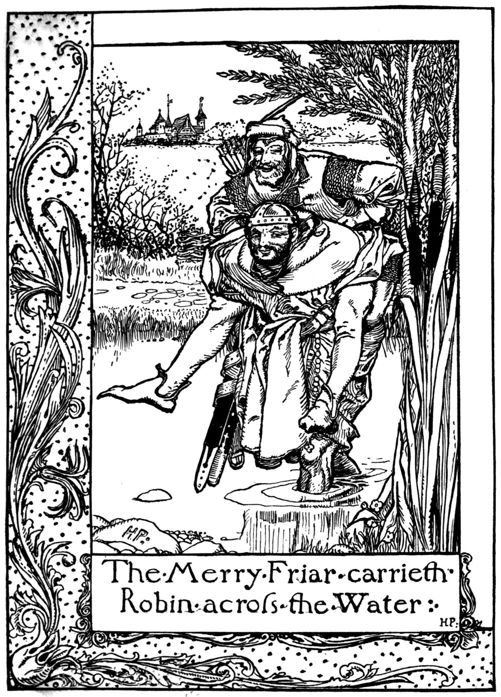
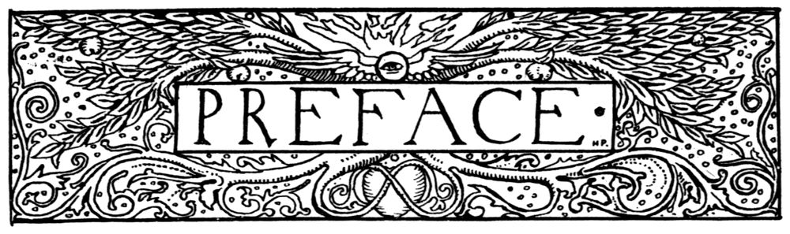
You who spend all your time trudging among serious things, and feel ashamed to give yourself up even for a few short moments to fun and happiness in the land of Make-Believe; you who think that life has nothing to do with harmless laughter that never hurt anyone: this book is not for you. Shut it right now and go no further, because I'm telling you plainly that if you do, you'll be shocked to see good, sober people out of real history skipping and capering about in bright colors and jesters' patchwork, so that you'd never know them except for the names pinned on them. Here is a sturdy, hearty fellow with a quick temper (though not such a bad one, for all that) who goes by the name of Henry the Second. Here is a fair, gentle lady whom all the others bow to and call Queen Eleanor. Here is a fat rogue of a fellow dressed up in rich church robes, whom all the good people call my Lord Bishop of Hereford. Here is a certain fellow with a sour temper and a grim face: the Sheriff of Nottingham, his worship himself. And here, above all, is a great, tall, merry fellow who roams the greenwood and joins in country games, and sits beside the Sheriff at a merry feast, and who carries the name of the proudest of all the Plantagenet kings: Richard the Lionheart. Besides these there is a whole crowd of knights, priests, noblemen, townsmen, yeomen, pages, ladies, lasses, innkeepers, beggars, peddlers, and who knows what else, all living the merriest of merry lives, and all held together by nothing more than a few loose strands of certain old ballads (snipped and clipped and tied together again in a score of knots), which pull these jolly fellows here and there, singing as they go.
Here you'll find a hundred dull, sober, plodding places all decked out with flowers and who knows what else, until nobody would recognize them in their fancy dress. And here is a country with a name you know well, where no chilly fog weighs on our spirits, and no rain falls except the kind that rolls off our backs like April showers off the backs of sleek ducks; where flowers bloom forever and birds are always singing; where every fellow has a merry song to sing as he travels the roads, and ale and beer and wine (the kind that never muddles anybody's wits) flow like water in a brook.
This country is not Fairyland. Then what is it? It is the land of Make-Believe, and it is the pleasant kind of place that, when you get tired of it, you just (whisk!) clap the pages of this book together, and it's gone, and you are ready for everyday life again, with no harm done.
And now I lift the curtain that hangs between here and No-Man's-Land. Will you come with me, dear Reader? Thank you. Give me your hand.
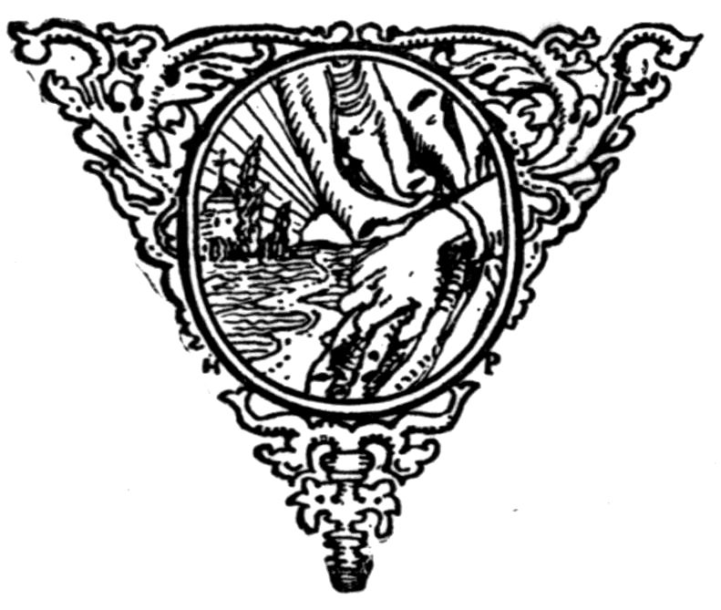
Prologue: How Robin Hood Became an Outlaw
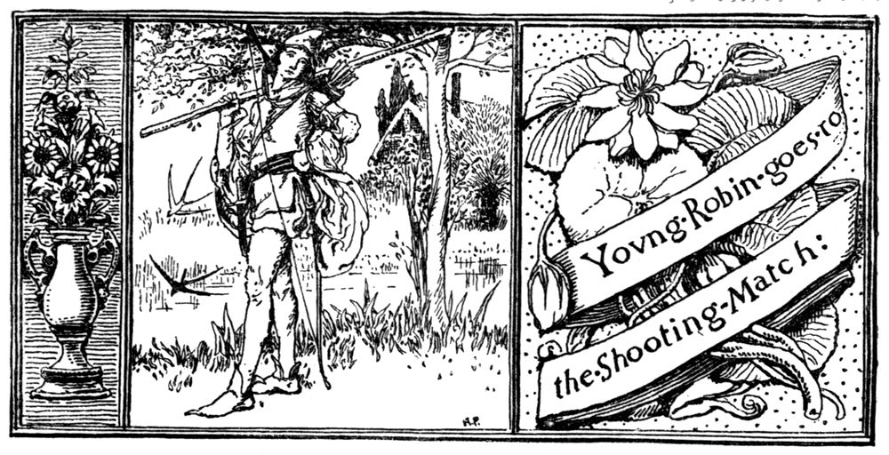
In which you will hear about Robin Hood and his adventure with the King's foresters; how his band gathered around him; and the merry adventure that won him his good right-hand man, the famous Little John.
In merry England in the time of old, when good King Henry the Second ruled the land, there lived within the green glades of Sherwood Forest, near Nottingham Town, a famous outlaw whose name was Robin Hood. No archer who ever lived could send an arrow flying with such skill and cunning as he could, and there were never such yeomen (that is, such free-born countrymen, every one of them a farmer's son and a fine shot with a bow) as the hundred and forty merry men who roamed with him through the shady greenwood. Very merrily they lived in the depths of Sherwood Forest, with no worries and no wants, passing the time with friendly archery contests or bouts of fighting with sticks, and living on the King's deer, washed down with mugs of strong October ale.
Not just Robin himself but the whole band were outlaws, living apart from other people. Even so, the country folk all around loved them, because nobody who ever came to jolly Robin for help in a time of need went away again empty-handed.
And now I'll tell you how it came about that Robin Hood got on the wrong side of the law.
When Robin was a young man of eighteen, strong in body and bold in heart, the Sheriff of Nottingham announced a shooting match, and offered a whole barrel of ale as the prize to whoever shot the best arrow in Nottinghamshire. "Well," said Robin, "I'll go too, because I'd love to draw a bowstring for the bright eyes of my sweetheart, and for a barrel of good October ale." So up he got, took his good strong bow of yew wood and twenty or more of his broad, yard-long arrows, and set off from Locksley Town through Sherwood Forest toward Nottingham.
It was dawn in the merry month of May, when the hedgerows are green and flowers dress up the meadows: speckled daisies and yellow cuckoo-buds and pretty primroses all along the brambly hedges; when the apple trees blossom and the sweet birds sing (the lark at dawn, the thrush, and the cuckoo); when lads and lasses look at each other with sweet thoughts; when busy housewives spread their linen out on the bright green grass to bleach in the sun. Sweet was the greenwood as he walked along its paths, and bright were the green, rustling leaves, where the little birds sang with all their might. And Robin whistled happily as he tramped along, thinking about Maid Marian and her bright eyes, for at a time like that a young man's thoughts tend to turn pleasantly to the girl he loves best.
As he was walking along like this, with a brisk step and a merry whistle, he suddenly came upon some foresters (the King's own men, whose job was to guard the forest and its deer) sitting under a great oak tree. There were fifteen of them in all, having a fine time eating and drinking as they sat around a huge meat pie. Each man helped himself by plunging his hands into the pie, and washed down what he ate with great drinking horns of ale, which they filled all foaming from a barrel standing nearby. Every one of them was dressed in Lincoln green (the fine green cloth made in the town of Lincoln), and they made a handsome sight sitting on the grass under that fair, spreading tree. Then one of them called out to Robin with his mouth full, "Hey there! Where are you going, little boy, with your one-penny bow and your quarter-penny arrows?"
Robin got angry at that, because no young fellow likes being teased about how young he is.
"Well," he said, "my bow and my arrows are just as good as yours. And besides, I'm going to the shooting match at Nottingham Town, which our good Sheriff of Nottinghamshire has announced. I'll be shooting there against other strong yeomen, because a prize has been offered: a fine barrel of ale."
Then one man with a horn of ale in his hand said, "Ho! Listen to the boy! Why, sonny, your mother's milk is hardly dry on your lips, and here you are chattering about standing up with strong grown men at the Nottingham targets, when you can barely pull back the string of a baby's bow!"
"I'll bet the best of you twenty marks," said bold Robin (a mark was two-thirds of a pound, so this was a great deal of money), "that I can hit the center of a target more than three hundred yards away, with the help of Our Lady."
At that they all roared with laughter, and one of them said, "Well bragged, you pretty baby, well bragged! And you know perfectly well there's no target anywhere near to prove it."
And another one cried, "Next he'll be drinking ale with his milk!"
That made Robin furious. "Listen," he said. "Over there, at the far end of the glade, I can see a herd of deer, even farther away than three hundred yards. I'll bet you twenty marks that, with Our Lady's leave, I can bring down the best stag of them all."
"Done!" cried the man who had spoken first. "Here are my twenty marks. I bet you can't kill a single animal, with or without Our Lady's help."
So Robin took his good yew bow in his hand. He set the tip of it against the top of his foot and strung it in one quick, neat movement; then he fitted a broad, yard-long arrow to the string, raised the bow, and drew the gray goose feathers back to his ear. The next moment the bowstring sang, and the arrow sped down the glade as fast as a sparrowhawk skimming on a north wind. The finest stag in all the herd leaped high in the air, and then fell dead, and his heart's blood reddened the green path.
"Ha!" cried Robin. "How do you like that shot, my friend? I'd say the bet was mine, even if it had been three hundred pounds."
Then all the foresters were filled with rage, and the man who had spoken first and lost the bet was the angriest of them all.
"No!" he cried. "The bet isn't yours at all, and you'd better clear out of here right now, or by all the saints in heaven, I'll beat you black and blue until you'll never walk again!" "Don't you know," said another, "that you've just killed one of the King's deer? By the law of our gracious lord and sovereign King Harry, you ought to have your ears cut off close to your head!"
"Grab him!" shouted a third.
"No," said a fourth, "just let him go, since he's so young."
Robin Hood didn't say a word. He just looked at the foresters with a grim face; then he turned on his heel and strode away from them down the forest glade. But his heart was bitterly angry, for his blood was hot and young and quick to boil.
Now, it would have been far better for the man who had spoken first if he had left Robin Hood alone. But his temper was up, partly because a boy had gotten the better of him, and partly because of all the ale he had been gulping down. So suddenly, without any warning, he jumped to his feet, grabbed his bow, and fitted an arrow to it. "Yes," he shouted, "and I'll help you on your way!" And he sent the arrow whistling after Robin.
It was lucky for Robin Hood that the forester's head was spinning with ale, or Robin would never have taken another step. As it was, the arrow whistled past within three inches of his head. Then he spun around, drew his own bow in a flash, and sent an arrow back.
"You said I was no archer!" he shouted. "Say it again now!"
The arrow flew straight. The forester pitched forward with a cry and lay face down on the ground, with the arrows from his quiver rattling down around him, and the gray-feathered shaft wet with his heart's blood. Before the others could gather their wits, Robin Hood had vanished into the depths of the greenwood. Some of them started after him, but without much heart, since each was afraid of dying the way his comrade had. So before long they all came back, lifted up the dead man, and carried him away to Nottingham Town.
Meanwhile Robin Hood ran on through the greenwood. All the joy and brightness had gone out of everything, for his heart was sick inside him, and it was sinking into his soul that he had killed a man.
"Oh, no!" he cried. "You've found me an archer, all right, one who will make your wife weep and wring her hands! I wish you'd never said a word to me, or that I'd never come your way, or even that my right forefinger had been cut off before this had happened! I struck in a hurry, and now I'll grieve for it at my leisure!" And then, even in all his trouble, he remembered the old saying: "What's done is done, and a cracked egg can't be mended."
And so he came to live in the greenwood, which was to be his home for many years to come. He would never again see the happy days with the lads and lasses of sweet Locksley Town, because he was declared an outlaw: not only because he had killed a man, but also because he had poached one of the King's deer. A reward of two hundred pounds was put on his head, for whoever would bring him to the King's court.
Now the Sheriff of Nottingham swore that he himself would bring this scoundrel Robin Hood to justice, and for two reasons: first, because he wanted the two hundred pounds, and second, because the forester Robin Hood had killed was a relative of his.
But Robin Hood stayed hidden in Sherwood Forest for a year, and in that time many others like him gathered around him, men who had been cast out from other people for one reason or another. Some had shot a deer in the hungry wintertime, when they couldn't get any other food, and had been seen doing it by the foresters, but had gotten away and so saved their ears. Some had been thrown off the land their families had always farmed, so that their farms could be added to the King's lands in Sherwood Forest. Some had been robbed by a great baron or a rich abbot or a powerful squire. All of them, for one reason or another, had come to Sherwood to escape injustice and cruelty.
So in that one year a hundred or more good strong yeomen gathered around Robin Hood and chose him to be their leader and chief. Then they made a vow: just as they themselves had been robbed, they would rob the people who had robbed them, whether baron, abbot, knight, or squire, and from each of them they would take back what had been squeezed out of the poor by unfair taxes, or land rents, or unjust fines. But they would give the poor a helping hand in times of need and trouble, and would give back to them what had been unfairly taken from them. And besides this, they swore never to hurt a child, and never to wrong a woman, whether she was a girl, a wife, or a widow. So after a while, when people began to see that the outlaws meant them no harm, and that money or food arrived for many a poor family just when they needed it most, they began to praise Robin and his merry men, and to tell all sorts of stories about him and his doings in Sherwood Forest, because they felt that he was one of their own.
One fine morning, when all the birds were singing happily among the leaves, Robin Hood got up, and so did all his merry men, each of them washing his head and hands in the cold brown brook that went leaping and laughing from stone to stone. Then Robin said, "We haven't had any fun for fourteen days, so I'm going out right now to look for adventure. But you stay here in the greenwood, my merry men, all of you; only make sure you listen for my call. If I need help, I'll blow three blasts on my bugle horn. Then come quickly, because it will mean I need you."
With that, he strode off through the leafy forest glades until he came to the edge of Sherwood. There he wandered for a long time, along highways and byways, through little hollows and along the borders of the forest. Now he met a pretty, cheerful girl in a shady lane, and each of them gave the other a friendly word and went on; now he saw a fine lady riding an easy-paced horse, and he tipped his cap to her, and she bowed back politely to the handsome young man; now he saw a fat monk on a donkey loaded down with baskets; now a gallant knight, with spear and shield and armor flashing in the sunlight; now a page dressed in crimson; and now a solid citizen of good Nottingham Town, pacing along with a serious face. He saw all these sights, but not one adventure did he find. At last he took a path along the edge of the forest, a little side road that dipped down toward a broad, pebbly stream with a narrow bridge across it, made of a single log. As he came near the bridge he saw a tall stranger coming toward it from the other side. So Robin walked faster, and so did the stranger, each of them meaning to cross first.
"Stand back, you," said Robin, "and let the better man cross first."
"No," answered the stranger. "You stand back yourself, because I'm pretty sure the better man is me."
"We'll soon see about that," said Robin. "And meanwhile, stay where you are, or else, by the bright brow of Saint Elfrida, I'll show you a fine bit of Nottingham sport, with a yard of arrow between your ribs."
"Well," said the stranger, "I'll tan your hide until it's as many colors as a beggar's patched cloak, if you so much as touch the string of that bow you're holding."
"You're braying like a donkey," said Robin. "I could send this arrow straight through your proud heart before a friar could say grace over a roast goose."
"And you're talking like a coward," the stranger answered, "because there you stand with a good yew bow to shoot me through the heart, while I've got nothing in my hand but a plain blackthorn stick to meet you with."
"Now," said Robin, "on my honor, nobody has ever called me a coward in all my life. I'll lay down my trusty bow and my arrows too, and if you dare to wait for me, I'll go and cut myself a stick to test your courage with."
"Oh, I'll wait for you, all right, and happily, too," said the stranger, and he leaned on his staff, solid as a post, to wait for Robin.
Then Robin Hood went quickly to the edge of the thicket and cut himself a good staff of young oak, straight and without a flaw, and six feet long, and came back trimming the tender little shoots off it, while the stranger waited for him, leaning on his staff and whistling as he gazed around. As Robin trimmed his staff, he studied the stranger out of the corner of his eye, measuring him from head to toe, and he thought he had never seen a bigger or stronger man. Robin was tall, but the stranger was taller by a head and a neck, because he was seven feet tall. Robin was broad across the shoulders, but the stranger was broader by twice the width of a hand, and he measured more than a yard around the waist.
"All the same," Robin said to himself, "I'll give you a fine thrashing, my good fellow." Then he said out loud, "Look, here's my good staff, strong and tough. Now wait for me, if you dare, and meet me, if you're not afraid. We'll fight until one of us gets knocked into the stream."
"Now that suits me down to the ground!" cried the stranger, twirling his staff over his head between his fingers and thumb until it whistled.
Not even the Knights of King Arthur's Round Table ever had a sterner fight than these two. In a moment Robin stepped quickly onto the bridge where the stranger stood. First he faked one way, and then he swung a blow at the stranger's head that would have tumbled him straight into the water if it had landed. But the stranger turned the blow aside very neatly, and gave back one just as hard, which Robin turned aside in the same way. And so they stood, each in his place, neither one giving back so much as a finger's width, for a whole hour, and many blows were given and taken in that time, until there were sore bones and bumps here and there; but neither one thought of crying "Enough!", and neither looked likely to fall off the bridge. Every now and then they stopped to rest, and each thought he had never in all his life seen anybody so good with a quarterstaff. At last Robin gave the stranger such a whack on the ribs that his jacket steamed like a damp straw roof in the sun. It was such a hard blow that the stranger came within a hair of falling off the bridge; but he caught his balance right away, and with one clever stroke gave Robin a crack on the head that made the blood flow. Then Robin went wild with anger and struck at the other with all his might. But the stranger blocked the blow, and once again he walloped Robin, and this time so squarely that Robin went head over heels into the water, the way the kingpin goes down in a game of bowling.
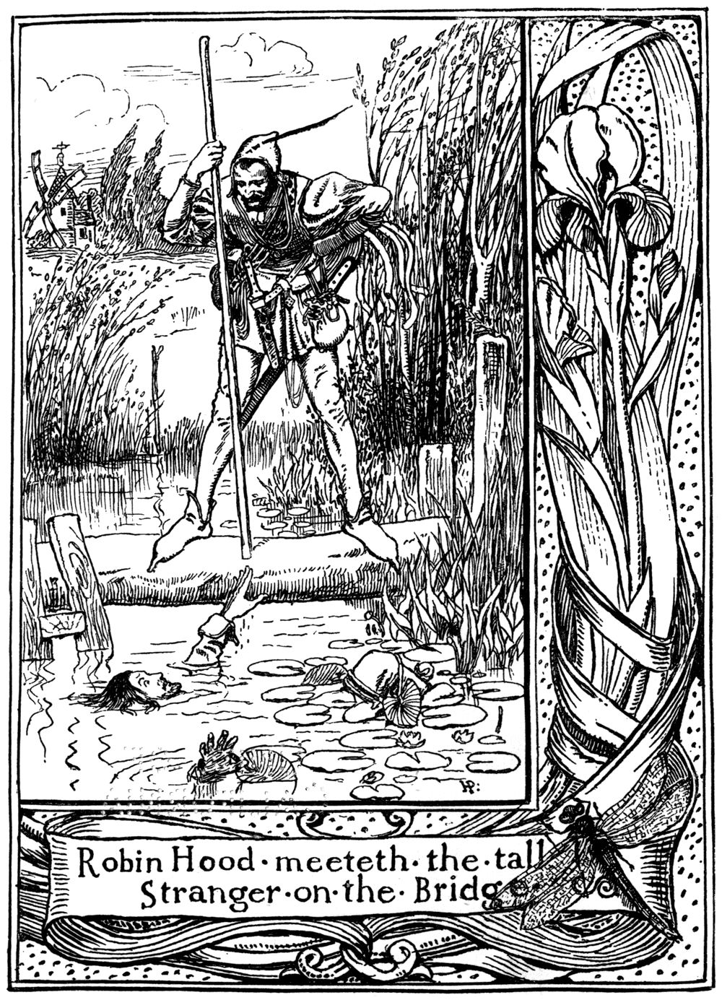
"And where are you now, my good lad?" shouted the stranger, roaring with laughter.
"Oh, in the flood, floating away down the river!" cried Robin, and he couldn't help laughing himself at the sorry state he was in. Then he got to his feet and waded to the bank, with the little fish darting this way and that, frightened by all his splashing.
"Give me your hand," he cried, when he had reached the bank. "I have to admit you're a brave and sturdy fellow, and you strike a mighty good blow with a stick, too. Goodness me, my head is humming like a beehive on a hot June day."
Then he put his horn to his lips and blew a blast that went echoing sweetly down the forest paths. "Yes, indeed," he said again, "you're a big lad, and a brave one too, because I'm sure there isn't another man between here and Canterbury who could do to me what you've just done."
"And you," said the stranger, laughing, "take a beating like a brave heart and a sturdy yeoman."
But now the twigs and branches in the distance began to rustle as men came near, and suddenly twenty or forty good strong yeomen, all dressed in Lincoln green, burst out of the thicket, with merry Will Stutely at their head.
"Master!" cried Will. "What's all this? Why, you're soaking wet from head to foot, right through to the skin!"
"Well," jolly Robin answered, "that big fellow there tumbled me head over heels into the water, and gave me a thrashing besides."
"Then he won't get away without a ducking, and a thrashing too!" cried Will Stutely. "Get him, lads!"
Then Will and twenty yeomen jumped on the stranger. But quick as they were, they found him ready for them, striking right and left with his stout staff, so that although he went down under the weight of so many, a few of them were rubbing cracked heads before he was beaten.
"No, stop!" cried Robin, laughing until his sore sides ached all over again. "He's a good man and a true one, and nobody's going to hurt him. Now listen, young man: will you stay with me and be one of my band? You'll have three suits of Lincoln green every year, and forty marks in wages besides, and a share of whatever good luck comes our way. You'll eat sweet venison and drink the strongest ale, and you'll be my own right-hand man, because I've never seen anyone handle a stick like you in all my life. Speak up! Will you be one of my good merry men?"
"I don't know about that," said the stranger sulkily, because he was angry at being knocked about so. "If you handle a yew bow and an arrow no better than you handle an oak stick, I'd say you aren't fit to be called yeomen where I come from. But if there's any man here who can shoot a better arrow than I can, then I'll think about joining you."
"Well, honestly," said Robin, "you're a cheeky fellow, sir! But I'll come down to your level, which is more than I've ever done for any man before. Good Stutely, cut a nice white piece of bark four fingers wide and fasten it on that oak tree over there, eighty yards away. Now, stranger, hit that squarely with an arrow, and then you can call yourself an archer."
"Oh, I'll do that, all right," he answered. "Give me a good strong bow and a nice broad arrow, and if I don't hit it, you can strip me and beat me blue with bowstrings."
Then he picked the strongest bow among them all, except for Robin's own, and a straight arrow with gray goose feathers, well-fletched and smooth; and stepping up to the mark (while the whole band sat or lay on the grass, watching to see him shoot) he drew the arrow back to his cheek and let it go so cleanly, and sent it so straight down the path, that it split the mark right in the middle. "Aha!" he cried. "Beat that if you can!" And even the yeomen clapped their hands at such a fine shot.
"That really is a sharp shot," said Robin. "I can't beat it, but maybe I can spoil it."
Then he took up his own good, strong bow, fitted an arrow with great care, and shot with all the skill he had. The arrow flew so straight and so true that it landed squarely on the stranger's arrow and split it into splinters. Then all the yeomen jumped to their feet and cheered because their master had shot so well.
"By the strong yew bow of good Saint Withold!" cried the stranger. "That really is a shot, and I never saw anything like it in all my life! Now I'll truly be your man, from this day on and forever. Good Adam Bell was a fine shot, but he never shot like that!" (Adam Bell, along with Clym of the Clough and William of Cloudesley, were three famous archers of the North Country, whose names have been sung in many ballads from the olden days.)
"Then I've gained a really good man today," said jolly Robin. "What's your name, my friend?"
"Where I come from, people call me John Little," answered the stranger.
Then Will Stutely, who loved a good joke, spoke up. "No, my dear little stranger," he said, "I don't like your name, and I'd like to change it. Little you certainly are, with such small bones and such skinny muscles, so you'll be christened Little John, and I'll be your godfather."
At that Robin Hood and the whole band laughed out loud, until the stranger began to get angry.
"If you make fun of me," he said to Will Stutely, "you'll get sore bones and small thanks, and pretty soon, too."
"No, my good friend," said Robin Hood, "bottle up your temper, because the name fits you nicely. Little John you'll be called from now on, and Little John it will be. So come along, my merry men; we'll get a christening feast ready for this pretty baby."
So they turned their backs on the stream and plunged into the forest again, following their own trail until they reached the place where they lived, deep in the woodland. There they had built huts out of bark and tree branches, and made beds of sweet-smelling rushes covered with the skins of deer. There stood a great oak tree with branches spreading wide all around it, and under it was a seat of green moss, where Robin Hood liked to sit at feasts and celebrations with his strong men around him. There they found the rest of the band, some of whom had come in with a couple of fat deer. Then they all built big fires, and after a while they roasted the deer and opened a barrel of foaming ale. When the feast was ready they all sat down, but Robin put Little John at his right hand, because from now on he would be second in command of the band.
When the feast was over, Will Stutely spoke up. "I think it's about time to christen our bonny baby, isn't it, my merry boys?" And "Yes! Yes!" they all cried, laughing until the woods echoed with their fun.
"Then we'll have seven godfathers," said Will Stutely, and he went hunting through the whole band and picked out the seven strongest men of all.
"Now, by Saint Dunstan," cried Little John, jumping to his feet, "more than one of you will be sorry if you lay a finger on me!"
But without a word they all rushed at him at once, grabbing him by the arms and legs, and holding him tight no matter how he struggled, and they carried him out while everyone stood around to watch the fun. Then a man stepped forward who had been chosen to play the priest because he had a bald head, and in his hand he carried a brimming pot of ale. "Now, who brings this baby?" he asked, very solemnly.
"I do," answered Will Stutely.
"And what name do you give him?"
"I call him Little John."
"Now, Little John," said the pretend priest, "you haven't really been alive up to now, only getting along through the world somehow; but from now on you will really live. When you weren't living, you were called John Little; but now that you are living for real, Little John you shall be called. And so I christen you." And at these last words he poured the whole pot of ale over Little John's head.
Then everyone shouted with laughter to see the good brown ale streaming over Little John's beard and dripping from his nose and chin, while he blinked because it stung his eyes. At first he felt like getting angry, but he found he couldn't, because the others were having such fun; so he laughed along with the rest. Then Robin took this sweet, pretty baby and dressed him all over again, from head to toe, in Lincoln green, and gave him a good strong bow, and so made him a member of the merry band.
And that is how Robin Hood became an outlaw; that is how a band of merry companions gathered around him; and that is how he gained his right-hand man, Little John. And so the prologue ends. Next I'll tell you how the Sheriff of Nottingham tried three times to capture Robin Hood, and how he failed every time.
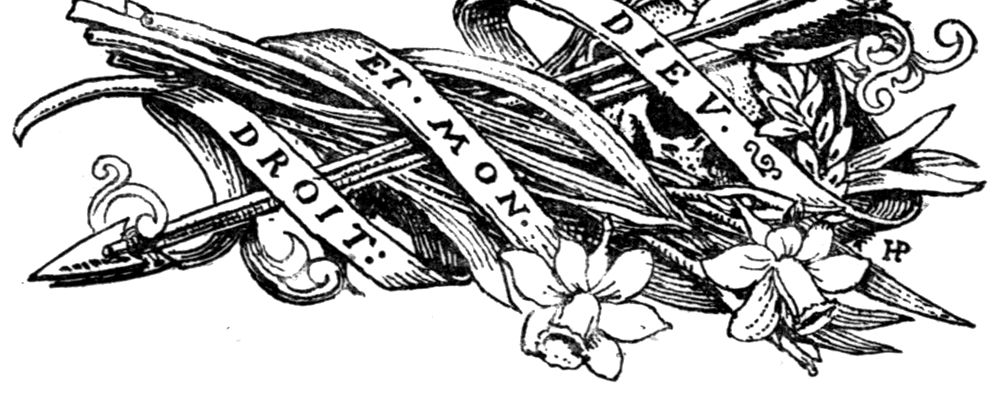
Part One: The Sheriff Tries Three Times
Chapter 1: Robin Hood and the Tinker
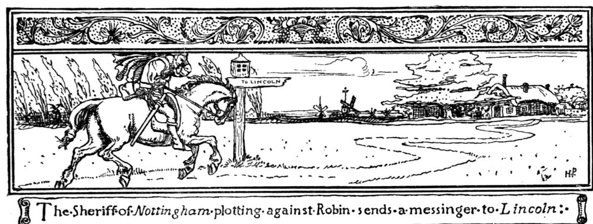
Telling how the Sheriff of Nottingham swore he would make Robin Hood pay for his deeds; and how he tried three times to do it, and missed each time by a good bow's length.
Now it was told before how two hundred pounds were put on Robin Hood's head, and how the Sheriff of Nottingham swore that he himself would capture Robin, both because he wanted the two hundred pounds very much and because the man Robin had killed was a relative of his. Now, the Sheriff did not yet know how many men Robin had around him in Sherwood. He thought he could serve a warrant for Robin's arrest just as he might on any other man who had broken the law. So he offered eighty golden angels (an angel was a gold coin, and eighty of them made a small fortune) to anyone who would serve this warrant. But the men of Nottingham Town knew more about Robin Hood and his doings than the Sheriff did, and many of them laughed at the thought of serving a warrant on the bold outlaw. They knew very well that all they would get for that job would be cracked heads, so nobody came forward to take it on. Two weeks went by like this, and in all that time no one came forward to do the Sheriff's business. Then he said, "I've offered a very good reward to anyone who will serve my warrant on Robin Hood, and I'm amazed that nobody has come to take on the task."
Then one of his men who was standing near him said, "Good master, you don't know how many men Robin Hood has around him, or how little he cares for any warrant from king or sheriff. Honestly, nobody wants to go on this errand, for fear of cracked heads and broken bones."
"Then I say all the men of Nottingham are cowards," said the Sheriff. "And show me the man in all Nottinghamshire who dares to disobey the warrant of our sovereign lord King Harry, because, by the shrine of Saint Edmund, I'll hang him sixty feet high! But if no man in Nottingham dares to win eighty angels, I'll send somewhere else, because there must be men with some backbone somewhere in this land."
Then he called for a messenger he trusted greatly, and told him to saddle his horse and get ready to go to Lincoln Town, to see whether he could find anyone there who would do the Sheriff's bidding and win the reward. So that same morning the messenger set off on his errand.
The sun shone brightly on the dusty highway that ran from Nottingham to Lincoln, stretching away all white over hill and valley. Dusty was the highway, and dusty was the messenger's throat, so his heart was glad when he saw ahead of him the sign of the Blue Boar Inn, a little more than halfway along his journey. The inn looked good to him, and the shade of the oak trees standing around it seemed cool and pleasant, so he got down from his horse to rest for a while, and called for a pot of ale to wet his thirsty throat.
There he saw a party of very jolly fellows sitting under the spreading oak that shaded the grass in front of the door. There was a tinker (a traveling mender of pots and pans), two barefoot friars (traveling monks who live by begging), and a group of six of the King's foresters, all dressed in Lincoln green. Every one of them was gulping down strong, foaming ale and singing merry ballads of the good old days. The foresters laughed loudly as jokes flew back and forth between the songs, and the friars laughed louder still, for they were hearty men with beards that curled like the wool of black rams. But loudest of all laughed the Tinker, and he sang more sweetly than any of the others. His bag and his hammer hung on a twig of the oak tree, and nearby leaned his good, strong cudgel, as thick as his wrist and knotted at the end.
"Come on," one of the foresters called to the tired messenger, "come and join us for this round. Hey, landlord! Bring a fresh pot of ale for every man here."
The messenger was glad enough to sit down with the others, because his legs were tired and the ale was good.
"Now, what news are you carrying in such a hurry?" asked one of them. "And where are you riding today?"
The messenger was a chatty soul who dearly loved a bit of gossip; besides, the pot of ale warmed his heart. So he settled himself comfortably in a cozy corner of the inn bench, while the landlord leaned in the doorway and the landlady stood with her hands tucked under her apron, and he unpacked his whole bundle of news. He told everything from the very beginning: how Robin Hood had killed the forester, and how he had hidden in the greenwood to escape the law; how he lived there in defiance of the law, heaven knows, killing His Majesty's deer and making fat abbots, knights, and squires pay a toll, so that nobody dared to travel even on broad Watling Street or the Fosse Way, the great old highroads, for fear of him; how the Sheriff meant to serve the King's warrant on this same rogue, though Robin wouldn't care a bit about a warrant from either king or sheriff, since he was far from being a law-abiding man. Then he told how nobody could be found in all Nottingham Town to serve this warrant, for fear of cracked skulls and broken bones, and how he, the messenger, was now on his way to Lincoln Town to find out what the Lincoln men were made of.
"Well, as it happens, I come from good Banbury Town," said the jolly Tinker, "and nobody near Nottingham (nor Sherwood either, if that's what we're aiming at) can match me with a cudgel. Why, lads, didn't I meet that wild joker Simon of Ely at the famous fair at Hertford Town, and beat him in the ring there, in front of Sir Robert of Leslie and his lady? This same Robin Hood, whom I've never heard of before, I must say, is a very merry blade. But if he's strong, am I not stronger? And if he's sly, am I not slyer? Now, by the bright eyes of Nan of the Mill, and by my own name, which is Wat of the Crabstaff, and by my own mother's son, which is me, I will, yes, I, Wat of the Crabstaff, will meet this same sturdy rogue! And if he won't respect the seal of our glorious sovereign King Harry and the warrant of the good Sheriff of Nottinghamshire, I'll bruise and beat and batter his head until he never moves a finger or a toe again! Did you hear that, my fine fellows?"
"Now you're the man for my money!" cried the messenger. "And you're coming back with me to Nottingham Town."
"No," said the Tinker, shaking his head slowly from side to side. "I go with no man unless it's of my own free will."
"No, no," said the messenger, "there isn't a man in Nottinghamshire who could make you go against your will, you brave fellow."
"Yes, I'm brave, all right," said the Tinker.
"Why, of course you are," said the messenger. "You're a brave lad. But our good Sheriff has offered eighty angels of bright gold to whoever serves the warrant on Robin Hood, though much good may it do him."
"Then I'll go with you, lad. Just wait until I get my bag and my hammer, and my cudgel. Yes, just let me meet this same Robin Hood, and we'll see whether he respects the King's warrant or not." So, after they had paid their bill, the messenger set off back to Nottingham again, with the Tinker striding along beside his horse.
One bright morning soon after this, Robin Hood set off for Nottingham Town to find out what was going on there. He walked merrily along the roadside, where the grass was sweet with daisies, and his eyes wandered, and so did his thoughts. His bugle horn hung at his hip and his bow and arrows on his back, while in his hand he carried a good strong oak staff, which he twirled in his fingers as he strolled along.
As he was walking down a shady lane like this, he saw a tinker coming toward him, belting out a merry song as he came near. On his back hung his bag and his hammer, and in his hand he carried a very sturdy staff of crab-apple wood, a full six feet long, and this is what he sang:
"In peapod time, when hound to horn
Gives ear until the buck is killed,
And little lads with pipes of corn
Sit minding beasts out in the field—"
"Hello there, good friend!" cried Robin.
"I went to gather strawberries—"
"Hello there!" cried Robin again.
"By woods and groves so fair—"
"Hello! Are you deaf, man? Good friend, I said!"
"And who are you, so bold as to cut off a fine song?" said the Tinker, stopping his singing. "Hello to you too, whether you're a good friend or not. But let me tell you, my sturdy fellow: if you're a good friend, that's good for both of us; but if you're no good friend, that's bad for you."
"And where do you come from, my hearty blade?" asked Robin.
"I come from Banbury," answered the Tinker.
"Oh, no!" said Robin. "I hear there's sad news this merry morning."
"Ha! Is there really?" cried the Tinker eagerly. "Tell it quickly, please! I'm a tinker by trade, as you can see, and being in my trade I'm greedy for news, the way a priest is greedy for farthings."
"Well then," said Robin, "listen, and I'll tell you. But be brave, because the news is sad, I'm afraid. Here it is: I hear that two tinkers have been put in the stocks for drinking ale and beer!"
"Now plague take you and your news, you mangy dog," said the Tinker, "for you're speaking ill of good men. But it's sad news indeed, if two fine fellows are sitting in the stocks."
"No," said Robin, "you've missed the mark, and you're weeping for the wrong pig. The sad part of the news is that there are only two in the stocks, because all the others are roaming around the country free."
"Now, by the pewter plate of Saint Dunstan," cried the Tinker, "I've a good mind to tan your hide for your nasty joke! But if men are put in the stocks for drinking ale and beer, I bet you wouldn't miss out on your share."
Robin laughed out loud and cried, "Well caught, Tinker, well caught! Why, your wits are like beer: they froth up most when they turn sour! But you're right, man, because I love ale and beer dearly. So come along with me right now to the sign of the Blue Boar, close by here, and if you drink the way you look (and I'm sure you won't make a liar of your looks), I'll soak your throat with as good homebrewed ale as was ever tapped in all broad Nottinghamshire."
"Now, upon my word," said the Tinker, "you're a really good fellow, in spite of your nasty jokes. I love you, my sweet chick, and if I don't go with you to that same Blue Boar, you can call me a heathen."
"Tell me your news, good friend, please," said Robin as they trudged along together, "because tinkers, I've always heard, are all as full of news as an egg is full of meat."
"Now, I love you like a brother, my fine lad," said the Tinker, "or else I wouldn't tell you my news. Because I'm sly, man, and I've taken on a serious job that calls for all my wits. I've come to look for a bold outlaw that people around here call Robin Hood. In my pouch I've got a warrant, all properly written out on parchment, I'll have you know, with a great red seal on it to make it lawful. If I could only meet this same Robin Hood, I'd serve it on his dainty body, and if he didn't respect it, I'd beat him until every one of his ribs cried 'Amen!' But you live around here. Maybe you know Robin Hood yourself, good fellow."
"Why, yes, I know him a little," said Robin, "and I've seen him this very morning. But, Tinker, people say he's a terrible, sly thief. You'd better keep an eye on your warrant, man, or he may steal it right out of your pouch."
"Just let him try!" cried the Tinker. "He may be sly, but I'm sly too. I wish I had him here right now, man to man!" And he set his heavy cudgel spinning again. "But what sort of man is he, lad?"
"A lot like me," said Robin, laughing. "Nearly the same in height and build and age; and he has blue eyes, too."
"No," said the Tinker, "you're just a green youngster. I thought he was a great big bearded man, since the Nottingham men were so afraid of him."
"Honestly, he isn't as old as you, or as strong," said Robin. "But people do say he's very handy with a quarterstaff."
"That may be," said the Tinker stoutly, "but I'm handier than he is. Didn't I beat Simon of Ely in a fair fight in the ring at Hertford Town? But if you know him, my jolly lad, will you come with me and bring me to him? The Sheriff has promised me eighty bright angels if I serve the warrant on the rascal's body, and I'll give ten of them to you if you show him to me."
"Yes, I'll do that," said Robin. "But show me your warrant, man, so I can see whether it's any good or not."
"That I won't do, not even for my own brother," answered the Tinker. "Nobody's going to see my warrant until I serve it on that fellow's own body."
"Have it your way," said Robin. "If you won't show it to me, I don't know who you will show it to. But here we are at the sign of the Blue Boar, so let's go in and taste the landlord's brown October ale."
No sweeter inn could be found in all Nottinghamshire than the Blue Boar. No other inn had such lovely trees standing around it, or was so covered with trailing clematis and sweet honeysuckle. None had such good beer and such strong, foaming ale. And in wintertime, when the north wind howled and the snow drifted up around the hedges, there was no roaring fire anywhere to match the one that blazed on the hearth of the Blue Boar. At such times you might find a fine crowd of yeomen and country folk sitting around the blazing hearth, trading merry jokes, while roasted crab apples bobbed in bowls of ale on the hearthstone. Robin Hood and his band knew the inn well, because he and such merry companions as Little John or Will Stutely or young David of Doncaster had often gathered there when the whole forest was filled with snow. As for the landlord, he knew how to keep his tongue still in his head, and to swallow his words before they got past his teeth. He knew very well which side of his bread was buttered, because Robin and his band were his best customers, and they paid their bills on the spot, without ever having them chalked up behind the door. So now, when Robin Hood and the Tinker came in and called out for two great pots of ale, nobody could have told from the landlord's looks or words that he had ever set eyes on the outlaw before.
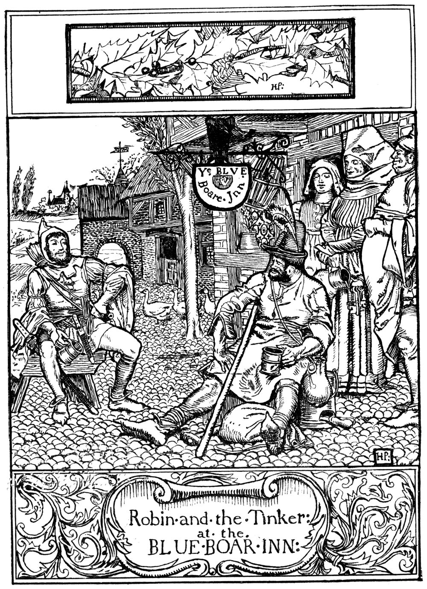
"You wait here," said Robin to the Tinker, "while I go and make sure the landlord draws our ale from the right barrel, because I know he has some good October ale, brewed by Withold of Tamworth." With that, he went inside and whispered to the landlord to add a measure of strong Flemish liquor to the good English ale; and the landlord did it, and brought it out to them.
"By Our Lady," said the Tinker, after a long swallow of the ale, "that same Withold of Tamworth (a very good Saxon name, too, I'd have you know) brews the strongest ale that ever passed the lips of Wat of the Crabstaff."
"Drink, man, drink," cried Robin, only wetting his own lips meanwhile. "Hey, landlord! Bring my friend another pot of the same. And now for a song, my jolly lad."
"Yes, I'll give you a song, my lovely fellow," said the Tinker, "because I never tasted ale like this in all my days. By Our Lady, it's making my head hum already! Hey, Missus Landlady, come and listen, if you'd like to hear a song, and you too, you pretty lass, because I never sing so well as when bright eyes are watching me."
Then he sang an ancient ballad from the time of good King Arthur, called "The Marriage of Sir Gawain," which you may read for yourself some day, in the sturdy English of long ago. And as he sang, everyone listened to that noble tale of a noble knight and how he gave himself up for the sake of his king. But long before the Tinker reached the last verse, his tongue began to trip and his head began to spin, because of the strong liquor mixed in with the ale. First his tongue tripped; then it grew thick; then his head wobbled from side to side; until at last he fell asleep as though he would never wake up again.
Then Robin Hood laughed out loud, and with his nimble fingers he quickly took the warrant out of the Tinker's pouch. "You're sly, Tinker," he said, "but I'd say you're not yet as sly as that same sly thief Robin Hood."
Then he called the landlord over and said, "Here, good man, are ten good shillings (a shilling was worth twelve pennies) for the fine time you've given us today. Make sure you take good care of your fine guest there, and when he wakes up you can charge him ten shillings too, and if he doesn't have it, you can take his bag and hammer, and even his coat, as payment. That's how I punish people who come into the greenwood to make trouble for me. As for you yourself, I never yet met a landlord who wouldn't charge twice if he could."
At this the landlord smiled slyly, as though he were saying to himself the old country saying, "Go teach a magpie to suck eggs!"
The Tinker slept until the afternoon was drawing to a close and the shadows were growing long beside the edge of the woods. Then he woke up. First he looked up, then he looked down, then he looked east, then he looked west, for he was gathering his wits together again, like barley straws blown apart by the wind. First he thought of his merry companion, but he was gone. Then he thought of his sturdy crabstaff, and that he had in his hand. Then he thought of his warrant, and of the eighty angels he was going to win by serving it on Robin Hood. He shoved his hand into his pouch, but not a scrap of paper or a single farthing was in it. Then he jumped to his feet in a rage.
"Hey, landlord!" he cried. "Where has that rascal gone who was with me just now?"
"What rascal does Your Worship mean?" said the landlord, calling the Tinker "Your Worship" to soothe him, the way a man might pour oil on rough water. "I saw no rascal with Your Worship, because I swear nobody would dare to call that man a rascal this close to Sherwood Forest. I saw a fine, sturdy yeoman with Your Worship, but I thought Your Worship knew him, because there are few people around here who pass him by without knowing him."
"Now, how should I, who never squealed in your pigsty, know every pig in it? Who was he, then, if you know him so well?"
"Why, that was a fine, sturdy fellow whom people around here call Robin Hood, and he—"
"Now, by Our Lady!" cried the Tinker hastily, in a deep voice like an angry bull. "You saw me come into your inn, me, a loyal, honest craftsman, and you never told me who my companion was, though you knew perfectly well yourself who he was! Now, I've a good round mind to crack your rascally head for you!" Then he picked up his cudgel and glared at the landlord as though he would hit him where he stood.
"No!" cried the landlord, throwing up his elbow, because he was afraid of the blow. "How was I to know you didn't know him?"
"You can be truly thankful," said the Tinker, "that I'm a patient man and so I'll spare your bald head, or else you'd never cheat another customer. But as for this same rascal Robin Hood, I'm going straight off to look for him, and if I don't crack his rascally head, you can chop my staff into kindling and call me a woman." With that, he got his things together to leave.
"No," said the landlord, standing in front of him with his arms spread out like a boy driving a flock of geese, for money made him bold. "You're not going anywhere until you've paid your bill."
"But didn't he pay you?"
"Not so much as a single farthing; and you've drunk ten good shillings' worth of ale today. No, I tell you, you're not leaving here without paying me, or else our good Sheriff will hear about it."
"But I haven't got anything to pay you with, good fellow," said the Tinker.
"Don't you 'good fellow' me," said the landlord. "I'm no good fellow when it comes to losing ten shillings! Pay me what you owe me in good solid money, or else leave your coat and your bag and your hammer, though I'm sure they aren't worth ten shillings, and I'll be the loser by it. No, and if you take one step, I've got a big dog inside and I'll set him on you. Maken, open the door and let Brian out if this fellow moves one step."
"No!" said the Tinker, because from roaming the countryside he had learned what dogs were like. "Take whatever you want, and let me go in peace, and a plague go with you. But oh, landlord! If I catch that mangy scoundrel, I swear he'll pay me back in full, with interest, for what he's taken!"
With that, he strode away toward the forest, talking to himself, while the landlord and his worthy wife and Maken stood looking after him, and laughed once he was well out of sight.
"Robin and I stripped that donkey of his pack very neatly," said the landlord.
Now it happened at about this time that Robin Hood was going through the forest to the Fosse Way to see what there was to see, for the moon was full and the night promised to be bright. In his hand he carried his strong oak staff, and at his side hung his bugle horn. As he walked up one forest path, whistling, the Tinker came down another, muttering to himself and shaking his head like an angry bull; and so, at a sudden bend, they met sharply face to face. Each of them stood still for a while, and then Robin spoke.
"Hello there, my sweet songbird," he said, laughing merrily. "How did you like your ale? Won't you sing me another song?"
At first the Tinker said nothing, but stood glaring at Robin with a grim face. "Now," he said at last, "I'm very glad I've met you, and if I don't rattle your bones inside your skin today, you have my permission to put your foot on my neck."
"With all my heart," cried merry Robin. "Rattle my bones, if you can." With that, he gripped his staff and got on his guard. Then the Tinker spat on his hands, grabbed his staff, and came straight at him. He struck two or three blows, but he soon found he had met his match, because Robin blocked and turned aside every one of them, and before the Tinker knew it, Robin gave him a rap on the ribs in return. At this Robin laughed out loud, and the Tinker grew angrier than ever and struck again with all his might and main. Again Robin blocked two of the blows, but at the third, his staff broke under the Tinker's mighty strokes. "Bad luck to you, you traitor of a staff!" cried Robin, as it fell from his hands. "You're a rotten stick to treat me like this when I need you most."
"Now give up," said the Tinker, "because you're my prisoner. And if you don't, I'll beat your head into a pudding."
Robin Hood didn't answer. He just clapped his horn to his lips and blew three blasts, loud and clear.
"Yes," said the Tinker, "blow all you like, but you're coming with me to Nottingham Town, because the Sheriff is eager to see you there. Now, will you give up, or am I going to have to break your pretty head?"
"If I have to drink sour ale, I have to," said Robin. "But I've never given up to any man before, and certainly not without a wound or a mark on my body. And now that I think about it, I won't give up now, either. Hey, my merry men! Come quickly!"
Then out of the forest leaped Little John and six sturdy yeomen dressed in Lincoln green.
"What's the matter, good master?" cried Little John. "What do you need, that you're blowing your horn so loudly?"
"There stands a tinker," said Robin, "who wants to take me to Nottingham to hang on the gallows."
"Then he'll hang himself, right now!" cried Little John, and he and the others went for the Tinker to seize him.
"No, don't touch him," said Robin, "because he's a really strong, brave man. He's a man of metal by trade, and a man of mettle, full of fighting spirit, by nature; and besides, he sings a lovely ballad. Tell me, good fellow, will you join my merry men? You'll have three suits of Lincoln green a year, and forty marks in wages besides. You'll share everything with us and lead a very merry life in the greenwood, because we have no cares, and bad luck never finds us in the sweet shade of Sherwood, where we shoot the brown deer and feast on venison and sweet oatcakes, and curds and honey. Will you come with me?"
"Why, yes, I'll join you all," said the Tinker, "because I love a merry life, and I love you, good master, even though you thumped my ribs and cheated me into the bargain. I'm glad to admit that you're both a stronger and a slyer man than I am; so I'll obey you and be your own true servant."
So they all turned their steps toward the depths of the forest, where the Tinker was to live from then on. For many a day he sang ballads to the band, until the famous Allan a Dale joined them, and next to his sweet voice everyone else's sounded as harsh as a raven's croak. But we'll hear about him later on.
Chapter 2: The Shooting Match at Nottingham Town
Then the Sheriff was furious that he had failed to catch jolly Robin, because word came to his ears, the way bad news always does, that people were laughing at him and making fun of his notion of serving a warrant on someone like the bold outlaw. And there is nothing a man hates so much as being laughed at. So he said, "Our gracious lord and sovereign the King himself shall hear about this, and how his laws are twisted and scorned by this band of rebel outlaws. As for that traitor of a Tinker, if I catch him, I'll hang him on the very highest gallows in all Nottinghamshire."
Then he ordered all his servants and followers to get ready to go to London Town, to see the King and speak with him.
At that, there was bustling at the Sheriff's castle, with men running here and there on this job and that one, while the forge fires of Nottingham glowed red far into the night like twinkling stars, for every blacksmith in the town was busy making or mending armor for the Sheriff's escort. This work went on for two days, and then, on the third, everything was ready for the journey. So off they set in the bright sunshine, from Nottingham Town to the Fosse Way and from there to Watling Street. They traveled like this for two days, until at last they saw the spires and towers of great London Town; and as they went along, many people stopped and stared at the fine show they made riding along the highways, with their flashing armor and bright plumes and fancy trappings.
In London, King Henry and his lovely Queen Eleanor were holding their court, which was bright with ladies in silks and satins and velvets and cloth of gold, and with brave knights and fine courtiers too.
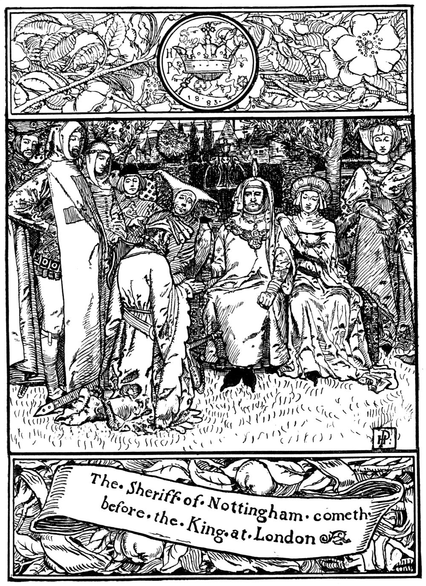
The Sheriff came there and was brought before the King.
"A favor! I beg a favor!" he said, as he knelt on the ground.
"Well, what do you want?" said the King. "Let's hear what you wish for."
"Oh, my good Lord and Sovereign," said the Sheriff, "in Sherwood Forest, in our own good county of Nottingham, there lives a bold outlaw whose name is Robin Hood."
"Yes, indeed," said the King, "his doings have reached even our own royal ears. He's a cheeky, rebellious rascal, and yet, I have to admit, a very merry soul all the same."
"But listen, my most gracious Sovereign," said the Sheriff. "I sent a warrant to him with your own royal seal on it, by a very strong fellow, but he beat the messenger and stole the warrant. And he kills your deer, and robs your own loyal subjects, even on the great highways."
"Why, what's this?" said the King angrily. "What do you expect me to do? You come to me with a great crowd of soldiers and followers, and yet you can't catch one band of rascals with no armor on their chests, in your own county! What do you expect me to do? Aren't you my Sheriff? Aren't my laws in force in Nottinghamshire? Can't you take action on your own against people who break the laws, or who do any harm to you or yours? Go, get out of here, and think hard. Come up with some plan of your own, but don't bother me any more. But watch out, Master Sheriff, because I will have my laws obeyed by every man in my kingdom, and if you can't enforce them, you're no sheriff of mine. So look out for yourself, I tell you, or harm may come to you as well as to all the thieving rascals in Nottinghamshire. When the flood comes, it sweeps away the grain along with the chaff."
Then the Sheriff turned away with a sore and troubled heart, and he bitterly regretted his fine show of followers, because he saw that the King was angry that he had so many men around him and still could not enforce the laws. So as they all rode slowly back to Nottingham, the Sheriff was thoughtful and full of worry. He didn't say a word to anyone, and none of his men spoke to him, but all the while he was busy working out some plan to catch Robin Hood.
"Aha!" he cried suddenly, slapping his hand on his thigh. "I've got it now! Ride on, my merry men, all of you, and let's get back to Nottingham Town as fast as we can. And mark my words: before two weeks have passed, that wicked rascal Robin Hood will be safely clapped into Nottingham jail."
But what was the Sheriff's plan?
A moneylender takes the silver coins out of a bag one by one, feeling the edge of each coin to find out whether someone has clipped bits of silver off it. In just that way, as they all rode slowly and gloomily back toward Nottingham, the Sheriff picked up one thought after another, feeling around the edges of each, but finding some flaw in every one. At last he thought of jolly Robin's daring spirit, and how, as the Sheriff knew, he often came right inside the walls of Nottingham.
"Now," thought the Sheriff, "if I could only coax Robin close to Nottingham Town, where I could find him, I promise you I'd lay hands on him so firmly that he'd never get away again." Then all of a sudden it came to him like a flash: if he announced a great shooting match and offered some grand prize, Robin Hood's bold spirit might get the better of his good sense and bring him to the targets. And it was this thought that made him cry "Aha!" and slap his palm on his thigh.
So as soon as he had got safely back to Nottingham, he sent messengers north and south, and east and west, to announce this grand shooting match through every town, village, and countryside. Everyone who could draw a longbow was invited, and the prize was to be an arrow of pure beaten gold.
When Robin Hood first heard the news, he was in Lincoln Town. He hurried back to Sherwood Forest, and soon called all his merry men around him and spoke to them like this:
"Now listen, my merry men, all of you, to the news I've brought from Lincoln Town today. Our friend the Sheriff of Nottingham has announced a shooting match, and he's sent messengers to spread the word all through the countryside, and the prize is to be a bright golden arrow. Now, I'd very much like one of us to win it, both because it's such a fine prize and because our sweet friend the Sheriff is the one offering it. So we'll take our bows and arrows and go there to shoot, because I know very well there'll be fun going on. What do you say, lads?"
Then young David of Doncaster spoke up and said, "Now please listen to what I have to say, good master. I've come straight from our friend Eadom of the Blue Boar, and there I heard the whole story about this match. But, master, I know from him, and he got it from the Sheriff's man Ralph of the Scar, that this rascal of a Sheriff has just set a trap for you with this shooting match, and wants nothing so much as to see you there. So don't go, good master. I know very well he's trying to trick you. Stay in the greenwood, or we'll all come to grief and sorrow."
"Now," said Robin, "you're a wise lad, and you keep your ears open and your mouth shut, the way a wise and crafty woodsman should. But are we going to let people say that the Sheriff of Nottingham scared off bold Robin Hood and a hundred and forty of the finest archers in all merry England? No, good David. What you've told me makes me want the prize even more than I did before. But what does our good old Gaffer Swanthold say? ('Gaffer' is what people used to call an old man.) Doesn't he say, 'A man in a hurry burns his mouth, and the fool who keeps his eyes shut falls into the pit'? That's what he says, and it's true; so we must meet a trick with a trick. Now, some of you dress up as friars in short robes, and some as country peasants, and some as tinkers, or as beggars; but make sure every man carries a good bow or a broadsword, in case we need them. As for me, I'll shoot for this same golden arrow, and if I win it, we'll hang it from the branches of our good greenwood tree for the whole band to enjoy. How do you like the plan, my merry men, all of you?"
Then "Good, good!" cried the whole band, with all their hearts.
Nottingham Town was a fine sight on the day of the shooting match. All along the green meadow below the town wall stretched a row of benches, one above another, for knights and ladies, squires and their wives, and rich townsmen and their wives; for nobody but people of rank and wealth was allowed to sit there. At the end of the range, near the target, was a raised seat decorated with ribbons and scarves and garlands of flowers, for the Sheriff of Nottingham and his lady. The range was forty paces wide. At one end stood the target, and at the other a tent of striped canvas, with many-colored flags and streamers fluttering from its pole. In this tent were barrels of ale, which any of the archers might open free of charge if they wanted to quench their thirst.
Across the range from where the seats for the gentlefolk were raised, there was a railing to keep the poorer people from crowding in front of the target. Early as it was, the benches were already beginning to fill with people of rank, who kept arriving in little carts, or on easy-paced riding horses that pranced gaily to the merry jingle of silver bells on their bridles. The poorer folk came too, and sat or lay on the green grass near the railing that kept them off the range. In the big tent the archers were gathering in twos and threes. Some were talking loudly about the fine shots each of them had made in his day; some were checking their bows, running a string between their fingers to make sure it wasn't frayed, or inspecting their arrows, shutting one eye and squinting down a shaft to make sure it wasn't warped but was straight and true; because neither bow nor arrow must fail at a time like this, and for a prize like this. And there was never such a company of yeomen as gathered at Nottingham Town that day, for the very best archers in merry England had come to this shooting match. There was Gill of the Red Cap, the Sheriff's own head archer, and Diccon Cruikshank of Lincoln Town, and Adam of the Dell, a man of Tamworth, who was sixty years old and more, but still strong and hearty, and who in his time had shot in the famous match at Woodstock, and had beaten that famous archer Clym of the Clough there. And many more famous men of the longbow were there, whose names have been handed down to us in fine ballads from the olden days.
Now all the benches were filled with guests, lords and ladies, townsmen and their wives, when at last the Sheriff himself arrived with his lady. He rode in a stately way on his milk-white horse, and she rode on her brown filly. On his head he wore a purple velvet cap, and his robe was purple velvet too, trimmed all around with rich ermine fur. His jacket and stockings were of sea-green silk, and his shoes were of black velvet, with long pointed toes fastened to his garters with golden chains. A golden chain hung around his neck, and at his collar was a great red jewel set in red gold. His lady was dressed in blue velvet, all trimmed with swan's down. So they made a splendid sight as they rode along side by side, and all the people shouted from where they were crowded, across the range from the gentlefolk. And so the Sheriff and his lady came to their places, where soldiers in coats of chain mail, carrying spears, stood waiting for them.
When the Sheriff and his lady had sat down, he told his herald to blow on his silver horn. The herald blew three blasts, which came echoing cheerfully back from the gray walls of Nottingham. Then the archers stepped forward to their places, while all the people shouted at the top of their voices, each one calling out for his favorite yeoman. "Red Cap!" cried some; "Cruikshank!" cried others; "Hooray for William of Leslie!" shouted still others; while the ladies waved silk scarves to urge each yeoman to do his best.
Then the herald stepped forward and announced the rules of the contest in a loud voice, like this:
"Each man shall shoot from that mark there, which is a hundred and fifty yards from the target. To begin, each man shoots one arrow, and out of all the archers, the ten who shoot the best arrows shall be chosen to shoot again. Each of these ten men shoots two arrows, and then the three who shoot the best arrows shall be chosen to shoot again. Each of those three men shoots three arrows, and the prize shall be given to the one who shoots the best arrows."
Then the Sheriff leaned forward, peering sharply through the crowd of archers to see whether Robin Hood was among them. But nobody there was dressed in Lincoln green, as Robin and his band always were. "All the same," the Sheriff said to himself, "he may still be here, and I'm just missing him in the crowd. But let me see when only ten men are shooting, because I'm sure he'll be one of the ten, or I don't know him at all."
And now the archers shot, each man in turn, and the good people had never seen such archery as was done that day. Six arrows landed in the bull's-eye, four in the black ring, and only two hit the outer ring; so when the last arrow flew and struck the target, all the people shouted out loud, because it was splendid shooting.
And now only ten men were left out of all those who had shot before, and of these ten, six were famous throughout the land, and most of the people gathered there knew them. These six men were Gilbert of the Red Cap, Adam of the Dell, Diccon Cruikshank, William of Leslie, Hubert of Cloud, and Swithin of Hertford. Two others were yeomen from merry Yorkshire; another was a tall stranger in blue, who said he came from London Town; and the last was a ragged stranger in scarlet, who wore a patch over one eye.
"Now," said the Sheriff to a soldier standing near him, "do you see Robin Hood among those ten?"
"No, I don't, Your Worship," answered the man. "Six of them I know very well. Of those Yorkshire yeomen, one is too tall and the other too short to be that bold rascal. Robin's beard is as yellow as gold, while that ragged beggar in scarlet has a brown beard, and is blind in one eye besides. As for the stranger in blue, I'd say Robin's shoulders are three inches broader than his."
"Then," said the Sheriff, slapping his thigh angrily, "that rascal is a coward as well as a rogue, and doesn't dare show his face among good, honest men."
Then, after they had rested a little while, those ten strong men stepped forward to shoot again. Each man shot two arrows, and while they shot, nobody said a word; the whole crowd watched, hardly daring to breathe. But when the last man had shot his arrow, another great shout went up, and many people threw their caps in the air for joy at such marvelous shooting.
"Now, by our gracious Lady," said old Sir Amyas of the Dell, who was bent with eighty years and more, and sat near the Sheriff, "I never saw such archery in all my life before, and yet I've seen the best hands with the longbow for sixty years and more."
And now only three men were left out of all those who had shot before. One was Gill of the Red Cap, one was the ragged stranger in scarlet, and one was Adam of the Dell, of Tamworth Town. Then all the people called out, some crying, "Hooray for Gilbert of the Red Cap!" and some, "Hooray for brave Adam of Tamworth!" But not a single man in the crowd called out for the stranger in scarlet.
"Now shoot well, Gilbert," cried the Sheriff, "and if yours is the best arrow, I'll give you a hundred broad silver pennies on top of the prize."
"I'll do my best, honestly," said Gilbert firmly. "A man can't do anything more than his best, but I'll try hard to do that today." With that, he took out a fine smooth arrow with a broad feather and fitted it neatly to the string. Then, drawing his bow carefully, he let the arrow fly. Straight flew the arrow, and it landed squarely in the bull's-eye, a finger's width from the very center. "Gilbert! Gilbert!" shouted the whole crowd; and "Now, upon my word," cried the Sheriff, clapping his hands together, "that's a sharp shot!"
Then the ragged stranger stepped forward, and all the people laughed when they saw a yellow patch that showed under his arm as he raised his elbow to shoot, and laughed again to see him aim with only one eye. He drew the good yew bow quickly, and quickly let the arrow go; it happened so fast that nobody could have drawn a breath between the drawing and the shooting. And yet his arrow landed nearer the center than Gilbert's by twice the length of a grain of barley.
"Now, by all the saints in Paradise!" cried the Sheriff. "That really is a lovely shot!"
Then Adam of the Dell shot, carefully and cautiously, and his arrow landed close beside the stranger's. Then after a short while they all three shot again, and once more every arrow landed in the bull's-eye; but this time Adam of the Dell's was farthest from the center, and once again the ragged stranger's shot was the best. Then, after another rest, they all shot for the third time. This time Gilbert took great care with his aim, sharply measuring the distance and shooting with the shrewdest care. Straight flew the arrow, and everyone shouted until the very flags waving in the breeze shook with the sound, and the rooks and jackdaws flew squawking around the roofs of the old gray tower; because the arrow had landed close beside the spot that marked the very center.
"Well done, Gilbert!" cried the Sheriff joyfully. "I'm ready to believe the prize is yours, and very fairly won. Now, you ragged rascal, let me see you shoot a better arrow than that."
The stranger said nothing, but took his place, while everything went quiet. Nobody spoke or even seemed to breathe, the silence was so deep as everyone wondered what he would do. Meanwhile the stranger stood perfectly still too, holding his bow in his hand, for as long as it takes to count to five. Then he drew his trusty yew bow, held it drawn for just a moment, and let the string go. Straight flew the arrow, and so true that it knocked a gray goose feather off Gilbert's arrow. The feather came fluttering down through the sunlit air as the stranger's arrow landed right beside the arrow of the man in the Red Cap, in the very center. For a while nobody said a word and nobody shouted, but each man looked into his neighbor's face in amazement.
"No," said old Adam of the Dell after a while, taking a long breath and shaking his head as he spoke. "Forty years and more I've been shooting arrows, and maybe not always badly, but I'll shoot no more today, because no man can match that stranger, whoever he may be." Then he shoved his arrow into his quiver with a rattle, and unstrung his bow without another word.
Then the Sheriff came down from his platform, in all his silks and velvets, and went over to where the ragged stranger stood leaning on his strong bow, while the good people crowded around to see the man who shot so wonderfully well. "Here, good fellow," said the Sheriff, "take the prize, and you've won it well and fairly, I must say. What's your name, and where do you come from?"
"People call me Jock of Teviotdale, and that's where I come from," said the stranger.
"Then, by Our Lady, Jock, you're the finest archer my eyes ever saw. And if you'll come into my service, I'll dress you in a better coat than the one on your back. You'll eat and drink of the best, and every Christmas you'll get eighty marks in wages. I'd swear you draw a better bow than that same cowardly rascal Robin Hood, who didn't dare show his face here today. Tell me, good fellow, will you join my service?"
"No, I will not," said the stranger roughly. "I'll be my own man, and no man in all merry England will be my master."
"Then get out of here, and plague take you!" cried the Sheriff, and his voice shook with anger. "And upon my word and honor, I've a good mind to have you beaten for your insolence!" Then he turned on his heel and strode away.
It was a very odd, mixed-up crowd that gathered around the noble greenwood tree, deep in Sherwood, that same day. Twenty and more barefoot friars were there, and some who looked like tinkers, and some who seemed to be sturdy beggars and country farmhands. And sitting on a mossy seat was someone dressed all in ragged scarlet, with a patch over one eye, and in his hand he held the golden arrow that was the prize of the great shooting match. Then, in the middle of all the talking and laughing, he took the patch off his eye and stripped the scarlet rags off his body, and there he was, dressed all in fine Lincoln green. And he said, "These things come off easily, but walnut stain doesn't come out of yellow hair so quickly." Then everyone laughed louder than before, because it was Robin Hood himself who had won the prize from the Sheriff's very own hands.
Then they all sat down to the woodland feast, and talked among themselves about the merry joke they had played on the Sheriff, and about the adventures each member of the band had had in his disguise. But when the feast was over, Robin Hood took Little John aside and said, "Honestly, it makes my blood boil, because today I heard the Sheriff say, 'You shoot better than that cowardly rascal Robin Hood, who didn't dare show his face here today.' I'd very much like to let him know who it was who won the golden arrow right out of his hand, and also that I'm no coward, as he thinks I am."
Then Little John said, "Good master, take me and Will Stutely with you, and we'll send that fat Sheriff news of all this by a messenger he doesn't expect."
That day the Sheriff sat at dinner in the great hall of his house in Nottingham Town. Long tables ran down the hall, and at them sat soldiers and household servants and good sturdy bond-servants (men who were bound to serve their master and could not leave him), eighty and more in all. There they talked about the day's shooting as they ate their meat and drank their ale. The Sheriff sat at the head of the table on a raised seat under a canopy, and his lady sat beside him.
"Goodness me," he said, "I was absolutely sure that rascal Robin Hood would come to the contest today. I didn't think he was such a coward. But who could that cheeky rascal have been, who answered me back so boldly to my face? I wonder I didn't have him beaten; but there was something about him that hinted at more than rags and tatters."
Then, just as he finished speaking, something fell rattling among the dishes on the table, and the people sitting nearby jumped up, wondering what it could be. After a while one of the soldiers got up the courage to pick it up and bring it to the Sheriff. Then everyone saw that it was a blunt-tipped arrow with gray goose feathers, with a fine little scroll, about as thick as a goose quill, tied near its head. The Sheriff opened the scroll and glanced at it, and the veins on his forehead swelled and his cheeks turned red with rage as he read it, because this is what he saw:
"Now Heaven bless Your Grace this day,
Say all in sweet Sherwood,
For you have given the prize away
To merry Robin Hood."
"Where did this come from?" cried the Sheriff in a mighty voice.
"Right through the window, Your Worship," said the man who had handed him the arrow.
Chapter 3: Will Stutely Is Rescued by His Friends
Now when the Sheriff found that neither the law nor trickery could get the better of Robin Hood, he was very much puzzled, and he said to himself, "What a fool I am! If I hadn't told our King about Robin Hood, I would never have gotten myself into such a mess. But now I must either take him prisoner or have his most gracious Majesty's anger come down on my head. I have tried the law, and I have tried trickery, and I have failed at both. So now I'll see what can be done with force."
After he had talked it over with himself like this, he called his constables together and told them what he had in mind. "Now each of you take four men, all of them in full armor," he said, "and go off to the forest, at different points, and lie in wait for this Robin Hood. But if any constable finds too many men against him, let him blow a horn, and then let every band within hearing come as fast as it can and join the party that called. That way, I think, we'll catch this green-dressed rascal. What's more, whoever first meets Robin Hood will be given a hundred pounds in silver money, if he brings him to me dead or alive. And whoever meets any of his band will be given forty pounds, if he brings that man to me dead or alive. So be bold, and be clever."
So off they went to Sherwood Forest in sixty companies of five, to catch Robin Hood, and every constable wished that he might be the one to find the bold outlaw, or at least one of his band. For seven days and nights they hunted through the forest glades, but they never saw so much as a single man in Lincoln green. That was because news of all this had been brought to Robin Hood by his trusty friend Eadom of the Blue Boar.
When Robin first heard the news, he said, "If the Sheriff dares to send force to meet force, it will be a sad day for him and for many a better man besides, because blood will flow, and there will be great trouble for everybody. But I would much rather stay clear of blood and battle. I don't want to bring grief to mothers and wives because good strong yeomen have lost their lives. Once I killed a man, and I never want to kill a man again, because it's a bitter thing for the soul to think about. So for now we'll stay quietly hidden in Sherwood Forest, so that things may go well for everyone. But if we are forced to defend ourselves, or any member of our band, then let every man draw bow and sword with all his might."
When they heard this, many of the band shook their heads and said to themselves, "Now the Sheriff will think we're cowards, and people all over the countryside will sneer and say we're afraid to meet these men." But they said nothing out loud. They swallowed their words and did as Robin told them.
So they hid in the depths of Sherwood Forest for seven days and seven nights, and never showed their faces outside it all that time. But early in the morning of the eighth day Robin Hood called the band together and said, "Now, who will go and find out what the Sheriff's men are up to by this time? Because I know very well they won't stay in the shadows of Sherwood forever."
At this a great shout went up, and every man waved his bow over his head and cried that he wanted to be the one to go. Robin Hood's heart swelled with pride as he looked around at his strong, brave fellows, and he said, "You're brave and true, every one of you, my merry men, and a fine, strong band of good fellows you are. But you can't all go, so I'll choose one of you, and it will be good Will Stutely, because he's as sly as any old dog fox in Sherwood Forest."
Then Will Stutely jumped high in the air and laughed out loud, clapping his hands for pure joy at being chosen out of them all. "Thank you, good master!" he said. "And if I don't bring you back news of those rascals, then never call me your sly Will Stutely again."
Then he dressed himself in a friar's gown, and under the robe he hung a good broadsword, in a place where he could easily get his hand on it. Dressed like this, he set out on his errand until he came to the edge of the forest, and then onto the highway. He saw two bands of the Sheriff's men, but he turned neither to the right nor to the left. He only pulled his hood closer over his face and folded his hands as if he were deep in prayer. So at last he came to the Sign of the Blue Boar. "Because," he said to himself, "our good friend Eadom will tell me all the news."
At the Sign of the Blue Boar he found a band of the Sheriff's men drinking away with great enjoyment. So, without speaking to anyone, he sat down on a bench off by himself, with his staff in his hand and his head bowed forward as if he were lost in holy thoughts. There he sat, waiting until he could catch the landlord alone. Eadom didn't recognize him, but took him for some poor, tired friar, and so he let him sit there without saying a word to him or bothering him, even though he didn't much care for friars. "Because," he said to himself, "it's a hard heart that kicks a lame dog off the doorstep." As Stutely sat there, a big house cat came and rubbed against his knee, and lifted the edge of his robe a hand's width high. Stutely pushed his robe back down quickly, but the constable in command of the Sheriff's men had seen what happened, and he had also seen good Lincoln green under the friar's robe. He said nothing at the time, but he thought it over to himself like this: "That's no gray-robed friar over there. And I'm pretty sure no honest yeoman goes around dressed like a priest, and no thief does it for nothing, either. Now I really do think that's one of Robin Hood's own men." So after a little while he said out loud, "Oh, holy father, won't you have a good pot of March beer to quench your thirsty soul?"
But Stutely shook his head without a word, because he said to himself, "There may be people here who know my voice."
Then the constable spoke again. "Where are you going, holy friar, on this hot summer's day?"
"I am going on a pilgrimage to Canterbury Town," Will Stutely answered, speaking gruffly so that no one would recognize his voice.
Then the constable spoke for the third time. "Now tell me, holy father, do pilgrims to Canterbury wear good Lincoln green under their robes? Ha! Upon my word, I take you for some big, strong thief, and maybe one of Robin Hood's own band! Now, by Our Lady's grace, if you move a hand or a foot, I'll run you through the body with my sword!"
Then he whipped out his bright sword and leaped at Will Stutely, thinking he could take him by surprise. But Stutely had his own sword gripped tight in his hand under his robe, so he drew it out before the constable reached him. Then the strong constable struck a mighty blow; but it was the only blow he struck in that whole fight. Stutely blocked it very neatly and struck the constable back with all his might. Then Stutely would have gotten away, but he couldn't, because the other man, dizzy from his wound and the flowing blood, grabbed him around the knees with his arms even as he staggered and fell. Then the others rushed at him, and Stutely struck at another of the Sheriff's men. But the man's steel cap turned the blow aside, and though the blade cut deep, it did not kill. Meanwhile the constable, fainting as he was, kept dragging Stutely down, and the others, seeing the yeoman hampered like that, rushed at him again. One of them struck him a blow on the head, so that the blood ran down his face and blinded him. Then he staggered and fell, and they all jumped on him, though he fought back so bravely that they could hardly hold him. Then they tied him up with strong hemp ropes so that he couldn't move a hand or a foot, and that was how they overpowered him.
Robin Hood was standing under the greenwood tree, thinking about Will Stutely and wondering how he was getting on, when suddenly he saw two of his strong yeomen come running down the forest path, and running between them was plump, rosy Maken of the Blue Boar. Then Robin's heart sank, because he knew they were bringing bad news.
"Will Stutely has been captured!" they cried, as soon as they reached him.
"And is it you who has brought such sad news?" Robin asked the girl.
"Yes, indeed, because I saw the whole thing," she cried, panting the way a hare pants when it has escaped from the hounds. "And I'm afraid he's badly hurt, because one of them gave him a terrible crack on the head. They've tied him up and taken him to Nottingham Town, and before I left the Blue Boar I heard that he's to be hanged tomorrow."
"He will not be hanged tomorrow," cried Robin. "Or if he is, plenty of people will bite the dust for it, and plenty more will have reason to cry, 'What a terrible day!'"
Then he put his horn to his lips and blew three loud blasts, and before long his good yeomen came running through the greenwood until a hundred and forty bold fighting men were gathered around him.
"Now listen, all of you!" cried Robin. "Our dear comrade Will Stutely has been captured by that wicked Sheriff's men, so it's up to us to take bow and sword in hand and get him out again. Because I know we ought to risk life and limb for him, just as he has risked life and limb for us. Isn't that right, my merry men, all of you?" And they all answered "Yes!" with one great shout.
So the next day they all made their way out of Sherwood Forest, but by different paths, because they had to be very crafty. The band split up into little groups of twos and threes, which were all to meet again in a tangled little valley that lay near Nottingham Town. Then, when they had all gathered at the meeting place, Robin spoke to them like this:
"Now we'll lie here in hiding until we can get some news, because we've got to be clever and careful if we want to get our friend Will Stutely out of the Sheriff's clutches."
So they lay hidden for a long time, until the sun stood high in the sky. The day was warm, and the dusty road was empty of travelers except for one old palmer (that is, a pilgrim come home from the Holy Land), who was walking slowly along the highway that ran close beside the gray castle wall of Nottingham Town. When Robin saw that there was no other traveler in sight, he called young David of Doncaster, who was a sharp young man for his age, and said to him, "Go on out, young David, and talk to that palmer walking beside the town wall over there. He's just come from Nottingham Town, and he might be able to give you some news of good Stutely."
So David strode out, and when he came up to the pilgrim he greeted him and said, "Good morning, holy father. Can you tell me when Will Stutely is going to be hanged on the gallows? I wouldn't want to miss the sight, because I've come a long way to see such a sturdy rogue hanged."
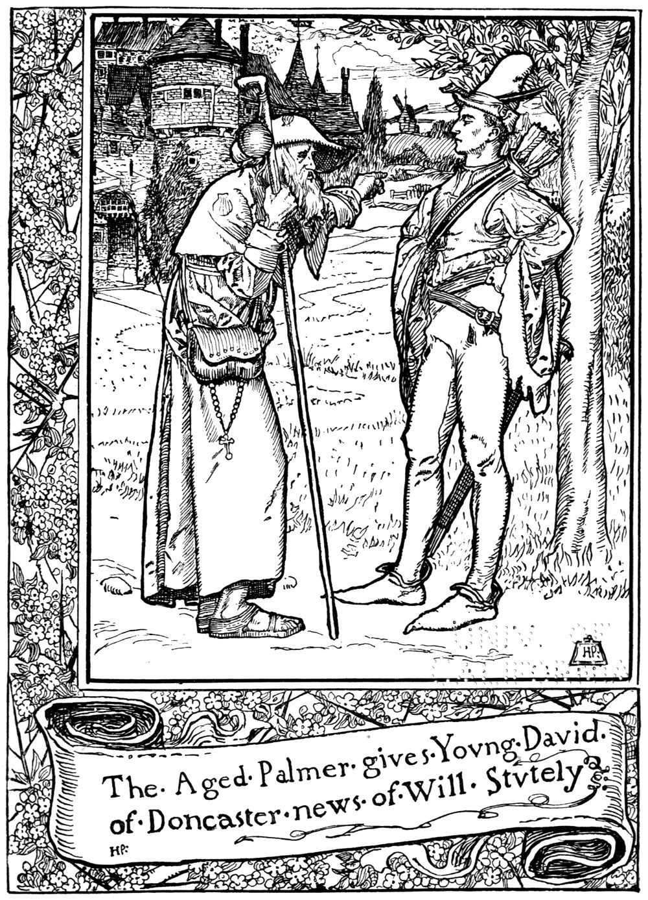
"Shame on you, young man," cried the Palmer, "for talking like that when a good, brave man is going to be hanged for nothing more than defending his own life!" And he struck his staff on the ground in anger. "Alas, I say, that such a thing should happen! This very day, toward evening, when the sun is low, he's going to be hanged a quarter of a mile from the great town gate of Nottingham, where three roads meet, because the Sheriff swears he'll die there as a warning to all the outlaws in Nottinghamshire. But I say again, Alas! Because even though Robin Hood and his band may be outlaws, he only takes from the rich and the powerful and the dishonest. And there isn't a poor widow or a farmer with a houseful of children anywhere near Sherwood who doesn't have enough barley flour all year long, thanks to him. It breaks my heart to see a man as brave as this Stutely die. I was a good Saxon yeoman myself in my day, before I became a palmer, and I know a strong hand when I see one, a hand that strikes hard at a cruel Norman lord or a proud abbot with fat moneybags. If only good Stutely's master knew what dangers his man was surrounded by, maybe he would send help to rescue him from the hands of his enemies."
"Yes, that's true," cried the young man. "If Robin and his men are anywhere near here, I'm sure they'll do their best to get him out of danger. But goodbye, good old man, and believe me: if Will Stutely dies, he'll be well avenged."
Then he turned and strode quickly away. But the Palmer stared after him, muttering, "I'm sure that young fellow is no farmhand who's come to watch a good man die. Well, well, maybe Robin Hood isn't so far away, and there'll be bold doings today after all." And so he went on his way, muttering to himself.
When David of Doncaster told Robin Hood what the Palmer had said, Robin called the band around him and spoke to them like this:
"Now let's go straight into Nottingham Town and mix in with the people there. But keep each other in sight, and press as close to the prisoner and his guards as you can when they come outside the walls. Don't strike anyone unless you have to, because I want to avoid bloodshed if I can. But if you do strike, strike hard, and make sure there's no need to strike twice. Then stay all together until we're back in Sherwood, and let no man leave his comrades."
The sun was low in the western sky when a bugle call sounded from the castle wall. At once all Nottingham Town was bustling, and crowds filled the streets, because everybody knew that the famous Will Stutely was to be hanged that day. Before long the castle gates swung wide, and a great company of armed soldiers came out with a noise and a clatter, with the Sheriff riding at their head, dressed in shining chain mail. In the middle of all the guards, in a cart, with a rope around his neck, rode Will Stutely. His face was as pale as the moon in broad daylight, from his wound and the blood he had lost, and his fair hair was stuck in clumps on his forehead, where the blood had dried. When he came out of the castle he looked up and he looked down, but though he saw some faces that showed pity and some that looked friendly, he didn't see a single one he knew. Then his heart sank inside him like a lump of lead. But all the same he spoke up boldly.
"Put a sword in my hand, Sir Sheriff," he said, "and wounded as I am, I'll fight you and all your men until my life and strength are gone."
"No, you worthless rascal," said the Sheriff, turning his head and looking very grimly at Will Stutely. "You'll have no sword. You'll die a shameful death, the way a wicked thief like you deserves to."
"Then just untie my hands, and I'll fight you and your men with no weapon at all, only my bare fists. I don't ask for any weapon. Only don't let me be shamefully hanged today."
Then the Sheriff laughed out loud. "Well, well," he said, "is your proud courage failing you? Make your last confession, you wicked rascal, because I mean for you to hang today, and right where three roads meet, so that everybody will see you hanging there for the crows and the jackdaws to peck at."
"Oh, you cowardly heart!" cried Will Stutely, grinding his teeth at the Sheriff. "You cowardly lout! If my good master ever meets you, you'll pay dearly for this day's work! He scorns you, and so does every brave heart. Don't you know that you and your name are a joke to every brave yeoman? A wretched coward like you will never be able to beat bold Robin Hood."
"Ha!" cried the Sheriff in a rage. "Is that so? Am I a joke to your master, as you call him? Then I'll make a joke of you, and a sorry joke it will be, because after you're hanged I'll have you cut into quarters, limb from limb." Then he spurred his horse forward and said nothing more to Stutely.
At last they came to the great town gate, and through it Stutely could see the lovely country beyond, with its hills and valleys all dressed in green, and far away the dusky line where Sherwood began. Then, as he saw the slanting sunlight lying on the fields and the plowed land, shining red here and there on cottage and farmhouse; and as he heard the sweet birds singing their evening songs, and the sheep bleating on the hillside; and as he watched the swallows flying in the bright air, his heart grew so full that everything blurred before his eyes through salty tears. He bowed his head so that people wouldn't think him weak when they saw the tears in his eyes. And he kept his head bowed until they had passed through the gate and were outside the town walls. But when he looked up again, he felt his heart leap inside him and then stand still for pure joy, because he saw the face of one of his own dear comrades of merry Sherwood. Then, glancing quickly around, he saw familiar faces on every side of him, crowding close against the soldiers who were guarding him. All of a sudden the blood rushed to his cheeks, because for a moment he saw his own good master in the crowd, and when he saw him he knew that Robin Hood and his whole band were there. But between him and them was a line of armed soldiers.
"Now, stand back!" the Sheriff shouted in a mighty voice, because the crowd was pressing in on every side. "What do you mean by it, you rascals, shoving at us like this? Stand back, I tell you!"
Then came a bustle and a noise, and someone was struggling to push in between the soldiers to reach the cart, and Stutely saw that it was Little John who was making all that stir.
"Now you stand back!" cried one of the soldiers, whom Little John was shoving with his elbows.
"You stand back yourself," said Little John, and right away he gave the man such a punch on the side of the head that it dropped him the way a butcher drops an ox. Then he leaped up onto the cart where Stutely sat.
"Please say goodbye to your friends before you die, Will," he said, "or maybe I'll die with you, if you have to die, because I could never have better company." Then with one stroke he cut the ropes that tied Stutely's arms and legs, and Stutely jumped straight down from the cart.
"Now, as I live," cried the Sheriff, "I know that rascal very well, and he's a desperate rebel! Grab him, all of you, I command you, and don't let him go!"
And with that he spurred his horse at Little John, and rising up in his stirrups he struck with all his might. But Little John ducked quickly under the horse's belly, and the blow whistled harmlessly over his head.
"No, good Sir Sheriff," he cried, jumping up again when the blow had passed, "I'll just have to borrow your most worshipful sword." And with that he neatly twitched the sword right out of the Sheriff's hand. "Here, Stutely!" he cried. "The Sheriff has lent you his sword! Back to back with me, man, and defend yourself, because help is close by!"
"Down with them!" bellowed the Sheriff, in a voice like an angry bull, and he spurred his horse at the two of them, who were now standing back to back. In his rage he forgot that he had no weapon left to defend himself with.
"Stand back, Sheriff!" cried Little John. And even as he spoke, a bugle horn rang out shrilly, and a yard-long arrow whistled within an inch of the Sheriff's head. Then the crowd swayed this way and that, and there were curses, cries, and groans, and the clashing of steel, and swords flashing in the setting sun, and twenty arrows whistling through the air. Some people cried, "Help! Help!" and some cried, "A rescue! A rescue!"
"Treason!" shouted the Sheriff in a loud voice. "Fall back! Fall back! Or we're all dead men!" And with that he backed his horse out through the thickest part of the crowd.
Now, Robin Hood and his band could have killed half the Sheriff's men if they had wanted to. But they let them push their way out of the crowd and get away, and only sent a flight of arrows after them to hurry them along.
"Oh, wait!" Will Stutely shouted after the Sheriff. "You'll never catch bold Robin Hood if you won't stand and meet him face to face!" But the Sheriff, bent low along his horse's back, didn't answer. He only spurred all the faster.
Then Will Stutely turned to Little John and looked him in the face until the tears ran down from his eyes and he wept out loud. And kissing his friend's cheeks, he said, "Oh, Little John! My own true friend, the one I love better than any man or woman in all the rest of the world! I never thought I'd see your face today, or meet you again this side of Paradise." Little John couldn't say a word in answer, but wept too.
Then Robin Hood gathered his band together in a tight group, with Will Stutely in the middle, and so they moved slowly off toward Sherwood and were gone, the way a storm cloud moves away from a place where a tempest has swept over the land. But they left ten of the Sheriff's men lying wounded on the ground, some badly and some not so badly, and yet no one knew who had struck them down.
And so the Sheriff of Nottingham tried three times to capture Robin Hood, and failed every time. And the last time he was frightened, because he felt how close he had come to losing his life. So he said, "These men aren't afraid of God or man, of the King or the King's officers. I would rather lose my job than my life, so I won't bother them any more." So he stayed shut up in his castle for many a day and didn't dare show his face outside his own household. And all that time he was gloomy and wouldn't speak to anyone, because he was ashamed of what had happened that day.
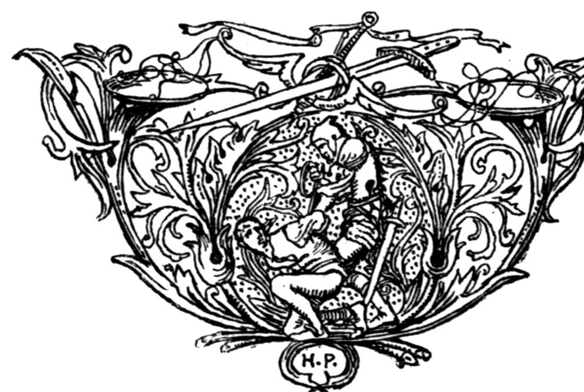
Part Two: Robin the Butcher, and Little John at the Sheriff's
Chapter 4: Robin Hood Turns Butcher
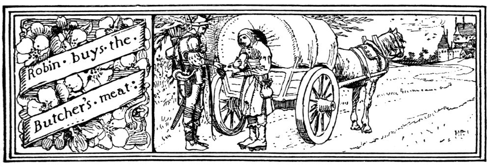
In which you will hear how Robin Hood turned butcher, and how he got his revenge on the Sheriff; and also about the famous adventures that happened to Little John at the Nottingham archery match, and how he went to work for the Sheriff.
Now after all these things had happened, and Robin Hood had learned how the Sheriff had tried three times to take him prisoner, he said to himself, "If I get the chance, I'll make his worship the Sheriff pay very well for what he's done to me. Maybe someday I can bring him into Sherwood Forest and give him a really merry feast with us." For whenever Robin Hood caught a baron or a squire, or a fat abbot or bishop, he would bring him to the greenwood tree and feast him before he lightened his purse.
But in the meantime Robin Hood and his band lived quietly in Sherwood Forest, without showing their faces outside it, because Robin knew it would not be wise for him to be seen anywhere near Nottingham while the people in power were so angry with him. But even though they didn't go out, they lived a merry life in the woods. They spent their days shooting at garlands hung on a willow stick at the far end of the glade, and the leafy aisles of the forest rang with jokes and laughter. That was because whoever missed the garland got a good hard smack, and if Little John was the one who gave it, the unlucky yeoman always toppled over. Then they had wrestling bouts and fights with sticks, so that every day they grew in skill and strength.
They lived like this for almost a year, and in that time Robin Hood often turned over in his mind all kinds of ways to get even with the Sheriff. At last he began to grow restless at being shut up so long. So one day he picked up his stout stick and set out to look for adventure, strolling cheerfully along until he came to the edge of Sherwood. There, as he wandered along the sunny road, he met a strong young butcher driving a fine mare and riding in a sturdy new cart, all hung about with meat. The Butcher was whistling merrily as he jogged along, because he was going to market, and the day was fresh and sweet and made his heart light inside him.
"Good morning to you, jolly fellow," said Robin. "You look happy this merry morning."
"I certainly am," said the jolly Butcher, "and why shouldn't I be? Aren't I healthy in lungs and limbs? Haven't I got the prettiest girl in all Nottinghamshire? And best of all, aren't I going to marry her next Thursday in sweet Locksley Town?"
"Ha!" said Robin. "Do you come from Locksley Town? I know that lovely place well, for miles all around. I know every hedgerow and every gentle, pebbly stream, and even all the bright little fishes in them, because that's where I was born and raised. Now, where are you going with your meat, my fine friend?"
"I'm going to the market at Nottingham Town to sell my beef and my mutton," answered the Butcher. "But who are you, coming from Locksley Town?"
"I'm a yeoman, and people call me Robin Hood."
"Now, by Our Lady's grace," cried the Butcher, "I know your name very well, and many a time I've heard your deeds sung and talked about. But Heaven forbid that you should take anything from me! I'm an honest man, and I've never wronged a man or a girl. So don't trouble me, good master, since I've never troubled you."
"No, Heaven forbid, indeed," said Robin, "that I should take anything from someone like you, jolly fellow! I wouldn't take so much as a farthing from you, because I'm very fond of an honest Saxon face like yours. And I'm even fonder of it when it comes from Locksley Town, and fondest of all when the man it belongs to is going to marry a pretty girl next Thursday. But come, tell me: what price will you sell me all your meat for, and your horse and cart besides?"
"I value the meat, the cart, and the mare at four marks," said the Butcher. "But if I don't sell all my meat, I won't have four marks' worth."
Then Robin Hood pulled the purse from his belt and said, "Here in this purse are six marks. Now, I'd like to be a butcher for a day and sell my meat in Nottingham Town. Will you strike a bargain with me and take six marks for your whole outfit?"
"Now may the blessings of all the saints fall on your honest head!" cried the Butcher joyfully, as he jumped down from his cart and took the purse that Robin held out to him.
"Well," said Robin, laughing out loud, "plenty of people like me and wish me well, but not many call me honest. Now off you go, back to your sweetheart, and give her a sweet kiss from me." And with that he put on the Butcher's apron, climbed into the cart, took the reins in his hand, and drove off through the forest to Nottingham Town.
When he came to Nottingham, he went into the part of the market where the butchers stood, and set up his stand in the best spot he could find. Next he opened his stall and spread his meat out on the bench. Then, taking his cleaver and his knife-sharpening steel and clattering them together, he sang out in a merry voice:
"Now come, you lasses, and come, you wives,
And buy your meat from me;
For three pennies' worth of meat I sell
For the price of one penny.
"I've lamb that has fed on nothing at all
But dainty daisies, spotted and pied,
And the violet sweet, and the daffodil
That grow by the fair streamside.
"And beef I have from the heathery hills,
And mutton from valleys green,
And veal as white as a maiden's brow,
The sweetest milk-fed calf you've seen.
"Then come, you lasses, and come, you wives,
Come, buy your meat from me;
For three pennies' worth of meat I sell
For the price of one penny."
He sang this cheerfully, while everyone standing nearby listened in amazement. Then, when he had finished, he clattered his steel and his cleaver even louder, and shouted heartily, "Now, who'll buy? Who'll buy? I've got four fixed prices. To a fat friar or priest I sell three pennies' worth of meat for sixpence, because I don't want their business. Stout aldermen I charge threepence, because it doesn't matter to me whether they buy or not. To good plump housewives I sell three pennies' worth of meat for one penny, because I like their business very well. But to the pretty girl who has a liking for a fine, handsome butcher, I charge nothing but one sweet kiss, because I like her business best of all."
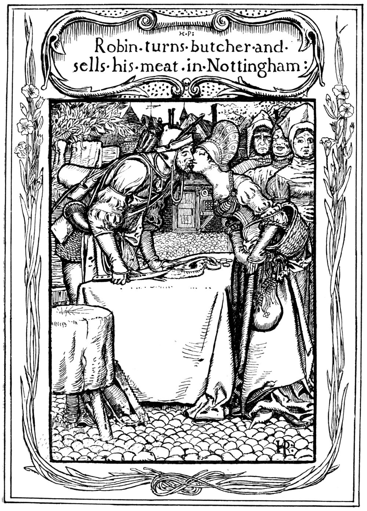
Then everyone began to stare and wonder and crowd around, laughing, because nobody had ever heard of selling like that in all Nottingham Town. But when they came to buy, they found it was just as he had said. He gave a housewife or a lady as much meat for one penny as she could buy anywhere else for three. When a widow or a poor woman came to him, he gave her meat for nothing. And when a merry girl came and gave him a kiss, he didn't charge her a single penny for her meat. Plenty of girls like that came to his stall, because his eyes were as blue as the skies of June, and he laughed merrily and gave every one of them full measure. So he sold his meat so fast that no butcher standing near him could sell anything at all.
Then the other butchers began to talk among themselves. Some said, "This must be some thief who has stolen the cart and the horse and the meat." But others said, "No. When did you ever see a thief who gave away his goods so freely and cheerfully? This must be some young spendthrift who has sold his father's land, and wants to live merrily while the money lasts." And since there were more of these last ones, the others came around to their way of thinking, one by one.
Then some of the butchers came over to get to know him. "Come, brother," said one who was the head of them all, "we're all in the same trade, so will you come and dine with us? Today the Sheriff has invited the whole Butchers' Guild to a feast with him at the Guild Hall. There'll be plenty of good food and lots to drink, and you like that, or I'm very much mistaken."
"Now curse the man," said jolly Robin, "who would say no to a butcher! And what's more, I'll come and dine with you all, my sweet lads, and as fast as my legs can carry me." So, having sold all his meat, he closed up his stall and went with them to the great Guild Hall.
The Sheriff had already arrived there in all his grandeur, and with him were many butchers. When Robin and the men with him came in, all laughing at some merry joke he had been telling them, the people near the Sheriff whispered to him, "That fellow over there is a wild one. He's sold more meat for one penny today than we could sell for three, and to any merry girl who gave him a kiss he gave meat for nothing." And others said, "He's some young spendthrift who has sold his land for silver and gold, and means to spend it all as merrily as he can."
Then the Sheriff called Robin over to him, not recognizing him in his butcher's clothes, and made him sit close beside him on his right hand. For he was very fond of a rich young spendthrift, especially when he thought he might be able to empty that spendthrift's pockets into his own most worshipful purse. So he made a great fuss over Robin, and laughed and talked with him more than with any of the others.
At last the dinner was ready to be served, and the Sheriff asked Robin to say grace. So Robin stood up and said, "Now Heaven bless us all, and the good meat too, and the good sack in this house" (sack was a strong, sweet wine), "and may all butchers be, and always stay, as honest as I am."
At this everyone laughed, and the Sheriff laughed loudest of all, because he said to himself, "This really must be some young spendthrift, and maybe I can empty his purse of some of the money the fool is throwing around so freely." Then he spoke out loud to Robin and said, "You're a jolly young fellow, and I like you enormously." And he clapped Robin on the shoulder.
Then Robin laughed loudly too. "Yes," he said, "I know you like a jolly fellow. Didn't you have jolly Robin Hood at your shooting match, and didn't you gladly give him a bright golden arrow to keep?"
At this the Sheriff looked very serious, and so did the whole Butchers' Guild, so that nobody laughed except Robin, though some of them winked slyly at each other.
"Come, pour us some sack!" cried Robin. "Let's always be merry while we can. For a man is only dust, and he has only a hand's breadth of time to live here before the worms get him, as our good friend old Gaffer Swanthold says. So let life be merry while it lasts, I say. No, don't look so down in the mouth, Sir Sheriff. Who knows, you may catch Robin Hood yet, if you drink less good sack and Malmsey (a rich, sweet wine that came from far-off Greece), and get rid of the fat around your belly and the dust out of your brain. Cheer up, man!"
Then the Sheriff laughed again, but not as if he liked the joke, while the butchers said to one another, "Heaven help us, we've never seen such a wild, rollicking fellow. Maybe, though, he'll make the Sheriff angry."
"Come on, brothers," cried Robin, "be merry! No, never count your farthings. Honestly, I'll pay this bill myself, even if it costs two hundred pounds. So let no man pull a long face or poke his finger into his purse, because I swear that neither butcher nor Sheriff will pay one penny for this feast."
"Now you really are a merry soul," said the Sheriff, "and I'm sure you must have many a head of horned cattle and many an acre of land, since you spend your money so freely."
"Oh, I certainly have," said Robin, laughing loudly again. "My brothers and I have five hundred horned beasts and more, and we haven't been able to sell a single one of them, or I might not have turned butcher. As for my land, I've never asked my steward how many acres I have."
At this the Sheriff's eyes twinkled, and he chuckled to himself. "Well, my good young man," he said, "if you can't sell your cattle, maybe I can find a man who will take them off your hands. Perhaps that man might even be me, because I'm fond of a merry young fellow and would like to help someone like that along the path of life. Now, how much do you want for your horned cattle?"
"Well," said Robin, "they're worth at least five hundred pounds."
"No," the Sheriff answered slowly, as if he were thinking it over to himself. "I'm very fond of you, and I'd love to help you along, but five hundred pounds in money is a good round sum. Besides, I don't have it with me. Still, I'll give you three hundred pounds for the lot, and in good hard silver and gold."
"Why, you old miser!" said Robin. "You know perfectly well that that many horned cattle are worth seven hundred pounds and more, and even that is too little for them. And yet you, with your gray hairs and one foot in the grave, would take advantage of a wild young fellow's foolishness."
At this the Sheriff gave Robin a grim look. "No," said Robin, "don't look at me as if you had sour beer in your mouth, man. I'll take your offer, because my brothers and I need the money. We lead a merry life, and nobody leads a merry life for a farthing, so I'll strike the bargain with you. But make sure you bring a good three hundred pounds with you, because I don't trust a man who drives such a hard bargain."
"I'll bring the money," said the Sheriff. "But what's your name, my good young man?"
"People call me Robert of Locksley," said bold Robin.
"Then, good Robert of Locksley," said the Sheriff, "I'll come today and look at your horned beasts. But first my clerk will draw up a paper that binds you to the sale, because you won't get my money unless I get your beasts in return."
Then Robin Hood laughed again. "Agreed," he said, slapping his palm against the Sheriff's hand. "My brothers will certainly be thankful to you for your money."
So the bargain was struck. But many of the butchers talked among themselves about the Sheriff, saying it was a mean, low trick to cheat a poor spendthrift young man that way.
The afternoon had come when the Sheriff mounted his horse and joined Robin Hood, who was standing outside the gateway of the paved courtyard waiting for him, for he had sold his horse and cart to a trader for two marks. Then they set off on their way, the Sheriff riding his horse and Robin running beside him. So they left Nottingham Town and traveled along the dusty highway, laughing and joking together as if they had been old friends. But all the while the Sheriff was saying to himself, "That joke you made to me about Robin Hood will cost you dear, my good fellow: four hundred pounds, you fool." For he reckoned he would make at least that much out of his bargain.
So they traveled on until they came inside the edge of Sherwood Forest. Before long the Sheriff looked up and down, and to the right and to the left of him, and then he grew quiet and stopped laughing. "Now," he said, "may Heaven and its saints protect us today from a rogue people call Robin Hood."
Then Robin laughed out loud. "No," he said, "you can set your mind at rest, because I know Robin Hood very well, and I know you're in no more danger from him today than you are from me."
At this the Sheriff gave Robin a sideways look, and said to himself, "I don't like it that you seem to know this bold outlaw so well, and I wish I were safely out of Sherwood Forest."
But still they traveled deeper into the forest shadows, and the deeper they went, the quieter the Sheriff grew. At last they came to a place where the road took a sudden bend, and in front of them a herd of brown deer went tripping across the path. Then Robin Hood came close to the Sheriff, pointed his finger, and said, "These are my horned beasts, good Master Sheriff. How do you like them? Aren't they fat and fine to look at?"
At this the Sheriff quickly pulled up his horse. "Now, fellow," he said, "I wish I were well out of this forest, because I don't like your company. You go your own way, good friend, and just let me go mine."
But Robin only laughed and caught hold of the Sheriff's bridle. "No," he cried, "stay a while, because I'd like you to meet my brothers, who own these fine horned beasts with me." And with that he put his bugle to his mouth and blew three merry notes, and before long a hundred good strong yeomen came leaping up the path, with Little John at their head.
"What do you want, good master?" said Little John.
"Why," answered Robin, "don't you see that I've brought some fine company to feast with us today? For shame! Don't you see our good and worshipful master, the Sheriff of Nottingham? Take his bridle, Little John, because he has honored us today by coming to feast with us."
Then they all took off their hats humbly, without smiling or seeming to joke at all, while Little John took the bridle and led the horse still deeper into the forest. They all marched in order, with Robin Hood walking beside the Sheriff, hat in hand.
All this time the Sheriff didn't say a word, but only looked around him like someone suddenly woken from sleep. But when he found himself going into the very depths of Sherwood, his heart sank inside him, because he thought, "My three hundred pounds will certainly be taken from me, even if they don't take my life too, because I've plotted against their lives more than once." But everyone seemed humble and meek, and not a word was said about danger, either to his life or to his money.
So at last they came to the part of Sherwood Forest where a noble oak spread its branches wide, and under it was a seat made all of moss. Robin sat down on it and put the Sheriff on his right hand. "Now get busy, my merry men, all of you," he said, "and bring out the best we have, both meat and wine, because his worship the Sheriff feasted me in the Nottingham Guild Hall today, and I wouldn't want him to go home empty."
All this time nothing had been said about the Sheriff's money, so before long he began to cheer up. "Because," he said to himself, "maybe Robin Hood has forgotten all about it."
Then, while beyond in the forest bright fires crackled, and the delicious smells of sweetly roasting venison and fat roast chickens filled the glade, and brown meat pies warmed beside the blaze, Robin Hood entertained the Sheriff like a king. First, several pairs of men stepped out to fight with quarterstaffs, and they were so skillful at the game, and struck and blocked so quickly, that the Sheriff, who loved to watch all hearty sports of that kind, forgot where he was and clapped his hands and shouted, "Well struck! Well struck, you fellow with the black beard!" He had no idea that the man he was cheering was the Tinker who had tried to serve his warrant on Robin Hood.
Then several yeomen came forward and spread cloths on the green grass and laid out a feast fit for a king, while others opened barrels of sack and Malmsey and good strong ale, and set them out in jugs on the cloth, with drinking horns all around them. Then they all sat down and feasted and drank merrily together until the sun was low and the half-moon glimmered with a pale light between the leaves of the trees overhead.
Then the Sheriff stood up and said, "I thank you all, good yeomen, for the merry entertainment you have given me today. You have treated me very courteously, and shown that you have great respect for our glorious King and for his deputy in brave Nottinghamshire. But the shadows are growing long, and I must be off before dark, or I may get lost in the forest."
Then Robin Hood and all his merry men stood up too, and Robin said to the Sheriff, "If you must go, your worship, then go you must. But you've forgotten one thing."
"No, I haven't forgotten anything," said the Sheriff. But all the same his heart sank inside him.
"But I say you've forgotten something," said Robin. "We keep a merry inn here in the greenwood, but whoever becomes our guest has to pay his bill."
Then the Sheriff laughed, but it was a hollow laugh. "Well, jolly boys," he said, "we've had a merry time together today, and even if you hadn't asked me, I would have given you twenty pounds for the lovely entertainment I've had."
"No," said Robin seriously, "it wouldn't be right for us to treat Your Worship so cheaply. Upon my word, Sir Sheriff, I'd be ashamed to show my face if I didn't charge the King's deputy three hundred pounds. Isn't that so, my merry men, all of you?"
Then "Yes!" they all cried, in a loud voice.
"Three hundred devils!" roared the Sheriff. "Do you think your beggarly feast was worth three pounds, let alone three hundred?"
"No," said Robin gravely, "don't speak so bluntly, Your Worship. I'm very fond of you for the lovely feast you gave me today in merry Nottingham Town. But there are some people here who aren't quite so fond of you. If you look down the cloth, you'll see Will Stutely, and you're not in his good books. And there are two other strong fellows here you don't know, who were wounded in a brawl near Nottingham Town some time ago (you know when). One of them was badly hurt in one arm, though he's got the use of it back now. Good Sheriff, take my advice: pay your bill without any more fuss, or things may go badly for you."
As he spoke, the Sheriff's red cheeks turned pale, and he said nothing more, but looked at the ground and chewed his lower lip. Then slowly he pulled out his fat purse and threw it down on the cloth in front of him.
"Now take the purse, Little John," said Robin Hood, "and make sure the bill is right. We wouldn't doubt our Sheriff, but he might not like it if he found out later he hadn't paid in full."
Then Little John counted the money and found that the bag held three hundred pounds in silver and gold. But to the Sheriff it seemed as if every clink of the bright money was a drop of blood from his own veins. And when he saw it all counted out in a heap of silver and gold, filling a wooden platter, he turned away and climbed onto his horse without a word.
"We've never had such a worshipful guest before!" said Robin. "And since it's getting late, I'll send one of my young men to guide you out of the depths of the forest."
"No, Heaven forbid!" cried the Sheriff quickly. "I can find my own way, my good man, without any help."
"Then I'll put you on the right track myself," said Robin, and taking the Sheriff's horse by the bridle, he led him onto the main forest path. Then, before he let him go, he said, "Now, goodbye, good Sheriff. And the next time you think about robbing some poor young spendthrift, remember your feast in Sherwood Forest. 'Never buy a horse, good friend, without looking in its mouth first,' as our good old Gaffer Swanthold says. And so, once again, goodbye." Then he gave the horse a slap on the back, and off went horse and Sheriff through the forest glades.
Then the Sheriff bitterly regretted the day he had first meddled with Robin Hood, because everybody laughed at him, and people all over the country sang ballads about how the Sheriff went out to shear a sheep and came home shorn himself, right down to the skin. For that is how people sometimes outsmart themselves through greed and trickery.
Chapter 5: Little John Goes to Nottingham Fair
Spring had come and gone since the Sheriff's feast in Sherwood, and summer too, and now the mellow month of October had arrived. The air was cool and fresh all around; the harvests had been gathered in, the young birds were full-feathered, the hops had been picked, and the apples were ripe. Time had smoothed things over so well that people no longer talked about the horned cattle the Sheriff had wanted to buy. But the Sheriff himself was still sore about the whole business, and he couldn't stand to hear Robin Hood's name spoken in front of him.
October had brought around the time for the great Fair that was held every five years at Nottingham Town, and people came to it from near and far, all over the country. At these Fairs archery was always the main sport of the day, because the Nottinghamshire yeomen were the best hands with the longbow in all merry England. But this year the Sheriff hesitated a long time before he announced the Fair, because he was afraid that Robin Hood and his band might come to it. At first he had more than half a mind not to announce it at all. But on second thought he realized that people would laugh at him and say to one another that he was afraid of Robin Hood, so he put that idea aside. At last he made up his mind to offer a prize that the outlaws wouldn't care to shoot for. At such times it had always been the custom to offer ten marks or a huge cask of ale, so this year he announced that the prize for the best archer would be two fat steers.
When Robin Hood heard what had been announced, he was annoyed. "Curse this Sheriff," he said, "for offering a prize that nobody but farmhands will bother to shoot for! I'd have loved nothing better than another round at merry Nottingham Town. But if I won this prize, it wouldn't do me a bit of good or give me a bit of pleasure."
Then Little John spoke up. "No, but listen, good master," he said. "Just today Will Stutely, young David of Doncaster, and I were at the Sign of the Blue Boar, and there we heard all the news about this merry Fair. We heard, too, that the Sheriff has offered this prize just so that we of Sherwood won't care to come. So, good master, if you're willing, I'd like to go and try to win even this poor prize among the strong yeomen who'll be shooting at Nottingham Town."
"No, Little John," said Robin. "You're a fine, strong fellow, but you haven't got the cleverness that good Stutely has, and I wouldn't let any harm come to you for all of Nottinghamshire. Still, if you're set on going, wear some disguise, in case there are people there who might know you."
"All right, good master," said Little John. "But all the disguise I want is a good suit of scarlet instead of this Lincoln green. I'll pull the hood of my jacket up around my head, so that it hides my brown hair and beard, and then, I trust, nobody will know me."
"It's very much against my wishes," said Robin Hood. "All the same, if you really want to, off you go. But behave yourself sensibly, Little John, because you're my own right-hand man, and I couldn't stand it if anything happened to you."
So Little John dressed himself all in scarlet and set off for the Fair at Nottingham Town.
Those Fair days at Nottingham were merry indeed. The green outside the great town gate was dotted with booths standing in rows, and with tents of many-colored canvas, hung all about with streamers and garlands of flowers, and people came from all over the countryside, gentlefolk and common folk alike. In some booths there was dancing to merry music; in others ale and beer flowed; and in others again sweet cakes and barley sugar were for sale. There was fun going on outside the booths too. Here a minstrel sang ballads of the olden days, with another playing along on the harp; there wrestlers struggled with one another inside the sawdust ring. But most of all, the people crowded around a raised platform where strong fellows were fighting with quarterstaffs.
So Little John came to the Fair. Scarlet were his stockings and his jacket, and scarlet was his hooded cap, with a scarlet feather stuck in the side of it. Over his shoulders hung a strong bow of yew, and across his back hung a quiver of good round arrows. Many people turned to stare after such a big, tall fellow, because his shoulders were a hand's width broader than anyone else's there, and he stood a head taller than all the other men. The lasses looked at him sideways, too, thinking they had never seen a finer, sturdier young man.
First of all he went to the booth where strong ale was sold. He climbed up on a bench and called out to everybody nearby to come and drink with him. "Hey there, sweet lads!" he shouted. "Who'll drink ale with a sturdy yeoman? Come on, all of you! Come on, everybody! Let's be merry, for the day is sweet and the ale is tingling. Come over here, good yeoman, and you, and you; not one of you will pay a farthing. No, come this way, you hearty beggar, and you, jolly tinker, because everyone's going to be merry with me."
That's how he shouted, and everybody crowded around, laughing, while the brown ale flowed. They called Little John a grand fellow, and every one of them swore that he loved him like his own brother. After all, when someone treats you to a good time and you don't have to pay a penny, you love the man who gives it to you.
Then he strolled over to the platform where they were fighting with cudgels, for he loved a round with the quarterstaff as much as he loved food and drink. And there an adventure happened to him that was sung about in ballads all through the middle of England for many a day afterward.
There was one fellow there who was cracking the head of every man who threw his cap into the ring. This was Eric of Lincoln, a man of great fame, whose name had been sung in ballads all over the countryside. When Little John reached the stand, he found nobody fighting; there was only bold Eric, walking up and down the platform, swinging his staff and shouting at the top of his lungs. "Now, who'll come up and strike a blow for the lass he loves best, against a good Lincolnshire yeoman? What's the matter, lads? Step up! Step up! Or else the lasses' eyes aren't very bright around here, or the blood of the Nottingham lads is sluggish and cold. Lincoln against Nottingham, I say! Because not one man has set foot on these boards today that we in Lincoln would call a cudgel fighter."
At that, one man would nudge another with his elbow and say, "You go, Ned!" or "You go, Thomas!" But no lad wanted a cracked head for nothing.
Before long Eric noticed Little John standing among the others, a head and shoulders above them all, and he called out to him loudly, "Hey, you long-legged fellow in scarlet! You've got broad shoulders and a thick head. Isn't your lass pretty enough for you to pick up a cudgel for her sake? Honestly, I think Nottingham men must be nothing but bone and muscle, because they haven't got any heart or courage! Now, you great clumsy oaf, won't you twirl a staff for Nottingham?"
"Yes," said Little John, "if only I had my own good staff here, I'd be hugely pleased to crack your rascal's skull, you cheeky braggart! I'd say it would do you a world of good to have your rooster's comb cut down to size!" He spoke slowly at first, for he was slow to get going. But his anger built up speed like a great stone rolling down a hill, so that by the end he was full of rage.
Then Eric of Lincoln laughed out loud. "Big words from somebody who's afraid to meet me fair and square, man to man," he said. "You're pretty cheeky yourself, and if you set foot on these boards, I'll make that cheeky tongue of yours rattle around in your teeth!"
"Now," said Little John, "isn't there a single man here who'll lend me a good strong staff, so I can test what that fellow's made of?" At that, ten men held out their staffs to him, and he took the strongest and heaviest of them all. Then, looking that cudgel up and down, he said, "Well, all I've got in my hand is a splinter of wood, a barley straw, you might say. But I suppose it'll have to do, so here goes." With that he tossed the cudgel up onto the stand, leaped lightly up after it, and snatched it up in his hand again.
Then each man stood in his place, sizing the other up with fierce looks, until the man in charge of the sport shouted, "Play!" At that they stepped forward, each gripping his staff tightly in the middle. And then the people standing around saw the finest bout of quarterstaff that Nottingham Town had ever seen. At first Eric of Lincoln thought he would win an easy advantage, so he came forward as if to say, "Watch, good people, how fast I carve up this young rooster for you." But he soon found that it was not such a fast job after all. He struck very cleverly, and with great skill at fencing, but he had met his match in Little John. Once, twice, three times he struck, and three times Little John turned the blows aside, to the left and to the right. Then, quick as a wink, with a neat little backhanded stroke, Little John rapped Eric under his guard so smartly that it set his head ringing. Eric stepped back to gather his wits, while a great shout went up, for everybody was glad that Nottingham had cracked Lincoln's head. And that ended the first round of the match.
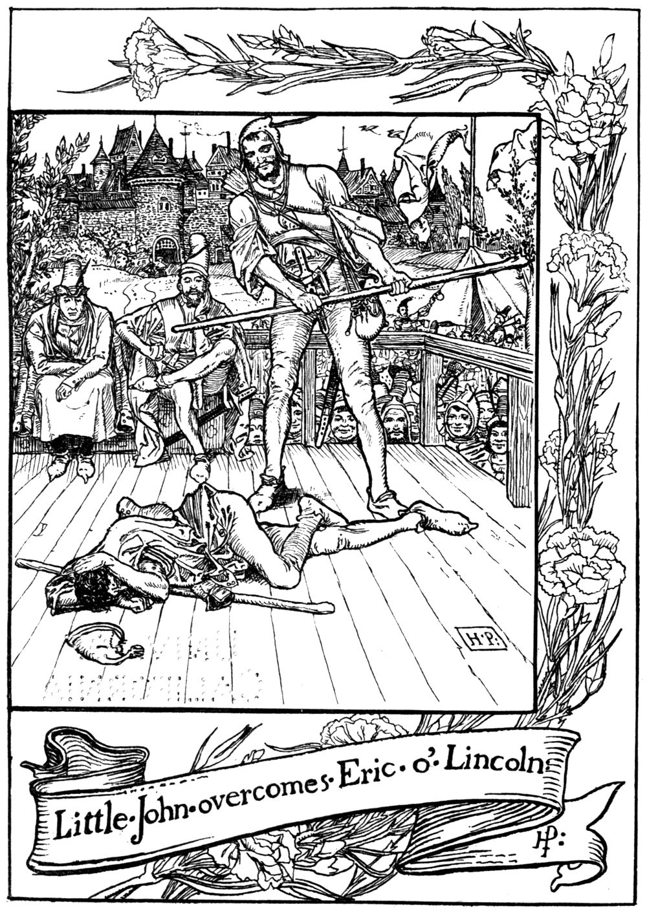
Soon the man in charge of the sport shouted "Play!" again, and they came together once more. But now Eric fought carefully, for he had found that his man was made of very good stuff, and besides, he didn't have any fond memories of the blow he had taken. So in this round neither Little John nor the Lincoln man landed a single stroke inside the other's guard. After a while they parted again, and that made the second round.
Then for the third time they came together. At first Eric tried to be careful, as he had been before. But he grew furious at finding himself blocked at every turn, and he lost his head and began to rain down blows so fiercely and so fast that they rattled like hail on a shed roof. But for all that, he never got inside Little John's guard. Then at last Little John saw his chance, and he grabbed it very cleverly. Once more, with a quick stroke, he rapped Eric on the side of the head. And before Eric could recover, Little John slid his right hand down to meet his left on the staff, and with a great swinging blow he hit the other man so hard on top of the head that down he went, as if he would never move again.
Then the people shouted so loudly that folk came running from all over to see what all the fuss was about, while Little John jumped down from the stand and gave the staff back to the man who had lent it to him. And that was the end of the famous bout between Little John and Eric of Lincoln, the man of great fame.
But now the time had come for the archers to take their places, so the people began to stream over to the targets where the shooting was to be. Near the target, in a good spot, the Sheriff sat on a raised platform, with many gentlefolk around him. When the archers had taken their places, the herald stepped forward and announced the rules of the contest: each man was to shoot three arrows, and the prize of two fat steers would go to whoever shot the best. Twenty fine archers had gathered there, and among them were some of the sharpest hands with the longbow in Lincoln and Nottinghamshire; and Little John stood taller than all the rest. "Who's that stranger dressed all in scarlet?" some people asked, and others answered, "That's the man who just now cracked Eric of Lincoln's head so soundly." The people went on talking like this among themselves, until at last the talk reached even the Sheriff's ears.
And now each man stepped up and shot in turn. They all shot well, but Little John was the best of them all, for three times he hit the white center of the target, and once he missed the exact middle by no more than the width of a grain of barley. "Hurray for the tall archer!" shouted the crowd, and some of them shouted, "Hurray for Reynold Greenleaf!" because that was the name Little John had given himself that day.
Then the Sheriff came down from his raised seat and walked over to where the archers stood, and everyone who saw him coming took off his cap. He looked hard at Little John but did not recognize him. Still, after a while he said, "Well, my good fellow, I think there's something about your face that I've seen somewhere before."
"Maybe so," said Little John, "because I've often seen Your Worship." And as he spoke, he looked steadily into the Sheriff's eyes, so that the Sheriff did not suspect who he was.
"You're a fine, brave fellow, my good friend," said the Sheriff, "and I hear you've stood up well for Nottinghamshire's skill against Lincoln's today. What might your name be, my good man?"
"People call me Reynold Greenleaf, Your Worship," said Little John. And the old ballad that tells this story adds, "And so, in truth, he was a green leaf, but what kind of tree he came from, the Sheriff never knew."
"Now, Reynold Greenleaf," said the Sheriff, "you're the finest hand with a longbow that I've ever laid eyes on, next to that lying rascal Robin Hood, and Heaven keep me safe from his tricks! Will you come into my service, my good fellow? You'll be very well paid. You'll have three suits of clothes a year, with good food and as much ale as you can drink, and besides all that, I'll pay you forty marks every Michaelmas, the feast at the end of September."
"Then here I stand, a free man, and I'll gladly join your household," said Little John, for he thought he might find some good fun if he went into the Sheriff's service.
"You've won the fat steers fairly," said the Sheriff, "and to them I'll add a barrel of good March beer, I'm so happy to have gotten hold of such a man. For I'd say you shoot as good an arrow as Robin Hood himself."
"Then," said Little John, "since I'm so happy to have gotten into your service, I'll give the fat steers and the brown ale to all these good people, to make them merry with." At that a great shout went up, and many people threw their caps into the air for joy at the gift.
Then some of them built great fires and roasted the steers, and others opened up the barrel of ale, and everybody made merry. And when they had eaten and drunk as much as they could, and when the daylight faded and the great moon rose, all red and round, over the spires and towers of Nottingham Town, they joined hands and danced around the fires to the music of bagpipes and harps. But long before all this merrymaking began, the Sheriff and his new servant, Reynold Greenleaf, were inside the Castle of Nottingham.
Chapter 6: How Little John Lived at the Sheriff's House
So Little John went into the Sheriff's service, and he found the life he led there easy enough, because the Sheriff made him his right-hand man and thought very highly of him. He sat near the Sheriff at meals, and he ran beside the Sheriff's horse when he went hunting. And so, what with a little hunting and a little hawking, and eating rich dishes and drinking good sack, and sleeping late into the morning, he grew as fat as an ox fattened up in its stall. Things floated along easily like this with the tide, until one day, when the Sheriff went hunting, something happened that broke the smooth surface of it all.
That morning the Sheriff and many of his men set out to meet some lords and go hunting with them. He looked all around for his good man, Reynold Greenleaf, but couldn't find him, and he was annoyed, because he wanted to show off Little John's skill to his noble friends. As for Little John, he lay in bed, snoring away at the top of his lungs, until the sun was high in the sky. At last he opened his eyes and looked around, but he made no move to get up. The sun shone brightly in at the window, and the air was sweet with the smell of honeysuckle that hung in sprays all over the wall outside, for the cold winter was over and spring had come again. Little John lay still, thinking how sweet everything was on that fine morning. Just then he heard, faint and far away, the note of a bugle, sounding thin and clear. It was a small sound, but like a little pebble dropped into a glassy fountain, it broke the smooth surface of his thoughts, until his whole soul was stirred up. His spirit seemed to wake from its laziness, and his memory brought back to him all the merry life of the greenwood: how the birds were singing happily there on this bright morning, and how his dear companions and friends were feasting and making merry, or perhaps talking about him in serious voices. For when he first went into the Sheriff's service, he had done it as a joke. But the fire was warm all winter long, and the food was plentiful, and so he had stayed on, putting off his return to Sherwood from one day to the next, until six long months had gone by. But now he thought of his good master, and of Will Stutely, whom he loved better than anyone in the whole world, and of young David of Doncaster, whom he had trained so well in all the sports a man should know. And a great, bitter longing for them all came over his heart, until his eyes filled with tears. Then he said out loud, "Here I am, growing fat like a stall-fed ox, and all my manhood is slipping away from me while I turn into a lazy lump and a dunce. But I'll rouse myself and go back to my own dear friends once more, and I'll never leave them again until the life leaves my lips." And with that he leaped out of bed, for now he hated his own laziness.
When he came downstairs, he saw the Steward, the man in charge of the household, standing near the pantry door. He was a great fat man, with a huge bunch of keys hanging from his belt. Little John said to him, "Hey, Master Steward, I'm a hungry man, because I haven't had a thing to eat all this blessed morning. So give me something to eat."
The Steward gave him a grim look and rattled the keys on his belt, for he hated Little John because the Sheriff favored him. "So, Master Reynold Greenleaf, you're hungry, are you?" he said. "Well, my fine young fellow, if you live long enough, you'll find out that the man who gives his idle head too much sleep goes around with an empty stomach. Because what does the old saying tell us, Master Greenleaf? Doesn't it say, 'The late bird finds poor pickings'?"
"Why, you great bag of lard!" cried Little John. "I'm not asking you for a fool's wise sayings; I'm asking for bread and meat. Who are you to keep me from eating? By Saint Dunstan, you'd better tell me where my breakfast is, if you want to save yourself some broken bones!"
"Your breakfast, Master Hothead, is in the pantry," answered the Steward.
"Then go and get it!" cried Little John, who was getting angry by now.
"Go and get it yourself," said the Steward. "Am I your slave, to fetch and carry for you?"
"I say, you go and bring it to me!"
"I say, you go and get it for yourself!"
"Oh, I will, all right, and quick!" said Little John in a rage. And with that he strode over to the pantry and tried to open the door, but he found it locked, and the Steward laughed and rattled his keys. Then Little John's anger boiled over. He raised his clenched fist and struck the pantry door so hard that he burst out three of its panels, making a hole so big that he could easily stoop down and walk through it.
When the Steward saw what Little John had done, he went wild with rage. As Little John bent down to look inside the pantry, the Steward grabbed him from behind by the back of the neck, pinching him painfully and beating him over the head with his keys until the yeoman's ears rang. At that Little John turned on the Steward and gave him such a punch that the fat man fell to the floor and lay there as if he would never move again. "There," said Little John. "Think hard about that punch, and don't ever keep a good breakfast from a hungry man again."
With that he crawled into the pantry and looked around to see what he could find to satisfy his hunger. He saw a great venison pie and two roasted chickens, and next to them a platter of plover's eggs. There was also a flask of sack and one of canary, a sweet wine from the Canary Islands. It was a lovely sight to a hungry man. He took these down from the shelves, set them out on a side table, and got ready to enjoy himself.
Now the Cook, in the kitchen across the courtyard, had heard the loud argument between Little John and the Steward, and also the blow that Little John gave the Steward. So he came running across the courtyard and up the stairs to the Steward's pantry, still carrying the spit with the roast on it. Meanwhile the Steward had gathered his wits and got back on his feet. So when the Cook reached the Steward's pantry, he found the Steward glaring through the broken door at Little John, who was getting ready for a good meal, the way one dog glares at another dog that has a bone. When the Steward saw the Cook, he came over to him and put an arm around his shoulder, for the Cook was a tall, strong man. "Oh, my dear friend!" he said. "Do you see what that wicked rascal Reynold Greenleaf has done? He's broken in and gone after our master's goods, and he's hit me such a blow on the ear that I thought I was dead. Good Cook, I'm very fond of you, and you'll have a good big jug of our master's best wine every day, because you're an old and faithful servant. And besides, good Cook, I have ten shillings that I mean to give you as a present. But don't you hate to see a wicked upstart like this Reynold Greenleaf giving himself such airs?"
"I certainly do," said the Cook boldly, because he liked the Steward for his talk about the wine and the ten shillings. "You go straight to your room, and I'll drag this rascal out by his ears." With that he put down his spit and drew the sword that hung at his side. At this the Steward left as fast as he could, because he hated the sight of a bare blade.
Then the Cook walked straight to the broken pantry door, and through it he saw Little John tucking a napkin under his chin and getting ready to enjoy himself.
"Why, what's this, Reynold Greenleaf?" said the Cook. "I'd say you're no better than a thief. Come straight out of there, man, or I'll carve you up the way I'd carve a suckling pig."
"No, good Cook, mind your manners, or else I'll come out there, and you'll be sorry. Most of the time I'm as gentle as a little lamb, but when someone comes between me and my food, I'm a raging lion, you might say."
"Lion or no lion," said the brave Cook, "come straight out of there, or else you're a coward as well as a thieving rascal."
"Ha!" cried Little John. "Nobody has ever called me a coward. So look out for yourself, good Cook, because I'm coming straight out, the roaring lion I was just talking about."
Then he drew his sword too and came out of the pantry. They took up their positions and moved slowly toward each other, with grim and angry looks. But suddenly Little John lowered his point. "Wait, good Cook!" he said. "Now that I think about it, it would be wrong of us to fight with good food standing so close by, and such a feast, too, one fit for two sturdy fellows like us. Why, my good friend, I think we ought to enjoy this fine feast before we fight. What do you say, jolly Cook?"
At this speech the Cook looked up and down and scratched his head, not sure what to do, for he loved a good feast. At last he took a long breath and said to Little John, "Well, my good friend, I like your plan very much. So, pretty boy, I say let's feast, with all my heart, since one of us may be eating his supper in Paradise before nightfall."
So each of them pushed his sword back into its sheath, and they went into the pantry. After they had sat down, Little John drew his dagger and stuck it into the pie. "A hungry man has to be fed," he said, "so, my little chick, I'll help myself without asking." But the Cook didn't lag far behind, for right away his hands were plunged deep into that fine pie as well. After that neither of them said another word; they used their teeth for something better than talking. But though neither one spoke, they kept looking at each other, each of them thinking that he had never seen a heartier fellow than the man across the table.
At last, after a long time had passed, the Cook took a full, deep breath, as if he were very sorry about something, and wiped his hands on the napkin, for he couldn't eat another bite. Little John had had enough too, for he pushed the pie away, as if to say, "I don't need you near me anymore, my good friend." Then he picked up the jug of sack and said, "Now, my good fellow, I swear by everything bright that you're the finest companion at eating I ever had. Look! I drink your health." And with that he put the flask to his lips and rolled his eyes up toward the ceiling while the good wine flooded down his throat. Then he passed the jug to the Cook, who said in his turn, "Look, I drink your health, sweet fellow!" And he didn't lag behind Little John in drinking any more than he had in eating.
"Now," said Little John, "you've got a nice round, sweet voice, jolly lad. I'm sure you can sing a ballad very cheerfully, can't you?"
"Well, I've sung one now and then," said the Cook, "but I wouldn't want to sing alone."
"No, of course not," said Little John. "That would be bad manners. You strike up your song, and afterward I'll sing one to match it, if I can."
"All right, pretty boy," said the Cook. "Have you ever heard the song of the Deserted Shepherdess?"
"Honestly, I don't know," answered Little John. "But you sing it, and let me hear."
Then the Cook took another swig from the jug, cleared his throat, and sang very sweetly:
The Song of the Deserted Shepherdess
"In spring, when all the leaves turn green,
And pretty birds begin to mate,
When lark and thrush are heard and seen,
And wood doves coo both soon and late,
Fair Phillis sat beside a stone,
And this is how I heard her moan:
'O willow, willow, willow, willow!
I'll take your branches, fine and fair,
And twist a wreath to deck my hair.
"'The thrush has found himself a she,
The robin too, and so the dove;
My Robin has deserted me,
And left me for another love.
So by the brookside, all alone,
I sit me down and make my moan.
O willow, willow, willow, willow!
I'll take your branches, fine and fair,
And twist a wreath to deck my hair.'
"But no fish ever left the sea
Without as good still in the tide;
Young Corydon came by, and he
Sat down by Phillis, side by side.
And soon enough she changed her tone,
And stopped her sighing and her moan:
'O willow, willow, willow, willow!
You're welcome to your garlands fair;
I do not need them for my hair.'"
"Now, upon my word," cried Little John, "that's a really good song, and there's truth in it, too."
"I'm glad you like it, sweet lad," said the Cook. "Now you sing one too, because a man should never be merry all by himself, or sing without listening in turn."
"Then I'll sing you a song about a fine knight of King Arthur's court, and how he cured the wound in his heart without running onto the arrow all over again, the way your Phillis did. Because I'd say all she did was cure one sting by giving herself another. So listen while I sing:
The Good Knight and His Love
"When Arthur ruled this ancient land,
A goodly king was he,
And round him rode a gallant band
Of knights in company.
"Among them all, both great and small,
A good strong knight was there,
A sturdy youth, both brave and tall,
Who loved a lady fair.
"But not a glance she'd give him, she,
But turned her head aside;
So off he sailed across the sea
To roam the world so wide.
"There all alone he'd sob and groan,
And sigh, and sob, and cry,
And weep enough to move a stone,
Until he thought he'd die.
"But still his heart felt all the smart
And all the sore distress,
And sharper grew the ache at heart
As he grew less and less.
"Then back he came where there was sack
And merry company,
And soon he stopped his cries of 'Alack!'
And blithe and bright was he.
"From this I hold, and I'll be bold
To say, and I believe,
That if the belly's not left cold,
The heart will cease to grieve."
"Now, upon my word," cried the Cook, rattling the jug against the side table, "I like that song enormously, and the lesson in it too, which lies inside it like a sweet kernel in a hazelnut."
"Now, you're a man with sharp opinions," said Little John, "and I love you truly, as if you were my brother."
"And I love you too. But the day is wearing on, and I've got my cooking to do before our master comes home. So let's go and settle this fine fight we've got on our hands."
"Yes, of course," said Little John, "and quickly, too. I've never been slower at fighting than at eating and drinking. So come straight out into the hallway, where there's plenty of room to swing a sword, and I'll try to serve you a helping."
Then they both stepped out into the wide hallway that led to the Steward's pantry. There each man drew his sword again, and without any more fuss each went at the other as if he meant to chop his opponent limb from limb. Their swords clashed together with a great racket, and sparks flew in showers at every blow. And so they fought up and down the hall for an hour and more, and neither one landed a single blow on the other, though each did his very best. For both of them were skillful swordsmen, so nothing came of all their hard work. Every now and then they rested, panting; then, once they had their breath back, they would go at it again more fiercely than ever. At last Little John shouted, "Wait, good Cook!" And at that each of them leaned on his sword, panting.
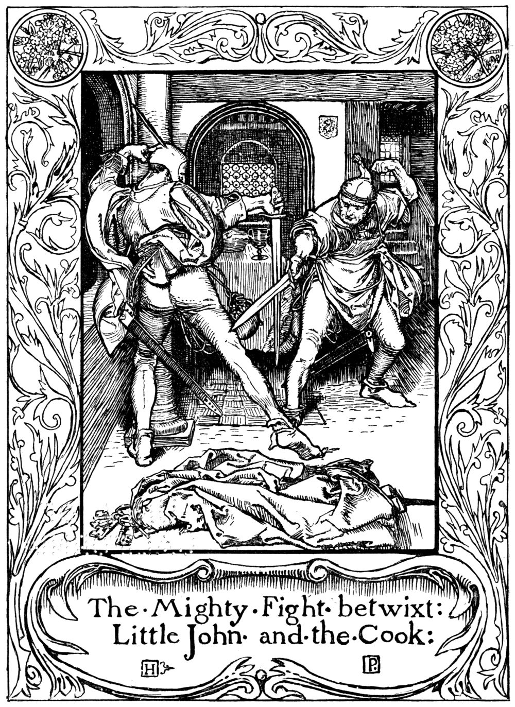
"Now I'll swear to it," said Little John, "you're the very best swordsman I ever laid eyes on. Honestly, I thought I'd have carved you up long before now."
"And I thought I'd have done the same to you," said the Cook, "but somehow I've missed the mark."
"Now, I've been thinking to myself," said Little John, "about what we're fighting for. But for all that, I can't rightly say."
"Why, neither can I," said the Cook. "I've no love for that puffed-up Steward. I just thought we'd agreed to fight each other, and that it had to be done."
"Now," said Little John, "it seems to me that instead of trying to cut each other's throats, we'd do better to be good friends. What do you say, jolly Cook? Will you come with me to Sherwood Forest and join Robin Hood's band? You'll live a merry life in the woodlands, and you'll have a hundred and forty good companions, one of whom is me. You'll have three suits of Lincoln green a year, and forty marks in wages."
"Now, you're a man after my own heart!" cried the Cook, very heartily. "And now that you mention it, that's just the job for me. I'll come with you, and gladly, too. Give me your hand, sweet fellow, and I'll be your companion from now on. What might your name be, lad?"
"People call me Little John, my good fellow."
"What? Are you really Little John, Robin Hood's own right-hand man? I've heard about you over and over again, but I never hoped to set eyes on you. And you're really the famous Little John!" And the Cook seemed lost in amazement, and stared at his companion with wide eyes.
"I'm Little John, all right, and today I'll bring Robin Hood a fine, sturdy fellow to join his merry band. But before we go, my good friend, it seems to me a great pity that, since we've had so much of the Sheriff's food, we shouldn't also take some of his silver dishes to Robin Hood, as a present from his worship."
"Why, so it is," said the Cook. And so they started hunting around, and took as much silver as they could lay their hands on, stuffing it into a bag. When they had filled the sack, they set off for Sherwood Forest.
Plunging into the woods, they came at last to the greenwood tree, where they found Robin Hood and sixty of his merry men lying on the fresh green grass. When Robin and his men saw who was coming, they jumped to their feet. "Welcome!" cried Robin Hood. "Welcome, Little John! It's been a long time since we heard from you, though we all knew you'd gone into the Sheriff's service. And how have you been getting along all these long days?"
"I've lived very merrily at the Lord Sheriff's," answered Little John, "and I've come straight from there. Look, good master! I've brought you his cook, and even his silver dishes." Then he told Robin Hood and the merry men who were there everything that had happened to him since he had left them to go to the Fair at Nottingham Town. Everybody roared with laughter, except Robin Hood. He looked serious.
"No, Little John," he said, "you're a brave fellow and a loyal one. I'm glad you've brought yourself back to us, and with such a good companion as the Cook, whom we all welcome to Sherwood. But I don't like it so much that you've stolen the Sheriff's silver like some petty thief. The Sheriff has been punished by us already, and he lost three hundred pounds, just as he tried to cheat someone else out of his property. But he hasn't done anything that gives us cause to steal the silver dishes from his house."
Little John was annoyed by this, but he tried to pass it off with a joke. "No, good master," he said, "if you think the Sheriff didn't give us the silver, I'll go and get him, so he can tell us with his own lips that he gives it all to us." With that he jumped to his feet, and he was gone before Robin could call him back.
Little John ran a full five miles until he came to where the Sheriff of Nottingham and a brightly dressed company were hunting near the forest. When Little John reached the Sheriff, he took off his cap and bent his knee. "God save you, good master," he said.
"Why, Reynold Greenleaf!" cried the Sheriff. "Where have you come from, and where have you been?"
"I've been in the forest," answered Little John, speaking as if he were amazed, "and there I saw a sight like nothing any man's eyes have ever seen before! Over there I saw a young stag, all in green from top to toe, and around him was a herd of sixty deer, and they were all green from head to foot too. But I didn't dare shoot, good master, for fear they would kill me."
"Why, what's this, Reynold Greenleaf?" cried the Sheriff. "Are you dreaming, or are you mad, to bring me a story like that?"
"No, I'm not dreaming, and I'm not mad," said Little John. "And if you'll come with me, I'll show you this fine sight, for I've seen it with my own eyes. But you'll have to come alone, good master, in case the others frighten them and they get away."
So the whole party rode forward, and Little John led them down into the forest.
"Now, good master," he said at last, "we're close to where I saw this herd."
Then the Sheriff got down from his horse and told the others to wait for him until he came back. And Little John led him forward through a thick clump of trees, until suddenly they came out into a great open glade. At the far end of it Robin Hood sat in the shade of the great oak tree, with his merry men all around him. "Look, good Master Sheriff," said Little John, "there's the stag I told you about."
At this the Sheriff turned to Little John and said bitterly, "A long time ago I thought I remembered your face, but now I know you. Curse you, Little John, for you've betrayed me today."
Meanwhile Robin Hood had come up to them. "Welcome, Master Sheriff," he said. "Have you come today to have another feast with me?"
"No, Heaven forbid!" said the Sheriff, in deep earnest. "I don't want any feast, and I'm not hungry today."
"All the same," said Robin, "if you're not hungry, maybe you're thirsty, and I know very well you'll have a cup of sack with me. But I'm sorry you won't feast with me, because you could have had food just the way you like it. There stands your own Cook."
Then he led the Sheriff, whether he liked it or not, to the seat he knew so well under the greenwood tree.
"Hey, lads!" cried Robin. "Fill a good brimming cup of sack for our good friend the Sheriff and bring it here, because he's faint and tired."
Then one of the band brought the Sheriff a cup of sack, bowing low as he handed it to him. But the Sheriff couldn't touch the wine, because he saw that it was served in one of his own silver cups, on one of his own silver plates.
"What's the matter?" said Robin. "Don't you like our new silver dishes? We got a whole bag of them today." And with that he held up the sack of silver that Little John and the Cook had brought with them.
Then the Sheriff's heart was bitter inside him, but he didn't dare say anything, and he just stared at the ground. Robin looked hard at him for a while before he spoke again. Then he said, "Now, Master Sheriff, the last time you came to Sherwood Forest, you came hoping to rob a poor spendthrift, and you ended up being robbed yourself. But this time you've come here meaning no harm, and I don't know of any man you've robbed. I take my tithe, a tenth part, from fat priests and lordly squires, to help the people they rob and to lift up the people they push down. But I don't know of any tenants of yours whom you've wronged in any way. So take back what's yours. I won't take so much as a farthing from you today. Come with me, and I'll lead you out of the forest and back to your own party."
Then he slung the bag over his shoulder and turned away, and the Sheriff followed him, far too puzzled to say a word. They went on until they came within a couple of hundred yards of the place where the Sheriff's companions were waiting for him. Then Robin Hood gave the sack of silver back to the Sheriff. "Take back what's yours," he said, "and listen to me, good Sheriff: take a piece of advice along with it. Test your servants well before you hire them so readily again." Then he turned and left the Sheriff standing there bewildered, with the sack in his hands.
The company waiting for the Sheriff were all amazed to see him come out of the forest carrying a heavy sack on his shoulders. They asked him questions, but he didn't answer a single word, and acted like a man walking in a dream. Without a word, he laid the bag across his horse's back, and then he mounted and rode away, with everyone following him. But all the time there was a great jumble of thoughts in his head, tumbling one over the other. And so ends the merry tale of Little John, and how he went into the Sheriff's service.
Part Three: Sore Bones and Three New Men
Chapter 7: Little John and the Tanner of Blyth
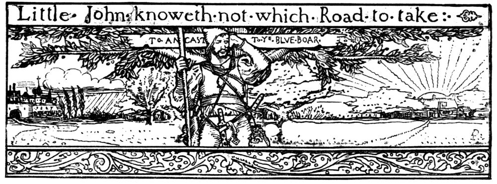
In which you will hear about three merry adventures that happened to Robin Hood and some of his friends, by which he gained sore bones and three good merry men, all in one day.
One fine day, not long after Little John had left off living with the Sheriff and come back to the merry greenwood with his worship's cook, as I've just told you, Robin Hood and a few chosen fellows of his band were lying on the soft grass under the greenwood tree where they lived. The day was warm and close, so while most of the band were scattered through the forest on one errand or another, these few strong fellows lay lazily in the shade of the tree in the soft afternoon, swapping jokes and telling merry stories, with plenty of laughter and fun.
The whole air was heavy with the sharp, sweet smell of the hawthorn blossom, and all the leafy shadows of the woods beyond rang with the sweet songs of birds: the thrush, the cuckoo, and the wood pigeon. And mixed in with the birdsong was the cool sound of the gurgling brook, which leaped out of the forest shadows and ran fussing among its rough gray stones, across the sunny open glade in front of the meeting tree. And a fine sight they made, those ten tall, strong yeomen, all dressed in Lincoln green, lying under the wide-spreading branches of the great oak tree, while the sunlight shivered among the trembling leaves and fell in dancing patches on the grass.
Suddenly Robin Hood slapped his knee.
"By Saint Dunstan," he said, "I nearly forgot! Quarter day is coming up fast, when every man gets his new suit of clothes, and we haven't a scrap of Lincoln green cloth in our whole storehouse. That has to be seen to, and soon. Come on, get moving, Little John! Stir those lazy bones of yours, because you've got to go right away to our good friend the cloth merchant, Hugh Longshanks of Ancaster. Tell him to send us four hundred yards of fine Lincoln green cloth straight off. And maybe the trip will take some of the fat off your bones that you put on from lazy living at our dear Sheriff's."
"No," muttered Little John (for he had heard so much on this subject that he was getting touchy about it), "no, really. Maybe I do have more flesh on my joints than I used to. But flesh or no flesh, I don't doubt I could still hold my place on a narrow bridge against any yeoman in Sherwood, or in Nottinghamshire, for that matter, even if he had no more fat on his bones than you have, good master."
At this answer a great shout of laughter went up, and everybody looked at Robin Hood, because every man there knew that Little John was talking about a certain fight between their master and himself, which was how the two of them had first met.
"No," said Robin Hood, laughing louder than all of them. "Heaven forbid that I should doubt you, because I don't want another taste of your staff myself, Little John. I have to admit there are men in my band who can handle a seven-foot staff more skillfully than I can. Still, there's no man in all Nottinghamshire who can draw a gray goose arrow the way my fingers can. All the same, a trip to Ancaster won't do you any harm. So off you go, as I tell you, and you'd better go this very evening. Ever since you stayed at the Sheriff's, plenty of people know your face, and if you go in broad daylight you might get yourself into a mess with some of his worship's soldiers. Wait here until I bring you money to pay our good Hugh. I'm sure he has no better customers in all Nottinghamshire than us." And with that, Robin left them and went into the forest.
Not far from the meeting tree there was a great rock with a room carved out inside it. The doorway was shut with a huge oak door, two hands' width thick, studded all over with spikes and fastened with a great padlock. This was the band's treasure house. Robin Hood went there, unlocked the door, and went inside, and he brought out a bag of gold, which he gave to Little John to pay Hugh Longshanks for the Lincoln green cloth.
Then up got Little John. He took the bag of gold and tucked it inside the front of his jacket, buckled a belt around his waist, took a strong pikestaff a full seven feet long in his hand, and set off on his journey.
So he strode along the leafy forest path that led to the Fosse Way, whistling, and turning neither to the right nor to the left, until at last he came to a place where the path split in two. One branch led on to the Fosse Way, and the other, as Little John knew very well, led to the merry Blue Boar Inn. Here Little John suddenly stopped whistling and stood still in the middle of the path. First he looked up, and then he looked down; and then, tipping his cap over one eye, he slowly scratched the back of his head. Because this is what was happening: at the sight of those two roads, two voices started arguing inside him. One cried, "That way lies the road to the Blue Boar Inn, and a can of brown October ale, and a merry night with good friends like the ones you'll find there." The other cried, "That way lies the road to Ancaster, and the job you were sent to do." Now the first of these voices was by far the louder, because Little John had grown very fond of good living while he stayed at the Sheriff's house. So before long, looking up into the blue sky, where bright clouds were sailing like silver boats and swallows were skimming in circles, he said, "I'm afraid it's going to rain this evening. I'd better just stop at the Blue Boar until it's over, because I know my good master wouldn't want me soaked to the skin." So without any more fuss, off he strode down the path he liked best. Now, there wasn't a sign of bad weather anywhere. But when you want to do something, the way Little John did, you never run short of reasons for doing it.
There were four merry jokers at the Blue Boar Inn: a butcher, a beggar, and two barefoot friars. Little John heard them singing from far off, as he walked through the hush of the soft twilight that was now falling over hill and valley. They were very glad indeed to welcome such a merry fellow as Little John. Fresh cans of ale were brought, and with jokes and songs and funny stories the hours flew by on quick wings. Nobody gave a thought to the time, until the night was so far gone that Little John gave up the idea of setting out again that night, and so he stayed at the Blue Boar Inn until morning.
Now it was a bad piece of luck for Little John that he put his pleasure ahead of his duty, and he paid a heavy bill for it, as we all tend to do when we do the same thing, as you'll see.
He got up at dawn the next day, took his strong pikestaff in his hand, and set off on his journey once more, as if he meant to make up for lost time.
In the good town of Blyth there lived a sturdy tanner (a man who turns raw cowhides into leather), famous far and wide for feats of strength and for many tough bouts of wrestling and quarterstaff. For five years he had held the championship belt for wrestling in all the middle of England, until the great Adam of Lincoln threw him in the ring and broke one of his ribs. But at the quarterstaff he had never yet met his match anywhere in the countryside around. Besides all this, he dearly loved the longbow, and a sly trip into the forest when the moon was full and the brown deer were in season. So the King's rangers kept a sharp eye on him and what he got up to, because Arthur a Bland's house tended to have plenty of meat in it that looked more like venison than the law allowed.
Now, the day before Little John set out on his errand, Arthur had been to Nottingham Town to sell ten tanned cowhides. At dawn on the same day that Little John left the inn, he started out from Nottingham to go home to Blyth. All through the dewy morning his road led him along the edge of Sherwood Forest, where the birds were welcoming the lovely day with a great, merry celebration. Across the Tanner's shoulders hung his strong quarterstaff, always close enough to grab in a hurry, and on his head he wore a cap of doubled cowhide, so tough that even a broadsword could hardly cut through it.
"Now," said Arthur a Bland to himself, when he had come to the part of the road that cut through a corner of the forest, "at this time of year the brown deer are sure to be coming out of the deep forest, closer to the open meadows. Maybe I'll be lucky enough to catch a glimpse of the dainty brown darlings this early in the morning." Because there was nothing he loved better than to watch a herd of deer go tripping by, even when he couldn't tickle their ribs with a yard-long arrow. So he left the road and went peeping this way and that through the undergrowth, spying here and there, with all the tricks of a master woodsman, and of a man who had more than once put on a jacket of Lincoln green himself.
Meanwhile, Little John was stepping cheerfully along, thinking of nothing but things like the sweetness of the hawthorn buds that decorated the hedges, or gazing up at the lark, which sprang from the dewy grass and hung high in the yellow sunlight on fluttering wings, pouring out its song, which fell like a falling star from the sky. And his luck led him away from the highway, not far from the spot where Arthur a Bland was peeping this way and that through the leaves of the thickets. Hearing the branches rustle, Little John stopped, and soon he caught sight of the Tanner's brown cowhide cap moving among the bushes.
"I really do wonder," Little John said to himself, "what that rascal over there is up to, going around peeping and peering like that. I honestly believe that the scurvy scoundrel is nothing but a thief, and has come here after our own deer, and the good King's." Because from roaming the forest so much, Little John had come to think of all the deer in Sherwood as belonging to Robin Hood and his band just as much as to good King Harry. "Yes," he said again after a while, "this needs looking into." So he left the highroad too, went into the thickets, and began spying around after sturdy Arthur a Bland.
So for a long time the two of them went hunting about, Little John after the Tanner and the Tanner after the deer. At last Little John stepped on a stick, which snapped under his foot. The Tanner heard the noise, turned around quickly, and caught sight of the yeoman. Seeing that the Tanner had spotted him, Little John put a bold face on it.
"Hey there!" he said. "What are you doing here, you good-for-nothing? Who are you, to come prowling along the paths of Sherwood? Honestly, you have a wicked look about your face, and I really do think you're nothing but a thief, come after our good King's deer."
"No," said the Tanner boldly (because although he had been taken by surprise, he wasn't the kind of man to be scared by big words), "you're lying through your teeth. I'm no thief, but an honest workingman. As for my face, it is what it is; and as far as that goes, yours isn't anything to brag about either, you cheeky fellow."
"Ha!" said Little John in a great loud voice. "Are you going to talk back to me? Why, I've half a mind to crack your skull for you. I'll have you know, fellow, that I am, so to speak, one of the King's foresters. Or at least," he muttered to himself, "my friends and I take very good care of our good King's deer."
"I don't care who you are," answered the bold Tanner, "and unless you've got a lot more of your kind with you, you'll never make Arthur a Bland cry 'Mercy!'"
"Is that so?" cried Little John in a rage. "Now, upon my word, you cheeky rogue, your tongue has led you into a pit you'll have a sorry time getting out of. I'll give you such a thrashing as you've never had in all your life. Take your staff in your hand, fellow, because I won't hit an unarmed man."
"Well, listen to him, and plague take him!" cried the Tanner, because he too had talked himself into a temper. "Big words never killed so much as a mouse. Who are you, to talk so freely about cracking the head of Arthur a Bland? If I don't tan your hide today better than I ever tanned a calf's hide in all my life, then split my staff into skewers for roasting lamb and never call me a brave man again! Now look out for yourself, fellow!"
"Wait!" said Little John. "First let's measure our sticks. I think my staff is longer than yours, and I wouldn't want to take advantage of you by even so much as an inch."
"No, I don't care about the length," answered the Tanner. "My staff is long enough to knock down a calf. So look out for yourself, fellow, I say again."
So without any more fuss, each of them gripped his staff in the middle, and with fierce, angry looks they came slowly toward each other.
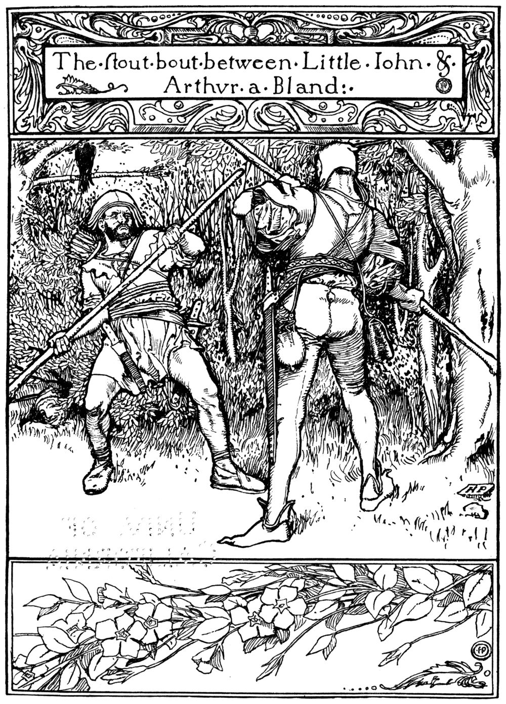
Now, news had reached Robin Hood that Little John, instead of doing what he was told, had passed by his duty for his pleasure, and had spent the night in merry company at the Blue Boar Inn instead of going straight to Ancaster. This annoyed him to the bottom of his heart, so he set out at dawn to look for Little John at the Blue Boar, or at least to meet the yeoman on the way and tell him exactly what he thought of the business. As he strode along in a temper, putting together the words he would use to scold Little John, he suddenly heard loud, angry voices, like men in a rage hurling fierce words back and forth at each other. At this Robin Hood stopped and listened. "Surely," he said to himself, "that's Little John's voice, and he's angry too. The other voice I don't think I know. Heaven forbid that my good, trusty Little John has fallen into the hands of the King's rangers! I must see about this, and quickly."
That is what Robin Hood said to himself, and all his anger vanished like breath fading from a windowpane at the thought that his trusty right-hand man might be in danger of his life. So he made his way carefully through the thickets toward the voices, and, pushing the leaves aside, peeped into the little clearing where the two men, staff in hand, were slowly coming together.
"Ha!" said Robin to himself. "Here's some fine sport going on! I'd give three gold angels out of my own pocket if that sturdy fellow would give Little John a really good thrashing! I'd love to see him well thumped for failing to do what I told him. I'm afraid, though, there isn't much chance of my seeing such a pleasant sight." And with that he stretched himself out full length on the ground, so that he could not only see the sport better but also enjoy the merry sight in comfort.
You may have seen two dogs that mean to fight, walking slowly around and around each other, neither one wanting to start. That is how those two sturdy yeomen moved slowly around, each watching for a chance to catch the other off guard and get in the first blow. At last Little John struck like a flash, and—"rap!"—the Tanner met the blow and turned it aside, and then struck back at Little John, who turned that blow aside too; and so this mighty battle began. Then up and down and back and forth they went, with the blows falling so thick and fast that anyone at a distance would have thought ten men were fighting. They fought like this for nearly half an hour, until the ground was all plowed up by the digging of their heels, and they were breathing as hard as an ox pulling a plow. But Little John suffered more, because he had gotten out of the habit of such hard work, and his joints were not as loose as they had been before he went to live with the Sheriff.
All this time Robin Hood lay under the bush, delighted by such a handsome bout of quarterstaff. "Upon my word!" he said to himself. "I never thought in all my life I'd see Little John so evenly matched. Still, I expect he would have beaten that fellow by now if he'd been in his old shape."
At last Little John saw his chance. He threw all the strength he could feel draining out of him into one blow that might have knocked down an ox, and he struck at the Tanner with all his might. And now the Tanner's cowhide cap did him good service, because without it he might never have held a staff in his hand again. As it was, the blow he caught on the side of the head was so hard that it sent him staggering across the little clearing, and if Little John had had the strength left to follow up his advantage, it would have gone badly for sturdy Arthur. But Arthur got his balance back quickly, and, at arm's length, struck back at Little John. This time the stroke landed, and down went Little John full length, his stick flying out of his hand as he fell. Then sturdy Arthur raised his staff and gave him another whack on the ribs.
"Stop!" roared Little John. "Would you hit a man when he's down?"
"Yes, of course I would," said the Tanner, giving him another thwack with his staff.
"Stop!" roared Little John. "Help! Stop, I tell you! I give up! I give up, I say, good fellow!"
"Have you had enough?" asked the Tanner grimly, holding his staff in the air.
"Yes, honestly, and more than enough."
"And do you admit that I'm the better man of the two of us?"
"Yes, truly, and plague take you!" said Little John, the first part out loud and the last part into his beard.
"Then you can go on your way, and thank your patron saint that I'm a merciful man," said the Tanner.
"A plague on mercy like yours!" said Little John, sitting up and feeling his ribs where the Tanner had beaten him. "I swear, my ribs feel as if every one of them were broken in two. I tell you, good fellow, I didn't think there was a man in all Nottinghamshire who could do to me what you've done today."
"And neither did I!" cried Robin Hood, bursting out of the thicket and roaring with laughter until the tears ran down his cheeks. "Oh, man, man!" he said, as well as he could for laughing. "You went over like a bottle knocked off a wall! I saw the whole merry fight, and I never thought I'd see you give yourself up like that, hand and foot, to any man in all merry England. I was looking for you to scold you for not doing what I told you. But this good fellow has paid you everything I owed you, in full measure, pressed down and running over. Why, he reached out his arm full length while you stood there gaping at him, and with a neat little rap he tumbled you over as I've never seen anyone tumbled before." That is how bold Robin talked, and all the while Little John sat on the ground looking as if he had a mouthful of sour curds. "What's your name, good fellow?" said Robin next, turning to the Tanner.
"People call me Arthur a Bland," the Tanner spoke up boldly. "And now, what's your name?"
"Ha, Arthur a Bland!" said Robin. "I've heard your name before, good fellow. You broke the head of a friend of mine at the fair at Ely last October. The people there call him Jock of Nottingham; we call him Will Scathelock. This poor fellow you've beaten so soundly is reckoned the best hand at the quarterstaff in all merry England. His name is Little John, and mine is Robin Hood."
"What!" cried the Tanner. "Are you really the great Robin Hood, and is this the famous Little John? Why, if I'd known who you were, I'd never have dared to lift my hand against you. Let me help you to your feet, good Master Little John, and let me brush the dust off your coat."
"No," said Little John crossly, getting up carefully at the same time, as if his bones were made of glass. "I can help myself, good fellow, without your help. And let me tell you, if it hadn't been for that nasty cowskin cap of yours, it would have gone badly for you today."
At this Robin laughed again, and, turning to the Tanner, he said, "Will you join my band, good Arthur? Because I swear you're one of the strongest men I've ever set eyes on."
"Will I join your band?" cried the Tanner joyfully. "Yes, of course I will! Hooray for a merry life!" he cried, leaping in the air and snapping his fingers. "And hooray for the life I love! Away with tanbark and filthy tanning vats and stinking cowhides! I'll follow you to the ends of the earth, good master, and there won't be a herd of brown deer in all the forest that won't come to know the twang of my bowstring."
"As for you, Little John," said Robin, turning to him and laughing, "you'll start out for Ancaster once again, and we'll go part of the way with you. I won't have you turning off to the right or the left until you're well clear of Sherwood. There are other inns around here that you know, too." So they left the thickets, took to the highway once more, and went off about their business.
Chapter 8: Robin Hood and Will Scarlet
So the three of them traveled along the sunny road, three strong fellows such as you could hardly match anywhere else in all merry England. Many people stopped to stare after them as they strode along, their shoulders were so broad and their walk so sturdy.
Robin Hood said to Little John, "Why didn't you go straight to Ancaster yesterday, the way I told you? You wouldn't have gotten yourself into such a mess if you'd done what I ordered."
"I was afraid of the rain that was threatening," said Little John sulkily, because he was annoyed at Robin teasing him so about what had happened to him.
"The rain!" cried Robin, stopping suddenly in the middle of the road and staring at Little John in amazement. "Why, you great big oaf! Not a drop of rain has fallen in three days, and none has threatened either. There hasn't been a sign of bad weather on earth or in the sky or on the water."
"All the same," growled Little John, "holy Saint Swithin keeps the waters of heaven in his pewter pot, and he could have poured them out if he'd felt like it, even from a clear sky. Would you have wanted me soaked to the skin?"
At this Robin Hood burst into a roar of laughter. "Oh, Little John!" he said. "What butter for brains you have in that head of yours! Who could stay angry with somebody like you?"
And with that they all set off again, with the right foot first, as the saying goes.
When they had gone some distance, the day being warm and the road dusty, Robin Hood grew thirsty. There was a spring of water as cold as ice just behind the hedge, so they climbed over the stile and came to where the water bubbled up from under a mossy stone. There they knelt and made cups of their hands and drank all they wanted. Then, since the spot was cool and shady, they stretched out their legs and rested for a while.
In front of them, beyond the hedge, the dusty road stretched away across the plain. Behind them the meadows and the bright green fields of tender young wheat lay spread out in the sunshine, and overhead spread the shade of the cool, rustling leaves of a beech tree. The soft scent of the purple violets and wild thyme, which grew in the damp at the edge of the little spring, came pleasantly to their noses, and so did the soft gurgle of the water. Everything was so pleasant, and so full of the gentle joy of bright Maytime, that for a long time none of the three felt like talking. Each of them just lay on his back, gazing up through the trembling leaves to the bright sky overhead. At last Robin, whose thoughts were not wandering quite so far off as the others', and who had been glancing around him now and then, broke the silence.
"Well, well!" he said. "There's a brightly feathered bird, I swear!"
The others looked and saw a young man walking slowly down the highway. He was bright indeed, just as Robin had said, and he cut a fine figure. His jacket was of scarlet silk, and so were his stockings. A handsome sword hung at his side, in a leather scabbard stamped with a raised pattern and picked out with fine threads of gold. His cap was of scarlet velvet, with a broad feather hanging down behind one ear. His hair was long and yellow and curled down onto his shoulders, and in his hand he carried an early rose, which he sniffed daintily every now and then.
"Upon my life!" said Robin Hood, laughing. "Did you ever see such a pretty, prancing fellow?"
"It's true his clothes are much too pretty for my taste," said Arthur a Bland. "But all the same, his shoulders are broad and his waist is narrow. And do you see, good master, how his arms hang from his body? They don't dangle down like spindles; they hang stiff and bend at the elbow. I swear there are no bread-and-milk arms and legs inside those fine clothes, but strong joints and tough muscles."
"I think you're right, friend Arthur," said Little John. "I really do believe that fellow isn't the kind of rose-petal and whipped-cream gentleman he wants people to take him for."
"Pah!" said Robin Hood. "The sight of a fellow like that puts a nasty taste in my mouth! Look how he holds that pretty flower between his thumb and finger, as if he were saying, 'Good rose, I don't dislike you so much that I can't put up with your smell for a little while.' I think you're both wrong. I honestly believe that if a fierce mouse ran across his path, he'd cry 'Oh, la!' or 'Oh, dear me!' and faint dead away. I wonder who he is."
"Some great baron's son, I don't doubt," answered Little John, "with good, honest men's money lining his purse."
"Yes, of course, that's true, I'm sure of it," said Robin. "What a pity that men like that, who never think of anything except going around in fancy clothes, should have good fellows dancing to their orders, whose shoes they aren't fit to tie! By Saint Dunstan, Saint Alfred, Saint Withold, and all the good men among the old English saints, it makes me furious to see fancy little lords like that, whose families came over the sea, stepping on the necks of good Saxons, who owned this land before their great-grandfathers ever chewed a piece of pork rind! By the bright rainbow of Heaven, I'll take their ill-gotten money away from them, even if I'm hanged for it as high as any tree in Sherwood!"
"Why, what's this, master?" said Little John. "What's got you so hot? You're setting your pot boiling, and maybe there's no bacon to cook! I'd say that fellow's hair is too fair for a Norman's. For all you know, he may be a good, honest man."
"No," said Robin. "I'll bet my head against a lead quarter-penny that he's what I say. Now, you two lie here, I tell you, while I show you how I'll thrash this fellow." And with that Robin Hood stepped out of the shade of the beech tree, crossed the stile, and stood in the middle of the road with his hands on his hips, right in the stranger's path.
Meanwhile the stranger had been walking so slowly that all this talk was over before he came opposite the place where they were. He didn't walk any faster, and he didn't seem to notice that there was any such person as Robin Hood in the world. So Robin stood in the middle of the road and waited, while the other walked slowly toward him, smelling his rose and looking this way and that, and everywhere except at Robin.
"Halt!" cried Robin, when at last the other had come close to him. "Halt! Stand where you are!"
"Why should I halt, good fellow?" said the stranger in a soft, gentle voice. "And why should I stand where I am? Still, since you want me to stay, I'll wait a little while, so that I can hear whatever you have to say to me."
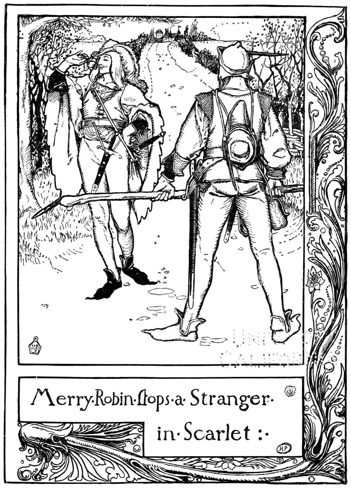
"Well," said Robin, "since you do so nicely as I tell you, and speak to me so softly, I'll treat you with every courtesy, too. I'd like you to know, my fine friend, that I am, so to speak, a devoted follower of Saint Wilfred, who, as you may know, took all the gold away from the heathen, whether they liked it or not, and melted it down into candlesticks. So from anyone who comes along this way I collect a certain toll, which I use, I hope, for a better purpose than making candlesticks. So, my little chick, I'd like you to hand me your purse, so that I can look inside it and judge, as well as my poor wits allow, whether you're carrying more money than our law allows. Because, as our good old Gaffer Swanthold says, 'Whoever grows fat from living too well must have some blood let out of him.'"
All this time the young man had been sniffing at the rose he held between his thumb and finger. "No," he said with a gentle smile, when Robin Hood had finished, "I love to hear you talk, you pretty fellow, and if by any chance you're not done yet, please finish. I still have a little time to spare."
"I've said everything," said Robin. "And now, if you'll give me your purse, I'll let you go on your way without any trouble or delay, as soon as I've seen what's in it. I won't take anything from you if you have only a little."
"Oh, dear! It grieves me very much," said the other, "that I can't do what you want. I have nothing to give you. Please let me go on my way. I haven't done you any harm."
"No, you're not going anywhere," said Robin, "until you've shown me your purse."
"Good friend," said the other gently, "I have business somewhere else. I've given you a lot of my time and listened to you patiently. Please, let me go in peace."
"I've told you, friend," said Robin sternly, "and now I'll tell you again: you won't take one step farther until you've done what I say." And with that he raised his quarterstaff over his head in a threatening way.
"Oh, dear!" said the stranger sadly. "It grieves me that this has to happen. I'm very much afraid I'll have to kill you, you poor fellow!" And with that he drew his sword.
"Put your weapon away," said Robin. "I don't want to take unfair advantage of you. Your sword can't stand up to an oak staff like mine. I could snap it like a stalk of barley straw. There's a good oak thicket over there by the side of the road. Go and get yourself a stick from it, and defend yourself fairly, if you've got an appetite for a good thrashing."
First the stranger measured Robin with his eye, and then he measured the oak staff. "You're right, good fellow," he said after a moment. "My sword really is no match for that stick of yours. Wait a little while until I get myself a staff." And with that he threw away the rose he had been holding all this time, pushed his sword back into its scabbard, and, with a quicker step than he had used yet, went over to the roadside, where the little clump of scrubby young oaks that Robin had mentioned was growing. He looked them over and soon found a sapling he liked. He didn't cut it. Instead, he rolled his sleeves up a little way, took hold of it, braced his heel against the ground, and with one mighty pull plucked the young tree up by the roots, right out of the earth. Then he came back, trimming off the roots and the tender shoots with his sword, as calmly as if he had done nothing worth mentioning.
Little John and the Tanner had been watching all this. But when they saw the stranger drag the sapling up out of the ground, and heard its roots ripping and snapping, the Tanner pursed his lips and sucked in his breath between them in a long whistle.
"By the breath of my body!" said Little John, as soon as he could pull his wits together from their amazement. "Did you see that, Arthur? Why, I think our poor master is going to have a hard time with that fellow. By Our Lady, he pulled up that green tree as if it were a stalk of barley straw!"
Whatever Robin Hood thought, he stood his ground, and now he and the stranger in scarlet stood face to face.
Robin Hood held his own well that day, as a good yeoman of the middle of England should. This way and that they fought, and back and forth, Robin's skill against the stranger's strength. The dust of the highway rose up around them like a cloud, so that at times Little John and the Tanner couldn't see anything, but could only hear the staffs rattling against each other. Three times Robin Hood hit the stranger: once on the arm and twice on the ribs. And he had blocked all the other's blows, any one of which, if it had landed, would have laid sturdy Robin lower in the dust than he had ever been before. At last the stranger hit Robin's stick so squarely in the middle that Robin could hardly keep hold of his staff. He struck again, and Robin bent under the blow. He struck a third time, and now he not only beat down Robin's guard completely but gave him such a rap besides that down he tumbled into the dusty road.
"Stop!" cried Robin Hood, when he saw the stranger raising his staff again. "I give up!"
"Stop!" cried Little John, bursting out of hiding with the Tanner right behind him. "Stop! Leave off, I tell you!"
"No," the stranger answered quietly. "If there are two more of you, and each of you as strong as this good fellow, I'm likely to have my hands full. All the same, come on, and I'll do my best to take care of you all."
"Stop!" cried Robin Hood. "We won't fight any more. I swear, this is a bad day for you and me, Little John. I honestly think my wrist, and my arm too, are paralyzed by the jolt of that blow this stranger gave me."
Then Little John turned to Robin Hood. "Why, what's this, good master?" he said. "Oh, no! You're in a sorry state. Why, your jacket is all filthy with the dust of the road. Let me help you up."
"A plague on your help!" cried Robin angrily. "I can get to my feet without your help, good fellow."
"No, but at least let me dust off your coat for you. I'm afraid your poor bones must be terribly sore," said Little John seriously, but with a sly twinkle in his eyes.
"Leave off, I tell you!" said Robin, fuming. "My coat has been dusted enough already, without any help from you." Then, turning to the stranger, he said, "What's your name, good fellow?"
"My name is Gamwell," answered the other.
"Ha!" cried Robin. "Is that so? I have close relatives by that name. Where do you come from, my fine friend?"
"I come from Maxfield Town," answered the stranger. "I was born and raised there, and I've come from there to look for my mother's young brother, whom people call Robin Hood. So if you could possibly show me the way—"
"Ha! Will Gamwell!" cried Robin, putting both hands on the other's shoulders and holding him off at arm's length. "It must be! It can't be anyone else! I should have known you by that pretty, girlish air of yours, that dainty, fussy way of walking. Don't you know me, lad? Take a good look at me."
"Now, by the breath of my body!" cried the other. "I believe with all my heart that you're my own Uncle Robin. Yes, it really is!" And each of them threw his arms around the other and kissed him on the cheek.
Then Robin held his relative off at arm's length once more and looked him over sharply from head to toe. "Why, what's this?" he said. "What a change! Truly, some eight or ten years ago I left you a skinny lad, all big knobby joints and gangly arms and legs, and look! Here you are, as fine and well-built a fellow as I ever set eyes on. Don't you remember, lad, how I showed you the right way to pinch the goose feathers of the arrow between your fingers and hold your bow arm out steady? You showed great promise of being a sharp archer. And don't you remember how I taught you to block and parry with the stick?"
"Yes," said young Gamwell, "and I looked up to you so much, and thought you were so far above all other men, that, I swear, if I'd known who you were I would never have dared to lift a hand against you today. I hope I didn't do you any great harm."
"No, no," said Robin quickly, glancing sideways at Little John, "you didn't hurt me. But please, say no more about that. Still, I will say, lad, that I hope I never feel a blow like the one you gave me again. By Our Lady, my arm is still tingling from my fingernails to my elbow. Honestly, I thought I was paralyzed for life. I tell you, nephew, you're the strongest man I ever set eyes on. I swear my stomach shook when I saw you pull up that green tree the way you did. But tell me, how did you come to leave Sir Edward and your mother?"
"Oh, dear!" answered young Gamwell. "It's a sad story I have to tell you, uncle. My father's steward, the man who manages his estate, who came to us after old Giles Crookleg died, was always a cheeky scoundrel. I don't know why my father kept him on, except that he did look after things very sensibly. It used to make me furious to hear him talk back so boldly to my father, who, as you know, was always a patient man with the people around him, and slow to anger and harsh words. Well, one day (and it was a bad day for that cheeky fellow) he tried to scold my father while I was standing by. I couldn't stand it any longer, good uncle, so I stepped forward and gave him a box on the ear, and—would you believe it?—the fellow died of it right then and there. I think they said I broke his neck, or something like that. So they packed me off to find you and escape the law. I was on my way when you saw me, and here I am."
"Well, on my honor," said Robin Hood, "for somebody escaping the law, you were taking it more easily than anyone I've ever seen in all my life. Whoever in the whole world saw a man who had killed somebody, and was running away because of it, go tripping along the highway like a dainty lady of the court, sniffing at a rose all the while?"
"Well, uncle," answered Will Gamwell, "hurrying never churned good butter, as the old saying goes. Besides, I honestly believe that all this extra strength of mine has taken the quickness out of my heels. Why, just now you rapped me three times, and I never touched you once, except by beating you down with my strength."
"No," said Robin, "let's say no more about that. I'm very glad to see you, Will, and you'll bring great honor and credit to my band of merry fellows. But you'll have to change your name, because there will soon be warrants out for your arrest. So, because of your bright clothes, from now on and forever you'll be called Will Scarlet."
"Will Scarlet," said Little John, stepping forward and holding out his great palm, which the other took. "Will Scarlet, the name suits you well. I'm very glad to welcome you among us. I'm called Little John, and this is a new member who has just joined us, a sturdy tanner named Arthur a Bland. You're likely to become famous, Will, let me tell you, because there'll be many a merry ballad sung around the country, and many a merry story told in Sherwood, about how Robin Hood taught Little John and Arthur a Bland the proper way to use the quarterstaff. And also, so to speak, about how our good master bit off such a big piece of cake that he choked on it."
"Now, good Little John," said Robin gently, because he didn't at all like having a joke like that told about him, "why should we talk about this little business? Please, let's keep today's doings among ourselves."
"With all my heart," said Little John. "But, good master, I thought you loved a merry story, since you've so often made jokes about a certain amount of fat on my joints, from the flesh I put on while I was staying with the Sheriff of—"
"No, good Little John," said Robin quickly, "I believe I've said quite enough on that subject."
"Good," said Little John, "because to tell the truth I've gotten a bit tired of it myself. But now that I think of it, you also seemed to want to make a joke about the rain that was threatening last night, so—"
"All right, then," said Robin Hood crossly, "I was wrong. I remember now that it did seem to be threatening rain."
"Truly, I thought so myself," said Little John. "So no doubt you think it was wise of me to stay all night at the Blue Boar Inn, instead of setting out in such stormy weather. Don't you?"
"A plague on you and your doings!" cried Robin Hood. "If that's how you want it, you were right to stay wherever you liked."
"Good, once again," said Little John. "As for me, I've been blind all day. I didn't see you thrashed. I didn't see you tumbled head over heels in the dust. And if any man says you were, I can rattle his lying tongue between his teeth with a clear conscience."
"Come on," cried Robin, biting his lower lip, while the others couldn't help laughing. "We won't go any farther today. We'll go back to Sherwood, and you can go to Ancaster another time, Little John."
That is what Robin said, because now that his bones were sore, he felt that a long journey would be a bad thing for him. So they turned around and went back the way they had come.
Chapter 9: The Adventure with Midge, the Miller's Son
When the four yeomen had been traveling back toward Sherwood for a long time, and high noon had come and gone, they began to get hungry. "I wish I had something to eat," said Robin Hood. "I think a good loaf of white bread, with a piece of snow-white cheese, washed down with a drink of foaming ale, would be a feast fit for a king."
"Now that you mention it," said Will Scarlet, "I wouldn't mind that myself. There's something inside me crying out, 'Food, good friend, food!'"
"I know a house close by," said Arthur a Bland, "and if I only had the money, I'd bring you just what you're talking about: a nice loaf of bread, a fine cheese, and a skin of brown ale."
"As for that, you know I've got money on me, good master," said Little John.
"Why, so you have, Little John," said Robin. "How much money will it take, good Arthur, to buy us food and drink?"
"I think six broad pennies will buy enough food for a dozen men," said the Tanner.
"Then give him six pennies, Little John," said Robin, "because I think food for three men will just about fit what I need. Now off you go, Arthur, with the money, and bring the food back here. There's nice shade in that thicket over there, beside the road, and that's where we'll eat our meal."
So Little John gave Arthur the money, and the others stepped into the thicket to wait there for the Tanner to come back.
After a while he came back carrying a great brown loaf of bread and a fine round cheese, with a goatskin full of strong March beer slung over his shoulders. Then Will Scarlet took his sword and divided the loaf and the cheese into four fair shares, and each man helped himself. Robin Hood took a long pull at the beer. "Aha!" he said, drawing in his breath. "I've never tasted a sweeter drink than this."
After that nobody said a word. Each man munched away heartily at his bread and cheese, taking a pull at the beer every now and then.
At last Will Scarlet looked at a small piece of bread he was still holding in his hand. "I think I'll give this to the sparrows," he said. So he tossed it away and brushed the crumbs off his jacket.
"I've had enough too, I think," said Robin. As for Little John and the Tanner, by this time they had eaten every last crumb of their bread and cheese.
"Now," said Robin, "I feel like a new man, and I'd like to enjoy something pleasant before we go any farther on our way. I seem to remember, Will, that you used to have a fine voice, one that could carry a song sweetly. Please give us one before we go on."
"Honestly, I don't mind singing a tune," answered Will Scarlet, "but I won't sing alone."
"No, the others will follow you. Strike up, lad," said Robin.
"In that case, all right," said Will Scarlet. "I remember a song that a certain minstrel used to sing in my father's hall now and then. I don't know any name for it, so I can't give you one; but this is how it goes." Then, clearing his throat, he sang:
"In the merry blossom time,
When love's longings fill the breast,
When the flower is on the lime,
When the small bird builds her nest,
Sweetly sings the nightingale
And the throstle, brave and bold;
Cuckoo in the dewy dale,
Doves on hillsides green and gold.
But the robin I love dear,
For he sings all through the year.
Robin! Robin!
Merry Robin!
So I'd have my true love be:
Not to fly
When close by
Blow the winds of misery.
"When the spring brings sweet delights,
When on high the larks arise,
Lovers court on mellow nights,
And lads gaze in maidens' eyes,
Then the sweetbriar roses shine,
Speckled daisies on the hill,
Cowslips fair and columbine,
Dark violets where brooks run still.
But the ivy green will grow
When the north wind brings the snow.
Ivy! Ivy!
Staunch and true!
So I'd have her love to be:
Not to die
When close by
Breathes the cold of misery."
"That was well sung," said Robin, "but, nephew, I'll tell you plainly, I'd rather hear a strong fellow like you sing some hearty ballad than a fussy little song about flowers and birds and who knows what. Still, you sang it nicely, and it's not such a bad scrap of a song, when all's said and done. Now, Tanner, it's your turn."
"I don't know," said Arthur, smiling with his head on one side, like a young girl who's been asked to dance. "I don't know that I can match our sweet friend's song. Besides, I really do think I've caught a cold, and I've got a sort of tickle and huskiness in my windpipe."
"Oh, come on, sing up, friend," said Little John, who was sitting next to him, and he patted him on the shoulder. "You've got a fine, round, mellow voice. Let's have a taste of it."
"Well, if you really want a poor thing like mine," said Arthur, "I'll do my best. Have you ever heard of the wooing of Sir Keith, the brave young Cornish knight, back in good King Arthur's time?"
"I think I've heard something about it," said Robin, "but strike up your song all the same and let's hear it, because as far as I remember it's a fine, gallant song. So out with it, good fellow."
At that, the Tanner cleared his throat and, without any more fuss, began to sing:
The Wooing of Sir Keith
"King Arthur sat in his royal hall,
And all on either hand
Sat many a noble lord, and tall,
The greatest in the land.
"There Lancelot with raven locks,
Gawaine with golden hair,
Sir Tristram, Kay who kept the locks,
And many another there.
"And through the stained-glass windows bright,
From over the red-tiled eaves,
The sunlight blazed in colored light
On golden helms and greaves.
"But suddenly a silence came
Around the Table Round,
For up the hall there walked a dame
Bent almost to the ground.
"Her nose was hooked, her eyes were bleared,
Her hair was lank and white;
Upon her chin there grew a beard;
She was a gruesome sight.
"And so with crawling step she came
And knelt at Arthur's feet;
Said Kay, 'She is the ugliest dame
I ever chanced to meet.'
"'O mighty King, of you I crave
A favor on my knee.'
She spoke like that. 'What would you have,'
Asked Arthur, King, 'from me?'
"Said she, 'I have a foul disease
That gnaws my very heart,
And just one thing can bring me ease
Or cure my bitter smart.
"'There is no rest, no peace for me,
North, east, or west, or south,
Till a Christian knight will willingly
Three times kiss me on the mouth.
"'He must not have a wedded wife,
The knight who comforts me;
Nor may he come by threat or strife,
But kiss me willingly.
"'So is there here one Christian knight
Of such a noble strain
That he will help a creature's plight
And ease her mortal pain?'
"'A married man,' said Arthur, King,
'A married man, you see,
Or else I'd count it a noble thing
To kiss you willingly.
"'Now, Lancelot, in all men's sight
You are the head and chief
Of chivalry. Come, noble knight,
And give her quick relief.'
"But Lancelot just turned aside
And looked down at the ground,
For it would sting his haughty pride
To hear them laugh around.
"'Come, you, Sir Tristram,' said the King.
He answered, 'It can't be;
I'd never do so foul a thing,
At least not willingly.'
"'Will you, Sir Kay, you scornful knight?'
Said Kay, 'No, on my oath!
What noble lady would kiss a knight
Who'd kissed so foul a mouth?'
"'Will you, Gawaine?' 'I cannot, King.'
'Sir Geraint?' 'No, not I;
My kisses no relief could bring,
For sooner would I die.'
"Then up and spoke the youngest man
Of all who sat at board:
'Now, such relief as a Christian can
I'll give to her, my lord.'
"It was Sir Keith, a youthful knight,
Yet strong of limb and bold,
With beard upon his chin as light
As finest threads of gold.
"Said Kay, 'He has no lady yet
That he can call his own,
But here is one that's quick to get,
As she herself has shown.'
"He kissed her once, he kissed her twice,
He kissed her yet once more;
A wondrous change came in a trice,
And she was foul no more.
"Her cheeks grew red as any rose,
Her brow as fair as dawn,
Her skin as white as winter snows,
Her eyes soft as a fawn.
"Her breath grew sweet as summer breeze
That blows across the moor;
Her voice grew soft as rustling trees,
And cracked and harsh no more.
"Her hair grew glittering like gold,
Her hands as white as milk;
Her filthy rags, so foul and old,
Were changed to robes of silk.
"The knights all stood and stared, and there
Said Kay, 'I make my vow,
If it will please you, lady fair,
I'll gladly kiss you now.'
"But young Sir Keith knelt on one knee
And kissed her robe so fair.
'O let me be your slave,' said he,
'For none with you compare.'
"She bent down low, she kissed his brow,
She kissed his lips and eyes.
Said she, 'You are my master now,
My lord, my love, arise!
"'And all the wealth that is my own,
My lands, I give you free,
For never knight to lady's shown
Such noble courtesy.
"'A spell held me in bitter pain,
But you have set me free;
So now that I'm myself again,
Your wife I'll gladly be.'"
"Yes, truly," said Robin Hood, when the Tanner had finished singing, "it's just as I remembered it: a fine song, and a ballad with a pleasing tune to it."
"It has often seemed to me," said Will Scarlet, "that there's a kind of lesson in it, something like this: that a duty that sometimes looks ugly and harsh to us turns out to be not such a foul thing after all, once we kiss it squarely on the mouth, so to speak."
"I think you're right," said Robin, "and the other way around, too: when we kiss a pleasure that looks bright and fine, it turns foul on us. Isn't that so, Little John? Truly, that very thing has brought you some sore thumps today. No, man, don't look so down in the mouth. Clear your pipes and sing us a song."
"No," said Little John, "I don't have any as fine as the one merry Arthur has rolled out. All the ones I know are poor things. Besides, my voice isn't in tune today, and I wouldn't want to spoil even a halfway decent song by singing it badly."
At that they all pressed Little John to sing, and so, when he had said no to them for a proper length of time, as is only polite for someone who is asked to sing, he gave in at last. "Well, if you insist," he said, "I'll give you what I can. Like fair Will, I have no title for my song, but this is how it goes:
"O Lady mine, the spring is here,
With a hey nonny nonny;
The sweet love season of the year,
With a ninny ninny nonny;
Now lad and lass
Lie in the grass
That grows so green
With flowers between.
The buck lies still,
The leaves burst out,
The roosters crow,
The breezes blow,
And all things laugh in—"
"Who can that fellow be, coming along the road?" said Robin, breaking into the song.
"I don't know," said Little John in a sulky voice. "But this much I do know: it's a bad thing to do, to cut off a good song in the middle."
"Now, Little John," said Robin, "please don't be cross. It's just that I've been watching him come along, bent under that great bag over his shoulder, ever since you began your song. Look, Little John, I beg you, and see if you know him."
Little John looked where Robin Hood was pointing. "Truly," he said, after a while, "I think that fellow is a certain young miller I've seen now and then around the edge of Sherwood. A poor creature, I'd say, to spoil a good song over."
"Now that you speak of him," said Robin Hood, "I think I've seen him myself now and then. Doesn't he have a mill over beyond Nottingham Town, near the Salisbury road?"
"You're right. That's the man," said Little John.
"A good strong fellow," said Robin. "I saw him crack Ned of Bradford's head about two weeks ago, and I never saw a cleaner knock in all my life."
By this time the young miller had come so close that they could see him clearly. His clothes were dusted all over with flour, and on his back he carried a great sack of meal, bending forward so that the whole weight rested on his shoulders, and across the sack lay a thick quarterstaff. His arms and legs were sturdy and strong, and he strode along the dusty road boldly, with the heavy sack across his shoulders. His cheeks were as red as a rosehip in winter, his hair was the pale yellow of flax, and on his chin was a soft, downy growth of pale yellow beard.
"A good honest fellow," said Robin Hood, "and just the kind that does credit to the yeomen of England. Now let's have a merry joke with him. We'll come out as if we were ordinary thieves and pretend to rob him of his honest earnings. Then we'll take him into the forest and give him a feast like nothing his stomach ever held in all his life. We'll flood his throat with good canary wine and send him home with a crown in his purse (a big silver coin, worth five shillings) for every penny he has on him. What do you say, lads?"
"Honestly, it's a merry idea," said Will Scarlet.
"It's a good plan," said Little John, "but all the saints protect us from any more beatings today! Why, my poor bones ache so much that I—"
"Please, be quiet, Little John," said Robin. "That foolish tongue of yours will get us both laughed at yet."
"My foolish tongue, is it?" Little John growled to Arthur a Bland. "I wish it could keep our master from getting us into another mess today."
But now the Miller, plodding along the road, had come right opposite the place where the yeomen lay hidden, and all four of them ran out at him and surrounded him.
"Stop there, friend!" cried Robin to the Miller. At that the Miller turned around slowly, with the weight of the bag on his shoulder, and looked at each of them in turn, completely bewildered; for though he was a good strong fellow, his wits didn't exactly pop and jump like chestnuts roasting on a fire.
"Who tells me to stop?" said the Miller, in a deep, gruff voice like the growl of a big dog.
"Why, I do," said Robin. "And let me tell you, friend, you'd better do as I say."
"And who are you, good friend?" said the Miller, throwing the great sack of meal off his shoulder onto the ground. "And who are those men with you?"
"We're four good Christian men," said Robin, "and we'd like to help you by carrying part of your heavy load."
"Thank you all kindly," said the Miller, "but my bag isn't so heavy that I can't carry it by myself."
"No, you've got it wrong," said Robin. "I meant that maybe you've got some heavy farthings or pennies on you, not to mention silver and gold. Our good old Gaffer Swanthold says that gold is too heavy a load for a two-legged donkey to carry; so we'd just like to lift some of that load off you."
"Oh, no!" cried the Miller. "What are you going to do to me? I don't have so much as a clipped groat on me (a groat was a little silver coin worth four pennies, and a clipped one had been shaved down and was worth even less). Please don't hurt me; just let me go on my way in peace. And besides, let me tell you that you're on Robin Hood's ground, and if he catches you trying to rob an honest workingman, he'll clip your ears close to your heads and whip you all the way to the walls of Nottingham."
"To tell the truth, I'm no more afraid of Robin Hood than I am of myself," said jolly Robin. "Today you're going to hand over to me every penny you've got. No, if you move so much as an inch, I'll rattle this staff around your ears."
"Oh, don't hit me!" cried the Miller, throwing up his elbow as though he was afraid of the blow. "You can search me if you like, but you won't find anything on me, in pouch, pocket, or skin."
"Is that so?" said Robin Hood, looking at him sharply. "Well, I don't believe what you're telling me is a true story. Unless I'm very much mistaken, you've got something tucked away in the bottom of that fat sack of meal. Good Arthur, empty the bag out on the ground. I'll bet you'll find a shilling or two in the flour."
"Oh, no!" cried the Miller, falling on his knees. "Don't spoil all my good meal! It won't do you any good, and it will ruin me. Spare it, and I'll hand over the money that's in the bag."
"Ha!" said Robin, nudging Will Scarlet. "Is that so? Have I found where your money's hidden? Why, I have a wonderful nose for the blessed face of good King Harry stamped on a coin. I thought I could smell gold and silver under that barley meal. Bring it straight out, Miller."
Then slowly the Miller got to his feet, and slowly and unwillingly he untied the mouth of the bag, and slowly he pushed his hands down into the meal and began fumbling around, with his arms buried up to the elbows in the barley flour. The others gathered around him with their heads together, watching and wondering what he would bring out.
So there they stood, all of them with their heads close together, staring down into the sack. But while he was pretending to search for the money, the Miller gathered up two great handfuls of meal. "Ha," he said, "here they are, the beauties." Then, as the others leaned even farther forward to see what he had, he suddenly flung the meal into their faces, filling their eyes and noses and mouths with flour, blinding them and half choking them. Arthur a Bland was worse off than anyone, because his mouth was hanging wide open in wonder at what was coming, so that a great cloud of flour flew down his throat and set him coughing until he could hardly stand.
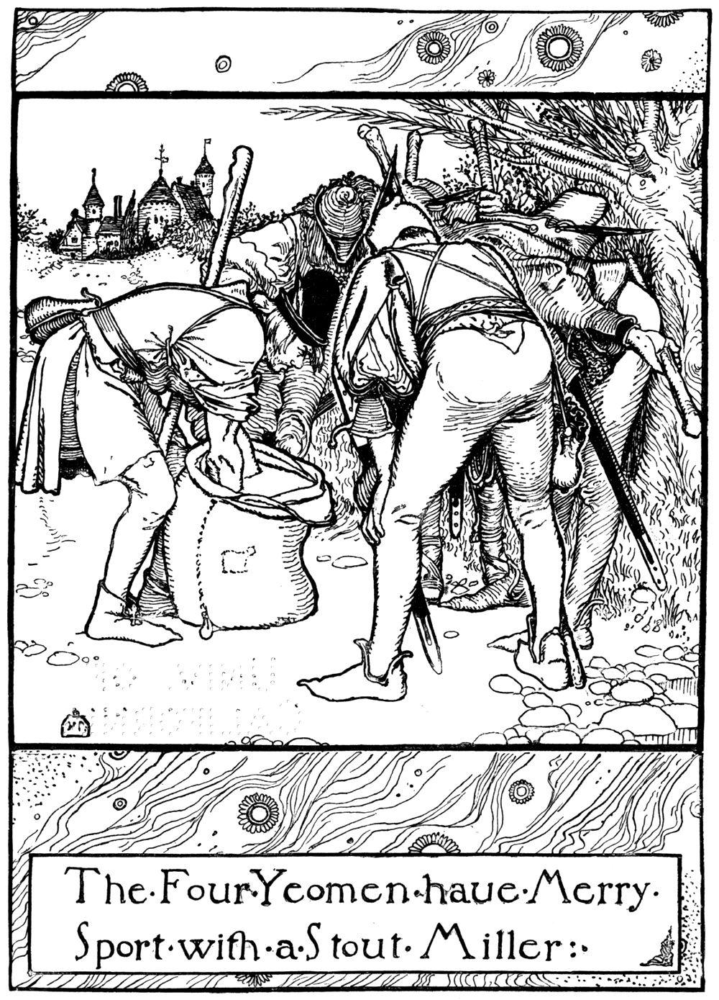
Then, while all four of them stumbled around, roaring at the sting of the meal in their eyeballs, and rubbing their eyes until their tears made great channels down through the meal on their faces, the Miller grabbed another handful of flour, and another, and another, and threw it in their faces. So even if they'd had a glimmer of light before, now they were as blind as any beggar in Nottinghamshire, while their hair and beards and clothes were as white as snow.
Then the Miller snatched up his great crab-apple staff and began laying about him as if he had gone completely mad. This way and that the four of them skipped, like peas bouncing on a drum, but they couldn't see either to defend themselves or to run away. Whack! whack! went the Miller's cudgel across their backs, and at every blow great white clouds of flour rose into the air from their jackets and went drifting away on the breeze.
"Stop!" roared Robin at last. "Give it up, good friend! I am Robin Hood!"
"You're a liar, you rascal!" cried the Miller, giving him a rap on the ribs that sent up a great cloud of flour like a puff of smoke. "Brave Robin never robbed an honest tradesman. Ha! So you'd like my money, would you?" And he gave him another blow. "No, you're not getting your share, you long-legged rascal. Share and share alike." And he hit Little John across the shoulders so hard that he sent him skipping halfway across the road. "No, don't worry, it's your turn now, Black Beard." And he gave the Tanner a crack that made him roar in spite of all his coughing. "Well now, Red Coat, let me brush the dust off you!" he cried, whacking Will Scarlet. And so he handed them out merry words and blows until they could hardly stand, and whenever he saw one of them about to clear his eyes, he threw more flour in his face. At last Robin Hood found his horn, clapped it to his lips, and blew three loud blasts on it.
Now, as luck would have it, Will Stutely and a party of Robin's men were in the glade not far from where all this merry sport was going on. Hearing the hubbub of voices, and blows that sounded like a flail beating grain in the barn in wintertime, they stopped, listening and wondering what was happening. "Now, unless I'm mistaken," said Will Stutely, "there's a good hard fight with cudgels going on not far from here. I'd like to see that pretty sight." With that, he and the whole party turned their steps toward the noise. When they had come close to where all the uproar was, they heard the three blasts of Robin's bugle horn.
"Quick!" cried young David of Doncaster. "Our master is in bad trouble!" So, without stopping for a moment, they dashed forward with all their might and burst out of the thicket onto the highway.
But what a sight they saw! The road was all white with meal, and five men stood there, also white with meal from head to toe, for a good deal of the barley flour had fallen back on the Miller himself.
"What do you need, master?" cried Will Stutely. "And what does all this mean?"
"Why," said Robin, in a towering rage, "that traitor of a fellow over there has come as close to killing me as any man in the whole world ever has. If you hadn't come so quickly, good Stutely, your master would be dead."
Then, while he and the other three rubbed the meal out of their eyes, and Will Stutely and his men brushed their clothes clean, Robin told them the whole story: how he had meant to play a joke on the Miller, and how it had turned around on them so painfully.
"Quick, men, grab that wicked Miller!" cried Stutely, who was nearly choking with laughter, and so were the rest. At that, several of them ran at the sturdy fellow, seized him, and tied his arms behind his back with bowstrings.
"Ha!" cried Robin, when they brought the trembling Miller to him. "So you'd murder me, would you? On my honor—" Here he stopped and stood glaring grimly at the Miller. But Robin's anger couldn't hold. First his eyes began to twinkle, and then, in spite of everything, he burst out laughing.
Now when the yeomen standing around saw their master laugh, they couldn't hold themselves in any longer, and a mighty shout of laughter went up from all of them. Many of them couldn't even stand, but rolled on the ground from sheer merriment.
"What's your name, good fellow?" Robin said to the Miller at last. The Miller was standing there gaping, as if he were in a daze.
"Oh, sir, I'm Midge, the Miller's son," he said in a frightened voice.
"I swear," said merry Robin, clapping him on the shoulder, "you're the mightiest Midge my eyes have ever seen!" (For a midge is the tiniest little fly there is.) "Now, will you leave your dusty mill and come and join my band? On my honor, you're too strong a man to spend your days between the grain hopper and the money box."
"Then truly, if you'll forgive me for the blows I struck, not knowing who you were, I'll join you, and gladly," said the Miller.
"Then today I've won," said Robin, "the three strongest yeomen in all Nottinghamshire. We'll head off to the greenwood tree and hold a merry feast there in honor of our new friends, and maybe a cup or two of good sack and canary will soften the soreness of my poor joints and bones, though I'll bet it will be many a day before I'm the man I was again." With that he turned and led the way, and the rest followed, and so they went into the forest once more and were lost to sight.
So that night the woods were all ablaze with crackling fires. For though Robin and the others I've told you about (all except Midge, the Miller's son) had plenty of sore bumps and bruises here and there on their bodies, they still weren't so stiff in the joints that they couldn't enjoy a jolly feast, held entirely to welcome the new members of the band. And so, with songs and jokes and laughter that echoed through the deeper and quieter corners of the forest, the night passed quickly by, as merry times like that always do, until at last each man went to his bed, and silence fell on everything, and all the world seemed to sleep.
But Little John's tongue was never easy to keep in check, so little by little the whole story of his fight with the Tanner, and of Robin's fight with Will Scarlet, leaked out. And so I've told it to you, so that you can laugh at the merry tale along with me.
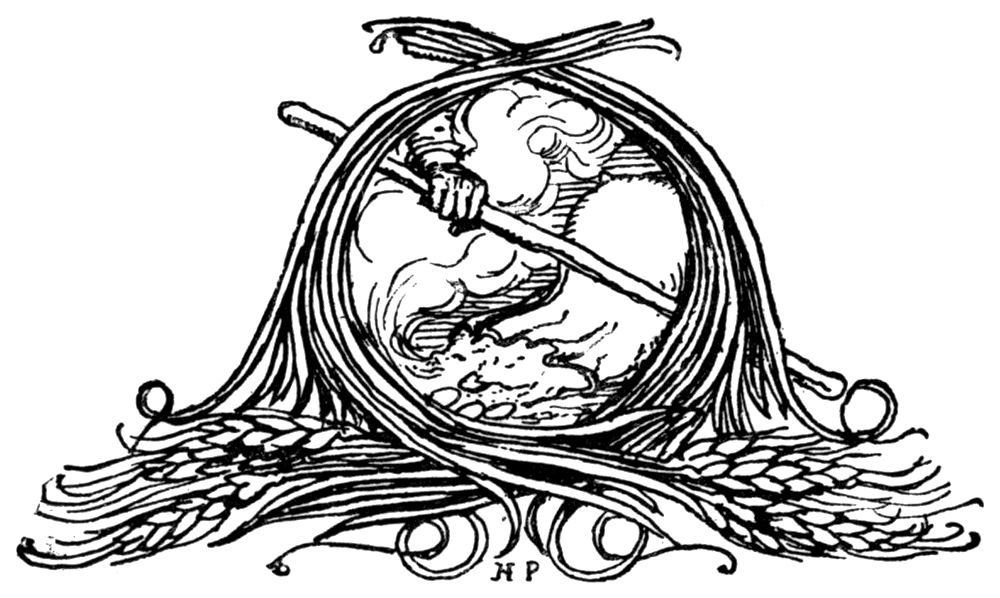
Part Four: Allan a Dale, the Curtal Friar, and a Wedding
Chapter 10: Robin Hood and Allan a Dale
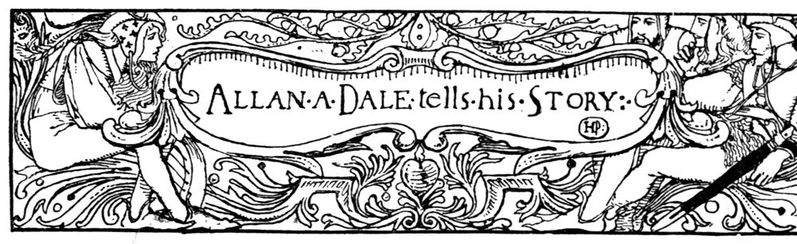
In which you will hear how Allan a Dale was brought to Robin Hood, who promised to help him in his trouble; how Robin went looking for the Curtal Friar of Fountain Abbey with that aim in mind; and how Robin Hood brought together two true lovers who would otherwise have been made unhappy all their lives.
You have just heard how three unlucky adventures fell on Robin Hood and Little John all in one day, bringing them sore ribs and aching bones. So next we will tell how they made up for those bad happenings with a good deed, which came about not without a little pain to Robin.
Two days had gone by, and some of the soreness had gone out of Robin Hood's joints. Still, whenever he moved suddenly and without thinking, a pain here and there would give him a nudge, as if to say, "You've had a beating, my good fellow."
The day was bright and cheerful, and the morning dew still lay on the grass. Under the greenwood tree sat Robin Hood. On one side of him Will Scarlet lay stretched out at full length on his back, gazing up into the clear sky, with his hands clasped behind his head. On the other side sat Little John, shaping a cudgel out of a stout branch of crab-apple wood. And all around on the grass sat or lay many others of the band.
"On my honor," said merry Robin, "it strikes me that we haven't had anyone to dinner with us for a long time. Our money is running low in the purse, because nobody has come to pay a bill for many a day. Now get yourself ready, good Stutely. Pick six men and go off to the Fosse Way or somewhere near it, and make sure you bring someone back to eat with us this evening. Meanwhile we'll get a grand feast ready, to do whoever comes all the more honor. And wait, good Stutely. I want you to take Will Scarlet with you, because it's right that he should learn the ways of the forest."
"Now I thank you, good master," said Stutely, springing to his feet, "for choosing me for this adventure. Truly, my arms and legs are getting slack from sitting around here doing nothing. As for two of my six, I'll choose Midge the Miller and Arthur a Bland, because, as you know very well, good master, they're strong fists with the quarterstaff. Isn't that so, Little John?"
At that everybody laughed except Little John and Robin, who screwed up his face. "I can speak for Midge," he said, "and for my nephew Scarlet too. This very blessed morning I looked at my ribs and found them as many colors as a beggar's patched cloak."
So, after choosing four more strong fellows, Will Stutely and his party set out for the Fosse Way, to see whether they might come across some rich guest to feast that day in Sherwood with Robin and his band.
All the long day they waited near this highway. Each man had brought along a good supply of cold meat and a bottle of strong March beer to keep his stomach quiet until they went home. So when high noon had come, they sat down on the soft grass under a green, wide-spreading hawthorn bush and held a hearty, jolly feast. After that, one kept watch while the others napped, for it was a still and sticky-hot day.
So they passed the time pleasantly enough, but no guest of the kind they wanted showed his face the whole time they lay hidden there. Plenty of people passed along the dusty road in the glare of the sun. Now it was a group of chattering young women, tripping merrily along; now it was a plodding tinker; now a merry shepherd boy; now a sturdy farmer; all of them gazing ahead along the road, with no idea that seven strong fellows were lying hidden so close to them. Those were the travelers on the road that day; but as for a fat abbot, a rich squire, or a moneylender loaded with cash, not one came along.
At last the sun began to sink low in the sky. The light grew red and the shadows grew long. The air filled with silence, the birds twittered sleepily, and from far away came, faint and clear, the musical song of the milkmaid calling the cows home for milking.
Then Stutely got up from where he was lying. "A plague on such bad luck!" he said. "Here we've waited all day, and not a bird worth shooting, so to speak, has come within reach of our arrows. If I'd gone out on some harmless errand, I'd have met a dozen fat priests or twenty puffed-up moneylenders. But it's always this way: the brown deer are never so scarce as when you've got a gray goose feather pinched between your fingers, ready to shoot. Come on, lads, let's pack up and go home, I say."
So the others got up, came out of the thicket, and all turned their toes back toward Sherwood. After they had gone some distance, Will Stutely, who was leading the party, suddenly stopped. "Shh!" he said, for his ears were as sharp as an old fox's. "Listen, lads! I think I hear something." At that they all stopped and listened, holding their breath, though for a while they couldn't hear a thing, because their ears weren't as sharp as Stutely's. At last they heard a faint, mournful sound, like someone crying in grief.
"Ha!" said Will Scarlet. "We have to look into this. There's someone in trouble close by."
"I don't know," said Will Stutely, shaking his head doubtfully. "Our master is always too quick to stick his finger into a boiling pot. But for my part, I don't see the point of getting ourselves tangled up in trouble. That's a man's voice, unless I'm mistaken, and a man ought to be able to get himself out of his own scrapes."
Then Will Scarlet spoke up boldly. "Shame on you for talking like that, Stutely! Stay here if you want to. I'm going to see what's troubling this poor creature."
"Hold on," said Stutely. "You jump so fast you'll tumble into the ditch. Who said I wasn't going? Come along, I say." And with that he led the way, and the others followed. After a short distance they came to a little opening in the woods, where a brook came gurgling out from under a tangle of overhanging bushes and spread out into a wide, glassy pool with a pebbly bottom. Beside this pool, under the branches of a willow, a young man lay face down on the ground, crying out loud; that was the sound that had first caught Stutely's sharp ears. His golden hair was tangled, his clothes were all in disorder, and everything about him spoke of sorrow and misery. Over his head, hanging from the branches of the willow, was a beautiful harp of polished wood, inlaid with gold and silver in fanciful patterns. Beside him lay a strong bow of ash wood and ten fine, smooth arrows.
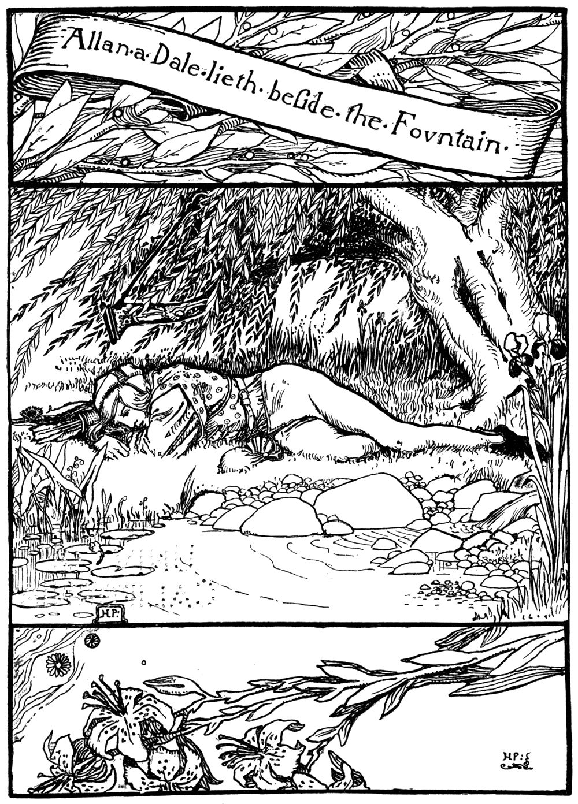
"Hello there!" shouted Will Stutely, when they had come out of the forest into the little clearing. "Who are you, fellow, lying there killing all the green grass with salt water?"
Hearing the voice, the stranger sprang to his feet, snatched up his bow, fitted an arrow to it, and stood ready for whatever harm might come his way.
"Why," said one of the yeomen, when they saw the young stranger's face, "I know that lad very well. He's a minstrel I've seen around here more than once. Only a week ago I saw him skipping across the hill like a young doe. He was a fine sight then, with a flower behind his ear and a rooster's feather stuck in his cap. But now, it seems to me, our little rooster has had his bright feathers plucked."
"Pah!" cried Will Stutely, going up to the stranger. "Wipe your eyes, man! I hate to see a tall, strong fellow sniveling like a girl of fourteen over a dead sparrow. Put down your bow, man! We don't mean you any harm."
But Will Scarlet saw how the stranger, who looked young and boyish, was stung by Stutely's words. So he went over and put his hand on the young man's shoulder. "Now, you're in trouble, poor boy!" he said kindly. "Don't mind what these fellows have said. They're rough, but they mean well by you. Maybe they don't understand a lad like you. You'll come with us, and perhaps we can find someone who can help you out of your troubles, whatever they may be."
"Yes, truly, come along," said Will Stutely gruffly. "I didn't mean you any harm, and I may mean you some good. Take your music box down off that pretty tree, and come away with us."
The young man did as he was told, and with his head bowed and his steps heavy with sorrow, he went along with the others, walking beside Will Scarlet. So they made their way through the forest. The bright light faded from the sky, and a glimmering gray settled over everything. From the deeper parts of the forest came the strange whispering sounds of nighttime; everything else was silent, except for the rustle of their footsteps through the crisp, dry leaves left over from last winter. At last a reddish glow shone out ahead of them here and there through the trees; a little farther on, they came to the open glade, now bathed in pale moonlight. In the middle of the clearing crackled a great fire, throwing a red glow over everything around it. At the fire juicy venison steaks were roasting, along with pheasants, fat chickens, and fresh fish from the river. The whole air was filled with the sweet smell of good things cooking.
The little party made its way across the glade. Many of the yeomen turned and stared after them curiously, but nobody spoke to them or asked them anything. So, with Will Scarlet on one side and Will Stutely on the other, the stranger came to the place where Robin Hood sat on a seat of moss under the greenwood tree, with Little John standing beside him.
"Good evening, my fine friend," said Robin Hood, getting up as the young man came near. "Have you come to feast with me today?"
"Oh, I don't know," said the lad, looking around him with dazed eyes, for he was bewildered by everything he saw. "Truly, I don't know whether I'm dreaming," he said to himself in a low voice.
"Why, no," said Robin, laughing. "You're awake, as you'll find out soon enough, because a fine feast is cooking for you. You're our guest of honor today."
The young stranger still looked around him as though he were in a dream. After a while he turned to Robin. "I think," he said, "I know now where I am and what has happened to me. Aren't you the great Robin Hood?"
"You've hit the bull's-eye," said Robin, clapping him on the shoulder. "People around here do call me by that name. And since you know me, you also know that whoever feasts with me has to pay the bill. I hope you've got a full purse with you, my fine stranger."
"Oh, no," said the stranger. "I have no purse and no money either, except for half of a sixpence. The other half is carried by my own dear love, hung around her neck on a silken thread, close to her heart."
At this a great shout of laughter went up from the men around them, and the poor boy looked as though he would die of shame. But Robin Hood turned sharply to Will Stutely. "Well, what's all this?" he said. "Is this the guest you've brought us to fill up our purse? It looks to me as though you've brought a pretty skinny rooster to market."
"No, good master," answered Will Stutely with a grin. "He's no guest of mine. It was Will Scarlet who brought him here."
Then Will Scarlet spoke up and told how they had found the lad in his sorrow, and how he had brought him to Robin, thinking that Robin might perhaps help him in his trouble. Then Robin Hood turned to the young man and, putting his hands on his shoulders, held him off at arm's length and studied his face closely.
"A young face," he said in a low voice, half to himself, "a kind face, a good face. It's as pure as a young girl's, and the handsomest my eyes have ever seen. But if I can judge fairly by your looks, grief comes to the young as well as to the old." At these words, spoken so kindly, the poor lad's eyes filled up with tears. "Now, now," said Robin quickly, "cheer up, lad. I'll bet your trouble isn't so bad that it can't be mended. What's your name?"
"My name is Allan a Dale, good master."
"Allan a Dale," Robin repeated, thinking it over. "Allan a Dale. It seems to me that name isn't altogether strange to my ears. Yes, surely you're the minstrel we've been hearing about lately, whose voice charms everybody who hears it. Don't you come from the Dale of Rotherstream, over beyond Stavely?"
"Yes, truly," answered Allan, "that's where I come from."
"How old are you, Allan?" said Robin.
"I'm only twenty years old."
"I'd say you're too young to be bothered by troubles," said Robin kindly. Then, turning to the others, he cried, "Come on, lads, hurry up and get our feast ready. Only you, Will Scarlet, and you, Little John, stay here with me."
Then, when the others had gone off, each man about his own business, Robin turned to the young man once more. "Now, lad," he said, "tell us your troubles, and speak freely. A flood of words always eases a sorrowful heart. It's like opening the overflow gate when the millpond is too full. Come, sit here beside me, and talk at your ease."
Then the young man told the three yeomen everything that was in his heart, right away; at first in broken words and scraps of sentences, and then freely and more easily when he saw that they were all listening closely to what he said. He told them how he had come from York to the sweet valley of the Rother, traveling all over the country as a minstrel, stopping now at a castle, now at a manor hall, and now at a farmhouse. He told how he had spent one sweet evening in a certain broad, low farmhouse, where he sang before a well-to-do farmer and a girl as pure and lovely as the first snowdrop of spring; how he had played and sung for her, and how sweet Ellen of the Dale had listened to him and had fallen in love with him. Then, in a low, sweet voice, hardly louder than a whisper, he told how he had watched for her and met her now and then when she went out, but had been far too shy in her sweet presence to speak to her, until at last, beside the banks of the Rother, he had told her of his love, and she had whispered something that made his heartstrings tremble with joy. Then they broke a sixpence in two between them and promised to be true to each other forever.
Next he told how her father had found out what was going on, and had taken her away from him, so that he never saw her again, and how his heart sometimes felt ready to break. And he told how this very morning, only a month and a half since the last time he had seen her, he had heard (and he knew it to be true) that she was to marry old Sir Stephen of Trent two days from now. For Ellen's father thought it would be a grand thing to have his daughter marry so far above her, even though she didn't want to. And no wonder, said Allan, that a knight should want to marry his own sweet love, who was the most beautiful girl in all the world.
The yeomen listened to all this in silence, while the clatter of many voices, joking and laughing, went on all around them, and the red light of the fire shone on their faces and in their eyes. The poor boy's words were so simple, and his sorrow so deep, that even Little John felt a hard lump rise in his throat.
"I'm not surprised," said Robin, after a moment's silence, "that your true love loved you, because you surely have a silver cross under your tongue, like good Saint Francis, who could charm the very birds of the air with his words."
"By the breath of my body," Little John burst out, trying to hide his feelings with angry words, "I've a good mind to go straight off and beat the nasty life out of that same wicked Sir Stephen. Well, listen to him, I say—what the plague—does a shriveled old man think that tender young girls can be bought like chickens on market day? Shame on him! I—but never mind; only let him look out for himself."
Then Will Scarlet spoke up. "It seems to me the girl hasn't behaved very well, changing her mind so quickly just because others tell her to, especially when it comes to marrying a man as old as this Sir Stephen. I don't like it in her, Allan."
"No," said Allan hotly, "you're doing her wrong. She's as soft and gentle as a dove. I know her better than anyone in the whole world. She may do as her father tells her, but if she marries Sir Stephen, her heart will break and she'll die. My own sweet dear, I—" He stopped and shook his head, because he couldn't say any more.
While the others were talking, Robin Hood had been deep in thought. "I think I have a plan that might fit your case, Allan," he said. "But tell me first, lad: do you think your true love has spirit enough to marry you, if the two of you were together in a church, with the banns read out (that is, the wedding announced to the parish, as the law required) and a priest ready, even if her father said no?"
"Yes, of course she would!" cried Allan eagerly.
"Then, if her father is the man I take him to be, I promise you he'll give you both his blessing as husband and wife, in place of old Sir Stephen, and on Sir Stephen's own wedding morning. But wait, now that I think of it, there's one thing I haven't counted on: the priest. Truly, the men of the church don't love me too much, and when it comes to doing what I want in a matter like this, they're just as likely as not to turn stubborn. As for the lesser clergy, they're afraid to do me a favor because of their abbots and bishops."
"Well," said Will Scarlet, laughing, "as far as that goes, I know a certain friar who, if you could only get on his soft side, would do your business for you even if Pope Joan herself (the woman who, an old story says, once sat on the Pope's throne) stood up to forbid it. He's known as the Curtal Friar of Fountain Abbey, and he lives in Fountain Dale."
"But," said Robin, "Fountain Abbey is a good hundred miles from here. If we want to help this lad, we don't have time to go there and back before his true love is married. There's nothing to be gained there, cousin."
"Yes," said Will Scarlet, laughing again, "but this Fountain Abbey isn't as far away as the one you're talking about, uncle. The Fountain Abbey I mean is no rich and proud place like the other one, just a simple little hermit's cell; but for all that, it's as cozy a spot as any good fat hermit ever lived in. I know the place well, and I can guide you there. It's a fair distance, but I think a strong pair of legs could carry a man there and back in one day."
"Then give me your hand, Allan," cried Robin, "and let me tell you this: I swear by the bright hair of Saint Elfrida that two days from now Ellen a Dale will be your wife. I'll go looking for this same Friar of Fountain Abbey tomorrow, and I'll bet I'll get on his soft side, even if I have to beat one soft."
At that Will Scarlet laughed again. "Don't be too sure of that, good uncle," he said. "Still, from what I know of him, I think this Curtal Friar will gladly marry two such fine lovers, especially if there's to be good eating and drinking afterward."
But now one of the band came to say that the feast was spread out on the grass. So, with Robin leading the way, the others followed to where the fine feast was laid. It was a merry meal. Jokes and stories went around freely, and everyone laughed until the forest rang with it. Allan laughed with the rest, for his cheeks were glowing with the hope that Robin Hood had given him.
At last the feast was over, and Robin Hood turned to Allan, who was sitting beside him. "Now, Allan," he said, "we've heard so much about your singing that we'd like a taste of your skill for ourselves. Won't you give us something?"
"Certainly," answered Allan, right away; for he was no third-rate singer who had to be asked over and over, but said "yes" or "no" the first time he was asked. So he picked up his harp and ran his fingers lightly over the sweet-sounding strings, and everyone around the feast fell silent. Then, with the sweet music of his harp under his voice, he sang:
May Ellen's Wedding
(Telling how she was loved by a fairy prince, who took her away to his own home.)
"May Ellen sat beneath a thorn,
And in a shower around
The blossoms fell at every breeze
Like snow upon the ground,
And in a lime tree near was heard
The sweet song of a strange, wild bird.
"O sweet, sweet, sweet, O piercing sweet,
O lingering sweet refrain!
May Ellen's heart within her breast
Stood still with blissful pain;
And so, with listening, upturned face,
She sat as still as death in that fair place.
"'Come down from out the blossoms, bird!
Come down from out the tree,
And on my heart I'll let you lie,
And love you tenderly!'
So cried May Ellen, soft and low,
From where the hawthorn shed its snow.
"Down dropped the bird on quivering wing,
From out the blossoming tree,
And nestled on her snowy breast.
'My love! my love!' cried she;
Then straight back home, through sun and flower,
She carried him to her own sweet bower.
"The day has passed to mellow night,
The moon rides high and free,
And in its solemn, pale white light
A youth stands silently:
A youth of beauty strange and rare,
Within May Ellen's bower there.
"He stood where on the floor so cold
The glimmering moonbeams lay.
May Ellen gazed with wide, scared eyes,
And could not turn away,
For, as in magic dreams we see
A spirit, so stood he silently.
"All in a low and breathless voice,
'Where are you from?' said she;
'Are you the creature of a dream,
Or a vision that I see?'
Then soft spoke he, as night winds shiver
Through bending reeds beside the river.
"'I came, a bird on feathered wing,
From distant Fairyland,
Where murmuring waters softly sing
Along the golden sand,
Where sweet trees are forever green;
And there my mother is the queen.'
. . . . . . .
"No more May Ellen leaves her bower
To grace the blossoms fair;
But in the hushed and midnight hour
They hear her talking there,
Or, when the moon is shining white,
They hear her singing through the night.
"'Oh, put on silks and jewels fine,'
May Ellen's mother said,
'For here comes riding the Lord of Lyne,
And you this lord must wed.'
May Ellen said, 'It cannot be.
He'll never find a wife in me.'
"Up spoke her brother, dark and grim:
'Now by the bright blue sky,
Before a day's gone by for him,
Your wicked bird shall die!
For he has done you bitter harm
By some strange art or cunning charm.'
"Then, with a sad and mournful song,
Away the bird flew high,
Up over the castle eaves, and through
The gray and windy sky.
'Come in!' then cried the brother grim,
'Why do you gaze so after him?'
"It is May Ellen's wedding day,
The sky is blue and fair,
And many a lord in bright array
In church is gathered there.
The bridegroom was Sir Hugh the Bold,
All dressed in silk and cloth of gold.
"In came the bride in silk of white
With a white wreath on her head;
Her eyes were fixed with a glassy look,
Her face was like the dead,
And when she stood among the throng,
She sang a wild and wondrous song.
"Then came a strange and rushing sound
Like the sound the wild winds bring,
And in through open windows shot
Nine swans on whistling wing,
And high above the heads they flew,
In gleaming flight the shadows through.
"Around May Ellen's head they flew
In wide and windy flight,
And three times round the circle drew.
The guests shrank back in fright,
And the priest beside the altar there
Crossed himself with a muttered prayer.
"But the third time they flew around,
Fair Ellen, she was gone,
And in her place, upon the ground,
There stood a snow-white swan.
Then, with a wild and lovely song,
It joined the swift and winged throng.
"There are old men who've weddings seen
For sixty years and more,
But such a wondrous wedding day
They never saw before.
But none could stop and none could stay
The swans that bore the bride away."
Not a sound broke the stillness when Allan a Dale had finished. Everyone sat gazing at the handsome singer, for his voice and his music were so sweet that each man sat holding his breath, in case one more drop should come and he should miss it.
"On my faith and honor," said Robin at last, drawing a deep breath, "lad, you're— You mustn't leave our company, Allan! Won't you stay with us here in the sweet green forest? Truly, I feel my heart go out to you with great love."
Then Allan took Robin's hand and kissed it. "I'll stay with you always, dear master," he said, "because I've never known such kindness as you've shown me today."
Then Will Scarlet reached out his hand and shook Allan's as a sign of friendship, and so did Little John. And that is how the famous Allan a Dale became one of Robin Hood's band.
Chapter 11: Robin Hood Goes Looking for the Curtal Friar
The strong yeomen of Sherwood Forest were always early risers, and most of all when summertime had come, because then, in the freshness of the dawn, the dew was always at its brightest and the song of the little birds at its sweetest.
"Well," said Robin, "now I'm going to go and look for this Friar of Fountain Abbey we were talking about last night. I'll take four of my good men with me, and those four will be Little John, Will Scarlet, David of Doncaster, and Arthur a Bland. The rest of you stay here, and Will Stutely will be your leader while I'm gone." Then right away Robin Hood put on a fine steel coat of chain mail, and over it a light jacket of Lincoln green. On his head he clapped a steel cap, and he covered that with one of soft white leather, with a nodding rooster's feather standing up in it. At his side he hung a good broadsword of tempered steel, its bluish blade engraved all over with strange figures of dragons, women with wings, and who knows what else. Robin made a splendid sight dressed like that, I can tell you, with a glint of steel showing here and there as the sunlight caught the links of polished mail peeping out from under his green coat.
So, once he was dressed, he and the four yeomen set off on their way, with Will Scarlet in the lead, since he knew better than the others where to go. Mile after mile they strode along: now across a noisy, tumbling stream; now along a sunny road; now down some sweet forest path where the trees met overhead in a green, rustling roof, and at the end of which a herd of startled deer went dashing away with a rattle of leaves and a crackle of branches. On they walked, with songs and jokes and laughter, until noon had come and gone. At last they reached the banks of a wide, glassy stream, dotted with lily pads. A broad, beaten path ran along the bank beside it. Horses usually labored along that path, towing slow-moving barges loaded with barley meal and the like from the countryside to the town with its many towers. But now, in the hot silence of midday, there was no horse to be seen, and no person either, except themselves. Behind them and ahead of them stretched the river, its calm surface ruffled here and there by a little breeze that left a dusky purple shadow on the water.
"Now, good uncle," said Will Scarlet at last, when they had walked a long way beside this sweet, bright river, "just beyond that bend ahead of us there's a shallow ford, a place to wade across that's nowhere deeper than the middle of your thigh. On the other side of the stream there's a little hermit's hut, hidden away in a tangle of thick bushes, and that's where the Friar of Fountain Dale lives. I'll lead you there, because I know the way, though it isn't very hard to find."
"Hold on," said jolly Robin, stopping short. "If I'd known I'd have to wade through water, even water as clear as crystal like this, I'd have put on different clothes from the ones I'm wearing. But never mind now. After all, a wetting won't wash your skin off, and what must be, must be. But you lads wait here, because I want to enjoy this merry adventure all by myself. All the same, listen carefully, and if you hear me blow my bugle horn, come quickly." And with that he turned and left them, striding on alone.
Robin had gone no farther than the bend in the road, just far enough to hide his good men from sight, when he suddenly stopped, because he thought he heard voices. He stood still and listened, and soon he heard words going back and forth between what seemed to be two men. And yet the two voices were wonderfully alike. The sound came from behind the bank, which was steep and high just there, dropping about ten feet from the edge of the road to the reedy edge of the river.
"That's strange," Robin muttered to himself after a while, when the voices had stopped talking. "There must surely be two people talking to each other, and yet it seems to me their voices are amazingly alike. I swear I've never heard anything like it in all my life. Really, if these two are to be judged by their voices, no two peas in a pod were ever more alike. I'm going to look into this." So saying, he crept softly to the river bank, lay down on the grass, and peered over the edge and down below.
Everything was cool and shady under the bank. A sturdy willow grew there, not straight up, but leaning out across the water, shading the spot with its soft leaves. All around grew a mass of feathery ferns, the kind that hide and nestle in cool places, and up to Robin's nose came the sweet smell of wild thyme, which loves the damp edges of running streams. Here, with his broad back against the rough trunk of the willow, and half hidden by the soft ferns around him, sat a sturdy, brawny fellow. And there was no other man there at all. His head was as round as a ball, and covered with a mat of short, curly black hair that grew low on his forehead. But the top of his head was shaved as smooth as the palm of your hand, and that, together with his loose robe, his hood, and his string of prayer beads, showed what his looks never would have told you: that he was a friar. His cheeks were as red and shiny as a crab apple in winter, even though they were nearly covered by a short, curly black beard, which covered his chin and upper lip as well. His neck was as thick as a bull's from the north country, and his round head sat close down on a pair of shoulders that were a match even for Little John's. Under his bushy black eyebrows danced a pair of little gray eyes that couldn't keep still, they were so full of fun. No one could look into his face without feeling his heartstrings tickled by the merriment in those eyes. Beside him lay a steel cap, which he had taken off to let the cool air get at the top of his head. His legs were stretched wide apart, and between his knees he held a great meat pie made of juicy meats of all sorts, flavored with tender young onions, the meat and the onions all mixed together in a good rich gravy. In his right fist he held a big piece of brown crust, which he munched on steadily, and every now and then he dug his left hand into the pie and pulled it out full of meat. Then, every so often, he would take a mighty swig from a big bottle of Malmsey wine that lay beside him.
"Upon my word," Robin said to himself, "I really do believe this is the merriest feast, the merriest fellow, the merriest place, and the merriest sight in all merry England. I thought there was someone else here, but it must have been this holy man talking to himself."
So Robin lay there watching the Friar, and the Friar, with no idea that anyone was looking down on him, calmly went on eating his meal. At last he was finished. First he wiped his greasy hands on the ferns and the wild thyme (and no king in all the world ever had a sweeter napkin). Then he picked up his bottle and began talking to himself as though he were another man, and answering himself as though he were somebody else.
"Dear lad, you're the sweetest fellow in the whole world, and I love you the way a young man loves his sweetheart. Oh, la, you make me blush, talking to me like that in this lonely place, with nobody around! And yet, if you really want me to say it, I love you just as much as you love me. Well, then, won't you have a drink of good Malmsey? After you, lad, after you. No, no, I beg you, sweeten the drink with your own lips first." (Here he passed the bottle from his right hand to his left.) "Well, if you're going to force it on me like that, I suppose I'll have to do what you say. And I'll do it all the more gladly, since I'm drinking to your very good health." (Here he took a long, deep swallow.) "And now, sweet lad, it's your turn." (Here he passed the bottle from his left hand back again to his right.) "I'll take it, my little chick, and here's wishing you as much good as you wish me." And as he said this he took another swallow. And honestly, he drank enough for two.
All this time merry Robin lay on the bank and listened, while his stomach shook so hard with laughter that he had to press his hand over his mouth to keep it from bursting out. Truly, he wouldn't have spoiled such a fine joke for half of Nottinghamshire.
When the Friar had gotten his breath back after his last swallow, he started talking again, like this: "Now, sweet lad, won't you sing me a song? Oh, la, I don't know. I'm not in good voice today. Please, don't ask me. Can't you hear how I croak like a frog? No, no, your voice is as sweet as any songbird's. Come on, sing, I beg you. I'd rather hear you sing than eat a fine feast. Oh, dear, I'd really rather not sing in front of someone who sings so well himself and has heard so many fine songs and ballads. But still, if you insist, I'll do my best. But you know, I think you and I might sing some pretty song together. Don't you know a certain sweet little song called 'The Loving Youth and the Scornful Maid'? Why, yes, I think I've heard it before now. Then don't you think you could take the girl's part if I take the boy's? I don't know, but I'll try. You start off with the boy, and I'll follow with the girl."
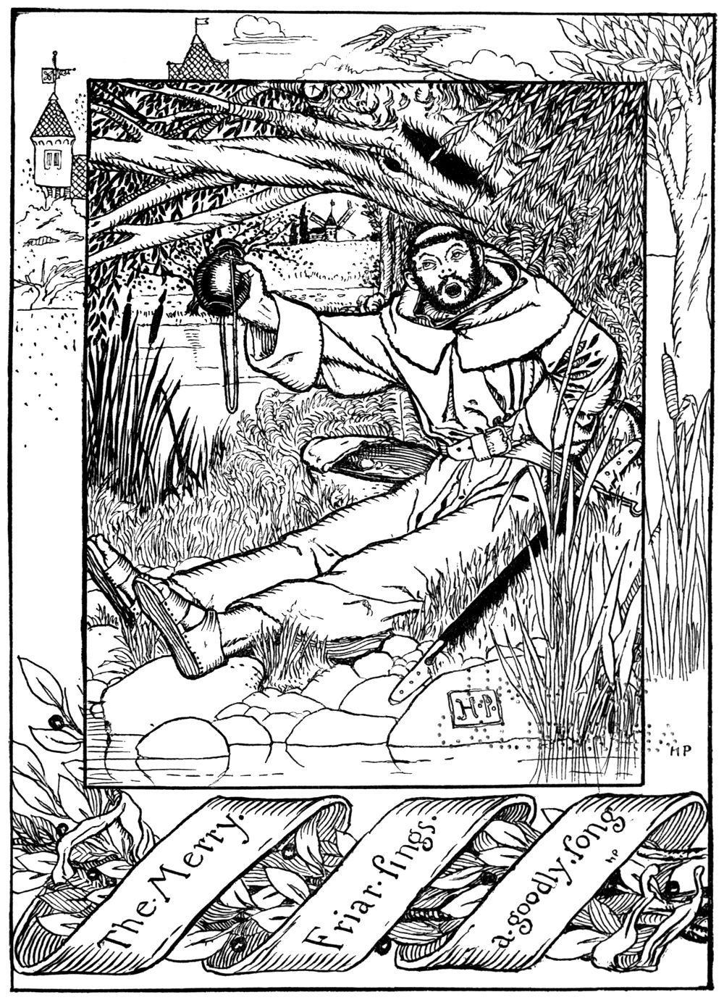
Then, singing first in a deep, gruff voice and then in a high, squeaky one, he merrily rolled out the jolly song of
The Loving Youth and the Scornful Maid
He
"Oh, won't you come along with me, my love?
And won't you, love, be mine?
For I will give to you, my love,
Bright bows and ribbons so fine.
I'll kneel to you, love, the whole day through,
And I'll pipe sweet songs to none but you.
Then it's hark! hark! hark!
To the soaring lark,
And it's hark to the cooing dove!
And the bright daffodil
Grows by the brook down the hill,
So come and be my love.
She
"Now go on away, young man so fine;
Now go on away, I say;
For you'll never have this heart of mine,
And so you had better not stay.
You're not a fine enough lad for me,
So I'll wait till a better young man I see.
For it's hark! hark! hark!
To the soaring lark,
And it's hark to the cooing dove!
And the bright daffodil
Grows by the brook down the hill,
But I'll never be your love.
He
"Then straight I'll go seek for another fair maid,
For many a lass can be found,
And since you want nothing of me, I'm afraid
By you I will never be bound.
For there's never a flower in the field so rare
But others are found that are just as fair.
So it's hark! hark! hark!
To the joyful lark,
And it's hark to the cooing dove!
And the bright daffodil
Grows by the brook down the hill,
And I'll find me another dear love.
She
"Young man, don't turn so quickly away
Another fair lass to find.
I think I have spoken in haste today,
And I haven't made up my mind,
And if you will only stay with me,
Your own true love I'll always be."
At this point Robin couldn't hold it in any longer, and he burst out in a mighty roar of laughter. Then, since the holy Friar kept right on with the song, Robin joined in the chorus, and together they sang, or you might say bellowed:
"So it's hark! hark! hark!
To the joyful lark,
And it's hark to the cooing dove!
For the bright daffodil
Grows by the brook down the hill,
And I'll be your own true love."
So they sang together. The sturdy Friar didn't seem to have heard Robin's laughter, and he didn't seem to notice that the yeoman had joined in the song either. With his eyes half closed, staring straight ahead and wagging his round head from side to side in time to the music, he kept bravely on to the end, and he and Robin finished up together with a mighty roar that could have been heard a mile away. But no sooner was the last word sung than the holy man grabbed his steel cap, clapped it on his head, and sprang to his feet, crying in a great voice, "What spy have we got here? Come out, you limb of the devil, and I'll chop you up into pudding meat as fine as any housewife in Yorkshire ever cooked on a Sunday!" And with that he pulled out from under his robes a great broadsword, every bit as sturdy as Robin's.
"Now, now, put away your little poking-iron, friend," said Robin, standing up with the tears of laughter still on his cheeks. "People who have sung so sweetly together shouldn't fight afterward." With that he jumped down the bank to where the other man stood. "I tell you, friend," he said, "that song has left my throat as dry as a field of barley stubble in October. Do you happen to have any Malmsey left in that sturdy jug of yours?" (It was a pottle, a jug that holds half a gallon.)
"Well, really," said the Friar in a glum voice, "you invite yourself pretty freely where nobody asked you. Still, I hope I'm too good a Christian to refuse a drink to any man who's thirsty. Such as there is of it, you're welcome to a drink." And he held the pottle out to Robin.
Robin took it without any more fuss, put it to his lips, and tipped back his head, while what was inside went "glug! lug! glug!" for longer than three blinks of an eye, I can tell you. The sturdy Friar watched Robin anxiously the whole time, and when he was done, the Friar snatched the pottle back. He shook it, held it up between his eyes and the light, gave the yeoman a reproachful look, and at once put it to his own lips. When he took it away again there was nothing left inside.
"Do you know the country around here, you good and holy man?" asked Robin, laughing.
"Yes, somewhat," answered the other dryly.
"And do you know of a certain place called Fountain Abbey?"
"Yes, somewhat."
"Then maybe you also know of a certain man who goes by the name of the Curtal Friar of Fountain Abbey." (A curtal friar is a friar who wears his robe cut short, above the ankle, instead of trailing on the ground.)
"Yes, somewhat."
"Well then, good fellow, holy father, or whatever you are," said Robin, "I'd like to know whether this Friar can be found on this side of the river or on the other."
"That," said the Friar, "is a practical question, and the clever rules of logic have nothing to do with it. I advise you to find it out with the help of your own five senses: sight, touch, and so on."
"I'd very much like," said Robin, looking thoughtfully at the sturdy priest, "to cross that ford over there and try to find this good Friar."
"Truly," said the other in a pious voice, "that is a fine wish for one so young. Far be it from me to stop you on so holy a quest. Friend, the river is free to all."
"Yes, good father," said Robin, "but you can see that my clothes are of the finest, and I'd hate to get them wet. Your shoulders look strong and broad to me. Couldn't you find it in your heart to carry me across?"
"Now, by the white hand of the holy Lady of the Fountain!" burst out the Friar in a tremendous rage. "Do you, you poor puny boy, you prissy, simpering popinjay, you, you, what shall I call you? Do you dare to ask me, the holy Tuck, to carry you? Now I swear—" Here he stopped short. Then, slowly, the anger faded from his face, and his little eyes twinkled once more. "But why shouldn't I?" he said piously.
"Didn't the holy Saint Christopher always carry strangers across the river? And should I, poor sinner that I am, be ashamed to do the same? Come with me, stranger, and I'll do what you ask, in a humble frame of mind." And with that he clambered up the bank, with Robin close behind him, and led the way to the shallow, pebbly ford, chuckling to himself all the while as though he were enjoying some fine private joke.
When they reached the ford, he hitched his robes up around his waist, tucked his good broadsword under his arm, and bent his back to take Robin on it. Then suddenly he straightened up again. "I think," he said, "you'll get your weapon wet. Let me tuck it under my arm along with my own."
"No, good father," said Robin, "I wouldn't want to burden you with anything of mine except myself."
"Do you think," said the Friar mildly, "that the good Saint Christopher would have looked after his own comfort like that? No, give me your tool as I tell you, because I want to carry it as a punishment for my pride."
At that, without any more fuss, Robin Hood unbuckled his sword from his side and handed it to the Friar, who tucked it under his arm along with his own. Then the Friar bent his back once more, and when Robin had climbed onto it, he stepped sturdily into the water and strode along, splashing through the shallows and breaking the smooth surface into wider and wider rings. At last he reached the other side, and Robin hopped lightly down off his back.
"Many thanks, good father," said Robin. "You really are a good and holy man. Now please give me my sword and let me be on my way, because I'm in a hurry."
At this the sturdy Friar looked at Robin for a long time, with his head on one side and a very sly twist to his face. Then he slowly winked his right eye. "No, good youth," he said gently. "I don't doubt you're in a hurry about your own business, but you don't give a thought to mine. Your business is of an earthly sort. Mine is of a spiritual sort, a holy work, you might say. What's more, my business happens to lie on the other side of this stream. I can tell from your search for this holy hermit that you're a good young man, with great respect for us churchmen. I got wet coming over here, and I'm terribly afraid that if I waded through the water again I might get cricks and pains in my joints that would spoil my prayers for many a day to come. I know that, since I've so humbly done what you asked, you'll carry me back again. You see how Saint Godrick, that holy hermit whose feast day this is, has put two swords into my hands and not a single one into yours. So let yourself be persuaded, good youth, and carry me back again."
Robin Hood looked up and he looked down, biting his lower lip. "You cunning Friar," he said, "you've caught me fair and square. I'll tell you this: no churchman has ever fooled me like this in all my life before. I should have known from your looks that you were no such holy man as you pretended to be."
"Now, now," the Friar broke in, "I'd advise you not to talk so rudely, either, or you might just feel the prick of an inch or so of blue steel."
"Tut, tut," said Robin, "don't talk like that, Friar. The loser always has the right to use his tongue however he likes. Give me my sword. I promise to carry you back right away. No, I won't raise the weapon against you."
"Well, listen to him!" said the Friar. "I'm not afraid of you, fellow. Here's your skewer. Now get yourself ready quickly, because I want to hurry back."
So Robin took his sword again and buckled it at his side. Then he bent his strong back and took the Friar up on it.
Now, I can tell you, Robin Hood had a much heavier load to carry in the Friar than the Friar had had in him. What's more, he didn't know the ford, so he went stumbling among the stones, now stepping into a deep hole, now nearly tripping over a boulder, while the sweat ran down his face in beads from the hard going and the weight of his load. Meanwhile, the Friar kept digging his heels into Robin's sides and telling him to hurry, calling him all sorts of nasty names as he did. Robin answered not a single word to any of it. Instead, he felt around quietly until he found the buckle of the belt that held the Friar's sword, and he worked away slyly at the fastening, trying to loosen it. And so it happened that by the time he reached the other bank with his load, the Friar's sword belt was loose, though the Friar didn't know it. So when Robin stood on dry land and the Friar jumped down off his back, the yeoman grabbed hold of the sword, and blade, sheath, and strap all came away from the holy man together, leaving him without a weapon.
"Now then," said merry Robin, panting as he spoke and wiping the sweat from his forehead, "I've got you, fellow. This time that same saint you were talking about just now has put two swords into my hand and taken yours away from you. Now, if you don't carry me back, and quickly, I swear I'll prick your skin until it's as full of holes as a fancy slashed jacket."
The good Friar didn't say a word for a while, but he gave Robin a grim look. "Well," he said at last, "I thought your wits were the slow sort, and I didn't know you were so cunning. Truly, you've got me pinned. Give me my sword, and I promise not to draw it against you except in self-defense. I also promise to do what you ask, and take you on my back and carry you."
So jolly Robin gave him back his sword, and the Friar buckled it to his side, and this time he made sure it was fastened more securely. Then he tucked up his robes once more, took Robin Hood up on his back, and without a word stepped into the water. He waded on in silence while Robin sat laughing on his back. At last he reached the middle of the ford, where the water was deepest. There he stopped for a moment, and then, with a sudden lift of his hand and a heave of his shoulders, he shot Robin clean over his head as though he were a sack of grain.
Down went Robin into the water with a mighty splash. "There," said the holy man, calmly turning back toward the shore, "let that cool your hot temper, if it can."
Meanwhile, after a lot of splashing, Robin had gotten to his feet, and he stood looking about him, completely bewildered, with the water running off him in pretty little streams. At last he shook the water out of his ears and spat some out of his mouth, and, gathering his scattered wits together, he saw the sturdy Friar standing on the bank, laughing. Then, I can tell you, Robin Hood was a furious man. "Stay there, you villain!" he roared. "I'm coming straight after you, and if I don't carve you up like a joint of meat today, may I never lift a finger again!" And with that he dashed, splashing, toward the bank.
"You don't need to hurry yourself too much," said the sturdy Friar. "Don't worry. I'll wait right here. And if you're not crying 'Oh, woe is me!' before very long, may I never again peep through the bushes at a fallow deer."
And now Robin reached the bank and, without any more fuss, began to roll his sleeves up above his wrists. The Friar, too, tucked his robes up tighter about him, showing a great, strong arm on which the muscles stood out like the knobs on an old tree. Then Robin saw something he hadn't known before: the Friar also wore a coat of chain mail under his gown.
"Look out for yourself!" cried Robin, drawing his good sword.
"Oh, I will," said the Friar, who already had his own sword in his hand. So, without any more fuss, they came together, and then began a fierce and mighty battle. Right and left, up and down, back and forth they fought. The swords flashed in the sun and then met with a clash that rang out far and near. I can tell you, this was no playful bout with quarterstaffs, but a grim and serious fight in deadly earnest. They kept at it like this for an hour or more, stopping every now and then to rest. At those times each looked at the other in amazement, and thought he had never seen such a strong fellow. Then they would go at it again more fiercely than ever. And yet in all that time neither one had hurt the other or drawn a single drop of blood. At last merry Robin cried, "Hold your hand, good friend!" and they both lowered their swords.
"Now I ask a favor before we start again," said Robin, wiping the sweat from his forehead. For they had fought so long that he was beginning to think it would be a bad business either to be struck down himself or to strike down so strong and brave a fellow.
"What do you want of me?" asked the Friar.
"Only this," said Robin, "that you'll let me blow three times on my bugle horn."
The Friar knitted his brows and looked shrewdly at Robin Hood. "Now I truly think you've got some sly trick up your sleeve here," he said. "Still, I'm not afraid of you, and I'll let you have your wish, as long as you'll also let me blow three times on this little whistle."
"With all my heart," said Robin. "So, here goes for one." And with that he raised his silver horn to his lips and blew three times on it, clear and high.
Meanwhile the Friar stood watching sharply to see what would happen, holding in his fingers a pretty silver whistle, the kind knights use to call their hawks back to their wrists. It always hung at his belt alongside his prayer beads.
The echo of the last note of Robin's bugle had hardly come winding back from across the river when four tall men in Lincoln green came running around the bend in the road, each with a bow in his hand and an arrow already fitted to the string.
"Ha! So that's your game, you traitor, you rascal!" cried the Friar. "Then, by heaven, look out for yourself!" And with that he clapped the hawk whistle to his lips at once and blew a blast both loud and shrill. And now there came a crackling in the bushes that lined the other side of the road, and out of the thicket burst four great, shaggy hounds. "Get him, Sweet Lips! Get him, Bell Throat! Get him, Beauty! Get him, Fangs!" cried the Friar, pointing at Robin.
And now it was lucky for that yeoman that a tree stood close by him at the side of the road, or he would have been in a bad way. Before you could say "Gaffer Downthedale," the hounds were on him, and he only had time to drop his sword and spring lightly up into the tree. The hounds gathered around it, looking up at him as though he were a cat on a rooftop. But the Friar quickly called his dogs off. "Get them!" he cried, pointing down the road to where the yeomen were standing stock-still, amazed at what they saw. As a hawk swoops down on its prey, so the four dogs raced at the yeomen. But when the four men saw the hounds coming at them like that, all of them together, except only Will Scarlet, drew back the goose feathers to their ears and let their arrows fly.
And now the old ballad tells of a wonderful thing that happened. For it says that each dog that was shot at leaped lightly aside, and as the arrow went whistling past, caught it in his mouth and bit it in two. Now it would have been a bad day for these four good fellows if Will Scarlet hadn't stepped out in front of the others and met the hounds as they came rushing in. "Why, what's this, Fangs?" he cried sternly. "Down, Beauty! Down, sir! What do you mean by this?"
At the sound of his voice each dog shrank back quickly, and then came straight up to him and licked his hands and fawned over him, the way dogs do when they meet someone they know. Then the four yeomen came forward, with the hounds leaping happily around Will Scarlet. "Why, what's this?" cried the sturdy Friar. "What does this mean? Are you a wizard, to turn those wolves into lambs? Ha!" he cried, when they had come still closer. "Can I believe my eyes? What does it mean that I see young Master William Gamwell in such company?"
"No, Tuck," said the young man, as the four came up to where Robin was now climbing down from the tree he'd been roosting in, since he could see that all danger was over for the time being. "No, Tuck, my name isn't Will Gamwell anymore. It's Will Scarlet. And this is my good uncle, Robin Hood, whom I'm staying with just now."
"Truly, good master," said the Friar, looking rather sheepish and holding out his great palm to Robin, "I've often heard your name, both in songs and in talk, but I never thought I'd meet you in a fight. I beg your pardon, and I'm not surprised I found so strong a man against me."
"Truly, most holy father," said Little John, "I'm more thankful than I've ever been in all my life that our good friend Scarlet knew you and your dogs. I tell you seriously, I felt my heart crumble away inside me when I saw my arrow miss like that, and those great beasts of yours coming straight at me."
"You may well be thankful, friend," said the Friar gravely. "But, Master Will, how is it that you're living in Sherwood now?"
"Why, Tuck, haven't you heard about my bad luck with my father's steward?" answered Scarlet.
"Yes, I have. But I didn't know you were in hiding because of it. My goodness, the times have gone all wrong when a gentleman has to hide away for such a little thing."
"But we're wasting time," said Robin, "and I still have to find that same Curtal Friar."
"Why, uncle, you don't have far to go," said Will Scarlet, pointing at the Friar, "because there he stands, right beside you."
"What?" said Robin. "Are you the man I've taken such pains to look for all day, and got such a ducking for?"
"Why, yes," said the Friar modestly. "Some people call me the Curtal Friar of Fountain Dale. Others call me, as a joke, the Abbot of Fountain Abbey. And still others call me plain Friar Tuck."
"I like the last name best," said Robin, "because it slips off the tongue more easily. But why didn't you tell me you were the man I was looking for, instead of sending me off hunting for black moonbeams?"
"Why, truly, you never asked me, good master," said sturdy Tuck. "But what was it you wanted of me?"
"Not now," said Robin. "The day's getting late, and we can't stand here talking any longer. Come back with us to Sherwood, and I'll explain everything to you as we go along."
So, without waiting any longer, they all set off, with the sturdy dogs at their heels, and made their way back to Sherwood again. But it was long past nightfall before they reached the greenwood tree.
Now listen, because next I'll tell you how Robin Hood brought about the happiness of two young lovers, with the help of the merry Friar Tuck of Fountain Dale.
Chapter 12: Robin Hood Arranges a Wedding
And now the morning had come when fair Ellen was to be married: the morning on which merry Robin had sworn that Allan a Dale should, as you might say, eat off the plate that had been filled for Sir Stephen of Trent. Up got Robin Hood, bright and cheerful; up got his merry men, every one; and up got last of all the sturdy Friar Tuck, blinking the sting of sleep out of his eyes. Then, while the air seemed to brim over with the songs of a great many birds, all blended together and all rejoicing in the misty morning, each man washed his face and hands in the leaping brook, and so the day began.
"Now," said Robin, when they had eaten breakfast and each man had had his fill, "it's time for us to set out on the business we have in hand today. I'll pick out twenty of my good men to come with me, because I may need help. And you, Will Scarlet, will stay here and be the leader while I'm gone." Then he looked through the whole band, every man of them crowding forward, eager to be chosen, and Robin called out the ones he wanted by name until he had twenty sturdy fellows, the very pick of all his yeomen. Besides Little John and Will Stutely, there were nearly all those famous lads I've already told you about. Then, while the chosen men ran off, leaping with joy, to arm themselves with bows and arrows and broadswords, Robin Hood stepped aside into the bushes. There he put on a bright coat all covered in ribbons, the kind a wandering minstrel might wear, and slung a harp across his shoulder, to play the part all the better.
The whole band stared, and a good many of them laughed, because they had never seen their master in such a fantastic getup before.
"Well," said Robin, holding up his arms and looking down at himself, "I do think it's a bit of a bright, gaudy, grasshopper sort of outfit. But it's a pretty thing all the same, and it doesn't look bad on a fellow with my looks, even though I'm only wearing it for the occasion. But wait, Little John. Here are two bags I want you to carry in your pouch, to keep them safe. I can hardly look after them myself under all this patchwork."
"Why, master," said Little John, taking the bags and weighing them in his hand, "I hear the chink of gold in here."
"Well, what if there is?" said Robin. "It's my own money, and the band is none the worse for what's in there. Come on, lads, get moving," he said, and he turned quickly away. "Get ready right now." Then he gathered the twenty together in a close group, with Allan a Dale and Friar Tuck in the middle, and led them out of the shade of the forest and on their way.
So they walked on for a long time, until they had come out of Sherwood and into the valley of the Rotherstream. Here there were very different sights from the ones in the forest: hedgerows; broad fields of barley; pastures rolling upward until they met the sky, all dotted over with flocks of white sheep; and hayfields giving off the smell of new-mown hay, which lay in smooth rows with swifts skimming over them in quick flight. Those were the things they saw, and they were different, I can tell you, from the tangled depths of the sweet woodlands, but every bit as lovely. So Robin led his band along, walking cheerfully with his chest out and his head thrown back, sniffing the smells of the gentle breeze that came drifting over the hayfields.
"Really," he said, "the dear world is as lovely here as it is in the shade of the woods. Who calls it a valley of tears? I think it's only the darkness in our own minds that brings gloom to the world. What does that merry song of yours say, Little John? Doesn't it go like this?
"For when my love's eyes shine, they shine,
And when her lips smile so rare,
The day it is jolly and fine, so fine,
Whether it's wet or it's fair.
And when the strong ale is all flowing so fast,
Our sorrows and troubles are things of the past."
"Now, now," said Friar Tuck piously, "you people think about worldly things and nothing else. And yet, truly, there are better protections against worry and woe than drinking ale and gazing at bright eyes. I mean fasting and prayer. Look at me. Do I look like a sorrowful man?"
At this a great shout of laughter went up from everyone around, because the night before, the sturdy Friar had emptied twice as many mugs of ale as any one of the merry men.
"Truly," said Robin, when he could speak for laughing, "I'd say your sorrows are just about equal to your goodness."
So they marched along, talking, singing, joking, and laughing, until they came to a certain little church that belonged to the great lands owned by the rich Priory of Emmet. This was where fair Ellen was to be married that morning, and this was the spot the yeomen had been heading for. On the other side of the road from the church, which stood with fields of barley waving all around it, a stone wall ran along the roadside. On the far side of the wall from the highway was a fringe of young trees and bushes, and here and there the wall itself was covered with a mass of blossoming honeysuckle, which filled all the warm air far and near with its sweet summer smell. Right away the yeomen leaped over the wall and landed in the tall, soft grass on the other side, scaring a flock of sheep that lay there in the shade, so that they scampered off in every direction. Here was a sweet, cool shade, both from the wall and from the pretty young trees and bushes, and here the yeomen sat down, and they were glad enough to rest after their long tramp that morning.
"Now," said Robin, "I want one of you to keep watch and tell me when he sees anyone coming to the church, and the one I choose is young David of Doncaster. So get up on the wall, David, and hide under the honeysuckle, so you can keep a lookout."
So young David did as he was told, while the others stretched out at full length on the grass, some talking together and others sleeping. Then everything was quiet, except for the low voices of the ones who were talking, and Allan's restless footsteps pacing up and down, because his heart was so full of worry that he couldn't stand still. And there was also the mellow snoring of Friar Tuck, who enjoyed his sleep with a noise like someone sawing soft wood very slowly. Robin lay on his back and gazed up into the leaves of the trees, his thoughts miles away, and so a long time passed.
Then Robin spoke up. "Now tell us, young David of Doncaster, what do you see?"
And David answered, "I see the white clouds floating, and I feel the wind blowing, and three black crows are flying over the open hills. But I see nothing else, good master."
So silence fell again and more time passed, broken only by the sounds I've told you about, until Robin grew impatient and spoke again. "Now tell me, young David, what do you see by now?"
And David answered, "I see the windmills turning, and three tall poplar trees swaying against the sky, and a flock of thrushes flying over the hill. But I see nothing else, good master."
So more time passed, until at last Robin asked young David once again what he saw. And David said, "I hear the cuckoo singing, and I see how the wind makes waves in the barley field. And now an old friar is coming over the hill to the church, and he's carrying a great bunch of keys in his hands. And look! Now he's coming to the church door."
Then Robin Hood jumped up and shook Friar Tuck by the shoulder. "Come on, wake up, holy man!" he cried, and with a lot of grunting the sturdy Tuck got to his feet. "Why, stir yourself," said Robin, "because over there, in the church door, is one of your own kind. Go and talk to him, and get yourself into the church that way, so you'll be there when you're needed. Meanwhile, Little John, Will Stutely, and I will follow you in a little while."
So Friar Tuck clambered over the wall, crossed the road, and came to the church, where the old friar was still struggling with the great key, since the lock was rather rusty and he was rather old and feeble.
"Hello there, brother," said Tuck, "let me help you." And with that he took the key out of the other man's hand and opened the door quickly with one turn of it.
"Who are you, good brother?" asked the old friar in a high, wheezy voice. "Where do you come from, and where are you going?" And he winked and blinked at sturdy Friar Tuck like an owl in the sunshine.
"I'll answer your questions this way, brother," said the other. "My name is Tuck, and I'm going no farther than this spot, if you'll be kind enough to let me stay while this wedding is going on. I come from Fountain Dale, and, truth to tell, I'm a sort of poor hermit, you might say, because I live in a cell beside the spring that was blessed by the holy Saint Ethelrada. But if I understand rightly, there's to be a fine wedding here today. So, if you don't mind, I'd like to rest in the cool shade inside, because I'd love to see this fine sight."
"You're very welcome, brother," said the old man, leading the way in. Meanwhile, Robin Hood, dressed up as a harper, had come to the church together with Little John and Will Stutely. Robin sat down on a bench beside the door, but Little John, who was carrying the two bags of gold, went inside, and so did Will Stutely.
So Robin sat by the door, looking up the road and down the road to see who might be coming. After a while he saw six horsemen riding along slowly and solemnly, as was proper for them, because they were churchmen of high rank. When they came closer, Robin saw who they were, and he knew them. The first was the Bishop of Hereford, and he cut a fine figure, I can tell you. His robes were of the richest silk, and around his neck hung a handsome chain of beaten gold. The cap that covered the shaved spot on top of his head was of black velvet, and all around its edges were rows of jewels set in gold that flashed in the sunlight. His stockings were of flame-colored silk, and his shoes were of black velvet, with long pointed toes that were turned up and tied to his knees, and on top of each foot a cross was embroidered in gold thread. Beside the Bishop rode the Prior of Emmet on a dainty-stepping riding horse. His clothes were rich too, but not as showy as the stout Bishop's. Behind them came two of the senior monks of Emmet, and behind them again two of the Bishop's servants. For the Lord Bishop of Hereford tried to be as much like the great barons as anyone in the Church possibly could.
When Robin saw this procession coming nearer, with its flash of jewels and silk and the jingle of silver bells on the horses' harness, he looked at it sourly. He said to himself, "That Bishop is far too fancy for a holy man. I wonder whether his patron saint, who I believe was Saint Thomas, used to wear gold chains around his neck, silk clothes on his body, and pointed shoes on his feet. And all of it, God knows, paid for with money squeezed out of the sweat of poor tenant farmers. Bishop, Bishop, your pride may take a fall before you know it."
So the holy men came to the church, the Bishop and the Prior joking and laughing together about certain pretty ladies, and their talk, it seems to me, was better suited to ordinary men than to churchmen. Then they got down off their horses, and the Bishop, looking around, soon caught sight of Robin standing in the doorway. "Hello there, my good fellow," he said in a jolly voice. "Who are you, strutting about in such bright feathers?"
"I'm a harper from the north country," said Robin, "and I can play the strings, believe me, as no other man in all merry England can. Truly, good Lord Bishop, many a knight and townsman, churchman and plain man, has danced to my music, whether he wanted to or not, and usually very much against his will. That's the magic of my harping. Now, my Lord Bishop, if I'm allowed to play at this wedding today, I promise I'll make the lovely bride love the man she marries with a love that will last as long as the two of them live together."
"Ha! Is that so?" cried the Bishop. "Do you really mean it?" And he looked hard at Robin, who looked boldly back into his eyes. "Now, if you'll make this girl (who has truly bewitched my poor cousin Stephen) love the man she's going to marry like that, the way you say you can, I'll give you whatever you ask of me, within reason. Let me have a taste of your skill, fellow."
"No," said Robin, "my music doesn't come unless I choose, not even at a lord bishop's command. Honestly, I won't play until the bride and bridegroom come."
"Now, you're a cheeky rascal to talk to someone of my rank like that," said the Bishop, frowning at Robin. "Still, I suppose I'll have to put up with you. Look, Prior, here comes our cousin Sir Stephen, with his lady love."
And now, around the bend of the highway, came others, on horseback. The first of all was a tall, thin man with the bearing of a knight, dressed all in black silk, with a black velvet cap on his head, turned up with scarlet. Robin looked, and he had no doubt this was Sir Stephen, both from his knightly way of carrying himself and from his gray hair. Beside him rode a stout Saxon franklin (that is, a well-to-do farmer who owned his own land), Ellen's father, Edward of Deirwold. Behind those two came a litter, a covered bed slung between two horses, and in it was a young woman whom Robin knew must be Ellen. Behind the litter rode six soldiers, the sunlight flashing on their steel caps as they came jingling up the dusty road.
So these too came to the church, and there Sir Stephen sprang down from his horse, came to the litter, and handed fair Ellen out of it. Then Robin Hood looked at her, and he could no longer wonder how it came about that so proud a knight as Sir Stephen of Trent wanted to marry a common farmer's daughter. Nor did he wonder that nobody made a fuss about it, because she was the loveliest girl he had ever seen. Right now, though, she was all pale and drooping, like a lovely white lily snapped at the stem. And so, with her head bowed and a sorrowful look on her face, she went into the church, with Sir Stephen leading her by the hand.
"Why aren't you playing, fellow?" said the Bishop, looking sternly at Robin.
"Why," said Robin calmly, "I'll play in a bigger way than Your Lordship thinks, but not until the right time has come."
The Bishop said to himself, as he looked grimly at Robin, "When this wedding is over, I'll have this fellow soundly whipped for his cheeky tongue and his bold talk."
And now fair Ellen and Sir Stephen stood before the altar, and the Bishop himself came in his robes and opened his book. At that, fair Ellen looked up and around her in bitter despair, like a fawn that finds the hounds right at her heels. Then, in all his fluttering tags and ribbons of red and yellow, Robin Hood strode forward. Three steps he took from the pillar he had been leaning against, and he stood between the bride and the bridegroom.
"Let me have a look at this girl," he said in a loud voice. "Why, what's this? What have we got here? Here are lilies in her cheeks, and not the roses that suit a pretty bride. This is no proper wedding. You, Sir Knight, so old, and she so young, and you think you'll make her your wife? I tell you it can't be, because you're not her own true love."
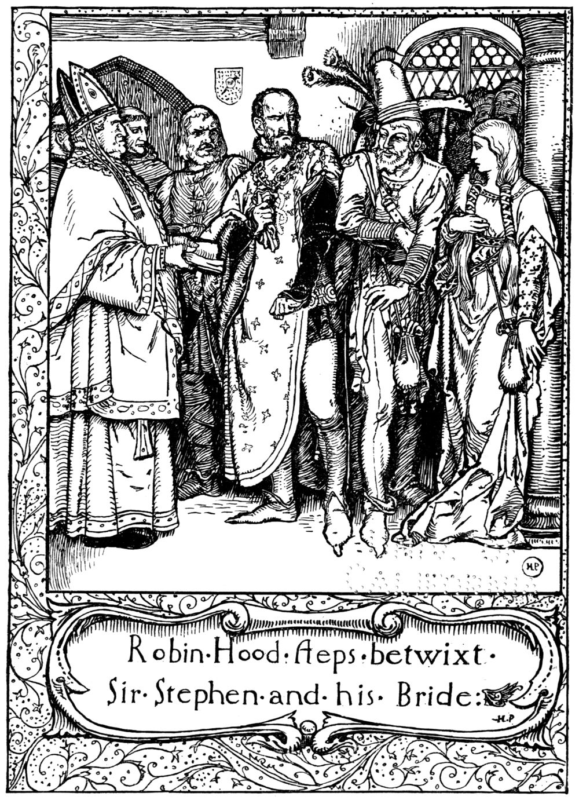
At this everyone stood amazed. They didn't know where to look or what to think or say, they were so bewildered by what was happening. So, while everyone stared at Robin as though they had been turned to stone, he clapped his bugle horn to his lips and blew three blasts so loud and clear that they echoed from the floor to the rafters as though they had been blown on the trumpet of Judgment Day. Then at once Little John and Will Stutely came leaping up and stood on either side of Robin Hood, and quickly drew their broadswords. At the same moment a mighty voice rolled out over everyone's heads: "Here I am, good master, whenever you want me!" For it was Friar Tuck calling down from the organ loft.
And now everything was uproar and noise. Stout Edward strode forward in a rage and would have grabbed his daughter to drag her away, but Little John stepped between them and pushed him back. "Stand back, old man," he said. "You're a horse with its legs tied today."
"Down with the villains!" cried Sir Stephen, and he felt for his sword, but it wasn't hanging at his side, because this was his wedding day.
Then the soldiers drew their swords, and it looked as if blood would soon be wetting the stones. But suddenly there came a bustle at the door and loud voices, steel flashed in the light, and the crash of blows rang out. The soldiers fell back, and up the aisle came leaping eighteen sturdy yeomen, all dressed in Lincoln green, with Allan a Dale at their head. In his hand he carried Robin Hood's good, strong, trusty bow of yew, and he gave it to him, kneeling on one knee as he did.
Then Edward of Deirwold spoke up in a deep, angry voice. "Is it you, Allan a Dale, who has stirred up all this commotion in a church?"
"No," said merry Robin, "I did it, and I don't care who knows it, because my name is Robin Hood."
At that name a sudden silence fell. The Prior of Emmet and his people huddled together like a flock of frightened sheep when they catch the scent of a wolf nearby, while the Bishop of Hereford put down his book and crossed himself devoutly. "Now Heaven protect us today," he said, "from that wicked man!"
"No," said Robin, "I mean you no harm. But here is fair Ellen's promised husband, and she will marry him, or some of you will get hurt."
Then sturdy Edward spoke up in a loud, angry voice. "Now I say no! I'm her father, and she'll marry Sir Stephen and no one else."
Now all this time, while everything was in an uproar around him, Sir Stephen had been standing in proud and scornful silence. "No, fellow," he said coldly, "you can take your daughter back again. I wouldn't marry her after today's doings if I could win all merry England by it. I'll tell you plainly: I loved your daughter, old as I am, and I would have lifted her up like a jewel out of a pigsty. But truly, I didn't know that she loved this fellow and was loved by him. Young lady, if you'd rather choose a beggarly minstrel than a high-born knight, take your pick. I feel it's a disgrace for me to stand here talking in the middle of this rabble, and so I'll leave you." And with that he turned, gathered his men around him, and walked proudly down the aisle. All the yeomen were silenced by the scorn in his words. Only Friar Tuck leaned over the edge of the choir loft and called out to him before he had gone, "Good day to you, Sir Knight. You know, old bones must always make way for young blood." Sir Stephen neither answered nor looked up, but walked out of the church as though he had heard nothing, with his men following him.
Then the Bishop of Hereford spoke up quickly. "I have no business here either, and so I'll be going." And he started to go. But Robin Hood grabbed hold of his robes and held him. "Wait, my Lord Bishop," he said. "I still have something to say to you." The Bishop's face fell, but he stayed as Robin told him, because he saw he couldn't get away.
Then Robin Hood turned to sturdy Edward of Deirwold and said, "Give your blessing to your daughter's marriage to this yeoman, and all will be well. Little John, give me the bags of gold. Look here, farmer. Here are two hundred bright golden angels. Give your blessing, as I say, and I'll count them out to you as your daughter's dowry, her wedding portion. Don't give your blessing, and she'll be married all the same, but not so much as a cracked farthing, the smallest coin there is, will cross your palm. Choose."
Then Edward looked at the ground with a frown, turning the matter over and over in his mind. But he was a shrewd man, and one who always made the best of a cracked pot. So at last he looked up and said, though not in a happy voice, "If the girl wants to go her own way, let her go. I'd hoped to make a lady of her. But if she chooses to be what she's likely to be, I'll have nothing more to do with her from now on. Still, I'll give her my blessing once she's properly married."
"That can't be done," spoke up one of the monks of Emmet. "The banns haven't been properly announced, and there's no priest here to marry them." (The banns were the public announcement of a coming marriage, which had to be read out in church before the wedding could take place.)
"What did you say?" roared Tuck from the choir loft. "No priest? Why, here stands as holy a man as you, any day of the week, an ordained churchman, I'll have you know. As for the business of the banns, don't trip over that straw, brother, because I'll announce them myself." And with that he called the banns, and, the old ballad says, in case three times wasn't enough, he announced them nine times over. Then he came straight down from the loft and performed the marriage service then and there. And so Allan and Ellen were properly married.
And now Robin counted out two hundred golden angels to Edward of Deirwold, and Edward, for his part, gave his blessing, though not, I can tell you, as if he meant it with any great good will. Then the sturdy yeomen crowded around and shook Allan's hand, and he, holding Ellen's hand in his own, looked around him, dizzy with happiness.
Then at last jolly Robin turned to the Bishop of Hereford, who had been watching everything that happened with a grim face. "My Lord Bishop," he said, "you may remember that you promised me that if I played in such a way as to make this lovely girl love her husband, you would give me whatever I asked, within reason. I've played my part, and she loves her husband, which she wouldn't have done if it weren't for me. So now keep your promise. You're wearing something that I think you'd be better off without. So please give me that gold chain hanging around your neck, as a wedding present for this lovely bride."
Then the Bishop's cheeks turned red with rage and his eyes flashed. He gave Robin a fierce look, but he saw something in the yeoman's face that made him stop and think. Then slowly he took the chain from around his neck and handed it to Robin, who slipped it over Ellen's head so that it hung glittering about her shoulders. Then merry Robin said, "I thank you, on the bride's behalf, for your handsome gift, and truly, you look much more fitting without it yourself. Now, if you ever come near Sherwood, I very much hope I'll give you such a feast there as you've never had in all your life."
"Heaven forbid!" cried the Bishop earnestly, for he knew perfectly well what sort of feast it was that Robin Hood gave his guests in Sherwood Forest.
But now Robin Hood gathered his men together, and with Allan and his young bride in their midst, they all turned their steps toward the woods. On the way there Friar Tuck came up close to Robin and tugged at his sleeve. "You lead a merry life, good master," he said, "but don't you think it would be good for all your souls to have a good sturdy chaplain, like me, to look after holy matters? Truly, I like this life enormously." At that merry Robin Hood laughed heartily, and told him to stay and become one of the band if he wanted to.
That night there was such a feast held in the greenwood as Nottinghamshire had never seen before. You and I weren't invited to that feast, and it's a pity we weren't. So, in case we should both feel it all the more keenly, I won't say any more about it.
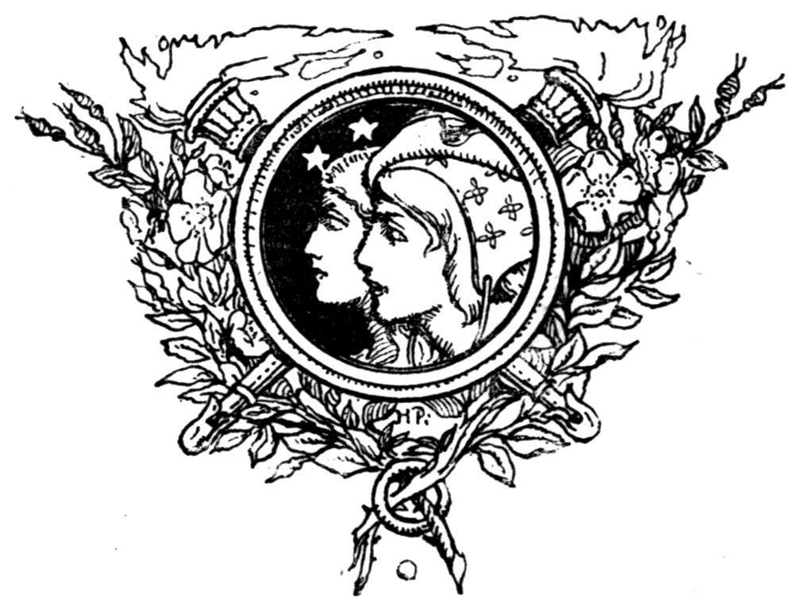
Part Five: The Sorrowful Knight
Chapter 13: Robin Hood Helps a Sorrowful Knight
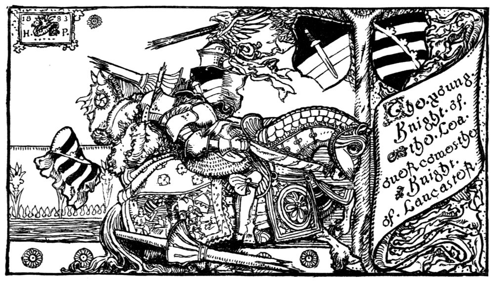
In which you will hear how Robin Hood met a sorrowful knight and brought him to Sherwood; how the Bishop of Hereford turned out to be more generous than he wanted to be; and how Sir Richard of the Lea paid his debts when they came due, both to the Prior of Emmet and to Robin Hood.
So the gentle springtime passed away in budding beauty, with its silver showers and its sunshine, its green meadows and its flowers. And so, too, the summer passed, with its yellow sunlight, its shimmering heat, and its deep, thick, shady leaves, its long twilights and its soft, warm nights, when the frogs croaked and the fairy folk were said to be out on the hillsides. All this had passed, and now the fall had come, bringing its own pleasures and good cheer. For now that the harvest was gathered in, merry bands of gleaners (poor folk who went over the fields picking up the grain the reapers had left behind) roamed all over the countryside, singing along the roads by day and sleeping under the hedgerows and the haystacks at night. Now the rose hips burned red in the tangled thickets, and the hawthorn berries turned black in the hedgerows. The stubble in the fields lay crisp and bare under the sky, and the green leaves were quickly turning russet and brown. And at this merry season, too, the good things of the year are gathered in and stored away in great heaps. Brown ale lies ripening in the cellar, hams and bacon hang in the smokehouse, and crab apples are tucked away in the straw, to be roasted in the wintertime, when the north wind piles the snow in drifts around the gables and the fire crackles warm on the hearth.
So the seasons passed then, so they pass now, and so they will pass in the time to come, while we come and go like the leaves of the tree, which fall and are soon forgotten.
Robin Hood sniffed the air. "Here's a fine day, Little John," he said, "and one we can't afford to waste sitting around. Pick out whatever men you need and go east, while I head west, and let's each of us bring back some fine guest to dine with us today under the greenwood tree."
"Why," cried Little John, clapping his hands together for joy, "that suits me the way a handle suits a blade! I'll bring you back a guest today, or I won't come back myself."
Then each of them chose the men he wanted from the band, and they set out from the forest by different paths.
Now, you and I can't go two ways at once while we join in these merry goings-on. So we'll just let Little John follow his own path, while we tuck up our skirts and trudge along after Robin Hood. And it's good company, too: Robin Hood, Will Scarlet, Allan a Dale, Will Scathelock, Midge the Miller's son, and others besides. Twenty or more sturdy fellows had stayed behind in the forest with Friar Tuck to get things ready for the homecoming, but all the rest had gone off either with Robin Hood or with Little John.
On they traveled, Robin following wherever his fancy led him and the others following Robin. Now they made their way through an open valley with cottages and farms tucked into it, and now they came into the woods again. They passed by fair Mansfield Town, with its towers and battlements and steeples all smiling in the sun, and at last they came out of the forest lands altogether. On they went, along highways and byways, through villages where housewives and merry girls peeped out of the windows at the fine sight of so many young men, until at last they had gone past Alverton in Derbyshire. By this time it was high noon, and still they hadn't met a single guest worth taking back to Sherwood. So when they came at last to a spot where a little roadside shrine stood at a crossroads, Robin told them to stop. On either side there was shelter behind high hedgerows, which made a good hiding place, where they could watch the roads at their ease while they ate their midday meal. "This looks like good lodging to me," said merry Robin, "a place where peaceful folk like us can eat in quiet. So we'll rest here, and see what luck drops into our cooking pot." So they climbed over a stile and went around behind a hedgerow, where the soft sunlight was bright and warm and the grass was soft, and there they sat down. Then each man pulled out of the pouch at his side whatever he had brought to eat, because a merry walk like that one sharpens the appetite until it's as keen as a March wind. So nobody said another word; each man saved his teeth for better use, and munched away heartily at brown crusts and cold meat.
In front of them, one of the highroads crawled up a steep hill and then dipped suddenly over the top, where the hedgerows and shaggy grass made a sharp edge against the sky. Over the top of the windy hill peeped the eaves of a few houses in the village that lay down in the valley beyond. There, too, they could see the top of a windmill, its sails slowly rising and dipping from behind the hill against the clear blue sky, as the light wind turned them with a creaking, laboring swing.
So the yeomen lay behind the hedge and finished their meal, but the time kept slipping by and nobody came. At last a man came riding slowly over the hill and down the stony road toward the spot where Robin and his band lay hidden. He was a fine, strong-looking knight, but his face was sorrowful and his whole manner downcast. His clothes were plain but rich. He wore no gold chain around his neck, though people of his rank nearly always did, and he had no jewel anywhere on him; and yet nobody could have mistaken him for anything but a man of proud and noble blood. His head was bowed down on his chest, and his hands hung limp at his sides. So he came riding slowly on, as though he were sunk deep in sad thoughts, and even his good horse, with the reins hanging loose on its neck, walked along with its head down, as though it shared its master's grief.
"That's a sorry-looking gentleman, all right," said Robin Hood. "He seems to have put on a bad mood this morning along with his jacket. All the same, I'm going out to talk to him, because there may be some pickings here for a hungry jackdaw. His clothes look rich to me, even though he himself is so gloomy. You all wait here while I look into this." With that, he got up and left them, crossed the road to the shrine, and stood there waiting for the sorrowful knight to come closer. And soon, when the knight came riding slowly along, jolly Robin stepped forward and laid his hand on the bridle. "Stop a moment, Sir Knight," he said. "Please wait here a little while, because I have a few words to say to you."
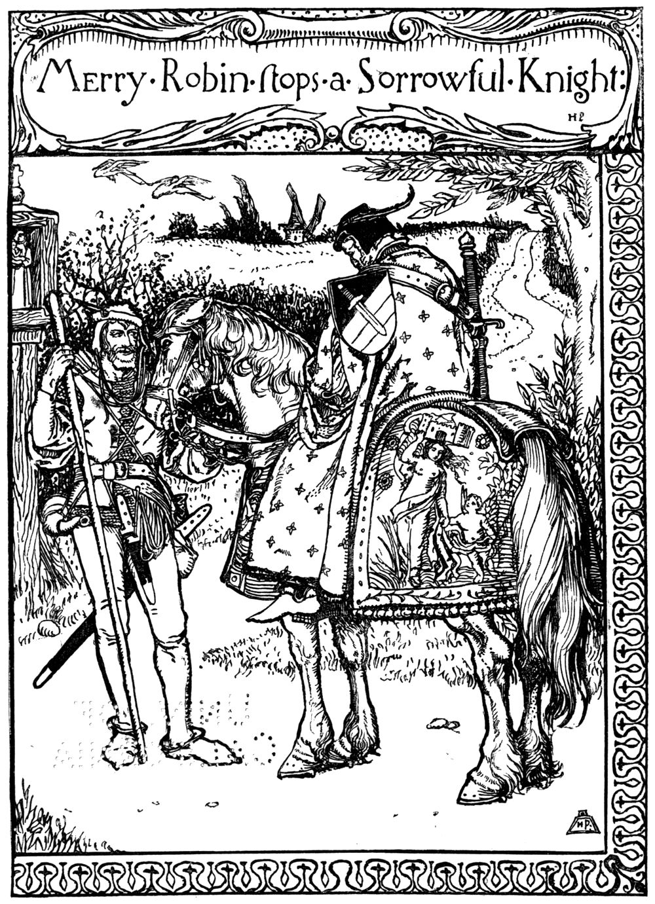
"Who are you, friend, to stop a traveler like this on His Most Gracious Majesty's highway?" said the Knight.
"Well," said Robin, "that's a hard question to answer. One man calls me kind, another calls me cruel. This one calls me a good honest fellow, and that one calls me a wicked thief. Honestly, the world has as many pairs of eyes to look at a man with as a toad has spots, so it's entirely up to you which pair you look at me with. My name is Robin Hood."
"Well, good Robin," said the Knight, with a smile twitching at the corners of his mouth, "that's a clever way of putting it. As for the pair of eyes I look at you with, I'd say they're as friendly as they could be, because I've heard a great deal of good about you and very little bad. What do you want with me?"
"Now, I swear, Sir Knight," said Robin, "you must have learned your wisdom from good old Gaffer Swanthold, because he says, 'Kind words are as easy to speak as harsh ones, and they bring good will instead of blows.' And now I'll show you how true that saying is. If you'll come with me to Sherwood Forest today, I'll give you as merry a feast as you've ever had in all your life."
"That's very kind of you," said the Knight, "but I think you'll find me a gloomy, sorrowful sort of guest. You'd better let me go on my way in peace."
"No," said Robin, "you could go your own way, except for one thing, and I'll tell you what it is. We keep an inn, you might say, deep in the heart of Sherwood. But it's so far from the highroads and the beaten paths that guests don't often come our way. So my friends and I set out cheerfully and go looking for them whenever we get tired of our own company. That's how things stand, Sir Knight. But I'll tell you one thing more: we expect our guests to pay their bill."
"I see what you mean, friend," said the Knight gravely, "but I'm not the man for you, because I have no money with me."
"Is that true?" said Robin, looking at the Knight keenly. "I can hardly help believing you. And yet, Sir Knight, there are some knights whose word can't be trusted quite as much as they'd like other people to think. You won't think badly of me if I see for myself." Then, still holding the horse by the bridle, he put his fingers to his lips and blew a shrill whistle, and at that eighty yeomen came leaping over the stile and ran to where the Knight and Robin stood. "These," said Robin, looking at them proudly, "are some of my merry men. They share everything with me, fair and equal: all the good times and the troubles, all the gains and the losses. Now, Sir Knight, please tell me how much money you have on you."
For a while the Knight didn't say a word, but a slow red flush rose into his cheeks. At last he looked Robin in the face and said, "I don't know why I should be ashamed, because it's nothing to be ashamed of. But, friend, I'm telling you the truth when I say that there are ten shillings in my purse, and that's every last groat Sir Richard of the Lea owns in the whole wide world."
When Sir Richard had finished, there was a silence, until at last Robin said, "And do you give me your word as a knight that this is all you have with you?"
"Yes," answered Sir Richard, "I give you my most solemn word, as a true knight, that it's all the money I have in the world. Here, take my purse, all of you, and see for yourselves that what I say is true." And he held his purse out to Robin.
"Put your purse away, Sir Richard," said Robin. "I'd never doubt the word of such a gentle knight. The proud I try to bring down low, but those who walk in sorrow I'd help if I could. Come, Sir Richard, cheer up and come with us into the greenwood. Even I might be able to help you. Surely you know the story of good King Athelstane, and how he was saved by a little blind mole that had dug a tunnel, so that the man who was out to kill the king stumbled over it."
"Well, friend," said Sir Richard, "I think you mean me kindness in your own way. All the same, my troubles are such that you're not likely to be able to cure them. But I'll go with you into Sherwood today." Then he turned his horse around, and they all made their way toward the woodlands, with Robin walking on one side of the Knight and Will Scarlet on the other, while the rest of the band trudged along behind.
After they had traveled like this for a while, Robin Hood spoke up. "Sir Knight," he said, "I don't want to bother you with nosy questions, but do you think you could find it in your heart to tell me your troubles?"
"Truly, Robin," said the Knight, "I don't see why I shouldn't. Here's how it is. My castle and my lands are in pawn for a debt I owe. Three days from now the money has to be paid, or else my whole estate is lost forever, because then it falls into the hands of the Priory of Emmet, and what they swallow, they never give back."
"What I don't understand," said Robin, "is why people of your sort live in such a way that all their wealth melts away from them like snow under the spring sun."
"You're wrong about me, Robin," said the Knight, "for listen. I have a son who is only twenty years old, but he has already won his spurs, which means he has been made a knight. Last year, on an evil day, a tournament was held at Chester, where knights ride at each other with lances, and my son went there, and so did my lady wife and I. I tell you, it was a proud time for us, because he knocked every knight he rode against right off his horse. At last he rode against a certain great knight, Sir Walter of Lancaster. Young as my son was, he kept his seat in the saddle, even though both their lances shattered all the way down to the handles. But a splinter from my boy's lance happened to go through the slits in Sir Walter's helmet, and it pierced through his eye into his brain, so that he died before his squire could even unlace his helmet. Now, Robin, Sir Walter had powerful friends at the King's court, so his relatives stirred up trouble against my son. To save him from prison, I had to pay a ransom of six hundred pounds in gold. Even then, all might have gone well, except that what with the ins and outs and crooked twists of the law, I was fleeced like a sheep that's been sheared right down to the skin. So it came about that I had to pawn my lands to the Priory of Emmet to raise more money, and they drove a hard bargain with me when I needed it most. But I want you to understand that the only reason I grieve so much over my lands is my dear lady wife."
"But where is your son now?" asked Robin, who had listened closely to everything the Knight said.
"In Palestine," said Sir Richard, "fighting like a brave Christian soldier for the Cross and the Holy Sepulcher. Truly, England was a bad place for him, because of Sir Walter's death and the hatred of the Lancaster knight's relatives."
"Truly," said Robin, who was deeply moved, "yours is a hard lot. But tell me, how much do you owe Emmet for your estates?"
"Only four hundred pounds," said Sir Richard.
At that, Robin slapped his thigh in anger. "Oh, the bloodsuckers!" he cried. "A noble estate to be lost for four hundred pounds! But what will happen to you if you do lose your lands, Sir Richard?"
"It isn't my own fate that troubles me, if that happens," said the Knight, "but my dear lady's. For if I lose my land, she'll have to go and live with some relative and depend on their charity, and I think that would break her proud heart. As for me, I'll cross the salt sea and go to Palestine, to join my son in fighting for the Holy Sepulcher."
Then Will Scarlet spoke up. "But don't you have a single friend who will help you in your terrible need?"
"Not one," said Sir Richard. "While I was rich enough at home, and had friends, they made big boasts about how much they loved me. But when the oak falls in the forest, the pigs run out from under it, for fear of being crushed too. So my friends have left me, for not only am I poor, but I have powerful enemies."
Then Robin said, "You say you have no friends, Sir Richard. I'm not boasting, but many people have found a friend in Robin Hood when they were in trouble. Cheer up, Sir Knight. I may help you yet."
The Knight shook his head with a faint smile. But for all that, Robin's words made his heart lighter, for the truth is that hope, however faint, brings a gleam into the darkness, like a little rushlight candle that costs no more than a groat.
The day was nearly over when they came near the greenwood tree. Even from a distance they could tell, from the number of men gathered there, that Little John had come back with some guest. But when they came close enough, who should they find but the Lord Bishop of Hereford! And the good Bishop was in a fine stew, I can tell you. Up and down he paced under the tree, like a fox caught in a henhouse. Behind him stood three Black Friars (friars who wore black robes), huddled close together in a frightened little group, like three black sheep in a storm. Tied to the branches of the trees nearby were six horses. One was a fine Barbary horse with bright, fancy harness, which the Bishop liked to ride, and the others were loaded with packs of all different shapes and sizes. One of these packs made Robin's eyes gleam, because it was a box, not very big, but heavily bound with bands and ribs of iron.
When the Bishop saw Robin and his men come out into the open, he started to run toward him, but the fellow who was guarding the Bishop and the three friars stuck his quarterstaff out in front of him. So his lordship had to stand back, though he frowned and spoke angrily.
"Wait, my Lord Bishop," jolly Robin called out in a loud voice, when he saw what had happened. "I'll come to you as fast as I can, because I'd rather see you than any man in merry England." With that, he walked faster, and soon came to where the Bishop stood fuming.
"Well!" said the Bishop in a loud, angry voice, when Robin had come up to him. "Is this the way you and your band treat a man as high in the Church as I am? These brothers and I were riding peacefully along the highroad with our packhorses, and ten men to guard them, when up comes a great, strapping fellow, a full seven feet tall, with eighty or more men behind him, and orders me to stop! Me, the Lord Bishop of Hereford, mind you! And at that, my armed guards (curse them for cowards!) ran straight away. But listen to this. Not only did this fellow stop me, he threatened me, and said Robin Hood would strip me as bare as a hedge in winter. And on top of all that, he called me such wicked names as 'fat priest,' 'man-eating bishop,' 'money-gobbling moneylender,' and who knows what else, as though I were no better than some wandering beggar or tinker."
At this the Bishop glared like an angry cat, and even Sir Richard laughed; only Robin kept a straight face. "Oh, no, my lord!" he said. "What a shame that my band has treated you so badly! I tell you truly, we have the greatest respect for the robes you wear. Little John, step forward right now."
At these words Little John came forward, twisting his face into a comical look, as if to say, "Have mercy on me, good master." Then Robin turned to the Bishop of Hereford and said, "Is this the man who spoke so boldly to Your Lordship?"
"Yes, that's him, all right," said the Bishop, "a wicked fellow, if you ask me."
"And did you, Little John," said Robin in a sad voice, "call his lordship a fat priest?"
"Yes," said Little John sorrowfully.
"And a man-eating bishop?"
"Yes," said Little John, more sorrowfully than before.
"And a money-gobbling moneylender?"
"Yes," said Little John, in a voice so sorrowful it might have drawn tears from the Dragon of Wantley, the terrible dragon in the old comic ballad.
"Oh, what a shame that such things should happen!" said jolly Robin, turning to the Bishop. "Because I've always found Little John to be a truthful man."
At that a roar of laughter went up, and the blood rushed into the Bishop's face until it was cherry red from the top of his head to his chin. But he said nothing. He just swallowed his words, though they nearly choked him.
"No, my Lord Bishop," said Robin, "we're rough fellows, but I hope we're not as wicked as you think, after all. There isn't a man here who would harm a hair on Your Reverence's head. I know our joking has stung you, but we're all equals here in the greenwood. There are no bishops or barons or earls among us, only men, so you'll have to share our life with us while you're staying here. Come on, my merry men, look lively and get the feast ready! In the meantime, we'll show our guests some of our woodland sports."
So while some went off to light the fires for roasting the meat, others ran leaping to fetch their cudgels and longbows. Then Robin brought Sir Richard of the Lea forward. "My Lord Bishop," he said, "here's another guest we have with us today. I wish you could get to know him better, because my men and I will do our best to honor you both at this merrymaking."
"Sir Richard," said the Bishop reproachfully, "it seems you and I are companions and fellow sufferers in this den of—" He was about to say "thieves," but he stopped suddenly and glanced sideways at Robin Hood.
"Speak up, Bishop," said Robin, laughing. "We in Sherwood don't stop anyone's words from flowing freely. 'Den of thieves' is what you were about to say."
"Maybe that's what I meant to say, Sir Richard," said the Bishop, "but I'll say this: I just saw you laughing at the rude jokes of these fellows. It would have been more fitting for you, I think, to stop them with a frown, instead of egging them on with your laughter."
"I meant you no harm," said Sir Richard, "but a merry joke is a merry joke, and I can honestly say I'd have laughed at it even if it had been aimed at me."
But now Robin Hood called over some of his band, who spread soft moss on the ground and laid deerskins over it. Then Robin asked his guests to sit down, and so all three of them sat, while some of the chief men of the band, such as Little John, Will Scarlet, Allan a Dale, and others, stretched themselves out on the ground nearby. Then a garland was set up at the far end of the glade as a target, and the archers shot at it, and such shooting was done that day that it would have made your heart leap to see it. And all the while Robin talked so amusingly to the Bishop and the Knight that the one forgot his annoyance and the other his troubles, and both of them laughed out loud again and again.
Then Allan a Dale came forward and tuned his harp, and everything grew hushed around him. He sang in his wonderful voice songs of love, of war, of glory, and of sadness, and everyone listened without a movement or a sound. So Allan sang on until the great round silver moon shone with its clear white light through the high tangle of the twisting branches of the trees. At last two fellows came to say that the feast was ready, so Robin, leading a guest by each hand, brought them to where great steaming dishes, sending savory smells far and wide, stood all along the white linen cloth spread on the grass. All around was a blaze of torches that lit everything with a red glow. Then everyone sat down at once and started eating, with a great noise and hubbub, the rattle of plates mixing with the sound of loud talk and laughter. The feast lasted a long time, but at last it was over, and the bright wine and the strong, foaming ale went briskly around. Then Robin Hood called out for silence, and everyone grew quiet until he spoke.
"I have a story to tell you all, so listen to what I have to say," he said. And without any more fuss he told them all about Sir Richard, and how his lands were in pawn. But as he went on, the Bishop's face, which had been smiling and rosy with merriment a moment before, grew serious, and he set down the horn of wine he was holding. For he knew Sir Richard's story, and his heart sank inside him with grim forebodings. Then, when Robin Hood had finished, he turned to the Bishop of Hereford. "Now, my Lord Bishop," he said, "don't you think this is a wicked thing for anyone to do, let alone a churchman, who ought to live humbly and charitably?"
The Bishop didn't answer a word, but only stared at the ground with sulky eyes.
"Now, you're the richest bishop in all England," said Robin. "Can't you help this brother of yours in his need?" But still the Bishop didn't answer a word.
Then Robin turned to Little John. "You and Will Stutely go and bring those five packhorses over here," he said. So the two yeomen did as they were told, while the men around the cloth made room on the grass, where the light was brightest, for the five horses that Little John and Will Stutely soon led forward.
"Which of you has the list of the goods?" asked Robin Hood, looking at the Black Friars.
Then the smallest of them all spoke up in a trembling voice. He was an old man with a gentle, wrinkled face. "I have it," he said. "But please, don't hurt me."
"No," said Robin, "I've never yet hurt a harmless man. But give it to me, good father." So the old man did as he was told, and handed Robin the writing tablet on which all the packages on the horses were listed. Robin handed it to Will Scarlet and told him to read it out. So Will Scarlet, raising his voice so that everyone could hear, began:
"Three bales of silk for Quentin, the cloth merchant at Ancaster."
"We won't touch that," said Robin, "because this Quentin is an honest fellow who has worked his way up by his own hard work and thrift." So the bales of silk were set aside unopened.
"One bale of silk velvet for the Abbey of Beaumont."
"What do these priests want with silk velvet?" said Robin. "All the same, even though they don't need it, I won't take all of it from them. Measure it off into three parts: one to be sold for charity, one for us, and one for the abbey." So this, too, was done just as Robin Hood said.
"Forty big wax candles for the Chapel of Saint Thomas."
"Those belong fairly to the chapel," said Robin, "so put them to one side. Heaven forbid that we should take from the blessed Saint Thomas what belongs to him." So this too was done as Robin ordered, and the candles were set to one side, along with honest Quentin's unopened bales of silk. And so they went through the whole list, and the goods were judged according to what Robin thought was fairest. Some things were set aside untouched, and many were opened and divided into three equal parts: one for charity, one for the band, and one for the owners. And now the whole ground in the torchlight was covered with silks and velvets and cloth of gold and cases of fine wines. And so they came to the last line on the tablet: "A box belonging to the Lord Bishop of Hereford."
At these words the Bishop shook as though he had a chill, and the box was set down on the ground.
"My Lord Bishop, do you have the key to this box?" asked Robin.
The Bishop shook his head.
"Go, Will Scarlet," said Robin. "You're the strongest man here. Bring a sword right away and cut this box open, if you can." So Will Scarlet got up and went off, and soon came back carrying a great two-handed sword. Three times he struck that strong, iron-bound box, and at the third blow it burst open, and a great heap of gold came rolling out, gleaming red in the torchlight. At that sight a murmur went all around the band, like the sound of the wind in faraway trees; but not one man came forward or touched the money.
"Will Scarlet, Allan a Dale, and Little John," said Robin, "count it up, the three of you."
It took a long time to count all the money, and when it had all been properly added up, Will Scarlet called out that there were fifteen hundred pounds in gold. But in among the gold they found a paper, and Will Scarlet read it out in a loud voice, so everyone heard that this money was the rents and fines and forfeits collected from certain estates that belonged to the Bishop of Hereford's church lands.
"My Lord Bishop," said Robin Hood, "I won't strip you bare as a winter hedge, the way Little John said, because you'll get back a third of your money. One third you can easily spare to us, for entertaining you and your followers, because you're very rich. And one third you can spare even more easily for charity. Because, Bishop, I hear that you're a hard master to the people under you, and a tight-fisted hoarder of money that you could give to charity, which would do you far more credit than spending it on your own pleasures."
At this the Bishop looked up, but he couldn't say a single word. Still, he was thankful to keep some of his riches.
Then Robin turned to Sir Richard of the Lea. "Now, Sir Richard," he said, "it seemed the Church was about to rob you, so it's only right that some of the Church's extra riches should be used to help you. You'll take the five hundred pounds we've set aside for people who need it more than the Bishop does, and pay your debts to Emmet with it."
Sir Richard looked at Robin until something rose in his eyes that made all the lights and faces blur together. At last he said, "I thank you, friend, with all my heart, for what you're doing for me. But don't think badly of me if I can't take your gift as a gift. Here's what I'll do. I'll take the money and pay my debts, and a year and a day from now I'll bring it back safely, either to you or to the Lord Bishop of Hereford. I give you my most solemn word as a knight. I feel free to borrow it, because I know of no man who ought to be more bound to help me than someone so high up in the very Church that drove such a hard bargain with me."
"Truly, Sir Knight," said Robin, "I don't understand the fine scruples that weigh on people of your sort. But all the same, it will all be just as you wish. Only you'd better bring the money to me at the end of the year, because maybe I can put it to better use than the Bishop would." Then he turned to the men near him and gave his orders, and five hundred pounds were counted out and tied up in a leather bag for Sir Richard. The rest of the treasure was divided up: part was carried off to the band's treasure house, and part was put aside with the other things for the Bishop.
Then Sir Richard stood up. "I can't stay any later, good friends," he said, "because my lady will grow worried if I don't come home. So I ask your leave to go."
Then Robin Hood and all his merry men stood up, and Robin said, "We can't let you leave here without anyone to ride with you, Sir Richard."
Then Little John spoke up. "Good master, let me pick twenty strong fellows from the band, and let's arm ourselves properly and serve as Sir Richard's men-at-arms, until he can get others to take our place."
"That's well said, Little John, and it will be done," said Robin.
Then Will Scarlet spoke up. "Let's give him a gold chain to hang around his neck, the kind that suits a man of his noble blood, and golden spurs to wear on his heels as well."
Then Robin Hood said, "That's well said, Will Scarlet, and it will be done."
Then Will Stutely spoke up. "Let's give him that bale of rich velvet and that roll of cloth of gold over there to take home to his noble lady wife, as a present from Robin Hood and all his merry men."
At that everyone clapped their hands for joy, and Robin said, "That's well said, Will Stutely, and it will be done."
Then Sir Richard of the Lea looked all around and tried to speak, but he could hardly get the words out for the feelings that choked him. At last he said, in a husky, trembling voice, "You'll all see, good friends, that Sir Richard of the Lea will always remember your kindness today. And if you're ever in terrible need or trouble, come to me and my lady, and the walls of Castle Lea will be battered down before any harm comes to you. I—" He couldn't say anything more, but turned quickly away.
But now Little John came forward with the nineteen sturdy fellows he had chosen to go with him, all ready for the journey. Each man wore a coat of chain mail on his chest, a steel cap on his head, and a good strong sword at his side. They made a gallant sight as they stood there all in a row. Then Robin came and threw a gold chain around Sir Richard's neck, and Will Scarlet knelt and buckled the golden spurs onto his heels. And now Little John led Sir Richard's horse forward, and the Knight mounted. He looked down at Robin for a little while, then suddenly bent down and kissed him on the cheek. All the forest glades rang with the shout that went up as the Knight and the yeomen marched off through the woods, with a blaze of torches and a gleam of steel, and were gone.
Then the Bishop of Hereford spoke up in a mournful voice. "I must be jogging along too, good fellow, for the night is getting late."
But Robin laid his hand on the Bishop's arm and held him back. "Don't be in such a hurry, Lord Bishop," he said. "Three days from now Sir Richard has to pay his debts to Emmet. Until then, you'll have to be content to stay here with me, or else you might stir up trouble for the Knight. I promise you'll have great sport, because I know you're fond of hunting the brown deer. Take off that gloomy cloak of yours, and try to live the happy life of a yeoman for three whole days. I promise you'll be sorry to go when the time comes."
So the Bishop and his followers stayed with Robin for three days, and his lordship had plenty of sport in that time, so that, just as Robin had said, when the time came for him to go he was sorry to leave the greenwood. At the end of the three days Robin set him free, and sent him out of the forest with a guard of yeomen, to keep other robbers from taking what was left of his packs and bundles.
But as the Bishop rode away, he swore to himself that someday he would make Robin sorry he had ever stopped him in Sherwood.
But now we'll follow Sir Richard. So listen, and you'll hear what happened to him, and how he paid his debts at Emmet Priory, and how, when the time came, he paid Robin Hood too.
Chapter 14: How Sir Richard of the Lea Paid His Debts
The long highway stretched straight ahead, gray and dusty in the sun. On either side of it ran ditches full of water, lined with willows, and far away in the distance stood the towers of Emmet Priory, with tall poplar trees all around them.
Along this raised road rode a knight, with twenty sturdy men-at-arms behind him. The Knight was dressed in a plain, long robe of gray wool, gathered in at the waist by a broad leather belt, and from the belt hung a long dagger and a strong sword. But though he was dressed so plainly himself, the horse he rode was a noble Barbary horse, of the fine, swift breed that comes from North Africa, and its harness and trappings were rich with silk and little silver bells.
And so the troop traveled along the road between the ditches, until at last they reached the great gate of Emmet Priory. There the Knight called one of his men and told him to knock on the door of the porter's lodge with the hilt of his sword.
The porter was dozing on his bench inside the lodge, but at the knock he roused himself, opened the little door set into the big gate, and came hobbling out to greet the Knight. Meanwhile a tame starling hanging in a wicker cage inside piped up, "In coelo quies! In coelo quies!", which is Latin for "In heaven there is rest!", for those were the words the poor old lame porter had taught it to say.
"Where is your Prior?" the Knight asked the old porter.
"He is at dinner, good knight, and he's expecting you," said the porter, "for unless I'm mistaken, you are Sir Richard of the Lea."
"I am Sir Richard of the Lea. Then I'll go and find him at once," said the Knight.
"But shall I not send your horse to the stable?" said the porter. "By Our Lady, it's the noblest nag, and the best harnessed, that I've ever seen in all my life." And he stroked the horse's side with the palm of his hand.
"No," said Sir Richard. "The stables of this place are not for me. So make way, please." And with that he pushed forward, and when the gates were opened he rode into the stony courtyard of the Priory with his men behind him. In they came with a rattle of steel and a clashing of swords and a ringing of horses' hooves on the cobblestones, so that a flock of pigeons strutting in the sun flew up with flapping wings to the high eaves of the round towers.
Now, while the Knight was riding along the road to Emmet, a merry feast was going on in the Priory's great dining hall. The afternoon sun streamed in through the tall arched windows and lay in broad squares of light on the stone floor and across the table, which was covered with a snow-white linen cloth and spread with a feast fit for a prince. At the head of the table sat Prior Vincent of Emmet, dressed all in soft robes of fine cloth and silk. On his head was a black velvet cap trimmed with gold, and around his neck hung a heavy gold chain with a great locket dangling from it. Beside him, on the arm of his big chair, perched his favorite falcon, for the Prior was fond of the gentlemanly sport of hunting with hawks. On his right sat the Sheriff of Nottingham, in rich purple robes trimmed all around with fur, and on his left sat a famous lawyer in dark, sober clothes. Below them sat the high cellarer of Emmet (the monk in charge of all the Priory's food and drink), and others of the most important monks.
Jokes and laughter went around the table, and everything was as merry as merry could be. The lawyer's wrinkled little face was twisted into a crinkly smile, for in his purse were eighty golden angels that the Prior had paid him as his fee for the case between the Prior and Sir Richard of the Lea. The learned lawyer had made sure to be paid in advance, because he didn't trust the holy Vincent of Emmet very far.
Then the Sheriff of Nottingham spoke up. "But are you sure, Sir Prior, that you have the lands safely in your hands?"
"Yes, of course," said Prior Vincent, smacking his lips after a long drink of wine. "I've kept a close watch on him, though he never knew it, and I know very well that he hasn't got the money to pay me."
"Yes, that's true," said the lawyer, in a dry, husky voice. "His land will certainly be forfeited if he doesn't come to pay. But, Sir Prior, you must get him to sign a release with his own hand, or else you can't hope to keep the land without trouble from him."
"Yes, yes," said the Prior, "you've told me that before. But I know this knight is so poor that he'll be glad to sign away his lands for two hundred pounds of hard money."
Then the high cellarer spoke up. "I think it's a shame to drive an unlucky knight into the ditch like this. It seems a sad thing to me that the finest estate in Derbyshire should be taken away from him for a paltry five hundred pounds. Truly, I—"
"What's this?" broke in the Prior, in a quivering voice, his eyes glittering and his cheeks red with anger. "Do you dare to babble at me to my face, sir? By Saint Hubert, you'd better save your breath to cool your porridge, or it may burn your mouth."
"Now, now," said the lawyer smoothly, "I'd swear this knight will never come to settle today, but will fail to keep his day. All the same, we'll find some way to get his lands from him, so never fear."
But even as the lawyer spoke, there came a sudden clatter of horses' hooves and a jingle of iron armor in the courtyard below. Then the Prior called to one of the monks who sat at the lower end of the table, where the less important people sat, and told him to look out of the window and see who was below, though he knew perfectly well it could be nobody but Sir Richard.
So the monk got up and went and looked, and he said, "I see twenty sturdy men-at-arms below, and a knight just getting down from his horse. He's dressed in long gray robes which look rather shabby to me, but the horse he rides has the richest trappings I ever saw. The Knight has gotten down, and they're coming this way, and they're already downstairs in the great hall."
"There, look at that, now," said Prior Vincent. "Here's a knight with a purse so thin he can hardly buy himself a crust of bread to chew, and yet he keeps a band of followers and puts rich trappings on his horse's back, while his own back goes bare. Isn't it a good thing that such men should be brought low?"
"But are you sure," said the little lawyer nervously, "that this knight won't do us any harm? Men like him are fierce when they're crossed, and he has a band of wicked men at his heels. Maybe you'd better give him more time to pay his debt." He said this because he was afraid Sir Richard might do him some harm.
"You needn't be afraid," said the Prior, looking down at the little man beside him. "This knight is gentle, and he'd no more think of harming you than of harming an old woman."
Just as the Prior finished speaking, a door at the lower end of the dining hall swung open, and in came Sir Richard, with his hands folded and his head bowed down on his chest. Humbly, like this, he walked slowly up the hall, while his men-at-arms stood around the door. When he came to where the Prior sat, he knelt down on one knee. "God save and keep you, Sir Prior," he said. "I've come to keep my day."
And the very first thing the Prior said to him was, "Have you brought my money?"
"Alas! I don't have so much as a single penny on me," said the Knight, and at that the Prior's eyes sparkled.
"Well, you're a fine sort of debtor, I must say," he said. Then he turned away: "Sir Sheriff, I drink to your health."
But still the Knight knelt there on the hard stones, so the Prior turned to him again. "What do you want?" he said sharply.
At these words a slow red flush rose into the Knight's cheeks, but still he knelt. "I've come to beg for your mercy," he said. "As you hope for Heaven's mercy, show mercy to me. Don't strip me of my lands and bring a true knight down to poverty."
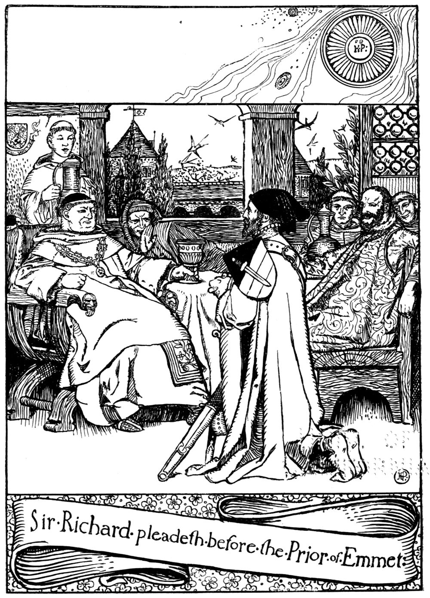
"Your day has passed and your lands are forfeited," said the lawyer, plucking up his courage when he heard how humbly the Knight spoke.
"Lawyer," said Sir Richard, "won't you be my friend in my hour of need?"
"No," said the other. "I stand with this holy Prior, who has paid me my fees in hard gold, so I'm bound to him."
"Won't you be my friend, Sir Sheriff?" said Sir Richard.
"No, before Heaven," said the Sheriff of Nottingham. "This is no business of mine. Still, I'll do what I can." And he nudged the Prior under the tablecloth with his knee. "Won't you let him off some of his debt, Sir Prior?"
At this the Prior smiled grimly. "Pay me three hundred pounds, Sir Richard," he said, "and I'll give you a receipt that clears your whole debt."
"You know, Sir Prior, that it's as easy for me to pay four hundred pounds as three hundred," said Sir Richard. "But won't you give me another year to pay what I owe?"
"Not another day," said the Prior sternly.
"And is this all you'll do for me?" asked the Knight.
"Now, shame on you, you false knight!" cried the Prior, bursting out in anger. "Either pay your debt as I've said, or sign away your land and get yourself out of my hall."
Then Sir Richard rose to his feet. "You false, lying priest!" he said, in a voice so stern that the lawyer shrank back in fright. "I'm no false knight, as you know very well; I've always held my place in the thick of battle and in the tournament. Have you so little courtesy that you'd let a true knight kneel here all this time, or see him come into your hall and never offer him food or drink?"
Then the lawyer spoke up in a trembling voice. "This is surely a bad way to talk about matters of business. Let's all speak gently. Sir Prior, what will you pay this knight to sign over his land to you?"
"I would have given him two hundred pounds," said the Prior, "but since he's spoken so rudely to my face, he won't get one groat over a hundred pounds."
"If you had offered me a thousand pounds, you false prior," said the Knight, "you wouldn't have gotten an inch of my land." Then he turned to where his men-at-arms stood near the door and called, "Come here," beckoning with his finger. At that the tallest of them all came forward and handed him a long leather bag. Sir Richard took the bag and poured out of it onto the table a glittering stream of gold coins. "Remember, Sir Prior," he said, "that you've promised to clear my debt for three hundred pounds. You won't get one farthing more than that." And so saying, he counted out three hundred pounds and pushed it across to the Prior.
But now the Prior's hands dropped to his sides and his head drooped onto his shoulder. Not only had he lost all hope of getting the land, but he had let the Knight off a hundred pounds of his debt, and he had paid the lawyer eighty angels for nothing. He turned to the lawyer and said, "Give me back that money of mine you've got."
"No!" cried the other shrilly. "That's only my fee that you paid me, and you're not getting it back." And he hugged his gown tight around him.
"Now, Sir Prior," said Sir Richard, "I've kept my day and paid everything that was asked of me. So, since there's nothing more between us, I'll leave this nasty place at once." And so saying, he turned on his heel and strode away.
All this time the Sheriff had been staring, with his eyes wide open and his mouth hanging open too, at the tall man-at-arms, who stood there as if he were carved out of stone. At last he gasped out, "Reynold Greenleaf!"
At that the tall man-at-arms, who was none other than Little John, turned to the Sheriff with a grin. "Good day to you, my dear old friend," he said. "I'd just like to tell you, sweet Sheriff, that I've heard all your pretty talk today, and it will all be told to Robin Hood, word for word. So goodbye for now, until we meet again in Sherwood Forest." Then he too turned and followed Sir Richard down the hall, leaving the Sheriff sitting there pale and amazed, all shrunk together in his chair.
It was a merry feast that Sir Richard walked in on, but it was a sorry bunch he left behind him, and they had little appetite now for the princely food spread out in front of them. Only the learned lawyer was happy, for he had his fee.
Now a year and a day went by after Prior Vincent of Emmet sat at that feast, and once again the mellow autumn of another year had come. But the year had brought a great change, I can tell you, to the lands of Sir Richard of the Lea. Where shaggy wild grass had grown in the meadows before, now everything stretched away in golden stubble, which showed that a rich and plentiful harvest had been gathered from them. The year had made a great change in the castle too: where there had been empty moats and crumbling, neglected walls, everything was now orderly and well kept.
The sun shone brightly on battlement and tower, and in the blue air overhead a flock of chattering jackdaws flew around the gilded weathervane and the spire. Then, in the brightness of the morning, the drawbridge came down across the moat with a rattle and clank of chains, the castle gate swung slowly open, and out from the castle courtyard came flashing a fine troop of men-at-arms in steel, with a knight in the middle of them, dressed all in chain mail as white as the frost on the briars and thorns of a winter morning. In his hand the Knight held a great spear, and from its point fluttered a blood-red pennant as broad as the palm of a hand. So this troop came out of the castle, and in the middle of them walked three packhorses loaded with bundles of all different shapes and kinds.
So good Sir Richard of the Lea rode out on that bright and merry morning to pay his debt to Robin Hood. Along the highway they went, with the steady tramp of feet and the rattle and jingle of swords and harness. On they marched until they came near Denby, and from the top of a hill they saw, over beyond the town, a great many bright flags and streamers floating in the clear air. Then Sir Richard turned to the man-at-arms nearest him. "What's going on over there at Denby today?" he asked.
"If it please Your Worship," answered the man-at-arms, "there's a merry fair being held there today, and a great wrestling match, which lots of people have come to see. A prize has been offered of a whole great cask of red wine, a fine gold ring, and a pair of gloves, and all of it goes to the best wrestler."
"Now, upon my word," said Sir Richard, who dearly loved good, manly sports, "that will be a fine thing to see. I think we can stop a little while on our journey and watch this merry sport." So he turned his horse's head aside toward Denby and the fair, and he and his men made their way there.
There they found a great hubbub of merrymaking. Flags and streamers were floating, tumblers were tumbling on the green, bagpipes were playing, and lads and lasses were dancing to the music. But most of all, the crowd was gathered around a ring where the wrestling was going on, and that was where Sir Richard and his men turned their steps.
Now when the judges of the wrestling saw Sir Richard coming, and knew who he was, the chief judge came down from the bench where he and the others were sitting, went up to the Knight, took him by the hand, and begged him to come and sit with them and help judge the sport. So Sir Richard got down from his horse and went with the others to the raised bench beside the ring.
There had been great doings that morning. A certain yeoman named Egbert, who came from Stoke over in Staffordshire, had easily thrown everyone who came up against him. But a Denby man, well known all over the countryside as William of the Scar, had been biding his time and waiting for the man from Stoke. So, when Egbert had thrown everybody else, sturdy William leaped into the ring. A tough bout followed, and at last William threw Egbert down hard, and at that there was a great deal of shouting and shaking of hands, for all the Denby men were proud of their wrestler.
When Sir Richard arrived, he found sturdy William, all puffed up by the cheers of his friends, strutting up and down the ring, daring anyone to come and try a fall with him. "Come one, come all!" he cried. "Here I stand, William of the Scar, against any man! If there's nobody in Derbyshire to come against me, then come, anybody who likes, from Nottingham, Stafford, or York. And if I don't make every last one of them root in the dirt with his nose like a pig in the forest, then never call me brave William the wrestler again."
At this everyone laughed. But above all the laughter a loud voice was heard calling out, "Since you talk so big, fellow, here comes one from Nottinghamshire to try a fall with you!" And at once a tall young man with a tough quarterstaff in his hand came pushing his way through the crowd, and at last leaped lightly over the rope into the ring. He wasn't as heavy as sturdy William, but he was taller and broader in the shoulders, and all his joints were well knit together. Sir Richard looked at him closely; then he turned to one of the judges and said, "Do you know who this young man is? I think I've seen him before."
"No," said the judge, "he's a stranger to me."
Meanwhile, without a word, the young man laid down his quarterstaff and began to take off his jacket and his shirt, until before long he stood bare to the waist. And he was a handsome sight to see, stripped like that, for his muscles were rounded and smooth and clean, like swiftly running water.
And now each man spat on his hands, slapped them on his knees, and crouched down, watching the other closely, so as to get the better grip. Then, like a flash, they leaped at each other, and a great shout went up, for William had gotten the better hold of the two. For a little while they strained and struggled and twisted, and then sturdy William tried his most cunning trip and throw. But the stranger met it with even greater skill, and so the trip came to nothing. Then, all of a sudden, with a twist and a wrench, the stranger broke free, and the man from the Scar found himself locked in a pair of arms that very nearly cracked his ribs. So they stood for a while, breathing hard and hot, straining against each other, their bodies all glistening with sweat, and great drops of sweat trickling down their faces. But the stranger's hug was so tight that at last sturdy William's muscles went soft under his grip, and he gave a sob. Then the young man put out all his strength, and with a sudden trip of his heel and a heave over his right hip, down went sturdy William with a sickening thud, and lay there as if he would never move hand or foot again.
But now no cheer went up for the stranger. Instead an angry muttering went through the crowd, because he had won the match so easily. Then one of the judges, who was a relative of William of the Scar, stood up with a trembling lip and an ugly look. "If you've killed that man," he said, "it'll go hard with you, let me tell you, fellow." But the stranger answered boldly, "He took his chances with me, just as I took mine with him. No law can touch me or harm me, even if I killed him, as long as it was done fairly in the wrestling ring."
"We'll see about that," said the judge, scowling at the young man, while once again an angry muttering ran around the crowd, because, as I've told you, the men of Denby were proud of sturdy William of the Scar.
Then Sir Richard spoke up, gently. "No," he said, "the young man is right. If the other one dies, he dies in the wrestling ring, where he took his chances, and he was thrown fairly enough."
But in the meantime three men had come forward and lifted sturdy William up from the ground, and they found that he wasn't dead, though he was badly shaken by his heavy fall. Then the chief judge stood up and said, "Young man, the prize is rightly yours. Here is the red-gold ring, and here are the gloves, and over there stands the cask of wine, to do with whatever you please."
At this the young man, who had put his clothes back on and taken up his staff again, bowed without a word. Then he took the gloves and the ring, stuck the gloves in his belt and slipped the ring onto his thumb, and turned, and leaped lightly over the ropes again, and made his way through the crowd, and was gone.
"Now, I wonder who that young man could be," said the judge, turning to Sir Richard. "From his red cheeks and fair hair he looks like a sturdy Saxon. This William of ours is a strong man too, and I've never seen him thrown in the ring before, though it's true he's never yet wrestled against such great wrestlers as Thomas of Cornwall, Diccon of York, and young David of Doncaster. Hasn't he got a firm footing in the ring, Sir Richard? What do you think?"
"Yes, truly, and yet this young man threw him fairly, and with wonderful ease. I do wonder who he can be." So said Sir Richard, in a thoughtful voice.
For a while the Knight stood talking with the people around him, but at last he got up and made ready to leave. So he called his men around him, tightened the straps of his saddle, and mounted his horse once more.
Meanwhile the young stranger had made his way through the crowd, but as he went he heard people muttering things like this all around him: "Look at the little rooster!" "See how he preens his feathers!" "I'd swear he threw good William unfairly!" "Yes, he did! Didn't you see the birdlime on his hands?" (Birdlime was the sticky stuff people smeared on twigs to catch birds.) "Somebody ought to cut that rooster's comb for him!" The stranger paid no attention to any of this, but strode proudly about as if he didn't hear it. So he walked slowly across the green to the tent where the dancing was going on, and stood at the door watching the fun. As he stood there, a stone suddenly hit his arm with a sharp jolt, and when he turned, he saw that an angry crowd of men had followed him from the wrestling ring. When they saw him turn around, they all set up a great hooting and yelling, so that people came running out of the dancing tent to see what was the matter. At last a tall, broad-shouldered, burly blacksmith strode forward out of the crowd, swinging a huge blackthorn club in his hand.
"So you'd come here to our fine town of Denby, you cheating little juggler, and beat a good honest lad with dirty tricks, would you?" he growled, in a deep voice like the bellow of an angry bull. "Then take that!" And all of a sudden he struck a blow at the young man that could have knocked down an ox. But the young man turned the blow neatly aside and gave back one so terrible that the Denby man went down with a groan, as though he had been struck by lightning. When they saw their leader fall, the crowd gave another angry shout. But the stranger put his back against the tent he was standing next to and swung his terrible staff, and the blow he had struck the big smith had been so fierce that nobody dared to come within reach of his cudgel. So the mob crowded back from him, like a pack of dogs from a bear that has turned to fight. But then some coward behind the others threw a sharp, jagged stone that struck the stranger on the head, so that he staggered back, and the red blood gushed from the cut and ran down his face and over his jacket. Then, seeing him dazed by that dirty blow, the crowd rushed at him, knocked him over, and he fell under their feet.
Now things might have gone badly for the young man, even to the point of losing his young life, if Sir Richard hadn't come to the fair that day. For suddenly there were shouts, and steel flashed in the air, and blows rained down with the flat of swords, while right through the middle of the crowd came Sir Richard of the Lea, spurring his white horse. Then the crowd, seeing the knight in his steel armor and the armed men with him, melted away like snow on a warm hearth, leaving the young man lying on the ground, all bloody and dusty.
Finding himself free, the young man got up, wiped the blood from his face, and looked up. "Sir Richard of the Lea," he said, "I think you may have saved my life today."
"Who are you, that you know Sir Richard of the Lea so well?" said the Knight. "I think I've seen your face before, young man."
"Yes, you have," said the young man, "for people call me David of Doncaster."
"Ha!" said Sir Richard. "I'm surprised I didn't know you, David. But your beard has grown longer, and you've grown more of a man since this time last year. Come here into the tent, David, and wash the blood off your face. And you, Ralph, bring him a clean jacket right away. Now, I'm sorry for what happened to you, and yet I'm very glad I've had a chance to pay back part of my debt of kindness to your good master Robin Hood, for it might have gone badly for you if I hadn't come, young man."
And so saying, the Knight led David into the tent, and there the young man washed the blood from his face and put on the clean jacket.
In the meantime a whisper had gone around, starting with those who stood nearest, that this was none other than the great David of Doncaster, the best wrestler in all the middle counties of England, who only last spring had thrown sturdy Adam of Lincoln in the ring at Selby, in Yorkshire, and who now held the champion's belt for all the middle counties. And so it happened that when young David came out of the tent with Sir Richard, with the blood all washed from his face and his dirty jacket changed for a clean one, there wasn't an angry sound to be heard. Instead, everyone pressed forward to see the young man, feeling proud that one of the great wrestlers of England had come into the ring at Denby Fair. That's how fickle a crowd of people can be.
Then Sir Richard called out loud, "Friends, this is David of Doncaster. So don't think it any shame that your Denby man was thrown by such a wrestler as this. He bears you no ill will for what has happened, but let it be a warning to you about how you treat strangers from now on. If you had killed him, it would have been a bad day for you, for Robin Hood would have swooped down on your town the way the kestrel swoops on the dovecote. I've bought the cask of wine from him, and now I give it to you freely, to drink as you please. But never again fall upon a man for being a sturdy yeoman."
At this they all cheered with all their might; but to tell the truth, they were thinking more about the wine than about the Knight's words. Then Sir Richard, with David beside him and his men-at-arms all around, turned and left the fair.
But in later days, when the men who had seen that wrestling bout were bent with age, they would shake their heads whenever they heard of any great contest of strength, and say, "Yes, yes; but you should have seen the great David of Doncaster throw sturdy William of the Scar at Denby Fair."
Robin Hood stood in the merry greenwood with Little John and most of his sturdy yeomen around him, waiting for Sir Richard to come. At last a glint of steel was seen through the brown forest leaves, and out of the thicket into the open rode Sir Richard at the head of his men. He came straight up to Robin Hood, leaped down from his horse, and threw his arms around the yeoman.
"Why, what's this?" said Robin after a while, holding Sir Richard at arm's length and looking him over from head to toe. "I'd say you're a brighter bird than when I saw you last."
"Yes, thanks to you, Robin," said the Knight, laying his hand on the yeoman's shoulder. "If it weren't for you, I'd be wandering in misery in some far country by now. But I've kept my word, Robin, and I've brought back the money you lent me, which I've doubled four times over since, and so I've become rich again. And along with the money I've brought a little gift for you and your brave men from my dear lady and myself." Then he turned to his men and called out, "Bring up the packhorses."
But Robin stopped him. "No, Sir Richard," he said. "Don't think me bold for going against your orders, but we of Sherwood never do any business until after we've eaten and drunk." And with that he took Sir Richard by the hand and led him to the seat under the greenwood tree, while others of the chief men of the band came and sat down around them. Then Robin said, "How does it happen that I saw young David of Doncaster with you and your men, Sir Knight?"
So the Knight told them at once all about his stop at Denby, and what had happened at the fair, and how it had looked like going hard for young David. He told the whole tale, and then he said, "It was this, good Robin, that held me up so long on the way. Otherwise I would have been here an hour ago."
Then, when he had finished speaking, Robin reached out and took the Knight's hand. "I owe you a debt I can never hope to repay, Sir Richard," he said, in a trembling voice, "for let me tell you, I'd rather lose my right hand than have such harm come to young David of Doncaster as looked likely to come to him at Denby."
So they talked until after a while someone came up to say that the feast was ready, and then they all got up and went to it. When at last it was over, the Knight called on his men to bring the packhorses forward, which they did, just as he had ordered. Then one of the men brought the Knight a strongbox, and he opened it, took out a bag, and counted out five hundred pounds, the sum he had gotten from Robin.
"Sir Richard," said Robin, "you would please us all if you would keep that money as a gift from us of Sherwood. Isn't that so, my lads?"
And they all shouted "Yes!" with one mighty voice.
"I thank you all with all my heart," said the Knight earnestly, "but don't think badly of me if I can't take it. I was glad to borrow it from you, but I can't take it as a gift."
Then Robin Hood said no more, but gave the money to Little John to put away in the treasury. For he was wise enough to know that nothing breeds ill will and bitterness of heart like a gift forced on someone who has no choice but to take it.
Then Sir Richard had the packs laid on the ground and opened, and at that a great shout went up that made the forest ring. For there were two hundred bows of the finest Spanish yew, all polished until they shone, and every bow inlaid with fanciful figures in silver, though not inlaid in a way that would spoil their strength. Beside these were two hundred quivers of leather embroidered with gold thread, and in each quiver were twenty arrows with polished heads that shone like silver. Every arrow was feathered with peacock feathers, and every notch, where the arrow sits on the string, was set with silver.
Sir Richard gave each yeoman a bow and a quiver of arrows; but to Robin he gave a strong bow inlaid with gold, of the most skillful workmanship, and every arrow in his quiver had its notch set with gold.
Then they all cheered again for joy at the beautiful gift, and every one of them swore to the others that he would die, if need be, for Sir Richard and his lady.
At last the time came when Sir Richard had to go. So Robin Hood called his band around him, and each of the yeomen took a torch in his hand to light the way through the woods. And so they came to the edge of Sherwood, and there the Knight kissed Robin on both cheeks, and left him, and was gone.
And that is how Robin Hood helped a noble knight out of the terrible trouble that would otherwise have smothered all the happiness out of his life.
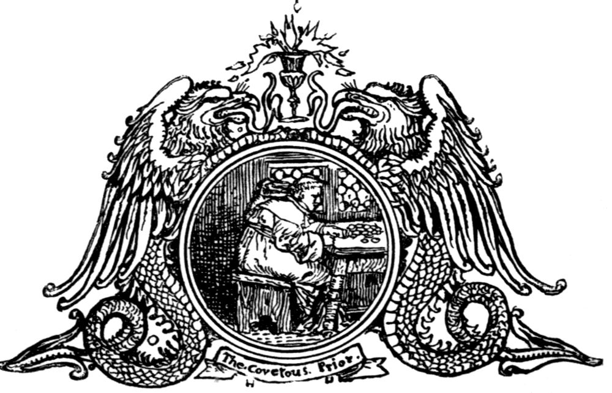
Part Six: A Beggar and a Barefoot Friar
Chapter 15: Little John Turns Barefoot Friar
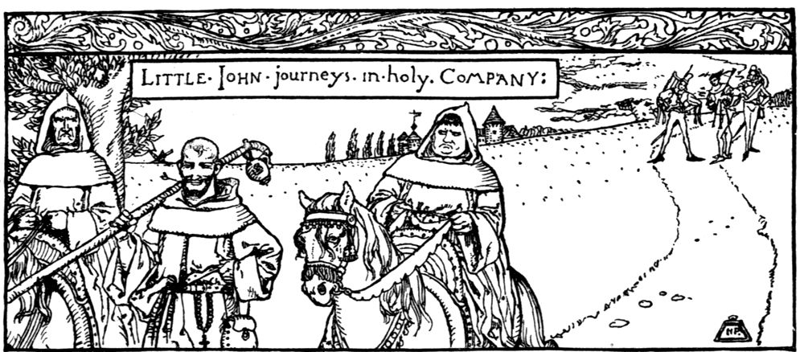
In which you will hear how Robin Hood and Little John dressed up, one as a beggar and the other as a wandering friar, and went out looking for adventures. You will also hear how Little John's prayers did some real good, and how Robin Hood thrashed four beggars and outwitted a greedy grain dealer.
Cold winter had passed and spring had come. The woods were not yet thick with leaves, but the new buds hung around the trees like a soft green mist. Out in the open country the meadows were a shining green, and the cornfields were the dark color of velvet, for they were thick and soft with young blades of grain. The plowboy shouted out in the sunshine, and in the fresh-turned purple furrows flocks of birds hunted for fat worms. The whole broad, damp earth smiled in the warm light, and every little green hill clapped its hands for joy.
Out in the open, in front of the greenwood tree, Robin Hood sat on a deerskin spread on the ground, basking in the sun like an old dog fox. He leaned back with his hands clasped around his knees and lazily watched Little John make a strong new bowstring. Little John was twisting long strands of hemp thread together, wetting the palms of his hands every now and then, and rolling the cord along his thigh. Close by sat Allan a Dale, fitting a new string to his harp.
At last Robin said, "I think I'd rather roam this forest in the gentle springtime than be King of all merry England. What palace in the whole wide world is as lovely as this sweet woodland is right now? And what king anywhere has such an appetite for his fancy plover's eggs and lampreys as I have for juicy venison and sparkling ale? Old Gaffer Swanthold had it right when he said, 'Better a crust with a happy heart than honey with a sour one.'"
"Yes," said Little John, rubbing his new bowstring with yellow beeswax, "the life we lead is the life for me. You talk about the springtime, but I think even winter has its own good times. You and I, master, had more than one merry day at the Blue Boar this past winter. Don't you remember the night you and Will Stutely and Friar Tuck and I spent at that very inn, with the two beggars and the wandering friar?"
"Yes," said merry Robin, laughing, "that was the night Will Stutely just had to snatch a kiss from the plump landlady, and got a mug of ale emptied over his head for his trouble."
"That's the one," said Little John, laughing too. "I thought that wandering friar sang a fine song. Friar Tuck, you have a quick ear for a tune. Don't you remember it?"
"I did have the hang of it once," said Tuck. "Let me see." He touched his forefinger to his forehead, thinking, and hummed to himself, stopping every so often to fit the bits he had to the bits he was hunting for in his memory. At last he had found all of it, and, clearing his throat, he sang merrily:
"In the blossoming hedge the robin cock sings,
For the sun is so merry and bright,
And he happily hops and he flutters his wings,
For his heart is so full of delight.
For the May blossoms fair,
And he hasn't a care,
And there's plenty to eat in the Maytime air.
When the flowers all die,
Then away he will fly,
To keep himself warm
In some jolly old barn
Where the snow and the wind will do him no harm.
"And that is the life of the wandering friar,
With plenty to eat and to drink;
For the housewife will keep him a seat by the fire,
And the pretty girls smile at his wink.
Then he heartily sings,
As his walking stick swings,
A rollicking song about holy things.
When the cold winds blow,
With the coming of snow,
There's a place by the fire
For the fatherly friar,
And a bowl with a roast apple, his heart's desire."
That was how Friar Tuck sang it, in a rich, mellow voice, rolling his head from side to side in time with the music. When he was done, everybody clapped and shouted with laughter, for the song suited him perfectly.
"Honestly," said Little John, "that's a fine song. If I weren't a yeoman of Sherwood Forest, I'd rather be a wandering friar than anything else in the world."
"Yes, it's a fine song," said Robin Hood, "but I thought those two burly beggars told the merrier stories and led the merrier life. Don't you remember what that big black-bearded fellow told us about his begging at the fair in York?"
"Yes," said Little John, "but what about the friar's story of the harvest festival in Kent? I say he led a merrier life than the other two."
"Well, for the honor of my own trade," said Friar Tuck, "I side with my good friend Little John."
"I'll stick to my own opinion," said Robin. "But what do you say, Little John, to a merry adventure on this fine day? You take a friar's robe out of our chest of costumes and put it on, and I'll stop the first beggar I meet and swap clothes with him. Then let's each wander around the countryside on this sweet day and see what happens to us."
"That suits me fine," said Little John. "Let's be off, I say."
So Little John and Friar Tuck went to the band's storehouse, and there they picked out the robe of a Gray Friar for the big yeoman. (The Gray Friars were called that because of the plain gray robes they wore.) Then they came out again, and a mighty roar of laughter went up. Not only had the band never seen Little John dressed like that before, but the robe was too short for him by a good hand's width. But Little John kept his hands folded inside his loose sleeves and his eyes humbly lowered to the ground, and from his belt hung a great long string of prayer beads.
Next Little John picked up his sturdy staff. From the end of it hung a chubby little leather jug, the kind pilgrims carry on the tips of their staffs. But what was in it, I can tell you, was something more like good Malmsey wine than the cold spring water that holy pilgrims carry. Then Robin got up and took his own sturdy staff in his hand, and he slipped ten golden angels into his purse. There were no beggar's clothes among the band's stores, so he would have to take his chances on meeting a beggar and buying the clothes off his back.
When everything was ready, the two yeomen set off on their way, striding along briskly through the misty morning. They walked down the forest path until they came to the highway, and then along the highway until it split in two, with one road leading to Blyth and the other to Gainsborough. There the yeomen stopped.
"You take the road to Gainsborough," said jolly Robin, "and I'll take the one to Blyth. So, goodbye, holy father, and I hope you won't have any reason to say your prayers in earnest before we meet again."
"Good day to you, beggar-to-be," said Little John, "and I hope you won't have any reason to beg for mercy before I see you next."
So each of them marched off sturdily on his way, until a green hill rose between them and they were out of each other's sight.
Little John walked along whistling, for there was nobody anywhere near on the road. In the budding hedges the little birds twittered merrily, and on both sides the green hills swept up to the sky, while the great white clouds of springtime sailed slowly and lazily over their tops. Uphill and down dale walked Little John, with the fresh wind blowing in his face and his robes fluttering out behind him, until at last he came to a crossroads where a road led off to Tuxford. There he met three pretty lasses, each carrying a basket of eggs to market.
"Where are you off to, my pretty maids?" he asked, and he stood in their path, holding his staff out in front of them to stop them.
At that they huddled together and nudged one another, until one of them spoke up and said, "We're going to the market at Tuxford, holy friar, to sell our eggs."
"Oh, for shame!" said Little John, looking them over with his head tilted to one side. "It's surely a pity that such pretty lasses should have to lug eggs to market. Let me tell you, if I had the arranging of things in this world, all three of you would have been dressed in the finest silks, and you'd ride on milk-white horses with pages beside you, and you'd eat nothing but whipped cream and strawberries. A life like that would suit your looks."
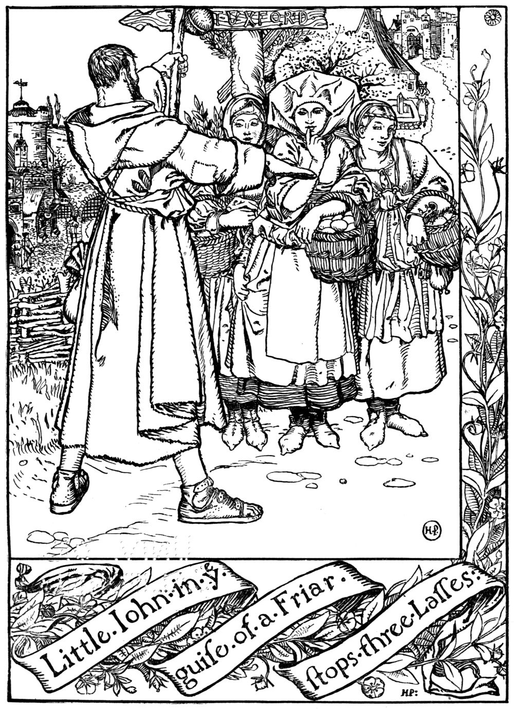
When they heard that speech, all three pretty maids looked down, blushing and simpering. One said, "Oh, my!" Another said, "Why, he's teasing us!" And the third said, "Just listen to the holy man!" But all the while they were peeking at Little John out of the corners of their eyes.
"Now look here," said Little John. "I can't stand by and watch such dainty young ladies as you carry baskets along a highway. Let me carry them myself, and one of you can carry my staff for me, if you'd like."
"Oh, no," said one of the lasses. "You can't carry three baskets all at once."
"Oh, yes, I can," said Little John, "and I'll show you right now. I thank good Saint Wilfred for giving me a clever head. Now watch. I take this great basket, like so. I tie my string of prayer beads around the handle, like this. And I slip the beads over my head and sling the basket onto my back, this way." And Little John did just what he said, so that the basket hung down behind him like a peddler's pack. Then he gave his staff to one of the maids, took a basket on each arm, turned his face toward Tuxford Town, and stepped out merrily, with a laughing maid on either side of him and one walking in front, carrying the staff. That was how they went along, and everyone they met stopped and stared after them, laughing, for nobody had ever seen such a funny sight as this tall, strapping Gray Friar, in robes much too short for him, loaded down with eggs and tramping along the road with three pretty lasses. Little John didn't care a bit about that. When people called out jokes at him, he answered back just as merrily, word for word.
So they walked along toward Tuxford, chatting and laughing, until they came near the town. There Little John stopped and set down the baskets, because he didn't want to go into the town and run the risk of meeting some of the Sheriff's men. "Oh, dear, my sweethearts," he said, "this is where I have to leave you. I didn't plan to come this way, but I'm glad I did. Now, before we part, we must drink to our friendship." With that he unhooked the leather jug from the end of his staff and pulled out the stopper. First he wiped the mouth of the jug on his sleeve, and then he handed it to the lass who had carried his staff. Each lass took a good long drink of what was inside, and when it had gone all the way around, Little John finished off what was left, so that not another drop could be squeezed out of it. Then he gave each lass a sweet kiss, wished them all a good day, and left them. But the maids stood watching him as he walked away whistling.
"What a pity," said one of them, "that such a strong, handsome lad has to be a man of the Church."
"Well," said Little John to himself as he strode along, "that wasn't such a bad thing to happen. Saint Dunstan, send me more of the same!"
After he had trudged along for a while, the warmth of the day began to make him thirsty again. He shook his leather jug next to his ear, but not a sound came out of it. Then he put it to his lips and tipped it high up in the air, but there wasn't a drop left in it.
"Little John! Little John!" he said sadly to himself, shaking his head. "Women will be the ruin of you yet, if you don't take better care of yourself."
But at last he reached the top of a hill and saw, down below him, a sweet little thatched inn tucked snugly into the valley, where the road dipped steeply down to it. At the sight of it, a voice inside him cried out, "Cheer up, my good friend! Down there is your heart's delight: a nice rest and a cup of brown beer." So he hurried down the hill and came to the little inn. A sign with a stag's head painted on it hung out front. In front of the door a clucking hen was scratching in the dust, with a brood of chicks around her feet, and the sparrows were chattering about their household business under the eaves. Everything was so sweet and peaceful that Little John's heart laughed inside him. Beside the door stood two sturdy little horses with broad, soft-padded saddles, just right for easy traveling, and they told him there were rich guests inside in the parlor. Out in front three merry fellows (a tinker, a peddler, and a beggar) sat on a bench in the sun, gulping down strong ale.
"Good day to you, my fine friends," said Little John, striding up to where they sat.
"Good day to you, holy father," said the merry Beggar with a grin. "But look, your robe is too short. You'd better cut a piece off the top and sew it onto the bottom, so it's long enough. But come on, sit down here with us and have a taste of ale, if your vows don't forbid it."
"Oh, no," said Little John, grinning too. "Blessed Saint Dunstan has given me special permission to indulge in that sort of thing as much as I please." And he dug his hand into his purse for money to pay for his drink.
"Well," said the Tinker, "unless your looks are lying, holy friar, good Saint Dunstan was wise, because without that permission, a follower of his like you would have an awful lot of penances to do. No, take your hand out of your purse, brother, because you're not paying for this round. Hey, landlord, a pot of ale!"
So the ale was brought and handed to Little John. He blew the foam back a little to make room for his lips. Then he tipped the bottom of the pot up higher and higher, until it pointed at the sky and he had to shut his eyes to keep out the dazzle of the sun. Then he took the pot away, because there was nothing left in it, and heaved a deep, full sigh, looking at the others with moist eyes and solemnly shaking his head.
"Hey, landlord!" cried the Peddler. "Bring this good fellow another pot of ale, because it's truly an honor to all of us to have someone here who can empty a mug so heartily."
So they talked merrily among themselves, until after a while Little John said, "Who rides those two horses over there?"
"Two holy men like you, brother," said the Beggar. "They're having a fine feast inside right now, because I smelled the steam of a boiled chicken just a moment ago. The landlady says they come from Fountain Abbey in Yorkshire, and they're going to Lincoln on business."
"They're a funny pair," said the Tinker, "because one is as skinny as an old woman's spindle, and the other is as fat as a suet pudding."
"Speaking of fat," said the Peddler, "you don't look too badly fed yourself, holy friar."
"Oh, no, not at all," said Little John. "What you see in me is what holy Saint Dunstan can do for those who serve him on a handful of dried peas and a trickle of cold water."
At that a great shout of laughter went up. "It's truly a wonder," said the Beggar. "Seeing the masterly way you put away that pot of ale, I'd have sworn you hadn't tasted plain water in a couple of months. Hasn't this same holy Saint Dunstan taught you a good song or two?"
"Well, as for that," said Little John, grinning, "maybe he's helped me learn a little tune or so."
"Then please, let's hear what he's taught you," said the Tinker.
So Little John cleared his throat, and, after saying a word or two about a certain hoarseness that was bothering him, he sang:
"Oh, pretty, pretty maid, where are you off to so?
Oh, please, please wait for your lover, you know,
And we'll gather the rose
Where it sweetly grows,
For the merry, merry winds are blo-o-o-wing."
Now it looked as though Little John's songs were never going to get sung, for he had gotten no further than that when the door of the inn opened and out came the two brothers from Fountain Abbey. The landlord followed them, rubbing his hands together the way a humble innkeeper does, as if he were washing them with invisible soap. But when the brothers of Fountain Abbey saw who was singing, dressed in the robes of a Gray Friar, they stopped short. The fat little Brother pulled his heavy eyebrows together in a mighty frown, and the thin Brother screwed up his face as if he had a mouthful of sour beer. Then, just as Little John drew in his breath for a new verse, the fat Brother roared out, his voice booming out of him like loud thunder out of a little cloud: "What's this, you wicked fellow? Is this a proper place for someone in your robes to sit drinking and singing worldly songs?"
"Well," said Little John, "since I can't drink and sing in such a fine place as Fountain Abbey, the way Your Reverence does, I have to drink and sing wherever I can."
"Shame on you!" cried the tall, skinny Brother in a harsh voice. "Shame on you, for disgracing the robe you wear with that kind of talk and that kind of behavior!"
"Well, listen to him!" said Little John. "Disgrace, you say? I think it's more of a disgrace for men dressed like us to squeeze hard-earned pennies out of the fists of poor, skinny peasants. Isn't that so, brother?"
At that the Tinker and the Peddler and the Beggar nudged one another and grinned from ear to ear, and the friars scowled blackly at Little John. But they couldn't think of anything else to say, so they turned to their horses. Then Little John suddenly got up from the bench where he was sitting and ran over to where the brothers of Fountain Abbey were climbing into their saddles.
"Let me hold your horses' bridles for you," he said. "Truly, your words have struck my sinful heart, so that I won't stay one minute longer in this den of wickedness. I'll go along with you instead. No wicked temptation, I'm sure, will come upon me in such holy company."
"No, fellow," said the skinny Brother harshly, for he could see Little John was making fun of them, "we don't want your company, so be off with you."
"Oh, dear," said Little John. "I'm truly sorry you don't like me or my company. But as for leaving you, I just can't do it, because my heart is so moved that, like it or not, I have to go with you, for the sake of your holy company."
All the good fellows on the bench grinned at that until their teeth shone, and even the landlord couldn't keep from smiling. As for the friars, they looked at each other, puzzled, and didn't know what to do. They were so proud that it made them sick with shame to think of riding along the highway with a wandering friar, in robes much too short for him, running along beside them. Yet they couldn't make Little John stay behind against his will, because they knew he could crack every bone in both their bodies in the blink of an eye if he felt like it. Then the fat Brother spoke up, more gently than before.
"Now, good brother," he said, "we'll be riding fast, and you'll be tired to death trying to keep up."
"I'm truly grateful to you for thinking of me," said Little John, "but don't worry, brother. My legs are strong, and I could run like a hare from here to Gainsborough."
At those words laughter came from the bench, and at that the skinny Brother's temper boiled over, like a pot spilling into the fire, with a great hissing and fuss. "Shame on you, you wicked fellow!" he cried. "Aren't you ashamed to bring such disgrace on the robe we wear? Stay here, you drunkard, with these pigs. You're no fit company for us."
"Well, how about that!" said Little John. "You hear that, landlord? You're not fit company for these holy men. Go back inside your alehouse. Why, if these most holy brothers of mine just give me the word, I'll beat your head with this sturdy staff until it's as soft as whipped eggs."
At those words a great shout of laughter went up from the men on the bench. The landlord's face went as red as a cherry from trying to swallow his laughter down into his stomach. But he kept his amusement to himself, because he didn't want to bring the ill will of the brothers of Fountain Abbey down on himself by laughing at them. So the two brothers, since there was nothing else they could do, climbed onto their horses, turned their noses toward Lincoln, and rode off.
"I can't stay any longer, my fine friends," said Little John, pushing himself in between the two horses, "so I'll wish you a good day. Off we go, the three of us!" With that, he swung his sturdy staff over his shoulder and trudged off, matching his pace to the pace of the two horses.
The two brothers glared at Little John when he pushed himself in between them like that, and then they drew as far away from him as they could, so that the yeoman walked in the middle of the road while they rode on the footpaths on either side. As they went off like that, the Tinker, the Peddler, and the Beggar ran skipping out into the middle of the highway, each with a pot in his hand, and watched them go, laughing.
As long as the people at the inn could see them, the brothers kept their horses at a sober walk, because they didn't want to make a bad business worse by looking as if they were running away from Little John. They couldn't help thinking how it would sound when people heard that the brothers of Fountain Abbey had scampered away from a wandering friar, like the Devil himself running off when blessed Saint Dunstan let go of his nose. (The old story goes that the Devil came to tempt Saint Dunstan, and the saint grabbed him by the nose with a pair of red-hot tongs.) But when they had crossed the top of the hill and the inn was out of sight, the fat Brother said to the thin Brother, "Brother Ambrose, hadn't we better go a little faster?"
"Why, that's right, my friend," spoke up Little John. "I think it would be a good idea to boil our pot a bit faster, because the day is getting on. So, as long as it doesn't jiggle your fat too much, onward, I say!"
The two friars didn't answer that, but they glared at Little John again with furious looks. Then, without another word, they clicked their tongues at their horses, and both of them broke into a canter. They galloped for more than a mile, and Little John ran between them as lightly as a stag, without getting the least bit out of breath. At last the fat Brother pulled up his horse with a groan, because he couldn't stand the bouncing any longer.
"Oh, dear," said Little John, without so much as a catch in his breath. "I was terribly afraid this rough pace would shake up your poor old fat belly."
The fat Friar didn't say a single word to that. He just stared straight ahead of him and chewed his lower lip. And now they traveled along more quietly, with Little John in the middle of the road whistling merrily to himself, and the two friars on the footpaths on either side, not saying a word.
Before long they met three merry minstrels, all dressed in red, who stared with all their might at the sight of a Gray Friar in such short robes walking in the middle of the road, while two brothers rode on the footpaths on richly decorated horses with their heads hanging in shame. When they came near the minstrels, Little John waved his staff like an usher clearing the way. "Make way!" he cried in a loud voice. "Make way! Make way! Here we come, the three of us!" How the minstrels stared, and how they laughed! But the fat Friar shook as if he had a fever, and the skinny Friar bowed his head down over his horse's neck.
Next they met two noble knights in fine clothes, with hawks on their wrists, and two lovely ladies dressed in silks and velvets, all riding on noble horses. They all made room, staring, as Little John and the two friars came along the road. Little John bowed to them humbly. "Greetings, lords and ladies," he said. "Here we come, the three of us."
They all laughed, and one of the lovely ladies called out, "Which three do you mean, my merry friend?"
They had passed each other by then, so Little John looked back over his shoulder and called out, "Big Jack, Skinny Jack, and Jack-Pudding the clown!"
At that the fat Friar groaned and looked as if he might fall out of his saddle from shame. The other brother didn't say anything, but he stared ahead of him with a grim, stony face.
Just ahead of them the road made a sudden turn around a tall hedge, and about thirty-five yards past the bend another road crossed the one they were on. When they came to the crossroads and were well away from the people they had passed, the skinny Friar suddenly pulled up his horse.
"Look here, fellow," he said, in a voice shaking with rage, "we've had enough of your vile company, and we don't care to be made fun of any longer. Go your way, and let us go ours in peace."
"Well, well!" said Little John. "I thought we were such a merry company, and here you go flaring up like fat in a frying pan. But honestly, I've had enough of you for today, even though I'll hate to lose your company. I know you'll miss me, but if you want me back, just whisper to Mister Wind, and he'll carry the message to me. But you see, I'm a poor man and you're rich. Please give me a penny or two to buy myself some bread and cheese at the next inn."
"We don't have any money, fellow," said the skinny Friar harshly. "Come on, Brother Thomas, let's go."
But Little John caught hold of the horses' bridles, one in each hand. "Do you really have no money on you at all?" he said. "Now please, brothers, for charity's sake, give me something to buy a crust of bread, even if it's only a penny."
"I'm telling you, fellow, we don't have any money!" thundered the fat little Friar with the great big voice.
"Do you really, truly, cross-your-heart have no money?" asked Little John.
"Not a farthing," said the skinny Friar sourly.
"Not a groat," said the fat Friar loudly.
"Oh, no," said Little John, "this won't do. I could never let such holy men as you go off without any money. Get down off your horses, both of you, right now, and we'll kneel here in the middle of the crossroads and pray to blessed Saint Dunstan to send us some money to help us on our journey."
"What did you say, you limb of the Devil?" cried the skinny Friar, practically grinding his teeth with rage. "Are you telling me, the high cellarer of Fountain Abbey, to climb down off my horse and kneel in the dirty road and pray to some beggarly old Saxon saint?"
"Now," said Little John, "I've got a good mind to crack your head for you for talking like that about good Saint Dunstan! But get down right now, because my patience won't last much longer, and I might forget that you're both men of the Church." And with that he twirled his sturdy staff until it whistled.
At that, both friars turned as pale as bread dough. Down slid the fat Brother off his horse on one side, and down slid the skinny Brother on the other.
"Now, brothers, down on your knees and pray," said Little John. He put a heavy hand on each one's shoulder and pushed them down onto their knees, and he knelt down too. Then Little John began to beg Saint Dunstan for money, in a great loud voice. After he had pleaded with the Saint for a while, he told the friars to feel in their purses and see whether the Saint had sent them anything. So each of them slowly put his hand into the purse that hung at his side, but brought nothing out.
"Ha!" said Little John. "Are your prayers as weak as all that? Then let's try again." And right away he began calling on Saint Dunstan again, something like this: "O gracious Saint Dunstan! Send some money right away to these poor people, before the fat one wastes away and gets as skinny as the skinny one, and the skinny one wastes away to nothing at all, before they get to Lincoln Town. But send them only ten shillings each, so they don't get puffed up with pride. Anything more than that you send, send to me."
"Now," he said, getting up, "let's see what each of us has." He stuck his hand into his own purse and pulled out four golden angels. "What do you have, brothers?" he said.
Once again each friar slowly put his hand into his purse, and once again he pulled it out with nothing in it.
"You don't have anything?" said Little John. "No, I'll bet there's something that has crept into the seams of your purses, and you've missed it. Let me look."
So he went first to the skinny Friar, stuck his hand into his purse, and pulled out a leather bag. From it he counted out a hundred and ten pounds in gold. "I thought," said Little John, "that you must have missed the money the blessed Saint sent you, in some odd corner of your purse. And now let me see whether you don't have some too, brother." Then he stuck his hand into the fat Friar's purse and pulled out a bag just like the other one, and from it he counted out seventy pounds. "Look at that, now," he said. "I knew the good Saint had sent you some little gift that you'd missed too."
Then he gave them one pound between the two of them and slipped the rest of the money into his own purse. "You gave me your holy word that you had no money," he said. "Since you're holy men, I trust that you'd never break your word once you'd given it, so I know good Saint Dunstan sent this in answer to my prayers. But since I prayed for only ten shillings to be sent to each of you, everything over and above that rightfully belongs to me, so I'll take it. Good day to you, brothers, and I hope you have a pleasant journey from here on." With that, he turned and left them, striding away. The friars looked at each other miserably, and then slowly and sadly they climbed back onto their horses and rode away without a word.
But Little John turned his steps back toward Sherwood Forest, and he whistled merrily as he strode along.
And now we'll see what happened to Robin Hood in his adventure as a beggar.
Chapter 16: Robin Hood Turns Beggar
After jolly Robin had left Little John at the fork in the road, he walked merrily on through the warm, mellow sunshine. Every now and then he would skip and jump, or sing a scrap of a song, out of pure joy in the day. The sweetness of springtime had made his heart as frisky as a young colt's that has just been turned out to grass. Sometimes he would walk a long way gazing up at the great white puffy clouds moving slowly across the deep blue sky. Then he would stop and drink in how full of life everything was, for the hedgerows were tenderly budding and the grass of the meadows was growing long and green. Then again he would stand still and listen to the pretty songs of the little birds in the thickets, or to the clear crow of the rooster daring the sky to rain, and at that he would laugh, for it took very little to tickle Robin's heart into merriment. So he tramped bravely along, always willing to stop for this reason or that, and always ready to chat with any merry lasses he met now and then. And so the morning slipped by, but still he met no beggar to swap clothes with. "If my luck doesn't change soon," he said, "I'm likely to have an empty day of it. It's nearly half gone already, and though I've had a merry walk through the countryside, I still don't know a thing about a beggar's life."
After a while he began to get hungry, and then his mind turned away from springtime and flowers and birds, and dwelt very lovingly on boiled chicken, Malmsey, white bread, and other such things. "I wish I had Willie Wynkin's wishing coat," he said to himself. "I know perfectly well what I'd wish for, and here it is." And he counted off the things he wanted on the fingers of his left hand with the forefinger of his right. "First, I'd have a sweet brown pie of tender larks. Mind you, not cooked dry, but with a good soaking of gravy to keep it moist. Next, I'd have a nice young hen, nicely boiled, with tender pigeons' eggs, cleverly sliced, laid all around the edge of the platter. With these I'd have a long, slim loaf of wheat bread baked on the hearth. It should be warm from the fire, with a glossy brown crust the color of my own Maid Marian's hair, and that crust should be as crisp and brittle as the thin white ice that lies across the plowed furrows on an early winter's morning. Those will do for the solid things. But along with them I must have three jugs, fat and round: one full of Malmsey, one of canary, and one brimming full of my own dear strong sack." That's what Robin said to himself, and the corners of his mouth grew wet at the thought of all the good things he had dreamed up.
Still talking to himself, he came to a place where the dusty road turned sharply around a hedge, all tender with the green of the new leaves. And there in front of him he saw a sturdy fellow sitting on a stile (the little set of steps for climbing over a fence), swinging his legs and doing nothing at all. All around this hearty rogue there dangled pouches and bags of every size and kind, a dozen or more, with great wide gaping mouths, like a nest of hungry jackdaws. His coat was belted in at the waist, and it was patched with as many colors as there are stripes on a Maypole in springtime. On his head he wore a great tall leather cap, and across his knees lay a stout blackthorn quarterstaff, every bit as long and heavy as Robin's. A jollier beggar never tramped the lanes and byways of Nottinghamshire. His eyes were as gray as slate, and they snapped and twinkled and danced with fun, and his black hair grew close all over his head in tight little curls.
"Hello there, my good fellow," said Robin when he had come up close. "What are you doing here on this merry day, with the flowers peeping out and the buds swelling?"
The other man winked one eye, and right away he sang out in a merry voice:
"I sit upon the stile,
And I sing a little while
As I wait for my own true dear, O,
For the sun is shining bright,
And the leaves are dancing light,
And the little bird sings she is near, O.
"And that's just how it is with me, my fine lad, except that my sweetheart isn't coming."
"Now, that's a lovely song," said Robin, "and if I were in the mood to listen to you, I'd happily hear more. But I have two serious things to ask you, so listen, please."
At this the jolly Beggar cocked his head to one side like a rascal of a magpie. "I'm a poor jug to pour heavy things into, good friend," he said. "And unless I'm mistaken, you don't have many serious words to spare at the best of times."
"No," said jolly Robin, "but what I want to say first is the most serious thought of all to me. Namely: 'Where can I get something to eat and drink?'"
"Is that so?" said the Beggar. "Well, I don't think about that seriously at all. I eat when I can get something, and munch my crust when I can't get a crumb more. And when there's no ale to be had, I wash the dust out of my throat with a trickle of cold water. When you came along I was sitting here wondering whether to have my breakfast or not. I love to let my hunger grow really sharp before I eat, because then a dry crust is as good to me as a venison pie with suet and raisins is to mighty King Harry. I've got a sharp hunger on me now, but I think in a little while it will ripen into a nice mellow appetite."
"Well, honestly," said merry Robin, laughing, "you've got a funny way of talking. But do you truly have nothing on you but a dry crust? I'd say your bags and pouches look much too fat and full for such thin food."
"Why, maybe there's some other cold food in them," said the Beggar slyly.
"And have you nothing to drink but cold water?" said Robin.
"Not a single drop," said the Beggar. "Over beyond that clump of trees there's as sweet a little inn as you ever laid eyes on. But I don't go there, because they treat me nastily. Once, when the good Prior of Emmet was having dinner there, the landlady set a dear little tart of stewed crab apples and barley sugar on the windowsill to cool. When I saw it there, I was afraid it might get lost, so I took it along with me until I could find out whose it was. Ever since then they've behaved very badly toward me. Still, I have to tell the truth: they have the best ale there that ever rolled over my tongue."
Robin laughed out loud at that. "Why," he said, "that was a shabby way to treat you for your kindness. But tell me honestly, what have you got in your pouches?"
"Why," said the Beggar, peeking into the mouths of his bags, "here I find a good big piece of pigeon pie, wrapped in a cabbage leaf to hold in the gravy. Here I see a fine streaky piece of brawn (that's pork, pressed and jellied), and here a nice lump of white bread. Here I find four oatcakes and a cold ham hock. Ha! Now this is strange, but here I see six eggs that must have wandered in by accident from some chicken yard around here. They're raw, but roasted on the coals and spread with a bit of butter that I see—"
"Stop, good friend!" cried Robin, holding up his hand. "You're making my poor stomach shake with joy at the sweet things you're telling me. If you'll give me something to eat, I'll hurry straight over to that little inn you were talking about just now, and bring back a skin of ale for you and me to drink."
"Friend, you've said enough," said the Beggar, climbing down from the stile. "I'll feast you with the best I have, and thank Saint Cedric for your company. But, my little chick, please bring three quarts of ale at least, one for you to drink and two for me, because my thirst is so great I think I could drink ale the way the sands of the River Dee drink up salt water."
So Robin left the Beggar right away. The Beggar, for his part, went over to a budding lime bush behind the hedge, and there he spread out his feast on the grass and roasted his eggs over a little fire of sticks, with a skill he had picked up from long practice at that sort of thing. After a while Robin came back carrying a good big skin of ale on his shoulder, and set it down on the grass. Then he looked at the feast spread on the ground—and it was a fine sight to see—and slowly rubbed his hand over his stomach, for to his hungry eyes it seemed the finest sight he had seen in all his life.
"Friend," said the Beggar, "let me feel the weight of that skin."
"Yes, of course," said Robin. "Help yourself, my little chick, and meanwhile let me see whether your pigeon pie is fresh or not."
So the one grabbed the ale and the other grabbed the pigeon pie, and for a while nothing could be heard but the munching of food and the gurgle of ale leaving the skin.
At last, after a long time of this, Robin pushed the food away from him and heaved a great sigh of deep contentment, for he felt as though he had been made all over again, brand new.
"And now, good friend," he said, leaning on one elbow, "I'd like to get at that other serious matter I mentioned a little while ago."
"What!" said the Beggar, shocked. "You surely don't mean to talk about serious business over ale like this!"
"No, no," said Robin, laughing. "I wouldn't want to interrupt your thirst, my friend. You drink while I talk. Here it is: I'd like you to know that I've taken a liking to your trade, and I'd love to have a taste of a beggar's life myself."
The Beggar said, "I'm not surprised you've taken a liking to my way of life, my good fellow. But 'liking' and 'doing' are two very different things. I tell you, friend, a man has to serve a long apprenticeship before he can even become a clapper-dudgeon, let alone a crank or an Abraham-man." (Those were all names for different kinds of wandering beggars, who swarmed over the roads of England for hundreds of years afterward. The playwright Thomas Dekker later wrote a whole book about their tricks and their secret language.) "I tell you, lad, you're too old to start learning something that could take you years to get the hang of."
"Maybe so," said Robin, "for that reminds me that old Gaffer Swanthold says, 'Jack the Shoemaker bakes bad bread, and Tom the Baker makes bad shoes.' All the same, I've a mind to taste a beggar's life, and all I need is the clothing to be as good a beggar as anybody."
"I tell you, fellow," said the Beggar, "if you were dressed as sweetly as good Saint Wynten, the patron saint of our trade, you'd still never make a beggar. Why, the first jolly tramp you met would beat you into a pudding for poking your nose into a trade that doesn't belong to you."
"All the same," said Robin, "I'd like to try it. And I think I'll swap clothes with you, because your outfit looks pretty, not to say colorful. And I'll not only swap clothes, I'll give you two gold angels on top of it. I brought my good stout staff along, thinking I might have to rap some brother of your trade over the head by way of argument on this point. But I like you so much for the feast you've given me that I wouldn't lift even my little finger against you, so you needn't be the least bit afraid."
The Beggar listened to all this with his knuckles on his hips, and when Robin had finished, he cocked his head to one side and stuck his tongue in his cheek.
"Well, listen to him!" he said at last. "Lift your finger against me, indeed! Are you out of your mind, man? My name is Riccon Hazel, and I come from Holywell in Flintshire, over by the River Dee. I tell you, you rascal, I've cracked the heads of plenty of better men than you, and I'd scald your skull for you right now if it weren't for the ale you've given me. Now you won't get so much as one rag of my coat, not even if it would save you from hanging."
"Now, fellow," said Robin, "I'd hate to spoil that pretty head of yours. But I'll tell you plainly, if it weren't for this feast, I'd do something to you that would stop your tramping around the country for a good many days to come. Keep your lips shut, lad, or your luck will tumble out of your mouth along with your words!"
"Then shame on you, and too bad for you, man, for you've brought trouble on yourself today!" cried the Beggar, getting up and taking hold of his staff. "Pick up your club and defend yourself, fellow, because I'm not only going to beat you, I'm going to take your money too, and leave you without so much as a clipped groat to buy yourself a lump of goose grease to rub on your cracked head. So defend yourself, I say!"
Up jumped merry Robin and grabbed his staff too. "Take my money if you can," he said. "I promise to give you every farthing of it, freely, if you so much as touch me." And he twirled his staff in his fingers until it whistled.
Then the Beggar swung his staff too, and struck a mighty blow at Robin, which the yeoman turned aside. Three blows the Beggar struck, and not one of them touched so much as a hair of Robin's head. Then brave Robin saw his chance, and before you could count three, Riccon's staff was over the hedge, and Riccon himself was lying on the green grass with no more life in him than an empty pudding bag.
"Well, now!" said merry Robin, laughing. "Will you have my hide or my money, my little chick?" But the other man didn't say a word in reply. Then Robin saw what a state he was in, and that he had been knocked senseless by the blow, so he ran, still laughing, and fetched the skin of ale. He poured some of it on the Beggar's head and some down his throat, so that before long the man opened his eyes and looked around as if wondering why he was lying on his back.
When Robin saw that the fellow had gathered up some of the wits that had just been knocked out of his head, he said, "Now, my good fellow, will you swap clothes with me, or will I have to tap you again? Here are two gold angels, if you'll freely give me all your rags and bags and your cap and things. If you won't give them freely, I'm very much afraid I'll have to—" And he looked up and down the length of his staff.
Riccon sat up and rubbed the bump on his head. "Well, curse it!" he said. "I was planning to give you a fine thrashing, fellow. I don't know how it happened, but I seem to have bought more beer than I can drink. If I have to give up my clothes, then I have to. But first promise me, on your word as an honest yeoman, that you won't take anything from me but my clothes."
"I promise, on the word of an honest yeoman," said Robin, thinking the fellow had a few pennies he wanted to save.
At that the Beggar drew a little knife that hung at his side, slit open the lining of his coat, and pulled out ten bright gold pounds. He laid them on the ground beside him, with a sly wink at Robin. "Now you can have my clothes, and welcome," he said. "And you could have had them in exchange for yours without its costing you a single farthing, let alone two gold angels."
"Why," said Robin, laughing, "you're a sly one! And I'll tell you honestly, if I'd known you had so much money on you, maybe you wouldn't have carried it away, because I'd bet you didn't come by it honestly."
Then each of them stripped off his clothes and put on the other's, and Robin Hood made as fine a hearty beggar as you could find on any summer's day. But sturdy Riccon of Holywell skipped and jumped and danced for joy at the fine suit of Lincoln green he had won. "Now I'm a bird with bright feathers," he said. "Honestly, my dear Moll Peascod would never know me in this outfit. You can keep the leftovers of the feast, friend, because I mean to live well and heartily as long as my money lasts and my clothes are bright."
So he turned and left Robin, and climbed over the stile and was gone. But Robin heard him singing beyond the hedge as he strode away:
"For Polly is smiling and Molly is glad
When the beggar comes in at the door,
And Jack and Dick call him a fine hearty lad,
And the landlady chalks up a great score.
Then hey, Willy Waddykin,
Stay, Billy Waddykin,
And let the brown ale flow free, flow free,
The beggar's the man for me."
Robin listened until the song faded away in the distance. Then he crossed the stile into the road too, but he pointed his toes the other way from where the Beggar had gone. The road led up a gentle hill, and up the hill Robin walked, with ten or more bags dangling around his legs. On he strolled for a long time, but he found no other adventure. The road was empty except for himself as he went along kicking up little clouds of dust with every step. For it was noon, the most peaceful time of the whole day, next to twilight. All the earth lay quiet, resting at dinnertime. The plowhorses stood in the furrow munching, with big bags of sweet feed over their noses. The plowman sat under the hedge, and the plowboy too, and they were munching as well, each holding a big piece of bread in one fist and a big piece of cheese in the other.
So Robin, with the whole empty road to himself, strode along whistling merrily, his bags and pouches bobbing and dangling against his thighs. At last he came to a place where a little grassy path left the road. It went over a stile and down a hill into a little hollow, then across a stream in the valley and up the hill on the other side, until it reached a windmill that stood on the top of the rise, where the wind bent the trees back and forth. Robin looked at the spot and liked it. And for no reason except that he felt like it, he took the little path and walked down the grassy, sunny slope of the open meadow, and so came to the little hollow. And before he knew it, he had come upon four hearty fellows sitting with their legs stretched out around a fine feast spread on the ground.
They were four merry beggars, and each had a little board hung around his neck, resting on his chest. On one board was written, "I am blind," on another, "I am deaf," on another, "I am dumb" (which meant he could not speak), and on the fourth, "Pity the lame one." But although the troubles written on the boards seemed so terrible, the four sturdy fellows sat there feasting as merrily as if Cain's wife had never opened the jug that held all the world's misfortunes and let them out like a cloud of flies to pester us.
The deaf man was the first to hear Robin, for he said, "Listen, brothers, I hear somebody coming." And the blind man was the first to see him, for he said, "He's an honest man, brothers, and one of the same trade as ourselves." Then the dumb man called out to him in a great loud voice, "Welcome, brother! Come and sit down while there's still some of the feast left, and a little Malmsey in the jug." At this the lame man, who had taken off his wooden leg and unstrapped his own real leg and was sitting with it stretched out on the grass to rest it, made room for Robin among them. "We're glad to see you, brother," he said, holding out the flask of Malmsey.
"Why," said Robin, laughing, and weighing the flask in his hands before he drank, "I'd say it's only right for you all to be glad to see me, seeing that I bring sight to the blind, speech to the dumb, hearing to the deaf, and such a fine strong leg to a lame man. I drink to your happiness, brothers, since I can't very well drink to your health, seeing that you're all perfectly sound already, in wind and limb."
At this they all grinned. The Blind beggar, who was the chief man among them, and the broadest-shouldered and strongest rascal of them all, slapped Robin on the shoulder and swore he was a very merry joker.
"Where have you come from, lad?" asked the Dumb man.
"Why," said Robin, "I came this morning from sleeping the night in Sherwood."
"Is that so?" said the Deaf man. "I wouldn't sleep one night in Sherwood for all the money we four are carrying to Lincoln Town. If Robin Hood caught one of our trade in his woods, I think he'd crop his ears."
"I think he would, too," said Robin, laughing. "But what's this money you're talking about?"
Then the Lame man spoke up. "Our king, Peter of York," he said, "has sent us to Lincoln with the money that—"
"Hold on, brother Hodge," said the Blind man, cutting in. "I don't mean to doubt our brother here, but remember, we don't know him. What are you, brother? Upright-man, Jurkman, Clapper-dudgeon, Dommerer, or Abraham-man?"
At these words Robin looked from one man to the other with his mouth hanging open. "Well," he said, "I hope I'm an upright man, at least. I try to be. But I don't know what you mean by all that jargon, brother. It would be much better, I think, if the Dumb man there, who has such a sweet voice, would give us a song."
At these words they all fell silent, and after a while the Blind man spoke again. "You must be joking when you say you don't understand those words," he said. "Answer me this: Have you ever fibbed a chouse quarrons in the Rome pad for the loure in his bung?"
That was the old secret slang of beggars and thieves, and what it meant was, "Have you ever beaten a man or a fine gentleman on the highway for the money in his purse?"
"Now, that's enough!" said Robin Hood crossly. "If you're making fun of me by rattling off such gibberish, it'll go badly for all of you, I promise you. I've more than half a mind to crack all four of your heads, and I'd do it, too, if it weren't for the sweet Malmsey you've given me. Brother, pass the jug before it gets cold."
But all four beggars leaped to their feet when Robin had finished speaking, and the Blind man snatched up a heavy knotted club that lay beside him on the grass, and the others did the same. Robin saw that things were likely to go badly for him, though he didn't know what all the fuss was about. So he jumped to his feet too, grabbed his trusty staff, put his back against the tree, and stood on guard against them. "What's this!" he cried, twirling his staff in his fingers. "Would you four big strong fellows gang up on one man? Stand back, you rascals, or I'll mark up your skulls until they've got as many marks on them as a tavern door with all the drinkers' debts chalked up on it! Are you crazy? I haven't done you any harm."
"You're lying!" said the one who was pretending to be blind, who was the leader of the others because he was the strongest villain. "You're lying! You've come among us as a dirty spy. But your ears have heard too much for your body's good, and you won't leave this place except feet first, for today you're going to die! Come on, brothers, all together! Down with him!" Then, whirling up his club, he rushed at Robin like an angry bull rushing at a red rag. But Robin was ready for anything. Crick! Crack! He struck two blows as quick as a wink, and down went the Blind man, rolling over and over on the grass.
At this the others backed off and stood a little way away, scowling at Robin. "Come on, you scum!" he cried merrily. "Here's cakes and ale for everybody. Now, who wants to be served next?"
The beggars didn't answer a word. They just looked at Robin the way the great giant Blunderbore looked at brave Jack the Giant Killer, as if they'd like to eat him up, body and bones. All the same, they didn't care to come any closer to him and his terrible staff. Then, seeing them hang back like that, Robin suddenly leaped at them, striking even as he leaped. Down went the Dumb man, and away flew his club out of his hand as he fell. At this the other two ducked to dodge another blow, and then they took to their heels and scampered off, one one way and the other the other, as if they had the west wind's boots on their feet. Robin looked after them, laughing, and thought he had never seen such a fast runner as the Lame man. But neither beggar stopped or turned around, for each could still feel in his mind the wind of Robin's staff whistling past his ears.
Then Robin turned to the two big rascals lying on the ground. "These fellows said something about some money they were taking to Lincoln," he said. "I think I may find it on this sturdy blind fellow, whose eyes are as sharp as any trained woodsman's in Nottingham or Yorkshire. It would be a shame to leave good money in the pockets of thieving rascals like these." And with that he bent over the burly rogue and searched through his rags and tatters, until before long his fingers felt a leather pouch slung around the man's body underneath his patched and tattered coat. He pulled this off, and weighing it in his hands, he thought how very heavy it was. "Wouldn't it be sweet," he said to himself, "if this were full of gold instead of copper pennies!" Then he sat down on the grass, opened the pouch, and looked inside. There he found four round rolls wrapped up in soft sheepskin leather. He opened one of these rolls, and then, I promise you, his mouth fell open and his eyes stared as if they would never close again. For what did he see but fifty pounds in bright gold money! He opened the other rolls and found the same in each of them: fifty bright, freshly minted gold pounds. "I've often heard that the Beggars' Guild was too rich for its own good," said Robin, "but I never imagined they sent sums like this to their treasury. I'll take it with me, because it'll be put to better use in charity and for the good of my merry band than in making rascals like these rich." And with that he rolled the money up in the sheepskin again, put it back in the pouch, and tucked the pouch inside his shirt. Then he picked up the flask of Malmsey and held it out toward the two fellows lying on the grass. "Sweet friends," he said, "I drink your health, and thank you kindly for what you've so generously given me today. And so I wish you good day." Then he picked up his staff, left the place, and went merrily on his way.
But when the two big beggars who had been rapped on the head came to their senses and sat up, and when the other two had gotten over their fright and come back, they were as sad and gloomy as four frogs in a dry spell. For two of them had cracked heads, their Malmsey was all gone, and they didn't have so much as a farthing left among them to cross their palms with.
After Robin left the little hollow, he strode along merrily, singing as he went. He was so cheerful, and such a fine sturdy beggar, and on top of that so fresh and clean, that every merry lass he met had a kind word for him and wasn't the least bit afraid. Even the dogs, which usually hate the sight of a beggar, sniffed at his legs in a friendly way and wagged their tails pleasantly. For dogs know an honest man by his smell, and an honest man Robin was—in his own way.
So he went along until at last he came to the cross by the roadside near Ollerton. Feeling a bit tired, he sat down to rest on the grassy bank in front of it. "It's getting close to time," he said to himself, "that I was heading back to Sherwood. Still, I'd very much like to have one more merry adventure before I go back to my jolly band."
So he looked up the road and down the road to see who might come along, until at last he saw someone approaching on horseback. When the traveler came near enough for Robin to see him well, Robin laughed, for he cut a strange enough figure. He was a thin, shriveled little man, and to look at him you couldn't tell whether he was thirty years old or sixty, he was so dried up, right down to skin and bone. As for the horse, it was as thin as its rider, and the two of them looked as though they had been baked in Mother Huddle's Oven, where people get dried up so that they live forever.
But although Robin laughed at the comical sight, he knew who the traveler was. He was a rich corn engrosser of Worksop. An engrosser was a dealer who bought up all the grain in a district so that nobody else had any to sell, and then held on to it until the price climbed sky-high. This man had done it more than once: bought all the grain in the countryside and held it until it reached famine prices, making a great deal of money out of poor people's need. And for this he was hated far and wide by everybody who knew anything about him.
So after a while the Corn Engrosser came riding up to where Robin sat. At once merry Robin stepped out, in all his rags and tatters, with his bags and pouches dangling around him, laid his hand on the horse's bridle, and called on the man to stop.
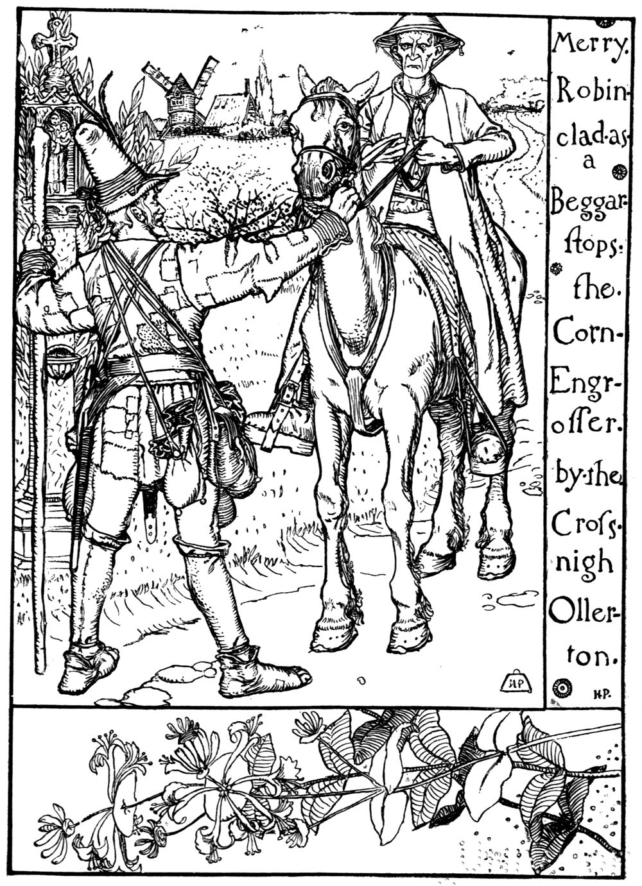
"Who are you, fellow, that dares to stop me like this on the King's highway?" said the lean man, in a dry, sour voice.
"Pity a poor beggar," said Robin. "Just give me a farthing to buy myself a piece of bread."
"Shame on you!" snarled the other. "Sturdy rogues like you would be better off locked up in prison, or dancing on thin air with a rope collar around your neck, than strolling the highways so freely."
"Tut," said Robin, "listen to how you talk! You and I are brothers, man. Don't we both take from poor people what they can't afford to spare? Don't we both make our living by doing nothing that's any good? Don't we both live without ever laying a hand to honest work? Has either of us ever rubbed his thumbs over an honestly earned farthing? Come on! We're brothers, I tell you. Only you're rich and I'm poor. So I'm asking you once again, please give me a penny."
"How dare you babble at me like that, you scoundrel?" cried the Corn Engrosser in a rage. "I'll have you soundly whipped if I ever catch you in any town where the law can lay hands on you! As for giving you a penny, I swear I don't have a single groat in my purse. If Robin Hood himself caught me, he could search me from head to heel without finding the smallest coin on me. I hope I'm too sly to travel this close to Sherwood with money in my pouch, with that thief loose in the woods."
Then merry Robin looked up and down the road, as if to make sure nobody was near, and then he came up close to the Corn Engrosser, stood on tiptoe, and spoke into his ear. "Do you really think I'm a beggar, the way I seem to be? Look at me. There isn't a speck of dirt on my hands or my face or my body. Did you ever see a beggar like that? I tell you, I'm just as honest a man as you are. Look, friend." And he took the purse of money out of his shirt and showed the bright gold pieces to the dazzled eyes of the Corn Engrosser. "Friend, these rags are only here to hide an honest rich man from the eyes of Robin Hood."
"Put your money away, lad!" cried the other quickly. "Are you a fool, trusting beggar's rags to protect you from Robin Hood? If he caught you, he'd strip you to the skin, because he hates a strapping beggar as much as he hates a fat priest, or people of my sort."
"Is that really so?" said Robin. "If I'd known that, maybe I wouldn't have come around here dressed like this. But I have to keep going now, because a great deal depends on my journey. Where are you headed, friend?"
"I'm going to Grantham," said the Corn Engrosser, "but I'll spend the night at Newark, if I can get that far."
"Why, I'm on my way to Newark myself," said merry Robin. "So, since two honest men are better than one on roads haunted by a fellow like this Robin Hood, I'll jog along with you, if you don't mind my company."
"Well, since you're an honest fellow and a rich fellow," said the Corn Engrosser, "I don't mind your company. But to tell the truth, I'm not very fond of beggars."
"Then let's go," said Robin, "for the day is fading, and it'll be dark before we reach Newark." So off they went, the lean horse hobbling along as before and Robin running beside it. He was shaking with laughter so hard inside that he could hardly stand, but he didn't dare laugh out loud, in case the Corn Engrosser suspected something. So they traveled on until they reached a hill just on the edge of Sherwood. Here the lean man slowed his lean horse to a walk, because the road was steep and he wanted to save his horse's strength, since he had a long way to go before he reached Newark. Then he turned in his saddle and spoke to Robin again, for the first time since they had left the cross. "This is where you're in the most danger, friend," he said, "because here we're closest to that wicked thief Robin Hood and the place where he lives. Past this we come out into open, honest country again, and then we'll be safer on our journey."
"Oh, no!" said Robin. "I wish I had as little money on me as you have, because I'm afraid that today Robin Hood is going to get every groat I own."
Then the other man looked at Robin and gave him a sly wink. "I'll tell you something, friend," he said. "I have nearly as much on me as you have, but it's hidden so that no rascal in Sherwood could ever find it."
"You must be joking," said Robin. "How could anybody hide as much as two hundred pounds on his person?"
"Well, since you're such an honest fellow, and so much younger than I am, I'll tell you something I've never told another living soul. That way you'll learn never again to do anything so foolish as trusting beggar's clothes to guard you from Robin Hood. Do you see these clogs on my feet?"
"Yes," said Robin, laughing, "I certainly do. They're big enough for anybody to see, even if his eyes were as foggy as Peter Patter's, who never could see when it was time to go to work."
"Quiet, friend," said the Corn Engrosser, "this is no joking matter. The soles of these clogs aren't what they look like. Each one is a sweet little box. If you twist the second nail back from the toe, the top of the shoe and part of the sole lift up like a lid, and in the spaces inside there are ninety bright gold pounds in each shoe, all wrapped in hair to keep them from clinking and giving themselves away."
When the Corn Engrosser had told him this, Robin burst into a roar of laughter, and laying his hands on the bridle, he stopped the sad-looking horse. "Stop, good friend," he said, between bursts of laughter. "You're the slyest old fox I ever saw in all my life! In the soles of his shoes, he says! If I ever trust a poor-looking man again, shave my head and paint it blue! For cunning, give me a grain dealer, a horse trader, a land agent, and a jackdaw, I say!" And he laughed again until he shook in his shoes.
All this time the Corn Engrosser had been staring at Robin with his mouth hanging open in amazement. "Are you crazy," he said, "talking like this, so loudly and in a place like this? Let's get going, and save your laughing until we're safe and sound at Newark."
"No," said Robin, with tears of laughter wet on his cheeks, "on second thought, I'm going no farther than right here, because I have good friends around here. You can go on if you like, you sweet, pretty fellow, but you'll have to go on barefoot, because I'm afraid your shoes must stay behind. Off with them, friend, for I tell you I've taken a great fancy to them."
At these words the grain dealer went as white as a linen napkin. "Who are you, talking like this?" he said.
Then merry Robin laughed again. "People around here call me Robin Hood," he said. "So, my sweet friend, you'd better do as I tell you and give me your shoes. And hurry up, please, or you won't get to fair Newark Town until after dark."
At the sound of the name Robin Hood, the grain dealer shook with fear so badly that he had to grab his horse's mane to keep from falling off its back. Then at once, without another word, he pulled off his clogs and let them drop onto the road. Robin, still holding the bridle, bent down and picked them up. Then he said, "Sweet friend, I'm in the habit of asking the people I do business with to come and feast with me in Sherwood. I won't ask you, because of our pleasant journey together. For I tell you, there are people in Sherwood who wouldn't be as gentle with you as I've been. The name of corn engrosser leaves a nasty taste on the tongue of every honest man. Take a fool's advice and don't come so close to Sherwood again, or some day you might suddenly find a yard-long arrow between your ribs. And so I wish you good day." With that he slapped the horse on the flank, and off went horse and rider. The man's face was all dripping with the sweat of fright, and never again, I promise you, was he found as close to Sherwood Forest as he had been that day.
Robin stood and watched him go, and when he was well out of sight, he turned, laughing, and went into the forest with the shoes in his hand.
That night in sweet Sherwood the red fires glowed brightly, their flickering light playing on tree and bush, and all around sat or lay the sturdy fellows of the band, to hear Robin Hood and Little John tell about their adventures. Everybody listened closely, and again and again the woods rang with shouts of laughter.
When the whole thing was told, Friar Tuck spoke up. "Good master," he said, "you've had a fine time of it, but I still stick to what I said: the life of the barefoot friar is the merrier of the two."
"No," said Will Stutely, "I agree with our master, that he had the better time of the two, because he had two good bouts at quarterstaff today."
So some of the band sided with Robin Hood and some with Little John. As for me, I think— But I'll leave it to you to decide for yourselves which one you side with.
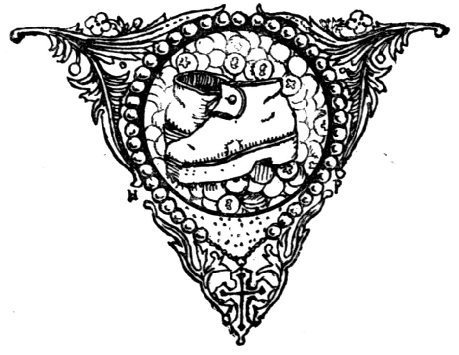
Part Seven: Robin Hood and the Queen
Chapter 17: Robin Hood Shoots Before Queen Eleanor
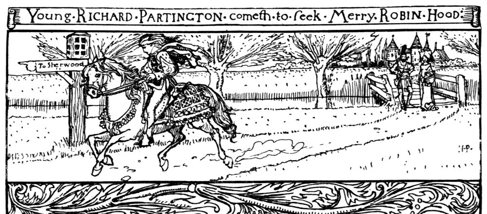
In which you will hear how Queen Eleanor sent for Robin Hood to come to the Court in famous London Town, and how Robin Hood came when she called. You will also hear how King Henry chased Robin across the country, and never caught him.
The highroad stretched out white and dusty in the hot summer afternoon sun, and the trees stood without a stir along the roadside. All across the meadows the hot air danced and shimmered. In the clear water of the brook down in the lowlands, where a little stone bridge crossed over it, the fish hung perfectly still above the yellow gravel, and a dragonfly sat without moving on the sharp tip of a spike of rushes, its wings glittering in the sun.
Along the road came a youth riding a beautiful milk-white Barbary horse. The people he passed stopped and turned to stare after him, for never had so handsome a lad, or one so brightly dressed, been seen in Nottingham before. He couldn't have been more than sixteen years old, and he was as fair as any girl. His long yellow hair streamed out behind him as he rode, and he was dressed all in silk and velvet, with jewels flashing and his dagger jingling against the front of his saddle. This was the Queen's Page, young Richard Partington, who had come from famous London Town down into Nottinghamshire, on Her Majesty's orders, to look for Robin Hood in Sherwood Forest.
The road was hot and dusty, and his journey had been a long one, for that day he had ridden all the way from Leicester Town, a good twenty miles and more. So young Partington was very glad when he saw ahead of him a sweet little inn, all shady and cool under the trees, with a sign hanging in front of its door that bore the picture of a blue boar. Here he pulled up his horse and called loudly for a jug of Rhenish wine (wine from the valley of the Rhine), because strong country ale was far too coarse a drink for this young gentleman. Five hearty fellows sat on the bench in the pleasant shade of the wide-spreading oak in front of the inn door, drinking ale and beer, and all of them stared hard at this handsome, splendid lad. The two sturdiest of them were dressed in Lincoln green, and beside each of them a great heavy oak staff leaned against the knobbly trunk of the tree.
The landlord came out with a jug of wine and a long, narrow glass on a silver tray, which he held up to the Page as he sat on his horse. Young Partington poured out the bright yellow wine, raised the glass high, and cried, "Here's to the health and long happiness of my royal mistress, the noble Queen Eleanor! And may my journey soon be over and her wishes granted, and may I find a certain brave yeoman people call Robin Hood."
At these words everyone stared. But before long the two sturdy yeomen in Lincoln green began whispering together. Then one of them, whom Partington thought the tallest and strongest fellow he had ever laid eyes on, spoke up. "What do you want with Robin Hood, Sir Page? And what does our good Queen Eleanor want with him? I'm not asking out of idle curiosity, but for a good reason, because I know a thing or two about this brave yeoman."
"If you know anything about him, my good fellow," said young Partington, "you'll be doing him a great service, and giving our royal Queen great pleasure, if you help me find him."
Then the other yeoman spoke up. He was a handsome fellow with a sunburned face and curly, nut-brown hair. "You have an honest look, Sir Page, and our Queen is kind and true to all good yeomen. I think my friend here and I could safely take you to Robin Hood, because we know where he can be found. But I'll tell you plainly: we wouldn't let any harm come to him, not for all of merry England."
"Set your mind at ease. I bring nothing bad with me," said Richard Partington. "I bring a kind message to him from our Queen. So if you know where he can be found, please take me there."
The two yeomen looked at each other again, and the tall man said, "Surely it would be safe to do it, Will." The other nodded. So both of them stood up, and the tall yeoman said, "We think you're honest, Sir Page, and mean no harm, so we'll take you to Robin Hood, just as you wish."
Then Partington paid what he owed, the two yeomen came forward, and off they all went together without wasting a moment.
Under the greenwood tree, in the cool shade that spread all around over the grass, with bits of sunlight flickering here and there, Robin Hood and many of his band lay on the soft green turf while Allan a Dale sang and played on his sweet-sounding harp. Everyone listened in silence, because young Allan's singing was one of the greatest joys in all the world to them. But as they listened, there suddenly came the sound of a horse's hooves, and soon Little John and Will Stutely stepped out of the forest path into the open glade, with young Richard Partington riding between them on his milk-white horse. The three came toward the spot where Robin Hood sat, and the whole band stared with all their might, for they had never seen such a bright and splendid sight as this young Page, or anyone so richly dressed in silks and velvets and gold and jewels. Then Robin got up and stepped forward to meet him, and Partington leaped down from his horse, took off his cap of crimson velvet, and met Robin halfway. "Welcome!" cried Robin. "Welcome, fair youth! Now tell me, please, what brings someone so fine to look at, and dressed in such noble clothes, to our poor Sherwood Forest?"
Then young Partington said, "Unless I'm mistaken, you are the famous Robin Hood, and these are your brave band of outlawed yeomen. I bring you greetings from our noble Queen Eleanor. She has often heard people talk about you and your merry doings around here, and she would very much like to see your face. So she bids me tell you that if you'll come to London Town right away, she'll do everything in her power to keep you from harm, and will send you safely back to Sherwood Forest again. Four days from now, in Finsbury Fields, our good and famous King Henry is holding a grand shooting match, and all the most famous archers of merry England will be there. Our Queen would love to see you compete against them, because she knows that if you come, you'll almost certainly carry off the prize. That is why she has sent me with her greeting. And besides that, as a sign of her great good will, she sends you this golden ring from her own fair thumb, which I now put into your hands."
Robin Hood bowed his head, took the ring, and kissed it most loyally, and then he slipped it onto his little finger. "I would rather lose my life than this ring," he said. "Before it ever leaves me, my hand will be cold in death or cut off at the wrist. Fair Sir Page, I'll do what our Queen asks, and I'll hurry with you to London right away. But before we go, I'll give you a feast here in the woodlands with the very best we have."
"That can't be," said the Page. "We have no time to linger, so get yourself ready at once. And if there are any of your band you'd like to bring along, our Queen bids me say that she will make them very welcome too."
"Yes, you're right," said Robin, "we have only a short time. So I'll get ready right away. I'll choose just three of my men to go with me, and these three will be Little John, my own true right-hand man, Will Scarlet, my nephew, and Allan a Dale, my minstrel. Go on, lads, get yourselves ready this minute, and we'll be off as fast as we can. You, Will Stutely, will be the chief of the band while I'm gone."
Then Little John and Will Scarlet and Allan a Dale ran off, leaping for joy, to get themselves ready, while Robin got ready for the journey too. After a while all four came out again, and a fine sight they made. Robin was dressed in blue from head to foot, Little John and Will Scarlet in good Lincoln green, and as for Allan a Dale, he was dressed in scarlet from the top of his head to the toes of his pointed shoes. Under his cap each man wore a little cap of polished steel studded with gold rivets, and under his jacket a coat of chain mail as soft and fine as combed wool, yet so tough that no arrow could pierce it. Then, seeing that everyone was ready, young Partington mounted his horse again. The yeomen shook hands all around with their friends, and the five of them set off on their way.
That night they stayed at an inn in Melton Mowbray, in Leicestershire. The next night they stayed at Kettering, in Northamptonshire; the next at Bedford Town; and the next at St. Albans, in Hertfordshire. They left St. Albans not long after midnight, and traveled fast through the soft dawning of the summer day. The dew lay shining on the meadows, faint mists hung in the little valleys, the birds sang their sweetest, and the cobwebs under the hedges glimmered like fairies' silver cloth. And so, at last, they came to the towers and walls of famous London Town, while the morning was still young and all golden in the east.
Queen Eleanor sat in her own royal sitting room, where the sweet yellow sunshine poured in great floods of golden light through the open windows. All around her stood her ladies-in-waiting, chatting in low voices, while the Queen herself sat dreamily where the gentle air came drifting softly into the room, carrying the fresh scent of the sweet red roses that bloomed in the great garden beneath the wall. Someone came to tell her that her page, Richard Partington, and four sturdy yeomen were waiting for her in the courtyard below. Then Queen Eleanor rose up joyfully and ordered them brought to her at once.
So Robin Hood and Little John and Will Scarlet and Allan a Dale came before the Queen in her own royal room. Robin knelt in front of the Queen with his hands folded on his chest, and said simply, "Here I am, Robin Hood. You called me to come, and look, I've come as you asked. I give myself to you as your true servant, and I'll do whatever you command, even if it means shedding the last drop of my life's blood."
But good Queen Eleanor smiled kindly at him and told him to stand up. Then she had them all sit down to rest after their long journey. Rich food and fine wines were brought to them, and she had her own pages wait on the yeomen. At last, after they had eaten all they could, she began asking them about their merry adventures. So they told her about all the lively doings in this book, and among the rest, the story of the Bishop of Hereford and Sir Richard of the Lea, and how the Bishop had stayed three days in Sherwood Forest. At that the Queen and the ladies around her laughed again and again, as they pictured the plump Bishop staying in the forest and roaming the woods in hearty sport with Robin and his band. Then, when the yeomen had told everything they could remember, the Queen asked Allan to sing for her, for his fame as a minstrel had reached even the court in London Town. So Allan took up his harp at once and, without needing to be asked twice, touched the strings lightly till they all rang sweetly. Then he sang this song:
"Gentle river, gentle river,
Bright your crystal waters flow,
Sliding where the aspens shiver,
Gliding where the lilies grow,
"Singing over pebbled shallows,
Kissing blossoms bending low,
Rippling under dipping swallows,
Purpling where the breezes blow.
"Floating on your breast forever,
Down your current I could glide;
Grief and pain would reach me never
On your bright and gentle tide.
"So my aching heart seeks yours, love,
There to find its rest and peace,
For through loving, all is new, love,
And my many troubles cease."
So Allan sang, and while he sang every eye rested on him and not a sound broke the stillness. Even after he had finished, the silence hung in the room for a little while. And so the time passed, until the hour drew near for the great archery match in Finsbury Fields.
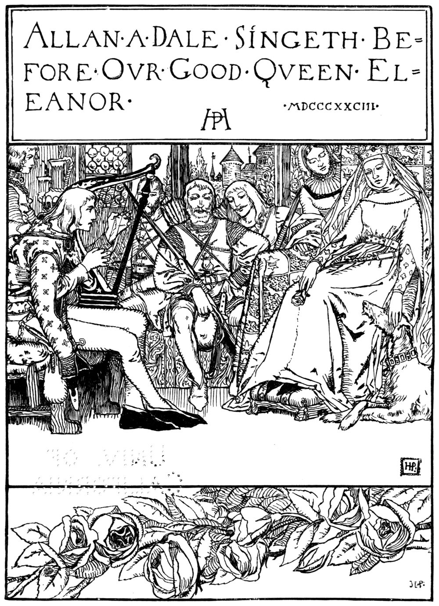
Famous Finsbury Fields made a bright and colorful sight on that sunny morning in the high, hearty summertime. Along the end of the meadow stood the tents for the different bands of archers. The King's yeomen were divided into companies of eighty men, each with a captain over it. So there on the bright grass stood ten tents of striped canvas, one for each band of the royal archers, and from the peak of each tent a flag fluttered in the warm, soft air, in the color that belonged to that band's captain. From the center tent hung the yellow flag of Tepus, the famous bow-bearer of the King. Next to it, on one side, was the blue flag of Gilbert of the White Hand, and on the other the blood-red pennant of brave young Clifton of Buckinghamshire. The seven other archer captains were famous men too, among them Egbert of Kent and William of Southampton, but the three I first named were the most famous of all. The sound of many voices talking and laughing came from inside the tents, and the helpers ran in and out like ants around an anthill. Some carried ale and beer, and some carried bundles of bowstrings or sheaves of arrows. On each side of the archery range were rows and rows of seats reaching high up into the air, and in the middle of the north side was a raised platform for the King and Queen, shaded by brightly colored canvas and hung all around with streaming silk pennants of red and blue and green and white. The King and Queen had not come yet, but all the other benches were full of people, rising head above head so high that it made you dizzy to look at them. A hundred and sixty yards away from the line where the archers were to shoot stood ten fine targets, each marked by a flag in the color of the band that was to shoot at it. So everything was ready for the King and Queen to arrive.
At last there was a great blast of bugles, and into the meadow rode six trumpeters with silver trumpets, from which hung velvet banners heavy with rich embroidery in silver and gold thread. Behind them came stout King Henry on a dapple-gray stallion, with his Queen beside him on a milk-white palfrey (a gentle horse for ladies to ride). On each side of them marched the yeomen of the guard, and the bright sunlight flashed off the polished blades of the steel halberds they carried (long poles topped with an ax blade and a spike). Behind them came the whole Court in a great crowd, until soon the whole lawn was alive with bright colors: silk and velvet, waving plumes and gleaming gold, flashing jewels and sword hilts. It was a splendid sight on that bright summer day.
Then all the people stood up and shouted, and their voices sounded like a storm on the coast of Cornwall, when the dark waves run up on the shore and leap and break and surge among the rocks. So, in the middle of all that roaring and surging of the crowd, and the waving of scarves and handkerchiefs, the King and Queen came to their place. They got down from their horses, climbed the broad stairs that led up to the raised platform, and sat down there on two thrones draped in purple silk and cloth of silver and gold.
When everything was quiet, a bugle sounded, and at once the archers came marching out of their tents in order. There were eight hundred of them in all, as strong and sturdy a band of yeomen as could be found in the whole wide world. They came in good order and stood in front of the platform where King Henry and his Queen sat. King Henry looked up and down their ranks very proudly, for his heart warmed inside him at the sight of such a fine band of yeomen. Then he ordered his herald, Sir Hugh de Mowbray, to step forward and announce the rules of the contest. So Sir Hugh stepped to the edge of the platform and spoke in a loud, clear voice, and this is what he said.
Each man would shoot seven arrows at the target that belonged to his band, and out of the eighty yeomen in each band, the three who shot best would be chosen. These three would shoot three arrows apiece, and the best of them would be chosen again. Then each of these chosen men would shoot three more arrows apiece. The one who shot best would get the first prize, the next best would get the second prize, and the one after him the third prize. Each of the others would get eighty silver pennies for his shooting. The first prize would be fifty gold pounds, a silver bugle horn inlaid with gold, and a quiver holding ten white arrows tipped with gold and feathered with white swan's-wing feathers. The second prize would be a hundred of the fattest bucks that run on Dallen Lea, to be shot whenever the yeoman who won them liked. The third prize would be two tuns of good Rhenish wine (a tun was an enormous barrel, as big as a small room).
So Sir Hugh spoke, and when he had finished, all the archers waved their bows in the air and cheered. Then each band turned and marched in order back to its place.
And now the shooting began. The captains took their stand first and sent their arrows flying, and then they made room for their men, who shot one after another behind them. Five thousand six hundred arrows were shot in all, and they were shot so skillfully that when the shooting was over, every target looked like the back of a hedgehog when the farm dog sniffs at it. This shooting took a long time, and when it was over the judges came forward, looked carefully at the targets, and announced in loud voices which three men from each band had shot best. Then a great hubbub of voices rose up, with every man in the watching crowd calling out for his favorite archer. Then ten fresh targets were brought out, and every sound died away as the archers took their places once more.
This time the shooting was done more quickly, for each band shot only nine arrows. Not one arrow missed its target, but in Gilbert of the White Hand's target, five arrows were in the small white circle that marked the center, and three of those five had been shot by Gilbert himself. Then the judges came forward again, looked at the targets, and called out the name of the archer chosen as the best bowman of each band. Of these, Gilbert of the White Hand was in the lead, for six of the ten arrows he had shot so far had landed in the center. But sturdy Tepus and young Clifton were close on his heels, and the others still had a fair chance at second or third place.
And now, while the crowd roared, the ten brave fellows who were left went back to their tents to rest for a while and change their bowstrings. Nothing could be allowed to go wrong in the next round, and no hand must tremble and no eye grow dim from tiredness.
Then, while the deep buzz and hum of talk sounded all around like the wind in the leafy forest, Queen Eleanor turned to the King and said, "Do you think these yeomen who have been chosen are the very best archers in all merry England?"
"Yes, truly," said the King with a smile, for he was very pleased with the sport he had seen. "And I tell you, they aren't just the best archers in all merry England, but in the whole wide world besides."
"But what would you say," said Queen Eleanor, "if I were to find three archers to match the best three yeomen of your whole guard?"
"I'd say you'd done something I couldn't do," said the King, laughing, "for I tell you, there aren't three archers living in the whole world who can match Tepus and Gilbert and Clifton of Buckinghamshire."
"Well," said the Queen, "I know of three yeomen, and in fact I've seen them not long ago, whom I wouldn't be afraid to match against any three you can choose from all your eight hundred archers. What's more, I'll match them here this very day. But I'll only match them against your archers if you'll grant a free pardon to everyone who comes to shoot on my side."
At this the King laughed long and loud. "Honestly," he said, "you're taking up strange interests for a queen! If you'll bring those three fellows you speak of, I promise faithfully to give them a free pardon for forty days, to come and go wherever they please, and I won't harm a hair of their heads in all that time. What's more, if the men you bring shoot better than my yeomen, man for man, they shall have the prizes for themselves, according to how they shoot. But since you've suddenly taken such a liking to sports like this, would you care to make a bet?"
"Why, really," said Queen Eleanor, laughing, "I don't know anything about such things. But if you'd like to do something of that kind, I'll try to please you. What will you bet on your men?"
Then the merry King laughed again, for he dearly loved a good joke. So he said, still laughing, "I'll bet you ten tuns of Rhenish wine, ten tuns of the strongest ale, and two hundred bows of seasoned Spanish yew, with quivers and arrows to match."
Everyone standing around smiled at this, for it seemed a comical bet for a king to make with a queen. But Queen Eleanor quietly bowed her head. "I'll take your bet," she said, "for I know very well where to put the things you've named. Now, who will be on my side in this?" And she looked around at the people standing near her. But no one spoke up, and no one cared to bet on the Queen's side against archers like Tepus and Gilbert and Clifton. Then the Queen spoke again. "Now, who will back me in this bet? Will you, my Lord Bishop of Hereford?"
"No," said the Bishop hastily. "It hardly suits a man of the Church to meddle in such things. Besides, there are no archers in all the world like His Majesty's, so I would only lose my money."
"I think the thought of your gold weighs more heavily on you than any harm to the Church," said the Queen with a smile, and at that a ripple of laughter went around, for everyone knew how fond the Bishop was of his money. Then the Queen turned to a knight who stood nearby, whose name was Sir Robert Lee. "Will you back me in this?" she asked. "Surely you're rich enough to risk that much for the sake of a lady."
"To please my Queen, I'll do it," said Sir Robert Lee. "But for no one else in all the world would I bet so much as a groat, because nobody can stand up against Tepus and Gilbert and Clifton."
Then Queen Eleanor turned to the King and said, "I don't want the kind of help Sir Robert offers me. But against your wine and your beer and your strong yew bows, I'll bet this belt, all set with jewels, from around my own waist. Surely that's worth more than all of yours."
"Done! I take your bet," said the King. "Send for your archers at once. But look, here come the others. Let them shoot, and then I'll match the winners against the whole world."
"So be it," said the Queen. Then she beckoned to young Richard Partington and whispered something in his ear. At once the Page bowed and left, and crossed the meadow to the other side of the range, where he was soon lost in the crowd. At this, everyone standing nearby whispered to one another, wondering what it all meant, and what three men the Queen was going to set against those famous archers of the King's guard.
And now the ten archers of the King's guard took their stand again, and the whole great crowd went as still as death. Slowly and carefully each man shot his arrows, and the silence was so deep that you could hear every arrow rap against the target as it struck. Then, when the last arrow had flown, a great roar went up, and the shooting, I can tell you, well deserved it. Once again Gilbert had put three arrows in the white. Tepus came second, with two in the white and one in the black ring right next to it. But sturdy Clifton had dropped back, and Hubert of Suffolk had taken third place. Both of those good yeomen had put two arrows in the white, but Clifton had lost one shot out in the fourth ring, while Hubert's had landed in the third.
All the archers around Gilbert's tent shouted for joy till their throats were hoarse, tossing their caps in the air and shaking hands with one another.
In the middle of all the noise and hubbub, five men came walking across the lawn toward the King's pavilion. The first was Richard Partington, whom most people there knew, but the others were strangers to everybody. Beside young Partington walked a yeoman dressed in blue, and behind them came three others, two in Lincoln green and one in scarlet. This last yeoman carried three sturdy yew bows, two of them richly inlaid with silver and one with gold. While these five men were walking across the meadow, a messenger came running from the King's tent and called Gilbert and Tepus and Hubert to come with him. And now the shouting quickly died down, for everyone could see that something unusual was going on. So the people stood up in their places and leaned forward to see what all the fuss was about.
When Partington and the others came in front of the place where the King and Queen sat, the four yeomen knelt and took off their caps to her. King Henry leaned far forward and stared hard at them. But the Bishop of Hereford, when he saw their faces, jumped as if a wasp had stung him. He opened his mouth as if to say something, but then, looking up, he saw the Queen gazing at him with a smile on her lips. So he said nothing, but bit his lower lip, and his face turned as red as a cherry.
Then the Queen leaned forward and spoke in a clear voice. "Locksley," she said, "I've made a bet with the King that you and two of your men can outshoot any three he can send against you. Will you do your best for my sake?"
"Yes," said Robin Hood, for it was to him she had spoken. "I'll do my best for your sake, and if I fail, I swear I'll never touch a bowstring again."
Now, although Little John had been a little shy in the Queen's room, he felt like the sturdy fellow he was again as soon as the soles of his feet were pressing on green grass. So he said boldly, "Well, bless your sweet face, I say! If there were a man alive who wouldn't do his best for you—I won't say anything, except that I'd like to be the one to crack that scoundrel's skull!"
"Hush, Little John!" said Robin Hood quickly, in a low voice. But good Queen Eleanor laughed out loud, and a ripple of merriment ran all through the royal stand.
The Bishop of Hereford did not laugh, and neither did the King. He turned to the Queen and said, "Who are these men you've brought before us?"
Then the Bishop spoke up in a hurry, for he couldn't hold his tongue any longer. "Your Majesty," he said, "that fellow there in blue is a certain outlawed thief from the middle of the country, named Robin Hood. That tall, strapping villain goes by the name of Little John. The other fellow in green is a certain gentleman gone to the bad, known as Will Scarlet. And the man in red is a rascally minstrel from the north, named Allan a Dale."
At this speech the King's brows drew together darkly, and he turned to the Queen. "Is this true?" he asked sternly.
"Yes," said the Queen, smiling. "The Bishop has told the truth, and he certainly ought to know them well, for he and two of his friars spent three days of merry sport with Robin Hood in Sherwood Forest. I would never have thought the good Bishop would betray his friends like that. But remember, you've given your promise that these good yeomen will be safe for forty days."
"I'll keep my promise," said the King, in a deep voice that showed the anger in his heart. "But when those forty days are over, this outlaw had better look out for himself, for things may not go as smoothly for him as he'd like." Then he turned to his archers, who stood near the Sherwood yeomen, listening and wondering at everything that was going on. "Gilbert," he said, "and you, Tepus, and you, Hubert: I've given my word that you'll shoot against these three fellows. If you outshoot these rascals, I'll fill your caps with silver pennies. If you fail, you'll lose the prizes you've won so fairly, and they'll go to the men who shoot against you, man for man. Do your best, lads, and if you win this round, you'll be glad of it to the last day of your lives. Go on now, off with you to the targets."
So the King's three archers turned and went back to their tents, and Robin and his men went to their places at the line where they were to shoot. Then they strung their bows and got ready, looking over their quivers and picking out the roundest and best-feathered arrows.
But when the King's archers went back to their tents, they told their friends everything that had happened: that these four men were the famous Robin Hood and three of his band, namely Little John, Will Scarlet, and Allan a Dale. The news buzzed around among the archers in the tents, for there wasn't a man there who hadn't heard of these great yeomen from the middle of England. From the archers, the news spread to the crowd watching the shooting, until at last everybody was standing up and craning their necks to catch sight of the famous outlaws.
Six fresh targets were now set up, one for each man who was to shoot, and at once Gilbert and Tepus and Hubert came out of the tents. Then Robin Hood and Gilbert of the White Hand tossed a farthing in the air to see which side would shoot first. The toss went to Gilbert's side, and he called on Hubert of Suffolk to lead off.
Hubert took his place, planted his feet firmly, and fitted a fine, smooth arrow to the string. Then, after breathing on his fingertips, he drew the string back slowly and carefully. The arrow flew true and landed in the white. He shot again, and again he hit the bull's-eye. He shot a third arrow, but this time he missed the center and hit only the black ring, though not more than a finger's width from the white. At this a cheer went up, for it was the best shooting Hubert had done all day.
Merry Robin laughed and said, "You'll have a hard time beating that round, Will, because you're next. Brace your muscles, lad, and don't bring shame on Sherwood."
So Will Scarlet took his place. But because he was too careful, he spoiled his target with the very first arrow he shot, for he hit the ring just outside the black, the second ring from the center. At this Robin bit his lip. "Lad, lad!" he said. "Don't hold the string so long! Haven't I often told you what old Gaffer Swanthold says: 'Too much care spills the milk'?" Will Scarlet took this to heart, so his next arrow landed squarely in the center ring. He shot again, and again he hit the center. But for all that, sturdy Hubert had outshot him and had the better target to show. Then all the onlookers clapped their hands for joy because Hubert had beaten the stranger.
The King said grimly to the Queen, "If your archers don't shoot any better than that, my lady, you're likely to lose your bet." But Queen Eleanor only smiled, for she was expecting better things from Robin Hood and Little John.
And now Tepus took his place to shoot. He, too, was much too careful about what he was doing, and so he fell into Will Scarlet's mistake. His first arrow he put into the center ring, but the second missed its mark and hit the black. His last arrow was tipped with luck, though, for it hit the very middle of the bull's-eye, right on the black spot that marked the dead center. "That's the sweetest shot anybody has made today," said Robin Hood. "But all the same, friend Tepus, I think your cake is burned. Little John, you're next."
So Little John took his place as he was told, and shot his three arrows quickly. He never once lowered his bow arm the whole time, but fitted each arrow with his longbow still raised. And yet all three of his arrows landed in the center, close around the black spot. No cheering was heard at this. Although it was the best shooting that had been done that day, the people of London Town didn't like to see sturdy Tepus beaten by a fellow from the countryside, even one as famous as Little John.
And now brave Gilbert of the White Hand took his place and shot with the greatest care, and once again, for the third time in one day, he put all three arrows into the bull's-eye.
"Well done, Gilbert!" said Robin Hood, clapping him on the shoulder. "I swear, you're one of the best archers I ever laid eyes on. You ought to be a free and merry forest ranger like us, lad, for you're better suited to the greenwood than to the cobblestones and gray walls of London Town." As he said this he took his place, drew a fine, round arrow from his quiver, and turned it over and over before fitting it to his bowstring.
Then the King muttered into his beard, "Now, blessed Saint Hubert, if you'll only jog that rogue's elbow so that he hits even the second ring, I'll give a hundred and sixty wax candles, each three fingers thick, to your chapel near Matching." (Saint Hubert was the patron saint of hunters.) But maybe Saint Hubert's ears were stuffed with wool that day, for he didn't seem to hear the King's prayer.
When merry Robin had picked out three arrows he liked, he checked his bowstring carefully before shooting. "Yes," he said to Gilbert, who stood near him to watch him shoot, "you really ought to pay us a visit in merry Sherwood." Here he drew the bowstring back to his ear. "In London"—here he let his arrow fly—"you can't find anything to shoot at but crows and jackdaws. Out there you can tickle the ribs of the finest stags in England." So he shot even while he talked, and yet the arrow landed no more than half an inch from the very center.
"Upon my soul!" cried Gilbert. "Are you the devil in blue, to shoot like that?"
"No," said Robin, laughing, "not quite as bad as that, I hope." And he picked up another arrow and fitted it to the string. Again he shot, and again he planted his arrow close beside the center. A third time he let his bowstring go, and dropped his arrow right between the other two and into the very center, so that the feathers of all three were ruffled together, and from a distance they looked like one thick arrow.
And now a low murmur ran through that whole great crowd, for London had never before seen such shooting as this, and it never would again once Robin Hood's day was over. Everyone could see that the King's archers were fairly beaten, and sturdy Gilbert slapped his palm against Robin's, admitting that he could never hope to draw a bowstring like Robin Hood or Little John. But the King, full of anger, wouldn't have it, though he knew in his heart that his men couldn't stand up to these fellows. "No!" he cried, clenching his hands on the arms of his throne. "Gilbert isn't beaten yet! Didn't he hit the bull's-eye three times? I may have lost my bet, but he hasn't lost the first prize yet. They'll shoot again, and again after that, until either he or that rascal Robin Hood comes out on top. Go, Sir Hugh, and tell them to shoot another round, and another, until one or the other is beaten." Sir Hugh, seeing how angry the King was, didn't say a word, but went straight off to do as he was told. He came to where Robin Hood and the others stood and told them what the King had said.
"With all my heart," said merry Robin. "I'll shoot from now until tomorrow, if it pleases my most gracious lord and King. Take your place, Gilbert lad, and shoot."
So Gilbert took his place once more. But this time he failed, for a sudden little breeze sprang up, and his arrow missed the center ring, though by no more than the width of a barley straw.
"Your eggs are cracked, Gilbert," said Robin, laughing. And straightaway he let an arrow fly, and hit the white circle in the center once again.
Then the King rose from his seat without saying a single word, but he looked all around with a glare so dark that it would have been a bad day for anyone he caught with a happy or merry look on his face. Then he and his Queen and the whole court left the field, but the King's heart was brimming over with anger.
After the King had gone, all the yeomen of the archer guard came crowding around Robin and Little John and Will and Allan, to get a look at these famous fellows from the middle of England. Many of the people who had been watching the sport came along too, for the same reason. So it happened that before long the yeomen, with Gilbert standing among them talking, were completely surrounded by a crowd of people that made a ring all around them.
After a while the three judges who were in charge of giving out the prizes came forward, and the chief of them spoke to Robin. "As was agreed," he said, "the first prize rightly belongs to you. So here I give you the silver bugle, here the quiver of ten golden arrows, and here a purse of fifty gold pounds." As he spoke, he handed these things to Robin, and then he turned to Little John. "To you," he said, "belongs the second prize, namely a hundred of the finest stags that run on Dallen Lea. You may shoot them whenever you like." Last of all he turned to sturdy Hubert. "You," he said, "held your own against the yeomen you shot against, and so you have kept the prize that is rightly yours, namely two tuns of good Rhenish wine. They will be delivered to you whenever you like." Then he called up the other seven of the King's archers who had shot in the last round, and gave each of them eighty silver pennies.
Then Robin spoke up. "I'll keep this silver bugle in honor of this shooting match. But you, Gilbert, are the best archer in the whole King's guard, and I freely give you this purse of gold. Take it, man, and I wish it were ten times as much, for you're a real yeoman, good and true. And besides that, I'll give one of these golden arrows to each of the ten who shot in the last rounds. Always keep them by you, so you can tell your grandchildren, if you're ever blessed with any, that you were the very bravest yeomen in all the wide world."
At this they all cheered loudly, for it pleased them to hear Robin speak of them that way.
Then Little John spoke up. "Good friend Tepus," he said, "I don't want those stags of Dallen Lea that the worthy judge there just mentioned, because to tell the truth we have plenty, and more than plenty, in our own part of the country. I give fifty of them to you, for your own shooting, and five to each band, for them to enjoy."
At this another great cheer went up, and many tossed their caps in the air and swore to each other that no better fellows ever walked the earth than Robin Hood and his brave yeomen.
While they were shouting like this at the top of their voices, a tall, burly yeoman of the King's guard came forward and tugged at Robin's sleeve. "Good master," he said, "I have something to whisper in your ear. It's a silly business, heaven knows, for one sturdy yeoman to be telling another, but a young peacock of a page, one Richard Partington, was looking for you in the crowd and couldn't find you. So he told me that he had a message for you from a certain lady you know of. He told me to give you this message privately, word for word, and this was it. Let me see—I hope I haven't forgotten it—yes, this was it: 'The lion growls. Watch out for your head.'"
"Is that so?" said Robin, with a start, for he knew perfectly well that it was the Queen who had sent the message, and that she meant the King's anger. "Well, thank you, my good fellow, for you've done me a greater service today than you know." Then he called his three yeomen together and told them quietly that they had better be on their way, for it was likely to go badly for them so close to merry London Town. So without waiting any longer, they made their way through the crowd until they came out of the crush of people. Then, without stopping, they left London Town and set off northward.
Chapter 18: The Chase of Robin Hood
So Robin Hood and the others left the archery range at Finsbury Fields, and without wasting a moment they set off at once on their journey home. It was a good thing for them that they did, because they hadn't gone more than three or four miles on their way when six yeomen of the King's guard came bustling through the crowd that was still hanging about the field, hunting for Robin and his men so that they could grab them and make them prisoners. It was truly a bad thing for the King to break his promise like that, but it all came about through the Bishop of Hereford's doing, and this is how it happened.
After the King left the archery ground, he went straight to his private council room, and the Bishop of Hereford and Sir Robert Lee went with him. But the King didn't say a single word to either of them. He just sat there chewing his lower lip, for his heart was sore and bitter inside him over what had happened. At last the Bishop of Hereford spoke up, in a low, sorrowful voice. "It's a sad thing, Your Majesty, that this rascally outlaw should be allowed to escape like this. Because once he gets back to Sherwood Forest safe and sound, he can snap his fingers at the King and all the King's men."
At these words the King raised his eyes and gave the Bishop a grim look. "Is that what you think?" he said. "Well, I'll show you in good time how wrong you are. When the forty days are over and done with, I'll seize this thieving outlaw, even if I have to tear down the whole of Sherwood to find him. Do you think the laws of the King of England can be dodged like that by one poor rascal with no friends and no money?"
Then the Bishop spoke again, in his soft, smooth voice:
"Forgive me for being so bold, Your Majesty, and believe me, I have nothing at heart but the good of England and whatever Your Majesty wishes. But what good would it do, even if my gracious lord pulled up every tree in Sherwood by the roots? Aren't there other places where Robin Hood could hide? Cannock Chase isn't far from Sherwood, and the great Forest of Arden isn't far from Cannock Chase. Besides those, there are plenty of other woodlands in Nottingham and Derby, Lincoln and York, and in any one of them Your Majesty might just as well hope to catch Robin Hood as to put your finger on a rat among the dust and broken junk of an attic. No, my gracious lord, if he once sets foot in the woods, he's lost to the law forever."
At these words the King drummed his fingertips on the table beside him in annoyance. "Then what do you want me to do, Bishop?" he said. "Didn't you hear me give my word to the Queen? Your talk is as useless as the wind from a bellows blowing on dead coals."
"Far be it from me," said the crafty Bishop, "to show the way to someone as clear-sighted as Your Majesty. But if I were the King of England, this is how I would look at it. I have promised my Queen, let us say, that for forty days the slyest rogue in all England shall be free to come and go. But look! I find this outlaw right in my grasp. Should I, then, foolishly cling to a promise I made in such a hurry? Suppose I had promised to do whatever Her Majesty asked, and then she asked me to kill myself. Should I shut my eyes and run blindly onto my own sword? That's how I would argue with myself. What's more, I would say to myself, a woman knows nothing about the great matters of governing a kingdom. And I know, too, that a woman is always quick to take a fancy to something, just as she might pick a daisy from the roadside, and then throw it away when the sweetness has gone out of it. So even though she has taken a fancy to this outlaw, it will soon fade and be forgotten. As for me, I have the greatest villain in all England in my grasp. Should I, then, open my hand and let him slip through my fingers? That, Your Majesty, is what I would say to myself, if I were the King of England." So the Bishop talked, and the King listened to his wicked advice, until after a while he turned to Sir Robert Lee and told him to send six yeomen of the guard to take Robin Hood and his three men prisoner.
Now, Sir Robert Lee was a gentle and noble knight, and it grieved him to the heart to see the King break his promise like this. All the same, he said nothing, because he could see how bitterly the King was set against Robin Hood. But he didn't send the yeomen of the guard right away. Instead he went first to the Queen, told her everything that had happened, and asked her to send word to Robin of his danger. He did this not for Robin Hood's sake, but because he wanted to save his lord's honor if he could. And that is why, when the yeomen of the guard went to the archery field a while later, they didn't find Robin and the others there, and came away from that fair with no prize at all.
The afternoon was nearly over when Robin Hood, Little John, Will, and Allan set out on their way home. They tramped merrily along through the slanting yellow light, which soon turned rosy red as the sun sank low in the sky. The shadows grew long, and at last they melted into the soft gray of the twilight. The dusty highway lay all white between the dark hedgerows, and along it walked four fellows like four shadows. The pat of their feet sounded loud, and their voices, as they talked, rang out clear in the stillness of the air. The great round moon was floating up, without a breath of wind, into the eastern sky when they saw ahead of them the twinkling lights of Barnet Town, ten or twelve miles from London. Down they walked through the stony streets, past the cozy houses with gables jutting out over the street. In front of the doors the townspeople and craftsmen sat out in the soft moonlight with their families around them. And so at last, on the far side of the little town, the four came to a small inn, all shaded over with roses and honeysuckle. Robin Hood stopped in front of this inn, because the place pleased him very much. "Here's where we'll stop and rest for the night," he said, "because we're well away from London Town and our King's anger. Besides, unless I'm mistaken, we'll find good food inside. What do you say, lads?"
"Honestly, good master," said Little John, "what you tell me to do and what I want to do always go together like cakes and ale. Let's go in, I say too."
Then Will Scarlet spoke up. "I'm always ready to do what you say, Uncle, but I do wish we were farther along the road before we stopped for the night. Still, if you think it's best, let's go in for the night, I say too."
So in they went and called for the best the place had to offer. A really fine feast was set in front of them, with two good stout bottles of old sack to wash it down. Everything was served by as plump and pretty a lass as you could find in all the land, so that Little John, who always had an eye for a pretty girl, even with food and drink in front of him, stuck his hands on his hips and fixed his eyes on her, and gave her a sweet wink whenever he saw her looking his way. Then you should have seen how the lass giggled, and how she peeped at Little John out of the corners of her eyes, with a dimple in each cheek, because the fellow always did have a winning way with the women.
So the feast went merrily on, and that inn had never seen such hearty eaters as these four sturdy fellows. But at last they had finished eating (though it seemed as if they never would), and they sat lingering over the sack. As they sat there, the landlord suddenly came in and said that there was someone at the door, a certain young squire named Richard Partington, of the Queen's household, who wanted to see the lad in blue and speak with him without losing a moment. So Robin got up quickly, told the landlord not to follow him, and went out, leaving the others staring at one another and wondering what was about to happen.
When Robin came out of the inn, he found young Richard Partington sitting on his horse in the white moonlight, waiting for him.
"What news do you bring, young sir?" said Robin. "I hope it isn't bad."
"Well," said young Partington, "as far as that goes, it's bad enough. The King has been stirred up bitterly against you by that wicked Bishop of Hereford. He sent men to arrest you at the archery targets at Finsbury Fields. When they didn't find you there, he gathered together his armed men, a thousand of them and more, and he's sending them in a hurry along this very road to Sherwood, either to catch you on the way or to keep you from getting back to the woods again. He has put the Bishop of Hereford in command of all these men, and you know what you can expect from the Bishop of Hereford: a quick prayer and a long rope. Two bands of horsemen are on the road already, not far behind me. So you'd better get away from here right now, because if you stay any longer you're likely to spend tonight in a cold dungeon. The Queen told me to bring you this message."
"Richard Partington," said Robin, "this is the second time you've saved my life, and if the right time ever comes, I'll show you that Robin Hood never forgets a thing like that. As for that Bishop of Hereford, if I ever catch him near Sherwood again, things are likely to go badly for him. You can tell the good Queen that I'll leave this place right away. I'll let the landlord think that we're going to Saint Albans. But once we're on the highway again, I'll go one way across the country and send my men the other, so that if one of us falls into the King's hands, the others may still have a chance to escape. We'll go by roundabout ways, and so, I hope, we'll reach Sherwood safely. And now, young sir, I wish you goodbye."
"Goodbye, you bold yeoman," said young Partington, "and I hope you reach your hiding place safely." Then each shook the other's hand, and the lad turned his horse's head and rode back toward London, while Robin went into the inn again.
There he found his yeomen sitting in silence, waiting for him. The landlord was there too, because he was curious to know what Master Partington wanted with the fellow in blue. "Up, my merry men!" said Robin. "This is no place for us, because there are people after us who'll give us a bad time if we fall into their hands. So we'll push on again, and we won't stop tonight until we reach Saint Albans." With that he took out his purse and paid the landlord their bill, and so they left the inn.
When they had come to the highway outside the town, Robin stopped and told them everything that had passed between young Partington and himself, and how the King's men were hot on their heels. Then he told them that here they would split up. The three of them would go east, and he would go west, and by keeping away from the main highways they would all find their way to Sherwood by roundabout paths. "So be crafty," said Robin Hood, "and keep well away from the northern roads until you've gotten a good way to the east. And you, Will Scarlet, take the lead of the others, because you've got a sharp, clever turn of mind." Then Robin kissed the three of them on the cheeks, and they kissed him, and so they parted.
Not long after this, twenty or more of the King's men came clattering up to the door of the inn at Barnet Town. They jumped from their horses and quickly surrounded the place, and the leader of the band and four others went into the room where the yeomen had been. But they found that their birds had flown again, and that the King had been cheated of his prize a second time.
"I thought they were a bad lot," said the landlord, when he heard who it was the soldiers were after. "But I heard that rascal in blue say that they were going straight on to Saint Albans. So if you hurry, you might just catch them on the highway between here and there." The leader of the band thanked the landlord very warmly for this news, called his men together, mounted, and set off again, galloping on to Saint Albans on a wild-goose chase.
After Little John and Will Scarlet and Allan a Dale left the highway near Barnet, they traveled east without stopping, for as long as their legs would carry them, until they came to Chelmsford, in Essex. From there they turned north and came through Cambridge and Lincolnshire to the good town of Gainsborough. Then, heading west and south, they came at last to the northern edge of Sherwood Forest, and in all that time they never met so much as a single band of the King's men. They traveled like this for eight days before they reached the woods in safety, but when they got to the greenwood glade, they found that Robin had not come back yet.
For Robin was not as lucky in getting home as his men had been, as you will soon hear.
After leaving the great northern road, he turned west, and so came past Aylesbury to lovely Woodstock, in Oxfordshire. From there he turned north and traveled a long way, by way of Warwick Town, until he came to Dudley, in Staffordshire. It took him seven days to get that far, and then he thought he had come far enough north. So he turned east, avoiding the main roads and picking byways and grassy lanes, and went on by way of Lichfield and Ashby de la Zouch toward Sherwood, until he came to a place called Stanton. And now Robin's heart began to laugh out loud, because he thought the danger was past and that soon his nose would be sniffing the spicy air of the woods once again. But there's many a slip between the cup and the lip, as the saying goes, and Robin was about to find that out. This is how it was.
When the King's men found that they had been tricked at Saint Albans, and that Robin and his men were nowhere to be found, high or low, they didn't know what to do. Before long another band of horsemen arrived, and then another, until all the moonlit streets were full of armed men. Between midnight and dawn still another band came to the town, and with them came the Bishop of Hereford. When he heard that Robin Hood had slipped out of the trap once more, he didn't wait a minute. He gathered his bands together and pushed north as fast as he could, leaving orders that all the troops who came to Saint Albans should follow after him without delay. On the evening of the fourth day he reached Nottingham Town. There he at once split his men up into bands of six or seven and sent them out all over the countryside, blocking every highway and byway to the east and the south and the west of Sherwood. The Sheriff of Nottingham called out all his men too, and joined forces with the Bishop, because he saw that this was the best chance he had ever had of paying Robin Hood back in full for everything. Will Scarlet and Little John and Allan a Dale had only just missed the King's men on the east side. The very next day after they had slipped through the line and entered Sherwood, the roads they had traveled were blocked, so that if they had dawdled on their journey they would certainly have fallen into the Bishop's hands.
But Robin knew nothing at all about any of this. So he whistled merrily as he tramped along the road beyond Stanton, with his heart as free of worry as the yolk of an egg is free of cobwebs. At last he came to a place where a little stream spread across the road in a shallow sheet of water, tinkling and sparkling as it rippled over its bed of golden gravel. Here Robin stopped, because he was thirsty, and he knelt down, made a cup of the palms of his hands, and began to drink. On both sides of the road, for a long way, there were tangled thickets of bushes and young trees, and it did Robin's heart good to hear the little birds singing in them, because it made him think of Sherwood, and it seemed like a lifetime since he had breathed the air of the woods. But all of a sudden, as he bent there drinking, something hissed past his ear and struck with a splash into the gravel and water beside him. Quick as a wink Robin sprang to his feet, and in one bound he crossed the stream and the roadside and plunged headfirst into the thicket, without looking around. He knew perfectly well that the thing that had hissed so viciously past his ear was a gray-feathered arrow, and that to wait even a moment meant death. Even as he leaped into the thicket, six more arrows rattled among the branches after him. One of them went right through his jacket, and it would have gone deep into his side if it hadn't been for the tough shirt of steel he wore underneath. Then some of the King's men came riding up the road at breakneck speed. They leaped from their horses and plunged straight into the thicket after Robin. But Robin knew the ground better than they did. Crawling here, stooping there, and every now and then dashing across some little clearing, he soon left them far behind, and at last he came out on another road about eight hundred paces away from the one he had left. There he stood still for a moment, listening to the distant shouts of the seven men as they beat up and down through the thickets like hounds that have lost the scent of the deer. Then he buckled his belt tighter around his waist and ran swiftly down the road toward the east and Sherwood.
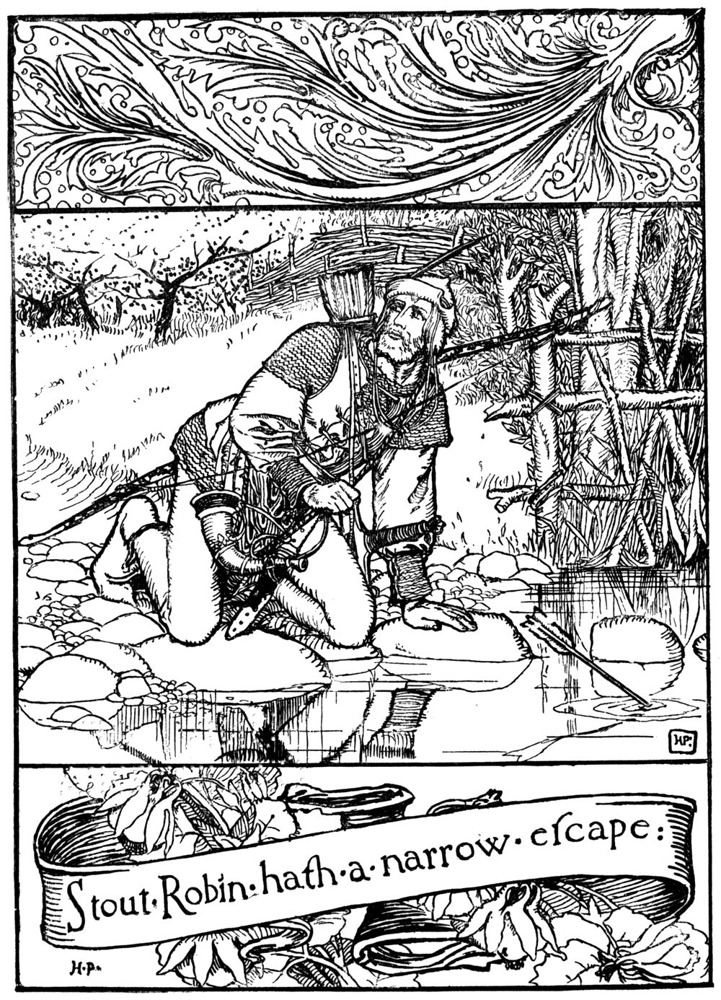
But Robin had not gone more than a few hundred yards in that direction when he suddenly came to the top of a hill and saw below him another band of the King's men, sitting in the shade along the roadside in the valley beneath. He didn't stop for a moment. Seeing that they hadn't spotted him, he turned and ran back the way he had come, because he knew it was better to take his chances of getting past the fellows who were still in the thickets than to rush right into the arms of the ones in the valley. So back he ran as fast as he could, and he had gotten safely past the thickets just as the seven men came out into the open road. They raised a great shout when they saw him, like the shout a hunter gives when the deer breaks out of the bushes. But by then Robin was more than a quarter of a mile away from them, racing over the ground like a greyhound. He never slowed down, but ran on, mile after mile, until he had come near Mackworth, over beyond the River Derwent, close to Derby Town. There, seeing that he was out of danger for the time being, he slowed his pace, and at last he sat down under a hedge where the grass was longest and the shade coolest, to rest and catch his breath. "Upon my soul, Robin," he said to himself, "that was the narrowest escape you've ever had in all your life. I swear, the feather of that wicked arrow tickled my ear as it whizzed past. And all this running has given me a terrible craving for food and drink. Now I pray Saint Dunstan to send me some meat and beer, and quickly."
It looked as though Saint Dunstan meant to answer his prayer, because along the road came plodding a certain cobbler, Quince of Derby by name. He had been to take a pair of shoes to a farmer near Kirk Langley, and now he was on his way home again, with a nice boiled chicken in his bag and a good big jug of beer at his side, which the farmer had given him because he was so pleased with such a sturdy pair of shoes. Good Quince was an honest fellow, but his wits were on the heavy side, like unbaked dough, so the only thing in his mind was, "Three shillings and sixpence halfpenny for your shoes, good Quince; three shillings and sixpence halfpenny for your shoes." And this went round and round inside his head, with never another thought getting into his noggin, the way a pea rolls round and round inside an empty quart pot.
"Hello there, good friend," Robin called out from under the hedge, when the other had come close enough. "Where are you off to so merrily on this bright day?"
Hearing someone call out to him like that, the Cobbler stopped. When he saw a well-dressed stranger in blue, he answered him politely. "Good day to you, fine sir. I'm coming from Kirk Langley, where I've sold my shoes and got three shillings and sixpence halfpenny for them, in as sweet a lot of money as you ever saw, and honestly earned, too, I'll have you know. But if I may be so bold, my fine fellow, what are you doing down there under the hedge?"
"Why," said merry Robin, "I'm sitting here under the hedge to drop salt on the tails of golden birds. But honestly, you're the first chick worth anything that I've seen all this blessed day."
At these words the Cobbler's eyes opened big and wide, and his mouth went round with wonder, like a knothole in a wooden fence. "Well, I never!" he said. "Just look at that, now! I've never seen any of those golden birds. And do you really find them in these hedges, good fellow? Please tell me, are there lots of them? I'd love to find some for myself."
"Oh, yes, truly," said Robin. "They're as thick around here as fresh herring in Cannock Chase."
"Just look at that, now!" said the Cobbler, drowning in wonder. "And do you really catch them by dropping salt on their pretty tails?"
"Yes," said Robin, "but this salt is a strange kind, let me tell you. The only way to get it is to boil down a quart of moonbeams in a wooden platter, and even then you only get a pinch. But tell me, now, you clever man, what have you got there in that bag at your side, and in that jug?"
At these words the Cobbler looked down at the things merry Robin was talking about, because the thought of the golden birds had driven them right out of his mind, and it took him some time to scrape the memory of them back together again. "Why," he said at last, "in the one there's good March beer, and in the other there's a fat chicken. Truly, Quince the Cobbler is going to have a fine feast today, unless I'm mistaken."
"But tell me, good Quince," said Robin, "would you like to sell those things to me? Just hearing about them sounds sweet to my ears. I'll give you these bright blue clothes I'm wearing, and ten shillings on top of that, for your clothes and your leather apron and your beer and your chicken. What do you say, my fine fellow?"
"No, you're making fun of me," said the Cobbler, "because my clothes are rough and patched, and yours are made of fine cloth and very pretty."
"I'm not joking one bit," said Robin. "Come on, strip off your jacket and I'll show you, because I tell you, I like your clothes very much. What's more, I'll be kind to you, because I'm going to feast right now on the good things you've got with you, and you're invited to the meal." With that he began slipping off his jacket, and the Cobbler, seeing that he really meant it, began pulling off his own clothes too, because Robin Hood's outfit took his fancy. So each of them put on the other fellow's clothes, and Robin gave the honest Cobbler ten bright new shillings. "I've been a good many things in my life," said merry Robin, "but I've never been an honest cobbler before. Come on, friend, let's dig in and eat, because something inside me is clucking out loud for that good fat chicken." So they both sat down and began to feast with hearty appetites, and when they were done, the bones of that chicken were picked as bare as charity.
Then Robin stretched out his legs with a sweet, comfortable feeling inside him. "Good Quince," he said, "I can tell from the sound of your voice that you've got a fine song or two running loose in your head, like colts in a meadow. Please, turn one of them out for me."
"I've got a song or two," said the Cobbler, "poor things, poor things, but such as they are, you're welcome to one of them." So, wetting his throat with a swallow of beer, he sang:
"Of all the joys, the best I love,
Sing hey, my frisking Nan, O,
And what my heart will always move,
It is the clinking can, O.
"All other bliss I'd throw away,
Sing hey, my frisking Nan, O,
But this—"
The stout Cobbler got no further with his song, because all of a sudden six horsemen burst in on them where they sat. They grabbed the honest craftsman roughly, hauled him to his feet, and nearly tore the clothes off him as they did it. "Ha!" roared the leader of the band in a great booming voice full of joy. "So we've caught you at last, have we, you rascal in blue? Now blessed be the name of Saint Hubert, because we're eighty pounds richer this minute than we were a minute ago! That's what the good Bishop of Hereford has promised to the band that brings you to him. Oho! You crafty rascal! Trying to look so innocent, are you? We know you, you old fox. But off you go with us right now to have your bushy tail clipped." At these words the poor Cobbler stared all around him with his big blue eyes as round as a dead fish's, while his mouth hung open as if he had swallowed all his words and lost his voice.
Robin gaped and stared too, in a puzzled way, just as the Cobbler would have done in his place. "Oh, dear me, dear me!" he said. "I don't know whether I'm sitting here or in No-man's-land! What's all this stirring up of the pot, dear good gentlemen? Why, surely this is a sweet, honest fellow."
"'Honest fellow,' you say, you bumpkin?" said one of the men. "Why, I tell you this is that very rogue they call Robin Hood."
At this the Cobbler stared and gaped more than ever, because there was such a threshing of thoughts going on inside his poor head that his wits were all fogged up with the dust and chaff of it. Besides, when he looked at Robin Hood, and saw the yeoman looking so exactly like what he knew himself to be, he began to have his doubts, and to think that maybe he really was the great outlaw after all. He said in a slow, wondering voice, "Am I really that fellow? Now I had thought—but no, Quince, you're mistaken—and yet—am I? No, I must really be Robin Hood! But honestly, I never thought I'd go from an honest craftsman to such a great yeoman."
"Oh, no!" said Robin Hood. "Just look at that, now! See how your rough handling has curdled this poor lad's wits and turned them all sour! I'm the one who's Quince, the Cobbler of Derby Town."
"Is that so?" said Quince. "Then I really am somebody else, and I can't be anyone but Robin Hood. Take me, fellows. But let me tell you, you've laid hands on the bravest yeoman who ever walked the woods."
"So you're going to play the madman, are you?" said the leader of the band. "Here, Giles, get a rope and tie this rascal's hands behind him. I'll bet we'll bring his wits back to him again when we get him safely in front of our good Bishop at Tutbury Town." So they tied the Cobbler's hands behind his back and led him off on a rope, the way a farmer leads home the calf he's bought at the fair. Robin stood watching them go, and when they were gone he laughed until the tears rolled down his cheeks, because he knew no harm would come to the honest fellow, and he pictured the Bishop's face when good Quince was brought before him as Robin Hood. Then, turning his steps east once more, he set off, best foot forward, toward Nottinghamshire and Sherwood Forest.
But Robin Hood had been through more than he knew. His journey from London had been long and hard, and in a single week he had traveled more than a hundred and forty miles. Now he meant to keep going without stopping until he reached Sherwood, but before he had gone ten miles he felt his strength giving way under him, like a riverbank that the water has eaten away underneath. He sat down and rested, but he knew in his heart that he couldn't go any farther that day, because his feet felt like lumps of lead, they were so heavy with weariness. Once more he got up and went on, but after a couple of miles he had to give it up. So when he came to an inn just then, he went in, called the landlord, and asked to be shown to a room, even though the sun was only just setting in the western sky. There were only three bedrooms in the place, and the landlord showed Robin Hood to the shabbiest of them. But Robin didn't care much what the place looked like, because he could have slept that night on a bed of broken stones. So he pulled off his clothes without any fuss, rolled into bed, and was asleep almost before his head touched the pillow.
Not long after Robin had gone to bed, a great cloud peeped up blackly over the hills to the west. Higher and higher it rose, until it piled up into the night like a mountain of darkness. Every now and then a dull red flash came from all around underneath it, and before long a short, grim mutter of the coming thunder could be heard. Then four sturdy townsmen of Nottingham came riding up, because this was the only inn within five miles, and they didn't want to be caught out in a thunderstorm like the one that was coming. They left their horses with the stableman and went into the best room of the inn, where fresh green rushes were spread all over the floor, and there they called for the best food the place had. After eating heartily, they asked the landlord to show them to their rooms, because they were worn out, having ridden all the way from Dronfield that day. So off they went, grumbling at having to sleep two to a bed, but this trouble, like all their others, was soon lost in the quiet of sleep.
And now the first gust of wind came rushing past the place, slamming and banging the doors and shutters, smelling of the rain to come, and all wrapped up in a cloud of dust and leaves. As if the wind had brought a guest along with it, the door suddenly opened, and in came a friar of Emmet Priory. He was a man of high rank, as you could tell from the softness and sleekness of his robes and the richness of his rosary. He called for the landlord and told him first to have his mule well fed and bedded down in the stable, and then to bring him the very best there was in the house. So before long a tasty stew of tripe and onions, with sweet little fat dumplings, was set in front of him, along with a good big jug of Malmsey, and the holy friar at once fell to with great courage and gusto. In a short time there was nothing left but a little pool of gravy in the middle of the platter, not enough to keep a starving mouse alive.
Meanwhile the storm broke. Another gust of wind went rushing by, and with it fell a few heavy drops of rain, which soon came rattling down in showers, beating against the windows like a hundred little hands. Bright flashes of lightning lit up every raindrop, and with them came cracks of thunder that went rumbling and bumping away, as though Saint Swithin were busy overhead rolling great barrels of water across rough ground. The women screamed, and the merry jokers in the taproom put their arms around their waists to calm them down.
At last the holy friar asked the landlord to show him to his room. But when he heard that he would have to share a bed with a cobbler, he was as unhappy a fellow as you could find in all England. Still, there was nothing to be done about it; he had to sleep there or nowhere. So he picked up his candle and went off, grumbling like the thunder, which was far away by now. When he came to the room where he was to sleep, he held the light over Robin and looked him over from head to toe. Then he felt better pleased, because instead of a rough fellow with a dirty beard, he saw as fresh and clean a lad as you could find in a month of Sundays. So he slipped off his clothes and huddled into the bed too, and Robin, grunting and grumbling in his sleep, made room for him. Robin was more soundly asleep, I can tell you, than he had been for many a day, or he would never have rested so quietly with one of the friar's sort so close beside him. As for the friar, if he had known who Robin Hood was, you may be sure he would almost as soon have slept beside a poisonous snake as beside the man he had for a bedfellow.
So the night passed comfortably enough. But at the first light of dawn Robin opened his eyes and turned his head on the pillow. Then how he gaped and how he stared! For there beside him lay someone with his head all shaved, so Robin knew it must be a churchman. He pinched himself hard, but when he found he was awake, he sat up in bed, while the other went on sleeping as peacefully as if he were safe and sound at home in Emmet Priory. "Now," Robin said to himself, "I wonder how this thing dropped into my bed during the night." With that he got up quietly, so as not to wake the other, and, looking around the room, he spotted the friar's clothes lying on a bench by the wall. First he looked at the clothes with his head on one side, and then he looked at the friar and slowly winked one eye. "Good Brother Whatever-Your-Name-May-Be," he said, "since you've borrowed my bed so freely, I'll just borrow your clothes in return." With that he put on the holy man's robes at once, but kindly left the cobbler's clothes in their place. Then he went out into the freshness of the morning. The stableman, who was already up and about the stables, stared as if he were seeing a green mouse, because friars like the ones from Emmet were not in the habit of getting up early. But the man kept his thoughts bottled up, and only asked Robin whether he wanted his mule brought out of the stable.
"Yes, my son," said Robin (though he knew nothing at all about any mule), "and bring it out quickly, please, because I'm late and must be jogging along." So before long the stableman brought out the mule, and Robin got on it and went happily on his way.
As for the holy friar, when he got up he was in as pretty a stew as any man in the whole world. His rich, soft robes were gone, and so was his purse with ten gold pounds in it, and nothing was left but patched clothes and a leather apron. He raged and swore like any ordinary man. But his swearing didn't fix anything, and the landlord couldn't help him. And besides, he had to be at Emmet Priory that very morning on business. So he had no choice but to put on the cobbler's clothes or travel the road stark naked. So he put on the clothes, and, still raging and swearing revenge on every cobbler in Derbyshire, he set off on foot. But his troubles weren't over yet, because he hadn't gone far before he fell into the hands of the King's men, who marched him off, whether he liked it or not, to Tutbury Town and the Bishop of Hereford. It did him no good to swear that he was a holy man and to show them the shaved top of his head. Off he had to go, because nothing would do but that he was Robin Hood.
Meanwhile merry Robin rode contentedly along. He passed safely by two bands of the King's men, until his heart began to dance inside him because Sherwood was so near. So he traveled on and on to the east, until all of a sudden he met a noble knight in a shady lane. Robin pulled up his mule quickly and jumped down from its back. "Well met, Sir Richard of the Lea!" he cried. "There's no man in England whose good face I'd rather see today!" Then he told Sir Richard everything that had happened to him, and said that now at last he felt safe, being so close to Sherwood again. But when Robin had finished, Sir Richard shook his head sadly. "You're in greater danger now, Robin, than you've been in yet," he said. "Ahead of you are bands of the Sheriff's men, blocking every road and letting nobody through their lines without looking him over closely. I know this myself, because I've just passed them. In front of you are the Sheriff's men, and behind you are the King's men, and you can't hope to get through either way, because by now they'll know about your disguise and they'll be lying in wait to catch you. My castle and everything in it are yours, but nothing would be gained there, because I couldn't hope to hold it against such a force of the King's men and the Sheriff's men as there is in Nottingham now." When he had said this, Sir Richard bowed his head in thought, and Robin felt his heart sink inside him, like the heart of a fox who hears the hounds at his heels and finds the mouth of his den blocked up with earth, so that there's no place left to hide. But after a while Sir Richard spoke again. "There's one thing you can do, Robin, and only one. Go back to London and throw yourself on the mercy of our good Queen Eleanor. Come with me right now to my castle. Take off these clothes and put on the kind my servants and men-at-arms wear. Then I'll hurry off to London Town with a troop of men behind me, and you'll mix in among them, and that way I'll bring you to where you can see the Queen and speak with her. Your only hope is to get to Sherwood, because nobody can reach you there, and you'll never get to Sherwood except this way."
So Robin went with Sir Richard of the Lea and did as he said, because he saw the wisdom of the knight's advice, and that this was his only chance of safety.
Queen Eleanor was walking in her royal garden among the sweetly blooming roses, and with her walked six of her ladies-in-waiting, chattering happily together. Suddenly a man leaped up to the top of the wall from the other side, hung there for a moment, and then dropped lightly onto the grass inside. All the ladies-in-waiting shrieked at his sudden arrival, but the man ran to the Queen and knelt at her feet, and she saw that it was Robin Hood.
"Why, Robin, what's this?" she cried. "Do you dare to walk right into the jaws of the raging lion? Oh, you poor fellow! You're truly lost if the King finds you here. Don't you know he's hunting for you through the whole country?"
"Yes," said Robin, "I know very well that the King is hunting for me, and that's why I've come. Because surely no harm can come to me, when he has given Your Majesty his royal word that I'd be safe. Besides, I know how kind and gentle Your Majesty's heart is, and so I place my life freely in your gracious hands."
"I understand what you mean, Robin Hood," said the Queen, "and that you're scolding me, as you have every right to do, because I know I haven't treated you the way I should have. I know very well that you must have been in terrible danger, to jump so boldly into one peril to escape another. Once more I promise you my help, and I'll do everything I can to send you back safely to Sherwood Forest. Wait here until I come back." With that she left Robin in the rose garden, and she was gone a long time.
When she came back, Sir Robert Lee was with her, and the Queen's cheeks were hot and her eyes were bright, as if she had been having an angry argument. Then Sir Robert came straight over to where Robin Hood stood, and spoke to the yeoman in a cold, stern voice. "Our gracious Sovereign the King," he said, "has softened his anger toward you, fellow, and has promised once again that you shall go in peace and safety. Not only has he promised this, but in three days he'll send one of his pages to go with you and see that nobody stops you on your journey home. You can thank your patron saint that you have such a good friend in our noble Queen, because if it weren't for her pleading and her arguments, you'd be a dead man, I can tell you. Let this danger you've come through teach you two lessons. First, be more honest. Second, don't be so bold in your comings and goings. A man who walks in the dark the way you do may escape for a while, but in the end he'll surely fall into the pit. You've put your head in the angry lion's mouth, and you've only escaped by a miracle. Don't try it again." With that he turned and left Robin, and was gone.
For three days Robin stayed in London in the Queen's household. At the end of that time the King's head page, Edward Cunningham, came, and taking Robin with him, set off north on the way to Sherwood. Now and then they passed bands of the King's men heading back to London, but none of those bands stopped them, and so at last they reached the sweet, leafy woods.
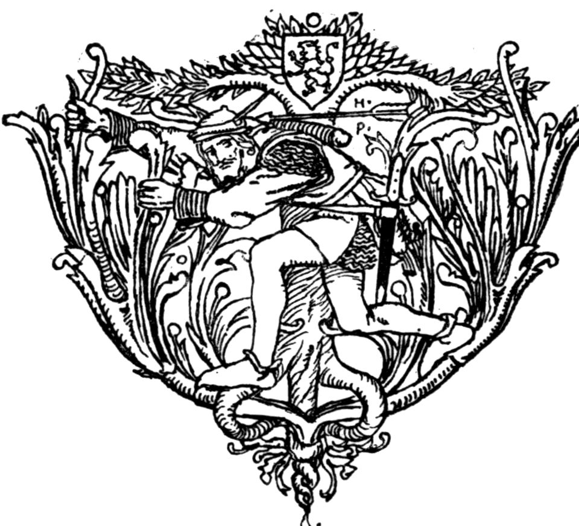
Part Eight: Guy of Gisbourne and King Richard
Chapter 19: Robin Hood and Guy of Gisbourne
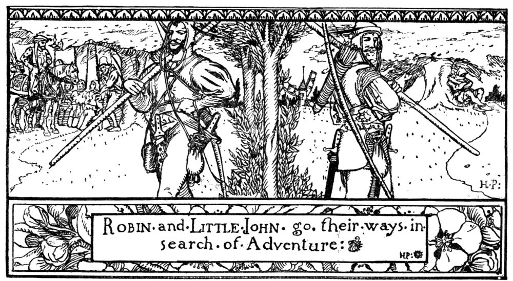
In which you will hear how Robin Hood met Guy of Gisbourne in Sherwood Forest, and about the famous fight between them. You will also hear how Little John fell into the Sheriff's hands by saving the lives of three young men. And besides, you will hear how good King Richard the Lionheart came to Nottinghamshire and visited Robin Hood in Sherwood Forest.
A long time passed after the great shooting match, and all through it Robin followed one part of Sir Robert Lee's advice, namely, to be less bold in his comings and goings. He may not have become any more honest (as most people think of honesty), but he took good care never to travel so far from Sherwood that he could not get back to it easily and quickly.
Great changes had come about in that time. King Henry had died, and King Richard had come to the crown, which fitted him so well, after many hard trials and adventures as exciting as any that ever happened to Robin Hood. But although great changes came, they did not reach into the shady depths of Sherwood. There Robin Hood and his men lived as merrily as they ever had, with hunting and feasting and singing and cheerful woodland games, for the struggles of the world outside troubled them very little.
The dawn of a certain summer's day was fresh and bright, and the birds sang sweetly in a great tumble of sound. Their singing was so loud that it woke Robin Hood where he lay sleeping, so that he stirred, and turned over, and got up. Little John got up too, and so did all the merry men. Then, after they had eaten breakfast, they set off this way and that about the business of the day.
Robin Hood and Little John walked down a forest path where all around them the leaves danced and twinkled as the breeze shivered through them and the sunlight came flickering down. Robin Hood said, "I swear, Little John, my blood is tickling my veins as it runs through them this bright morning. What do you say to going looking for adventures, each of us on his own?"
"With all my heart," said Little John. "We've had more than one good time that way, master. Here are two paths. You take the one on the right, and I'll take the one on the left, and then let's each walk straight ahead until he tumbles into some fun or other."
"I like your plan," said Robin, "so we'll split up here. But listen, Little John, keep yourself out of trouble, because I wouldn't want anything bad to happen to you for all the world."
"Well, listen to him!" said Little John. "The way you talk! I'd say you're the one who usually gets himself tangled up in tighter knots than I'm ever likely to."
At that Robin Hood laughed. "Why, really, Little John," he said, "you have a blundering, hard-headed way about you that always seems to bring you out right side up, whatever trouble you're in. But let's see which of us comes out best today." With that he slapped his palm against Little John's, and each of them went off his own way, and the trees quickly hid the one from the other's sight.
Robin Hood strolled on until he came to a place where a broad woodland road stretched out in front of him. Overhead, the branches of the trees laced together in flickering leaves, all golden where they grew thin enough to let the sunlight through. Under his feet the ground was soft and damp from the sheltering shade. And here, in this pleasant spot, the sharpest adventure that ever happened to Robin Hood came upon him. As he walked down the woodland path, thinking of nothing but the songs of the birds, he suddenly came to a place where a man was sitting on the mossy roots in the shade of a broad, spreading oak tree. Robin Hood saw that the stranger had not noticed him, so he stopped and stood quite still, and looked at the man for a long time before he came forward. And the stranger, I can tell you, was well worth looking at, for Robin had never seen anyone like the figure sitting under that tree. From head to foot he was dressed in a horse's hide, cured with the hair still on it. On his head was a hood that hid his face, and it too was made of the horse's skin, with the horse's ears still on it, sticking up like a rabbit's. His body was covered with a jacket made of the hide, and his legs were covered with the same hairy skin. At his side hung a heavy broadsword and a sharp, double-edged dagger. A quiver of smooth, round arrows hung across his shoulders, and his strong bow of yew leaned against the tree beside him.
"Hello there, friend," cried Robin, coming forward at last. "Who are you, sitting there? And what's that you've got on your body? I swear I've never seen such a sight in all my life. If I'd done something wicked, or if my conscience were bothering me, I'd be afraid of you. I'd think you were someone from down below, bringing me a message to come straight away to King Nicholas, that is, to Old Nick himself."
The other man didn't answer a word. But he pushed the hood back from his head and showed a frowning brow, a hooked nose, and a pair of fierce, restless black eyes, which all together made Robin think of a hawk as he looked at his face. But besides that, there was something about the lines of the stranger's face, and his thin, cruel mouth, and the hard glare of his eyes, that made your skin crawl to look at it.
"Who are you, rascal?" he said at last, in a loud, harsh voice.
"Tut, tut," said merry Robin. "Don't talk so sourly, brother. Have you been eating vinegar and nettles this morning, that your words sting so?"
"If you don't like my words," said the other fiercely, "you'd better get moving, because I'm telling you plainly, my deeds match them."
"Oh, no, I do like your words, you sweet, pretty thing," said Robin, squatting down on the grass in front of him. "In fact, I'll tell you, your talk is as witty and playful as any I've ever heard in all my life."
The other man didn't say a word, but he glared at Robin with a wicked, murderous look, the kind of look a fierce dog gives a man just before it springs at his throat. Robin looked back at him with wide-eyed innocence, without the shadow of a smile twinkling in his eyes or twitching at the corners of his mouth. So they sat staring at each other for a long time, until the stranger suddenly broke the silence. "What's your name, fellow?" he said.
"Well," said Robin, "I'm very glad to hear you talk, because I was starting to be afraid the sight of me had struck you dumb. As for my name, it might be this or it might be that. But I think it's more fitting for you to tell me yours, seeing that you're more of a stranger in these parts than I am. Please tell me, my little chick, why are you wearing that dainty outfit on your pretty body?"
At these words the other man burst into a short, harsh roar of laughter. "By the bones of Odin the demon," he said, "you're the boldest-talking man I've ever seen in all my life. I don't know why I don't strike you down where you sit, because only two days ago I ran a man through with my sword, over behind Nottingham Town, for saying not half as much to me as you have. I wear this outfit, you fool, to keep my body warm. Besides, it's nearly as good as a coat of steel against an ordinary sword-thrust. As for my name, I don't care who knows it. It's Guy of Gisbourne, and you may have heard it before. I come from the woodlands over in Herefordshire, on the lands of the Bishop of Hereford. I'm an outlaw, and I earn my living by hook or by crook, in ways there's no point in telling about now. Not long ago the Bishop sent for me. He said that if I would do a certain job that the Sheriff of Nottingham would ask of me, he would get me a free pardon, and give me two hundred pounds besides. So I came straight to Nottingham Town and found my sweet Sheriff. And what do you think he wanted from me? Why, to come here to Sherwood to hunt down a certain Robin Hood, another outlaw, and to take him alive or dead. It seems they have nobody here who can stand up to that bold fellow, and so they sent all the way to Herefordshire, to me. You know the old saying: 'Set a thief to catch a thief.' As for killing this fellow, that doesn't bother me one bit, because I'd spill the blood of my own brother for half of two hundred pounds."
Robin listened to all this, and as he listened his stomach turned. He knew all about this Guy of Gisbourne, and all the bloody and murderous things he had done in Herefordshire, because what he had done was known all over the land. But even though Robin loathed the very sight of the man, he held his tongue, because he had a purpose in mind. "Truly," he said, "I've heard of your gentle doings. I'd say there's nobody in the whole world that Robin Hood would rather meet than you."
At that Guy of Gisbourne gave another harsh laugh. "Why," he said, "it's a funny thing to think of one tough outlaw like Robin Hood meeting another tough outlaw like Guy of Gisbourne. Only in this case it will turn out badly for Robin Hood, because the day he meets Guy of Gisbourne, he'll die."
"But, you gentle, merry soul," said Robin, "don't you think that maybe this same Robin Hood might be the better man of the two? I know him very well, and plenty of people think he's one of the strongest and bravest men around here."
"He may be the strongest man around here," said Guy of Gisbourne, "but I tell you, fellow, this pigsty of yours isn't the whole wide world. I'll bet my life that I'm the better man of the two. Him, an outlaw! Why, I hear he's never shed a drop of blood in all his life, except when he first came to the forest. Some people call him a great archer. Well, I wouldn't be afraid to stand up against him with a bow in my hand every day of the year."
"Well, it's true some people do call him a great archer," said Robin Hood, "but we in Nottinghamshire are famous hands with the longbow. Even I, though I'm only a plain hand at it, wouldn't be afraid to try a round with you."
At these words Guy of Gisbourne stared at Robin in amazement, and then gave another roar of laughter until the woods rang. "Well," he said, "you're a bold fellow to talk to me like this. I like the spirit you show in standing up to me, because few men have ever dared to. Put up a garland, lad, and I'll try a round with you."
"Tut, tut," said Robin. "Only babies shoot at garlands around here. I'll put up a proper Nottingham target for you." With that he got up, went to a hazel thicket not far away, and cut a stick about twice as thick as a man's thumb. He peeled the bark off it, sharpened the point, and stuck it upright in the ground in front of a great oak tree. From there he measured off eighty paces, which brought him back beside the tree where the other man sat. "There," he said, "that's the kind of target Nottingham yeomen shoot at. Now let me see you split that stick, if you're an archer."
Then Guy of Gisbourne got up. "Nonsense!" he cried. "The Devil himself couldn't hit a target like that."
"Maybe he could and maybe he couldn't," said merry Robin, "but we'll never know until you've shot at it."
At these words Guy of Gisbourne frowned at Robin. But since the yeoman still looked innocent of meaning any harm, he bottled up his words and strung his bow in silence. He shot twice, but neither time did he hit the stick. He missed it by a hand's span, about nine inches, the first time, and by a good three inches the second. Robin laughed and laughed. "Now I see," he said, "that the Devil himself couldn't hit that target. My good fellow, if you're no better with the broadsword than you are with the bow and arrow, you'll never beat Robin Hood."
At these words Guy of Gisbourne glared savagely at Robin. "You've got a merry tongue, you villain," he said, "but take care you don't get too free with it, or I might cut it out of your throat for you."
Robin Hood strung his bow and took his place without a word, though his heart was trembling with anger and disgust. He shot twice. The first time he hit within an inch of the stick, and the second time he split it fairly down the middle. Then, without giving the other man a chance to speak, he flung his bow down on the ground. "There, you bloody villain!" he cried fiercely. "Let that show you how little you know about manly sports! And now take your last look at the daylight, because the good earth has been dirtied by you long enough, you vile beast! Today, if Our Lady wills it, you die. I am Robin Hood." And as he said it, he drew his bright sword, flashing in the sunlight.
For a while Guy of Gisbourne stared at Robin as if he had lost his wits. But his amazement quickly turned into a wild rage. "Are you really Robin Hood?" he cried. "Then I'm glad to meet you, you poor wretch! Say your prayers and confess your sins, because you won't have any time for it when I'm done with you." And with that he drew his sword too.
And now came the fiercest fight that Sherwood ever saw, because each man knew that either he or the other must die, and that there would be no mercy in this battle. Up and down they fought, until all the sweet green grass was crushed and ground under their trampling heels. More than once the point of Robin Hood's sword felt the softness of flesh, and before long the ground began to be sprinkled with bright red drops, though not one of them came from Robin's veins. At last Guy of Gisbourne made a fierce and deadly thrust at Robin Hood. Robin leaped lightly back from it, but as he leaped he caught his heel on a root and fell heavily on his back. "Now, Holy Mary help me!" he muttered, as the other sprang at him with a grin of rage on his face. Guy of Gisbourne stabbed fiercely down at him with his great sword, but Robin caught the blade in his bare hand. It cut his palm, but he turned the point aside, so that it plunged deep into the ground close beside him. Then, before another blow could be struck, he leaped to his feet with his good sword in his hand. And now despair came down over Guy of Gisbourne's heart like a black cloud, and he looked wildly around him like a wounded hawk. Seeing that the man's strength was leaving him, Robin leaped forward and, quick as a flash, struck a backhanded blow under his sword arm. Down fell the sword from Guy of Gisbourne's hand, and back he staggered from the stroke. And before he could get his balance again, Robin's sword went right through his body. He spun around on his heel, flung his hands up in the air with a shrill, wild cry, and fell face down on the green turf.
Then Robin Hood wiped his sword and slid it back into its sheath. He came and stood over the place where Guy of Gisbourne lay, with his arms folded, talking to himself as he did. "This is the first man I've killed since I shot the King's forester in the hot days of my youth. I often think bitterly, even now, about that first life I took. But I'm as glad of this one as if I'd killed a wild boar that was laying waste a lovely countryside. Since the Sheriff of Nottingham has sent a man like this against me, I'll put on the fellow's clothes and go out to see whether I can find his worship, and maybe pay him back some of what I owe him on this account."
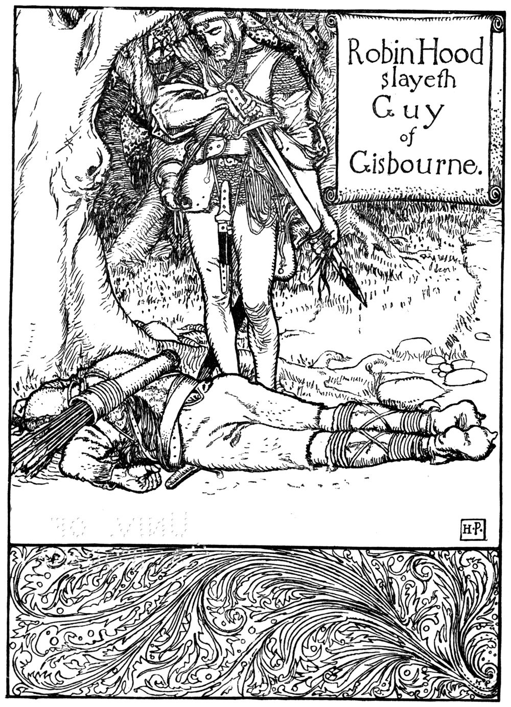
So Robin Hood stripped the hairy clothes off the dead man and put them on himself, all bloody as they were. Then he strapped the other man's sword and dagger around his body, carried his own in his hand along with the two yew bows, and pulled the hood of horse's hide down over his face, so that nobody could tell who he was. And so he set off out of the forest, turning his steps eastward toward Nottingham Town. As he strode along the country roads, men, women, and children hid from him, because the terror of Guy of Gisbourne's name and of the things he had done had spread far and wide.
And now let's see what happened to Little John while all this was going on.
Little John walked along the forest paths until he came to the edge of the woodlands, where fields of barley and wheat and green meadows lay here and there, smiling in the sun. So he came to the highroad, and to a place where a little thatched cottage stood behind a cluster of twisted crab apple trees, with flowers in front of it. Here he suddenly stopped, because he thought he heard the sound of someone in sorrow. He listened, and found that it came from the cottage. So he turned his steps that way, pushed open the little gate, and went in. There he saw a gray-haired old woman sitting beside a cold, empty fireplace, rocking herself back and forth and weeping bitterly.
Now, Little John had a tender heart for other people's sorrows. So he went up to the old woman and patted her kindly on the shoulder, and said comforting things to her, telling her to cheer up and tell him her troubles, because maybe he could do something to ease them. At all this the good woman shook her head. But all the same, his kind words did soothe her a little, so after a while she told him everything that was weighing on her mind. That very morning, she said, she had had three sons with her, as fine and tall as any you could find in all Nottinghamshire, but now they had been taken from her, and were likely to be hanged right away. Hard times had come upon them, and so her eldest boy had gone out into the forest the night before and killed a doe in the moonlight. The King's rangers had followed the blood on the grass until they came to her cottage, and there they had found the deer meat in the cupboard. Neither of the younger sons would betray their brother, so the foresters had taken all three of them away, even though the oldest said that he alone had killed the deer. As they went, she had heard the rangers talking among themselves. They said the Sheriff had sworn to put a stop to the great killing of deer that had been going on lately, by hanging the very first rogue caught at it from the nearest tree. And they said they would take the three young men to the King's Head Inn, near Nottingham Town, where the Sheriff was staying that day, to wait there for the return of a certain fellow he had sent into Sherwood to look for Robin Hood.
Little John listened to all this, shaking his head sadly every now and then. "Oh, no," he said, when the good woman had finished. "This is a bad business indeed. But who is this man who's gone into Sherwood after Robin Hood, and why is he looking for him? Still, never mind that now. I only wish Robin Hood were here to tell us what to do. All the same, there's no time to waste sending for him now, if we want to save your three sons' lives. Tell me, have you got any clothes around here that I could put on instead of these of Lincoln green? Because if our tough Sheriff catches me without a disguise, I'm likely to be strung up even faster than your sons, let me tell you, ma'am."
Then the old woman told him that she had some of her good husband's clothes in the house, for he had died only two years before. She brought these to Little John, who took off his Lincoln green and put them on instead. Then he made a wig and a false beard out of uncombed wool, and covered his own brown hair and beard with them. He put on a great tall hat that had belonged to the old farmer, took his staff in one hand and his bow in the other, and set off as fast as he could go toward the inn where the Sheriff was staying.
A mile or more from Nottingham Town, and not far from the southern edge of Sherwood Forest, stood the cozy inn with the sign of the King's Head. There was a great bustle and stir there on this bright morning, because the Sheriff and twenty of his men had come to stop there and wait for Guy of Gisbourne to come back from the forest. There was a great hissing and fussing of cooking in the kitchen, and a great rapping and tapping of wine kegs and beer barrels in the cellar. The Sheriff sat inside, feasting merrily on the best the place had to offer. His men sat on the bench in front of the door, gulping down ale, or lay in the shade of the broad, spreading oak trees, talking and joking and laughing. All around stood the horses of the troop, with a great noise of stamping hooves and a great swishing of tails. To this inn came the King's rangers, driving the widow's three sons in front of them. The hands of the three young men were tied tightly behind their backs, and a cord ran from neck to neck, fastening them all together. So they were marched into the room where the Sheriff sat eating, and stood trembling in front of him while he scowled sternly at them.
"So," he said, in a great, loud, angry voice, "you've been poaching the King's deer, have you? Well, I'll make short work of you today, because I'm going to hang all three of you, the way a farmer hangs up three dead crows to scare the rest of them out of his field. Our fair county of Nottingham has been a breeding ground for wicked rascals like you for far too long. I've put up with these things for many years, but now I'm going to stamp them out once and for all, and I'll begin with you."
Then one of the poor fellows opened his mouth to speak, but the Sheriff roared at him to be quiet, and ordered the rangers to take them away until he had finished eating and could deal with their case. So the three poor young men were marched outside, where they stood with bowed heads and hopeless hearts, until after a while the Sheriff came out. Then he called his men around him and said, "These three villains are to be hanged right away, but not here, in case they bring bad luck to this fine inn. We'll take them over to that strip of woodland there, because I'd like to hang them from the very trees of Sherwood itself, to show those vile outlaws in there what they can expect from me, if I ever have the good luck to lay my hands on them." With that he got on his horse, and so did his men-at-arms, and all together they set off for the strip of woodland he had pointed to, with the poor young men walking in the middle of them, guarded by the rangers. At last they came to the spot, and there nooses were put around the necks of the three, and the ends of the ropes were thrown over the branch of a great oak tree that stood there. Then the three young men fell on their knees and loudly begged the Sheriff for mercy. But the Sheriff of Nottingham laughed scornfully. "Well," he said, "I wish I had a priest here to hear your confessions. But since there isn't one nearby, you'll just have to travel your road with all your sins packed on your backs, and trust Saint Peter to let you in through the gates of Paradise like three peddlers coming into town."
Meanwhile, while all this had been going on, an old man had come up and stood leaning on his staff, watching. His hair and beard were all curly and white, and across his back was a yew bow that looked much too strong for him to draw. Before giving the order to string the three young men up to the oak tree, the Sheriff looked around, and his eyes fell on this strange old man. Then his worship waved him over, saying, "Come here, old fellow, I want a word with you." So Little John, for of course it was none other than he, came forward. The Sheriff looked at him, and thought there was something strangely familiar about the face in front of him. "Well, now," he said, "I think I've seen you before. What might your name be, old fellow?"
"If it please Your Worship," said Little John, in a cracked voice like an old man's, "my name is Giles Hobble, at Your Worship's service."
"Giles Hobble, Giles Hobble," the Sheriff muttered to himself, turning over all the names he had in his head to try to find one to fit this face. "I don't remember your name," he said at last, "but it doesn't matter. Would you like to earn sixpence this bright morning?"
"Yes, indeed," said Little John, "because money isn't so plentiful with me that I'd throw sixpence away, if I could earn it by doing an honest job. What is it Your Worship wants me to do?"
"Why, this," said the Sheriff. "Here are three men who need hanging as badly as any I ever saw. If you'll string them up, I'll pay you twopence apiece for them. I don't like my men-at-arms to turn hangmen. Will you try your hand at it?"
"Well, really," said Little John, still in the old man's voice, "I've never done such a thing before. But if a sixpence is to be earned so easily, I might as well have it as anybody. But, Your Worship, have these wicked fellows confessed their sins to a priest?"
"No," said the Sheriff, laughing, "not a bit of it. But you can turn your hand to that too, if you like. Only hurry up, please, because I want to get back to my inn soon."
So Little John went over to where the three young men stood trembling. Putting his face close to the first fellow's cheek, as if he were listening to his confession, he whispered softly into his ear, "Stand still, brother, when you feel your ropes cut. But when you see me throw the woolen wig and beard off my head and face, throw the noose off your neck and run for the woods." Then he slyly cut the cord that tied the young man's hands, and the young man, for his part, stood still as if he were still tied up. Then Little John went to the second fellow and spoke to him in the same way, and cut his ropes too. He did the same for the third. But he did it all so slyly that the Sheriff, who sat on his horse laughing, never knew what was going on, and neither did his men.
Then Little John turned to the Sheriff. "If it please Your Worship," he said, "will you give me leave to string my bow? Because I'd like to help these fellows along their way while they're swinging, with an arrow under the ribs."
"With all my heart," said the Sheriff. "Only, as I said before, be quick about it."
Little John set the tip of his bow against the top of his foot and strung it so neatly that everyone was amazed to see an old man so strong. Next he drew a good smooth arrow from his quiver and fitted it to the string. Then, after looking all around to make sure the way behind him was clear, he suddenly flung the wool off his head and face, shouting in a mighty voice, "Run!" Quick as a flash the three young men threw the nooses off their necks and sped across the open ground to the woods, as fast as an arrow speeds from a bow. Little John raced toward the cover of the trees too, like a greyhound, while the Sheriff and his men stared after him, completely bewildered by what had happened so suddenly. But before the yeoman had gone far, the Sheriff came to his senses. "After him!" he roared in a mighty voice, because now he knew who it was he had been talking to, and wondered why he had not recognized him before.
Little John heard the Sheriff's words. Seeing that he could not hope to reach the woods before they caught up with him, he stopped and turned around suddenly, holding his bow as if he were about to shoot. "Stand back!" he cried fiercely. "The first man who takes one step forward, or lays a finger on a bowstring, dies!"
At these words the Sheriff's men stood as still as fence posts, because they knew very well that Little John would be as good as his word, and that to disobey him meant death. The Sheriff roared at them in vain, calling them cowards and urging them to charge all together. They would not budge an inch, but stood and watched Little John as he moved slowly away toward the forest, keeping his eyes fixed on them. But when the Sheriff saw his enemy slipping through his fingers like this, he went mad with rage, so that his head spun and he did not know what he was doing. Suddenly he turned his horse's head, dug his spurs into its sides with a great shout, and, rising in his stirrups, came down on Little John like the wind. Then Little John raised his deadly bow and drew the gray goose feathers back to his cheek. But oh, poor Little John! Before he could let the arrow fly, the good bow that had served him for so long split in his hands, and the arrow fell harmlessly at his feet. When the Sheriff's men saw what had happened, they raised a shout and came rushing down on Little John after their master. But the Sheriff was ahead of the others, and so he caught up with the yeoman before he reached the shelter of the woods. Leaning forward, he struck a mighty blow. Little John ducked, and the Sheriff's sword twisted in his hand, but the flat of the blade hit Little John on the head and knocked him down, stunned and senseless.
"Well, I'm very glad," said the Sheriff, when his men came up and found that Little John was not dead, "that I didn't kill this man in my hurry! I'd rather lose five hundred pounds than have him die like this instead of hanging, the way such a vile thief ought to. Go and get some water from that spring over there, William, and pour it over his head."
The man did as he was told, and before long Little John opened his eyes and looked around him, all dazed and bewildered from the blow. Then they tied his hands behind him, lifted him up, and set him on the back of one of the horses, with his face toward its tail and his feet strapped together under its belly. So they took him back to the King's Head Inn, laughing and celebrating as they went. But in the meantime the widow's three sons had gotten safely away, and were hidden in the woods.
Once again the Sheriff of Nottingham sat inside the King's Head Inn. His heart was full of joy, because at last he had done what he had been trying to do for years: he had taken Little John prisoner. "By this time tomorrow," he said to himself, "the rogue will be hanging from the gallows in front of the great gate of Nottingham Town, and that will settle my long account with him." And with that he took a deep drink of Canary wine. But it seemed as if the Sheriff had swallowed a thought along with his wine, because he shook his head and put the cup down quickly. "Now," he muttered to himself, "I wouldn't let this fellow slip through my fingers for a thousand pounds. And yet, if his master should get away from that foul Guy of Gisbourne, there's no knowing what he might do, because he's the most cunning rascal in the whole world, this same Robin Hood. I'd probably better not wait until tomorrow to hang the fellow." With that he pushed his chair back quickly, went out of the inn, and called his men together. "I won't wait any longer to hang this rogue," he said. "It will be done right now, and from the very tree where he saved those three young villains by stepping between them and the law. So get yourselves ready at once."
So once more they set Little John on the horse with his face to its tail, and with one man leading the horse he sat on and the others riding around him, they went on toward the tree from whose branches they had meant to hang the poachers. On they went, rattling and jingling along the road, until they came to the tree. There one of the men suddenly spoke to the Sheriff. "Your Worship," he cried, "isn't that fellow coming toward us the same Guy of Gisbourne you sent into the forest to look for Robin Hood?" At these words the Sheriff shaded his eyes and looked eagerly. "Why, certainly," he said, "that's the very man. Now Heaven grant that he's killed the master thief, just as we're about to kill his man!"
When Little John heard this, he looked up, and at once his heart crumbled away inside him. For not only were the man's clothes covered all over with blood, but he was wearing Robin Hood's bugle horn and carrying his bow and broadsword.
"Well, now!" cried the Sheriff, when Robin Hood, in Guy of Gisbourne's clothes, had come up close to them. "What luck did you have in the forest? Why, man, your clothes are covered with blood!"
"If you don't like my clothes," said Robin, in a harsh voice like Guy of Gisbourne's, "you can shut your eyes. Why, the blood on me belongs to the vilest outlaw that ever walked the woodlands, and I killed him today, though not without being wounded myself."
Then Little John spoke up for the first time since he had fallen into the Sheriff's hands. "Oh, you vile, bloody wretch! I know you, Guy of Gisbourne, because who hasn't heard of you, and cursed you for your vile deeds of murder and robbery? Is it by a hand like yours that the gentlest heart that ever beat has been stilled in death? Truly, you're just the right tool for this coward of a Sheriff of Nottingham. Now I'll die gladly, and I don't care how I die, because life means nothing to me anymore!" So Little John spoke, with the salt tears rolling down his brown cheeks.
But the Sheriff of Nottingham clapped his hands for joy. "Now, Guy of Gisbourne," he cried, "if what you're telling me is true, it'll be the best day's work you've ever done in all your life."
"What I've told you is the truth, and I'm not lying," said Robin, still in Guy of Gisbourne's voice. "Look, isn't this Robin Hood's sword? And isn't this his good yew bow? And isn't this his bugle horn? Do you think he would have given them to Guy of Gisbourne of his own free will?"
Then the Sheriff laughed out loud for joy. "This is a good day!" he cried. "The great outlaw dead, and his right-hand man in my hands! Ask me for anything you want, Guy of Gisbourne, and it's yours!"
"Then this is what I ask of you," said Robin. "Since I've killed the master, I'd like to kill the man now too. Put this fellow's life in my hands, Sir Sheriff."
"Why, you're a fool!" cried the Sheriff. "You could have had enough money to pay a knight's ransom if you'd asked for it. I don't like letting this fellow out of my hands, but since I promised, you shall have him."
"I thank you with all my heart for your gift," cried Robin. "Take the rogue down off the horse, men, and stand him up against that tree there, while I show you how we stick a pig where I come from!"
At these words some of the Sheriff's men shook their heads. Even though they didn't care one bit whether Little John was hanged or not, they hated to see him butchered in cold blood. But the Sheriff called out to them in a loud voice, ordering them to take the yeoman down off the horse and stand him against the tree, as the other man had told them.
While they were doing this, Robin Hood strung both his own bow and Guy of Gisbourne's, though none of them noticed him doing it. Then, when Little John stood against the tree, Robin drew Guy of Gisbourne's sharp, double-edged dagger. "Get back! Get back!" he cried. "Would you crowd in on my fun like this, you rude rascals? Back, I tell you! Farther still!" So they crowded back as he ordered, and many of them turned their faces away so they wouldn't have to see what was about to happen.
"Come on!" cried Little John. "Here is my chest. It's only right that the same hand that killed my dear master should butcher me too! I know you, Guy of Gisbourne!"
"Hush, Little John!" said Robin in a low voice. "Twice now you've said you know me, and yet you don't know me at all. Couldn't you tell it was me under this wild beast's hide? There, just in front of you, are my bow and arrows, and my broadsword too. Grab them when I cut your ropes. Now! Get them, quick!" With that he cut the ropes, and Little John, quick as a wink, leaped forward and snatched up the bow and arrows and the broadsword. At the same moment Robin Hood threw back the horsehide hood from his face and drew Guy of Gisbourne's bow, with a sharp, barbed arrow fitted to the string. "Stand back!" he cried sternly. "The first man who lays a finger on a bowstring dies! I've killed your man, Sheriff. Take care it isn't your turn next." Then, seeing that Little John had armed himself, he put his bugle horn to his lips and blew three blasts, loud and shrill.
Now, when the Sheriff of Nottingham saw whose face was under Guy of Gisbourne's hood, and when he heard those bugle notes ringing in his ears, he felt as if his last hour had come. "Robin Hood!" he roared, and without another word he wheeled his horse around in the road and galloped off in a cloud of dust. When the Sheriff's men saw their master running for his life like that, they decided it was no business of theirs to stay any longer. So they put their spurs to their horses and dashed away after him too. But fast as the Sheriff of Nottingham went, he could not outrun a yard-long arrow. Little John twanged his bowstring with a shout, and when the Sheriff dashed in through the gates of Nottingham Town at full speed, a gray-feathered arrow was sticking out behind him, like a molting sparrow with one feather left in its tail. For a month afterward, the poor Sheriff could sit on nothing but the softest cushions that could be found for him.
So the Sheriff and twenty men ran away from Robin Hood and Little John. And when Will Stutely and a dozen or more strong yeomen burst out of the bushes, they saw nothing of their master's enemies, because the Sheriff and his men were scurrying away in the distance, hidden in a cloud of dust like a little thunderstorm.
Then they all went back into the forest again, where they found the widow's three sons, who ran to Little John and kissed his hands. But it would not be safe for them to wander about the countryside freely anymore. So they promised that after they had gone and told their mother how they had escaped, they would come to the greenwood tree that night, and from then on would be men of the band.
Chapter 20: King Richard Comes to Sherwood Forest
Not more than two months had come and gone since these stirring adventures happened to Robin Hood and Little John, when all of Nottinghamshire was thrown into a great stir and bustle. King Richard the Lionheart was making a royal tour through merry England, and everyone expected him to come to Nottingham Town on his travels. Messengers went riding back and forth between the Sheriff and the King, until at last a day was settled on when His Majesty would stop in Nottingham, as the guest of his worship the Sheriff.
And now there was more bustle than ever. People ran this way and that, and everywhere in the town you could hear the rapping of hammers and the babble of voices, because the townsfolk were building great arches across the streets for the King to ride under, and draping them with silk banners and streamers of every color. There was a great hubbub going on in the Guild Hall of the town, too, because a grand banquet was to be held there for the King and the nobles who traveled with him, and the best master carpenters were busy building a throne at the head of the table, where the King and the Sheriff would sit side by side.
To many of the good people of the town it seemed as if the day that would bring the King would never come. All the same, it did come in its own good time, and the sun shone bright down into the stony streets, which were alive with a restless sea of people. On both sides of the way, great crowds of town and country folk stood packed together as tight as dried herrings in a box, so that the Sheriff's men, with their halberds in their hands, could hardly push them back far enough to leave room for the King to ride through.
"Watch who you're shoving!" cried a great, burly friar to one of these men. "Are you going to dig your elbows into me, fellow? By Our Lady of the Fountain, if you don't treat me with more respect, I'll crack your rascally skull for you, even if you are one of the mighty Sheriff's men!"
At this a great shout of laughter went up from a number of tall yeomen in Lincoln green who were scattered through the crowd nearby. But one of them, who seemed to be in charge of the others, nudged the holy man with his elbow. "Quiet, Tuck," he said. "Didn't you promise me, before you came here, that you'd keep a rein on your tongue?"
"Yes, I did," grumbled the other, "but I didn't expect to have some hard-footed rascal trample all over my poor toes as if they were no more than so many acorns in the forest."
But suddenly all this bickering stopped, because the clear sound of many bugle horns came winding down the street. Then all the people craned their necks and stared in the direction the sound was coming from, and the crowding and pushing and swaying grew worse than ever. And now a splendid procession came gleaming into sight, and the cheering ran down the crowd the way fire runs through dry grass.
Twenty-eight heralds in velvet and cloth of gold came riding first. Over their heads fluttered a cloud of snow-white feathers, and each herald carried a long silver trumpet, which he blew very musically. From each trumpet hung a heavy banner of velvet and cloth of gold, with the royal arms of England worked on it. After them came a hundred noble knights, riding two by two, all in full armor except that their heads were bare. In their hands they carried tall lances, and from the tips of the lances fluttered little flags of many colors and designs. Beside each knight walked a page dressed in rich clothes of silk and velvet, and each page carried his master's helmet in his hands, with long, floating plumes of feathers waving from it. Nottingham had never seen a finer sight than those hundred noble knights, with the sun blazing off their armor in a dazzling light as they came riding on their great war horses, with a clashing of arms and a jingling of chains. Behind the knights came the barons and nobles of the middle of England, in robes of silk and cloth of gold, with golden chains around their necks and jewels at their belts. Behind them, again, came a great troop of soldiers with spears and halberds in their hands, and in the middle of them rode two horsemen side by side. One of them was the Sheriff of Nottingham in his official robes. The other was a head taller than the Sheriff, and he was dressed in clothes that were rich but simple, with a broad, heavy chain around his neck. His hair and beard were like threads of gold, and his eyes were as blue as the summer sky. As he rode along he bowed to the right and to the left, and a mighty roar of voices followed him as he passed, for this was King Richard.
Then, above all the noise and shouting, a great voice was heard roaring, "Heaven and its saints bless you, our gracious King Richard! And may Our Lady of the Fountain bless you too!" King Richard looked toward the spot the sound came from, and saw a tall, burly, strapping priest standing at the very front of the crowd, with his legs planted wide apart as he leaned back against the people behind him.
"Upon my soul, Sheriff," said the King, laughing, "you have the tallest priests in Nottinghamshire that I ever saw in all my life. If Heaven were deaf and never answered prayers, I think I'd still get my blessings, because that man over there could make the great stone statue of Saint Peter rub its ears and listen to him. I wish I had a whole army of men like him."
The Sheriff didn't answer a word to this. Instead, all the blood drained out of his cheeks, and he grabbed the front of his saddle to keep himself from falling off. For he had seen the fellow who shouted too, and knew him for Friar Tuck; and what was more, behind Friar Tuck he saw the faces of Robin Hood and Little John and Will Scarlet and Will Stutely and Allan a Dale and others of the band.
"What's this?" said the King quickly. "Are you ill, Sheriff, that you've turned so white?"
"No, Your Majesty," said the Sheriff, "it was nothing but a sudden pain that will soon pass." He said this because he was ashamed to let the King know that Robin Hood feared him so little that he dared to come right inside the gates of Nottingham Town.
So the King rode into Nottingham Town on that bright afternoon at the beginning of the fall. And nobody was happier than Robin Hood and his merry men to see him come home so royally to his own people.
Evening had come. The great feast in the Guild Hall of Nottingham Town was over, and the wine was flowing freely. A thousand wax candles gleamed all along the table, where lords and nobles, knights and squires sat in their fine clothes. At the head of the table, on a throne hung all over with cloth of gold, sat King Richard, with the Sheriff of Nottingham beside him.
The King spoke to the Sheriff, laughing as he did. "I've heard a great deal about the doings of certain fellows around here, a man called Robin Hood and his band, who are outlaws and live in Sherwood Forest. Can't you tell me something about them, Sir Sheriff? I hear you've had dealings with them more than once."
At these words the Sheriff of Nottingham looked down gloomily, and the Bishop of Hereford, who was there too, chewed his lower lip. "I can tell Your Majesty very little about the doings of those wicked fellows," said the Sheriff, "except that they're the boldest lawbreakers in all the land."
Then young Sir Henry of the Lea spoke up. He was a great favorite of the King's, and had fought under him in Palestine. "If it please Your Majesty," he said, "while I was away in Palestine I often heard from my father, and most of the time what I heard about was this very fellow, Robin Hood. If Your Majesty would like, I'll tell you about one of this outlaw's adventures."
The King laughed and told him to go ahead. So Sir Henry told how Robin Hood had helped Sir Richard of the Lea with money that he had "borrowed" from the Bishop of Hereford. Again and again the King and everyone there roared with laughter, while the poor Bishop turned as red as a cherry with annoyance, because it was a very sore subject with him. When Sir Henry of the Lea had finished, others who were there saw how much the King enjoyed this merry tale, and they told other stories about Robin and his merry men.
"By the hilt of my sword," said brave King Richard, "this is as bold and merry a rascal as I ever heard of! Why, I'll have to take this business in hand myself, and do what you couldn't do, Sheriff: clear the forest of him and his band."
That night the King sat in the rooms that had been set aside for him to stay in while he was in Nottingham Town. With him were young Sir Henry of the Lea, two other knights, and three barons of Nottinghamshire. But the King's mind still kept turning to Robin Hood. "Now," he said, "I'd gladly give a hundred pounds to meet this rascal Robin Hood, and to see something of the way he goes on in Sherwood Forest."
Then Sir Hubert of Gingham spoke up, laughing. "If Your Majesty has a wish like that, it isn't very hard to grant. If Your Majesty is willing to lose a hundred pounds, I promise to see to it that you not only meet this fellow, but feast with him in Sherwood."
"Why, Sir Hubert," said the King, "that suits me very well. But how will you get me to meet Robin Hood?"
"Why, like this," said Sir Hubert. "Let Your Majesty and the rest of us here put on the robes of seven friars of the Order of Black Friars, and let Your Majesty hang a purse with a hundred pounds in it under your gown. Then let's set out to ride from here to Mansfield Town tomorrow, and unless I'm very much mistaken, we'll meet Robin Hood and dine with him, too, before the day is over."
"I like your plan, Sir Hubert," said the King merrily, "and tomorrow we'll try it out and see whether there's anything in it."
So it happened that early the next morning, when the Sheriff came to the place where his lord the King was staying, to pay him his respects, the King told him what they had talked about the night before, and what a merry adventure they were about to set out on that morning. But when the Sheriff heard this, he struck his forehead with his fist. "Oh, no!" he said. "What wicked advice is this that somebody has given you? Oh, my gracious lord and King, you don't know what you're doing! This villain you're going looking for has no respect for kings or for the King's laws."
"But didn't I hear right, when I was told that this Robin Hood hasn't shed anyone's blood since he was outlawed, except only the blood of that vile Guy of Gisbourne, and every honest man ought to thank him for that death?"
"Yes, Your Majesty," said the Sheriff, "you heard right. All the same—"
"Then," said the King, cutting the Sheriff off in the middle of what he was saying, "what do I have to fear in meeting him, since I've never done him any harm? Truly, there's no danger in it. But maybe you'd like to come along with us, Sir Sheriff?"
"No!" said the Sheriff quickly. "Heaven forbid!"
But now seven robes of the kind the Black Friars wear were brought in. The King and the men with him dressed themselves in them, and His Majesty hung a purse with a hundred golden pounds in it under his robes. Then they all went out and climbed onto the mules that had been brought to the door for them. The King ordered the Sheriff to keep quiet about what they were doing, and so they set out on their way. On they traveled, laughing and joking, until they had passed through the open country, between bare fields where the harvest had already been gathered in, and through scattered patches of woodland that grew thicker as they went along, until they came into the heavy shade of the forest itself. They traveled several miles through the forest without meeting anybody like the man they were looking for, until they came to the part of the road that lay closest to Newstead Abbey.
"By the holy Saint Martin," said the King, "I wish I had a better head for remembering the things that really matter! Here we've come away without bringing so much as a drop of anything to drink. Now I'd give fifty pounds for something to quench my thirst with."
No sooner had the King said this than out of the bushes at the side of the road stepped a tall fellow with a yellow beard and yellow hair and a pair of merry blue eyes. "Truly, holy brother," he said, laying his hand on the King's bridle, "it would be an unchristian thing not to give a proper answer to such a fair bargain. We keep an inn near here, and for fifty pounds we won't just give you a good drink of wine; we'll give you as fine a feast as ever tickled your throat." With that he put his fingers to his lips and blew a shrill whistle. Right away the bushes and branches on both sides of the road swayed and crackled, and sixty broad-shouldered yeomen in Lincoln green burst out of the undergrowth.
"What's this, fellow?" said the King. "Who are you, you wicked rogue? Have you no respect for holy men like us?"
"Not a bit," said merry Robin Hood, for that's who the fellow was. "Because, honestly, all the holiness that rich friars like you have could be dropped into a thimble, and the good housewife wearing it would never feel it with the tip of her finger. As for my name, it's Robin Hood, and you may have heard it before."
"Shame on you!" said King Richard. "You're a bold, wicked fellow, and a lawless one too, as I've often heard. Now please, let me and these brothers of mine go on our way in peace and quiet."
"That can't be," said Robin, "because it would look very bad of us to let such holy men travel on with empty stomachs. But I don't doubt you have a fat purse to pay your bill at our inn, since you were offering so much for one poor drink of wine. Show me your purse, reverend brother, or I may have to strip your robes off you and search for it myself."
"No, don't use force," said the King sternly. "Here's my purse. But keep your lawless hands off my person."
"Tut, tut," said merry Robin. "What proud words are these? Are you the King of England, to talk to me like that? Here, Will, take this purse and see what's inside it."
Will Scarlet took the purse and counted out the money. Then Robin told him to keep fifty pounds for the band, and put the other fifty back into the purse. He handed this back to the King. "Here, brother," he said, "take this half of your money, and thank Saint Martin, whom you called on a little while ago, that you've fallen into the hands of rogues so gentle that they won't strip you bare, the way they could. But won't you put back your hood? I'd like to see your face."
"No," said the King, drawing back. "I can't put back my hood, because the seven of us have taken a vow not to show our faces for twenty-four hours."
"Then keep them covered, and welcome," said Robin, "and far be it from me to make you break your vows."
So he called seven of his yeomen and told each of them to lead a mule by the bridle. Then they turned toward the depths of the woodlands, and traveled on until they came to the open glade and the greenwood tree.
Little John, with sixty yeomen at his heels, had also gone out that morning to keep watch along the roads and bring some rich guest back to the glade in Sherwood, if he was lucky, because plenty of people with fat purses were bound to be traveling the roads just then, with such great doings going on in Nottinghamshire. But even though Little John and so many others were gone, Friar Tuck and forty or more strong yeomen were sitting or lying around under the great tree, and when Robin and the others came, they jumped to their feet to meet him.
"Upon my soul," said merry King Richard, when he had climbed down from his mule and stood looking around him, "you really do have a fine lot of young men around you, Robin. I think King Richard himself would be glad of a bodyguard like this."
"These aren't all of my fellows," said Robin proudly, "because sixty more of them are away on business with my good right-hand man, Little John. But as for King Richard, I tell you, brother, there isn't one man among us who wouldn't pour out his blood like water for him. You churchmen can't really understand our King. But we yeomen love him very loyally, for the sake of his brave deeds, which are so much like our own."
But now Friar Tuck came bustling up. "Good day to you, brothers," he said. "I'm very glad to welcome some men of my own trade to this wicked place. Truly, I think these rascally outlaws wouldn't stand much of a chance if it weren't for the prayers of holy Tuck, who works so hard for their good." And here he winked one eye slyly and stuck his tongue in his cheek.
"Who are you, you mad priest?" said the King in a serious voice, though he was smiling under his hood.
At this Friar Tuck looked all around him, slowly. "Now look here," he said, "don't any of you ever tell me again that I'm not a patient man. Here's a rascal of a friar calling me a mad priest, and I don't knock him down! My name is Friar Tuck, fellow: the holy Friar Tuck."
"That's enough, Tuck," said Robin. "You've said plenty. Please, stop talking and bring some wine. These reverend men are thirsty, and since they've paid so handsomely for their bill, they ought to have the very best."
Friar Tuck bristled at having his talk cut short like that. Even so, he went off right away to do what Robin had asked, and before long a great jug was brought, and wine was poured out for all the guests and for Robin Hood. Then Robin held his cup high. "Wait!" he cried. "Hold off drinking until I give you a toast. Here's to good King Richard of great renown, and may all his enemies be thrown into confusion!"
Then everyone drank the King's health, even the King himself. "I think, my good fellow," he said, "you've just drunk to your own confusion."
"Not a bit," said merry Robin, "because I tell you, we men of Sherwood are more loyal to our lord the King than people of your order are. We'd give up our lives for his good, while you're happy to lie snug in your abbeys and priories, and let whoever likes be king."
At this the King laughed. "Maybe King Richard's welfare matters more to me than you know, fellow," he said. "But enough about that. We've paid well for our meal, so can't you show us some merry entertainment? I've often heard that you're wonderful archers. Won't you show us a little of your skill?"
"With all my heart," said Robin. "We're always glad to show our guests all the sport there is to see. As old Gaffer Swanthold says, 'It's a hard heart that won't give a caged starling the very best,' and you're our caged starlings here. Hey, lads! Set up a garland at the end of the glade."
Then, while the yeomen ran to do what their master told them, Tuck turned to one of the pretend friars. "Did you hear our master?" he said, with a sly wink. "Whenever he comes up with some poor scrap of wit, he loads it straight onto the shoulders of this Gaffer Swanthold, whoever he is, so that the poor old fellow has to go traveling around with all the odds and ends and bits and pieces of our master's brain packed on his back." That's what Friar Tuck said, but he said it in a low voice so that Robin couldn't hear, because he was still feeling a bit stung at the way Robin had cut his talk so short.
Meanwhile the target they were going to shoot at had been set up a hundred and twenty paces away. It was a garland of leaves and flowers a foot and a half across, hung on a stake in front of a broad tree trunk. "There," said Robin, "that's a fair target, lads. Each of you shoot three arrows at it, and if anyone misses with so much as one arrow, he'll get a clout from Will Scarlet's fist."
"Listen to him!" said Friar Tuck. "Why, master, you hand out clouts from that strapping nephew of yours as if they were love taps from some bouncing lass. I'll bet you're sure you'll hit the garland yourself, or you wouldn't be so free with his cuffs."
First David of Doncaster shot, and put all three of his arrows inside the garland. "Well done, David!" cried Robin. "You've saved your ears from a warming today." Next Midge the Miller shot, and he put his arrows inside the garland too. Then came Wat the Tinker, but alas for him! One of his arrows missed the target by the width of two fingers.
"Come here, fellow," said Will Scarlet, in his soft, gentle voice. "I owe you something, and I'd like to pay it right away." So Wat the Tinker came forward and stood in front of Will Scarlet, screwing up his face and squeezing his eyes shut, as if he could already feel his ears ringing with the blow. Will Scarlet rolled up his sleeve, and, standing on tiptoe to give his arm a bigger swing, he struck with all his might and main. "Whoof!" went his palm against the Tinker's head, and down went sturdy Wat onto the grass, heels over head, like the wooden doll at a fair when a skillful player knocks it flying with a thrown stick. Then, as the Tinker sat up on the grass, rubbing his ear and winking and blinking at the bright stars that danced in front of his eyes, the yeomen roared with laughter until the forest rang. As for King Richard, he laughed until the tears ran down his cheeks. And so the band shot, each man in his turn, some getting off free, and some winning a clout that always sent them sprawling on the grass. And now, last of all, Robin took his place, and everything went quiet as he shot. His first arrow split a chip off the stake the garland hung on; the second landed within an inch of the first. "By all that's holy," King Richard said to himself, "I'd give a thousand pounds to have this fellow in my guard!" And now Robin shot for the third time; but, alas for him! The arrow was badly feathered, and it wobbled off to one side and struck an inch outside the garland.
At this a great roar went up. The yeomen who were sitting on the grass rolled over and over, shouting with laughter, because they had never before seen their master miss his mark like that. But Robin threw his bow down on the ground in annoyance. "Curse it!" he cried. "That arrow had a bad feather on it; I felt it as it left my fingers. Give me a clean arrow, and I promise I'll split the stick with it."
At these words the yeomen laughed louder than ever. "No, good uncle," said Will Scarlet in his soft, sweet voice. "You've had your fair chance, and you missed your aim, plain and simple. I swear that arrow was as good as any that's been shot today. Come here; I owe you something, and I'd like to pay it."
"Go on, good master," roared Friar Tuck, "and my blessing go with you. You've handed out these love taps of Will Scarlet's very freely. It would be a pity if you didn't get your own share."
"That can't be," said merry Robin. "I'm king here, and no subject may raise his hand against the king. But even our great King Richard can give way to the holy Pope without any shame, and even take a tap from him as a penance. So I'll give myself up to this holy friar, who seems to be someone in authority, and take my punishment from him." And with that he turned to the King. "Please, brother, will you take my punishing into your holy hands?"
"With all my heart," said merry King Richard, getting up from where he was sitting. "I owe you something for lifting a heavy weight of fifty pounds out of my purse. So make room for him on the grass, lads."
"If you knock me over," said Robin, "I'll gladly give you back your fifty pounds. But I tell you, brother, if you don't make me feel the grass all along my back, I'll take every last farthing you have, for that boastful speech of yours."
"So be it," said the King. "I'm willing to risk it." With that he rolled up his sleeve and showed an arm that made the yeomen stare. But Robin stood there with his feet wide apart, firmly planted, smiling and waiting for him. Then the King swung back his arm, balanced himself for a moment, and gave Robin a clout that landed like a thunderbolt. Down went Robin headfirst on the grass, for that blow would have knocked down a stone wall. Then how the yeomen shouted with laughter, until their sides ached, because they had never seen such a clout given in all their lives! As for Robin, after a while he sat up and looked all around him, as if he had dropped out of a cloud and landed in a place he'd never seen before. Then, still staring around at his laughing yeomen, he put his fingertips softly to his ear and felt all around it, very tenderly. "Will Scarlet," he said, "count this fellow out his fifty pounds. I want nothing more to do with his money or with him. Plague take him and his clouting! I wish I'd taken my punishment from you, because I honestly believe he's made this ear deaf forever."
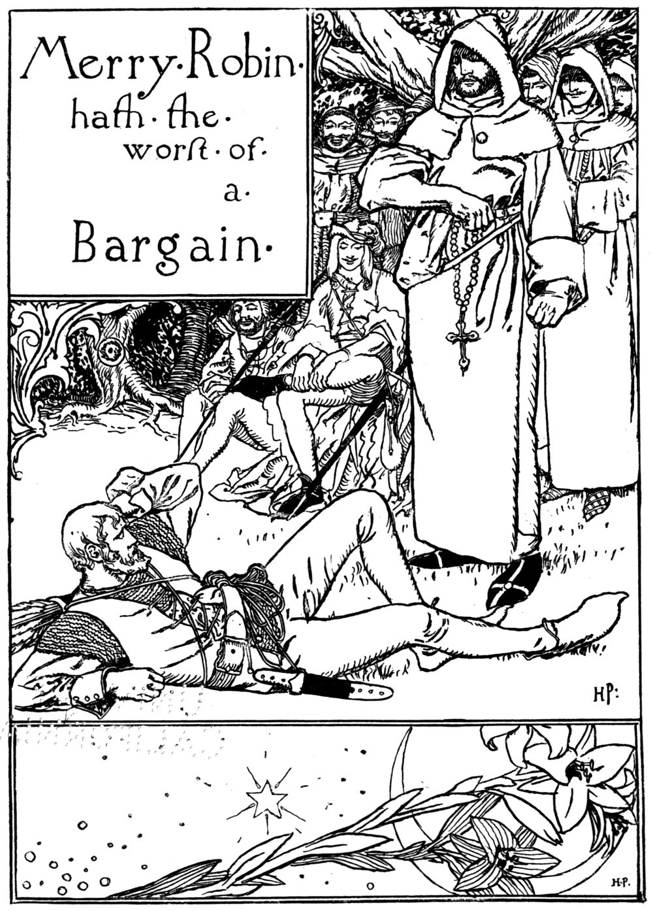
Then, while bursts of laughter were still breaking out among the band, Will Scarlet counted out the fifty pounds, and the King dropped them back into his purse. "Thank you, fellow," he said. "And if you ever want another box on the ear to match the one you've got, come to me and I'll fit you with one for free."
So spoke the merry King. But just as he finished, there suddenly came the sound of many voices, and out of the thicket burst Little John and sixty men, with Sir Richard of the Lea in the middle of them. They came running across the glade, and as they came, Sir Richard shouted to Robin, "Hurry, dear friend, gather your band together and come with me! King Richard left Nottingham Town this very morning, and he's coming to look for you in the woodlands. I don't know how he's coming, because it was only a rumor of it that reached me. Even so, I know it's the truth. So hurry, with all your men, and come to Castle Lea, because there you can lie hidden until this danger passes. Who are these strangers you have with you?"
"Why," said merry Robin, getting up off the grass, "these are some gentle guests who came along with us from the highway over by Newstead Abbey. I don't know their names, but I've gotten very well acquainted with this strapping rogue's palm this morning. Why, the pleasure of that acquaintance has cost me a deaf ear and fifty pounds besides!"
Sir Richard looked hard at the tall friar, and the friar drew himself up to his full height and looked straight back at the knight. Then suddenly Sir Richard's cheeks went pale, because he knew who it was he was looking at. He leaped down quickly from his horse's back and threw himself on his knees in front of the other man. At this the King, seeing that Sir Richard knew him, threw back his hood, and all the yeomen saw his face and knew him too, because there wasn't one of them who hadn't been in the crowd in the good town of Nottingham and seen him riding side by side with the Sheriff. Down they fell on their knees, and not one of them could say a word. Then the King looked all around very grimly, and at last his gaze came back and rested on Sir Richard of the Lea.
"What's the meaning of this, Sir Richard?" he said sternly. "How dare you step in between me and these fellows? And how dare you offer your knightly Castle of the Lea as a refuge for them? Will you make it a hiding place for the most famous outlaws in England?"
Then Sir Richard of the Lea raised his eyes to the King's face. "Far be it from me," he said, "to do anything that could bring Your Majesty's anger down on me. And yet I'd sooner face Your Majesty's anger than let any harm I could prevent fall on Robin Hood and his band. To them I owe my life, my honor, everything. So should I desert him now, when he needs me?"
Before the knight had finished speaking, one of the pretend friars who stood near the King came forward and knelt beside Sir Richard, and threw back his hood, and showed the face of young Sir Henry of the Lea. Then Sir Henry took his father's hand and said, "Here kneels a man who has served you well, King Richard, and who, as you know, once stepped between you and death in Palestine. And yet I stand by my dear father, and I say this too: I would gladly give shelter to this noble outlaw, Robin Hood, even if it brought your anger down on me, because my father's honor and my father's welfare are as dear to me as my own."
King Richard looked from one kneeling knight to the other, and at last the frown faded from his forehead and a smile twitched at the corners of his mouth. "Well, Sir Richard," said the King, "you're a bold-spoken knight, and your plain speaking doesn't count heavily against you with me. This young son of yours takes after his father, both in bold words and in bold deeds, because, as he says, he did once step between me and death. And for his sake I'd pardon you even if you'd done more than you have. Get up, all of you, for you'll suffer no harm from me today. It would be a pity for a merry time to end in a way that spoiled the fun of it."
Then they all got up, and the King beckoned to Robin Hood to come to him. "Well, now," he said, "is your ear still too deaf to hear me speak?"
"My ears will be deafened by death before they stop hearing Your Majesty's voice," said Robin. "As for the blow Your Majesty gave me, I'd say that though my sins may be many, I think they've been paid off in full by it."
"Do you think so?" said the King, with something stern in his voice. "Now I'll tell you this: if it weren't for three things, namely my mercy, my fondness for a brave woodsman, and the loyalty you've sworn to me, your ears might have been shut more tightly than any clout of mine could shut them. Don't talk lightly about your sins, good Robin. But come, look up. Your danger is over, because I hereby give you and all your band a free pardon. Truly, though, I can't let you go on roaming the forest the way you have in the past. So I'll take you at your word, when you said you'd give your service to me, and you'll come back to London with me. We'll take that bold rascal Little John too, and your nephew Will Scarlet as well, and your minstrel, Allan a Dale. As for the rest of your band, we'll take down their names and have them properly recorded as royal rangers. I think it's wiser to turn them into law-abiding keepers of our deer in Sherwood than to leave them running loose as outlaws who kill them. But now get a feast ready. I'd like to see how you live in the woodlands."
So Robin told his men to get a grand feast ready. Right away great fires were lit, and they burned brightly, and good things roasted over them and smelled delicious. While this was going on, the King asked Robin to call Allan a Dale, because he wanted to hear him sing. So word was passed for Allan, and before long he came, bringing his harp.
"Well," said King Richard, "if your singing matches your looks, it's good enough. Please, strike up a song and give us a taste of your skill."
Then Allan touched his harp lightly, and every voice went quiet while he sang:
"'Oh, where have you been, my daughter?
Oh, where have you been today,
Daughter, my daughter?'
'Oh, I have been to the river's side,
Where the waters lie all gray and wide,
And the gray sky broods on the leaden tide,
And the shrill wind sighs and strains.'
"'What did you see there, my daughter?
What did you see there today,
Daughter, my daughter?'
'Oh, I saw a boat come drifting by,
Where the quivering rushes hiss and sigh,
And the water moans with a gurgling cry,
And the shrill wind sighs and strains.'
"'What sailed in the boat, my daughter?
What sailed in the boat today,
Daughter, my daughter?'
'Oh, there was one all dressed in white,
And around his face hung a pale, cold light,
And his eyes gleamed sharp like the stars at night,
And the shrill wind sighed and strained.'
"'And what did he say, my daughter?
What did he say to you today,
Daughter, my daughter?'
'Oh, not a word he said, but this:
Three times on my lips he pressed a kiss,
And my heartstrings shrank with an awful bliss,
And the shrill wind sighed and strained.'
"'Why are you growing so cold, my daughter?
Why are you growing so cold and white,
Daughter, my daughter?'
Oh, never a word the daughter said,
But she sat up straight with a drooping head,
For her heart was stilled and her face was dead:
And the shrill wind sighed and strained."
Everyone listened in silence, and when Allan a Dale had finished, King Richard heaved a sigh. "By the breath of my body, Allan," he said, "you have such a wonderfully sweet voice that it moves my heart strangely. But what kind of gloomy song is this for the lips of a strong yeoman? I'd rather hear you sing a song of love and battle than a sad thing like that. Besides, I don't understand it. What do you mean by the words?"
"I don't know, Your Majesty," said Allan, shaking his head, "because I often sing things that I don't clearly understand myself."
"Well, well," said the King, "let it go. Only I'll tell you this, Allan: you ought to turn your songs to the kinds of things I talked about, that is, love or war. Because, truly, you have a sweeter voice than Blondel, and I used to think he was the best minstrel I ever heard."
But now someone came up and said that the feast was ready. So Robin Hood brought King Richard and the men with him to where it was all spread out on fair white linen cloths laid on the soft green grass. Then King Richard sat down and ate and drank, and when he had finished, he swore up and down that he had never sat down to such a hearty meal in all his life.
That night he slept in Sherwood Forest on a bed of sweet green leaves, and early the next morning he set out from the woodlands for Nottingham Town, with Robin Hood and his whole band going along with him. You can guess what a stir there was in that good town when all these famous outlaws came marching into the streets. As for the Sheriff, he didn't know what to say or where to look when he saw Robin Hood in such high favor with the King, while his whole heart was full of bitterness because of the humiliation that had fallen on him.
The next day the King said goodbye to Nottingham Town. So Robin Hood and Little John and Will Scarlet and Allan a Dale shook hands with all the rest of the band, kissing each man on the cheek, and swearing that they would often come back to Sherwood to see them. Then each of them climbed onto his horse and rode away among the King's followers.
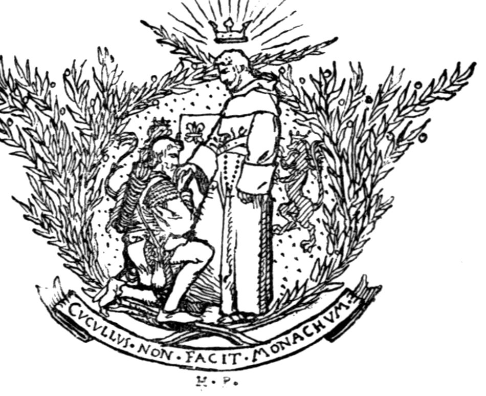
Thus end the Merry Adventures of Robin Hood. For, in spite of his promise, it was many a year before he saw Sherwood again.
_After a year or two at court, Little John came back to Nottinghamshire, where he lived a quiet, law-abiding life, though still within sight of Sherwood, and where he won great fame as the champion of all England with the quarterstaff. Will Scarlet after a while went back to his own home, which he had been driven away from when he unluckily killed his father's steward. The rest of the band did their duty as royal rangers very well. But Robin Hood and Allan a Dale didn't come back to Sherwood so quickly, and this is how it happened._
_Because of his great fame as an archer, Robin became a favorite of the King's, so that he quickly rose in rank to be chief of all the King's yeomen. At last the King, seeing how faithful and how loyal he was, made him Earl of Huntingdon. So Robin followed the King to the wars, and found his time so full that he never had a chance to come back to Sherwood for so much as a single day. As for Allan a Dale and his wife, the fair Ellen, they followed Robin Hood and shared in all the ups and downs of his life._
Epilogue
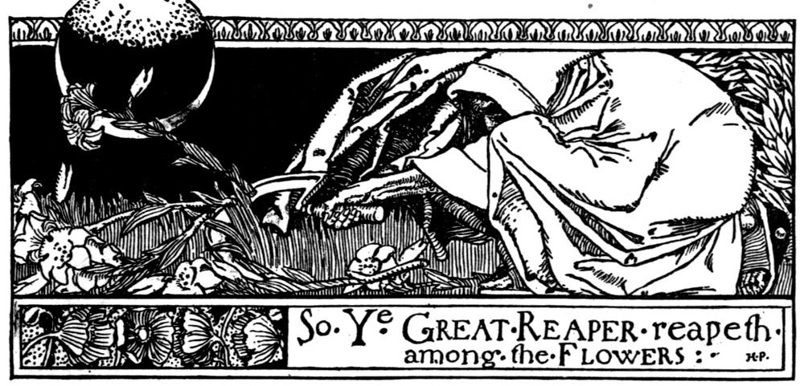
Telling how Robin Hood came back again to Sherwood Forest, and how Sir William Dale was sent against him to capture him. And it also tells how Robin Hood died through the treachery of his cousin, the Prioress of the Nunnery of Kirklees.
And now, dear friend, you who have traveled with me through all these merry doings, I won't ask you to follow me any further. If you like, I'll let go of your hand right here and say "good evening" to you. For what comes next tells about the breaking up of things, and shows how joys and pleasures that are dead and gone can never be set on their feet to walk again. I won't dwell on it too long. I'll tell you as quickly as I can how that brave fellow, Robin Hood, died just as he had lived: not at court as the Earl of Huntingdon, but with his bow in his hand, his heart in the greenwood, and himself a true yeoman.
King Richard died on the battlefield, in a way that was fitting for a king with the heart of a lion, as I'm sure you know already. So after a while the Earl of Huntingdon (or Robin Hood, as we still call him, the way we always did) found nothing more to do abroad, and came back to merry England again. With him came Allan a Dale and his wife, fair Ellen, for these two had been the chief people of Robin's household ever since he had left Sherwood Forest.
It was springtime when they landed once more on the shores of England. The leaves were green and the little birds sang cheerfully, just as they used to do in fair Sherwood when Robin Hood roamed the shady woodlands with a free heart and a light step. All the sweetness of the season and the joy in everything brought his forest life back to Robin's mind, until a great longing came over him to see the woodlands once more. So he went straight to King John and asked his permission to visit Nottingham for a short while. The King gave him leave to come and go, but told him not to stay at Sherwood longer than three days. So Robin Hood and Allan a Dale set off without delay for Nottinghamshire and Sherwood Forest.
The first night they stayed at an inn in Nottingham Town, but they didn't go to pay their respects to the Sheriff. His worship held many a bitter grudge against Robin Hood, and those grudges had not grown any smaller because Robin had risen so high in the world. Early the next day they mounted their horses and set off for the woodlands. As they rode along the road, it seemed to Robin that he knew every stick and stone his eyes fell on. Over there was a path he had walked many a mellow evening with Little John beside him; here was another, almost choked with brambles now, along which he and a little band had walked when they went out looking for a certain curtal friar.
So they rode slowly on, talking about these old, familiar things. They were old, and yet they were new too, because the two men found more in them now than they had ever thought of before. And so at last they came to the open glade and the broad, wide-spreading greenwood tree that had been their home for so many years. Neither of them said a word as they stood beneath that tree. Robin looked all around him at the well-known things, so like what they used to be, and yet so different. Where there had once been the bustle of many busy fellows, there was now the quiet of an empty place. And as he looked, the woodlands, the green grass, and the sky all blurred together through his salty tears. Such a great yearning came over him, looking at these things he knew as well as the fingers of his right hand, that he couldn't keep the water from his eyes.
That morning he had slung his good old bugle horn over his shoulder, and now, along with the yearning, came a great longing to blow his bugle once more. He raised it to his lips and blew a blast. "Tirila, lirila," the sweet, clear notes went winding down the forest paths, and came back again from the shady thickets farther off in faint echoes, "Tirila, lirila, tirila, lirila," until the sound faded away and was gone.
Now it happened that on that very morning Little John was walking through a corner of the forest on some business of his own. As he paced along, deep in thought, the faint, clear notes of a distant bugle horn reached his ear. Just as a stag leaps when it feels the arrow in its heart, so Little John leaped when that faraway sound reached him. All the blood in his body seemed to rush like a flame into his cheeks as he bent his head and listened. Again the bugle sounded, thin and clear, and then once more. Then Little John gave a great, wild cry of longing, of joy, and of grief all at once, and, putting down his head, he charged into the thicket. On he plunged, crackling and tearing, the way a wild boar rushes through the underbrush. He cared nothing for the thorns and briars that scratched his skin and ripped his clothes, for all he could think of was getting by the shortest way to the greenwood glade where he knew the sound of the bugle horn had come from. At last he burst out of the bushes, with a shower of little broken twigs falling all around him, and without stopping for a moment he rushed forward and threw himself down at Robin's feet. He clasped his arms around his master's knees, and his whole body shook with great sobs. Neither Robin nor Allan a Dale could speak, but they stood looking down at Little John with the tears rolling down their cheeks.
While they stood like that, seven royal rangers rushed into the open glade and gave a great shout of joy at the sight of Robin, and at their head was Will Stutely. Then, after a little while, four more came, panting from their running, and two of these four were Will Scathelock and Midge the Miller's son. All of them had heard the sound of Robin Hood's horn. They all ran to Robin and kissed his hands and his clothes, weeping aloud.
After a while Robin looked around him with tear-dimmed eyes and said in a husky voice, "Now I swear that I will never leave these dear woodlands again. I've been away from them, and from you, for too long. Here and now I lay aside the name of Robert, Earl of Huntingdon, and take up once again that nobler title, Robin Hood, the Yeoman." At that a great shout went up, and all the yeomen shook one another's hands for joy.
The news that Robin Hood had come back to live in Sherwood as he used to spread like wildfire all over the countryside, so that before a week had passed, nearly all his old yeomen had gathered around him again. But when the news of all this reached the ears of King John, he swore long and loud, and made a solemn vow that he would not rest until he had Robin Hood in his power, dead or alive. Now there was at court a certain knight, Sir William Dale, as gallant a soldier as ever put on armor. Sir William Dale knew Sherwood Forest well, for he was head keeper of the part of it that lay near good Mansfield Town. So the King turned to him and ordered him to take an army of men and go at once to hunt for Robin Hood. The King also gave Sir William his signet ring, the ring he sealed his orders with, to show to the Sheriff, so that the Sheriff would call out all his armed men to help the others in the chase. So Sir William and the Sheriff set out to do the King's bidding and search for Robin Hood; and for seven days they hunted up and down, but they did not find him.
Now, if Robin Hood had been as peaceable as he used to be, everything might have ended up in smoke, the way all the other attempts like it had ended before. But he had fought for years under King Richard, and he had changed from what he used to be. It hurt his pride to run away from the men sent against him, the way a hunted fox runs from the hounds. And so at last it came about that Robin Hood and his yeomen met Sir William and the Sheriff and their men in the forest, and a bloody battle followed. The first man killed in that fight was the Sheriff of Nottingham. He fell from his horse with an arrow in his brain before ten arrows had been shot. Many a better man than the Sheriff fell face down on the grass that day. But at last Sir William Dale was wounded and most of his men were killed, and he drew back, beaten, and left the forest. Yet scores of good fellows were left behind him, lying stiff and still beneath the sweet green branches.
But even though Robin Hood had driven off his enemies in a fair fight, all of it weighed heavily on his mind. He brooded over it until a fever took hold of him. For three days it gripped him, and though he struggled to fight it off, he had to give in at last. So on the morning of the fourth day he called Little John to him and told him that he couldn't shake off the fever. He said he would go to his cousin, the prioress of the nunnery near Kirklees, in Yorkshire. (A prioress is the woman in charge of a house of nuns.) She was a skillful healer, and he would have her open a vein in his arm and let out a little of his blood, to make him well again, for that was how doctors treated a fever in those days. Then he told Little John to get ready to come too, because he might need help on the journey. So Little John and Robin said goodbye to the others, and Robin Hood told Will Stutely to be captain of the band until they came back. And so, riding slowly and in easy stages, they came at last to the Nunnery of Kirklees.
Now, Robin had done a great deal to help this cousin of his, for it was because King Richard loved Robin that she had been made prioress of the place. But there is nothing in the world so easily forgotten as gratitude. When the Prioress of Kirklees heard how her cousin, the Earl of Huntingdon, had thrown away his earldom and gone back to Sherwood, she was angry to the bottom of her soul. She was afraid that being his cousin might bring the King's anger down on her too. And so, when Robin came to her and told her he wanted her services as a healer, she began plotting evil against him in her mind, thinking that if she did him harm she might win favor with his enemies. But she kept all this to herself and welcomed Robin with a show of kindness. She led him up the winding stone stairs to a room just under the eaves of a high, round tower; but she would not let Little John come with him.
So the poor yeoman turned away from the door of the nunnery and left his master in the hands of the women. But though he didn't come in, he didn't go far away either. He lay down in a little glade nearby, where he could watch the place where Robin was, like some great, faithful dog shut out from the door his master has gone in by.
After the women had gotten Robin Hood up to the room under the eaves, the Prioress sent all the others away. Then she took a little cord and tied it tightly around Robin's arm, as if she were about to bleed him. And she did bleed him; but the vein she opened was not one of those that lie close and blue under the skin. She cut deeper than that, for she opened one of the vessels through which the bright red blood comes leaping straight from the heart. Robin didn't know this. Although he saw the blood flowing, it didn't come fast enough to make him think anything was wrong.
When she had done this wicked deed, the Prioress turned and left her cousin, locking the door behind her. All that long day the blood ran from Robin Hood's arm, and he could not stop it, though he tried every way he knew. Again and again he called for help, but no help came, because his cousin had betrayed him and Little John was too far away to hear him. So he bled and bled, until he felt his strength slipping away. Then he got up, tottering, and holding himself up with the palms of his hands against the wall, he reached his bugle horn at last. Three times he blew it, but weakly and faintly, for his breath came fluttering through sickness and weakness. All the same, Little John heard it where he lay in the glade, and with his heart sick with dread he came running and leaping toward the nunnery. He pounded on the door and shouted at the top of his voice for them to let him in. But the door was made of massive oak, strongly barred and studded with spikes, so the people inside felt safe, and they told Little John to go away.
Then Little John's heart went wild with grief and fear for his master's life. He looked frantically around him, and his eyes fell on a heavy stone mortar, the great stone bowl used for grinding grain, so heavy that three men today could not lift it. Little John took three steps forward, bent his back, and heaved the stone mortar up from where it sat deep in the ground. Staggering under its weight, he came forward and hurled it crashing against the door. In burst the door, and the frightened nuns ran away shrieking as he came. Then Little John strode in, and never said a word, but ran up the winding stone steps until he reached the room where his master was. He found this door locked too, but he put his shoulder against it and burst the locks as if they were made of brittle ice.
There he saw his own dear master leaning against the gray stone wall, his face all white and drawn, and his head swaying back and forth with weakness. Then, with a great, wild cry of love and grief and pity, Little John leaped forward and caught Robin Hood in his arms. He lifted him up the way a mother lifts her child, carried him to the bed, and laid him down on it gently.
And now the Prioress came hurrying in, for she was frightened at what she had done, and she dreaded the revenge of Little John and the rest of the band. She stopped the blood with skillful bandages, so that it didn't flow anymore. All the while Little John stood grimly by, and when she had finished he sternly ordered her to go, and she obeyed, pale and trembling. After she had gone, Little John spoke cheering words, laughing loudly and saying that all this was nothing but a child's fright, and that no strong yeoman ever died from losing a few drops of blood. "Why," he said, "give yourself a week and you'll be roaming the woodlands as boldly as ever."
But Robin shook his head and smiled faintly where he lay. "My own dear Little John," he whispered, "Heaven bless your kind, rough heart. But, dear friend, we'll never roam the woodlands together again."
"Yes, we will!" said Little John loudly. "I say it again, yes! Nonsense! Who dares say any more harm is going to come to you? Aren't I right here? Let me see anyone who dares to touch—" Here he stopped suddenly, because his words choked him. At last he said, in a deep, husky voice, "Now, if any harm comes to you because of what happened today, I swear by Saint George that the red rooster will crow over the roof of this house, for the hot flames will lick every crack and corner of it. As for these women—" here he ground his teeth "—it will be a bad day for them!"
But Robin Hood took Little John's rough brown fist in his white hands, and scolded him gently in his low, weak voice, asking him since when Little John had ever thought of harming women, even for revenge. He kept on talking like this until at last Little John promised, in a choking voice, that no harm would come to the place, no matter what happened. Then a silence fell, and Little John sat with Robin Hood's hand in his, gazing out of the open window, and every now and then swallowing a great lump that kept coming into his throat. Meanwhile the sun sank slowly in the west, until the whole sky was ablaze with a red glory. Then Robin Hood, in a weak, faltering voice, asked Little John to raise him up so that he could look out once more at the woodlands. So the yeoman lifted him in his arms, as he asked, and Robin Hood's head lay on his friend's shoulder. For a long time he gazed out with a wide, lingering look, while Little John sat with his head bowed and the hot tears rolled one after another from his eyes and dripped onto his chest, for he felt that the time of parting was near. Then, after a while, Robin Hood asked him to string his strong bow for him and choose a smooth, fine arrow from his quiver. Little John did this without disturbing his master or getting up from where he sat. Robin Hood's fingers closed lovingly around his good bow, and he smiled faintly when he felt it in his grip. Then he fitted the arrow to the very spot on the string that the tips of his fingers knew so well. "Little John," he said, "Little John, my own dear friend, the one I love better than anyone else in the world, please watch where this arrow lands, and there let my grave be dug. Lay me with my face toward the east, Little John, and see that my resting place is kept green, and that my weary bones are not disturbed."
As he finished speaking, he suddenly raised himself and sat upright. His old strength seemed to come back to him, and, drawing the bowstring back to his ear, he sent the arrow flying out of the open window. As the arrow flew, his hand sank slowly with the bow until it lay across his knees, and his body sank back too into Little John's loving arms. But something had flown from that body, just as the winged arrow had flown from the bow.
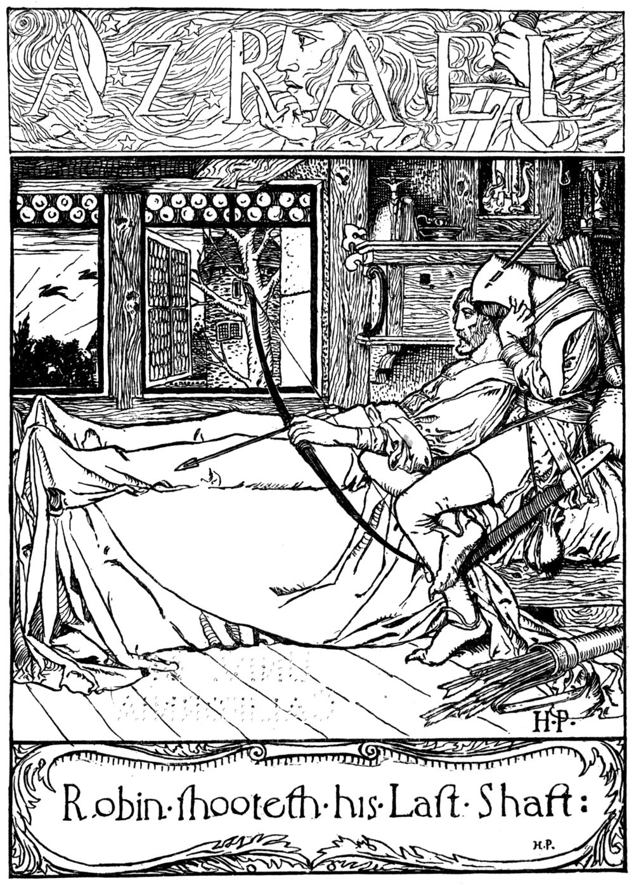
For some minutes Little John sat without moving. Then at last he laid down gently what he was holding, and, folding the hands on the breast and covering the face, he turned on his heel and left the room without a word or a sound.
On the steep stairway he met the Prioress and some of the chief sisters of the nunnery. He spoke to them in a deep, shaking voice. "If you go within twenty feet of that room," he said, "I'll tear your nest down over your heads, so that not one stone is left on top of another. Keep my words well in mind, because I mean them." With that he turned and left them, and soon they saw him running fast across the open ground through the falling dusk, until the forest swallowed him up.
The first gray of the coming morning was just beginning to lighten the black sky in the east when Little John and six more of the band came quickly across the open ground toward the nunnery. They saw no one, for the sisters had all hidden themselves away, frightened by Little John's words. Up the stone stairs the men ran, and soon a great sound of weeping could be heard. After a while it stopped, and then came the scuffling and shuffling of men's feet as they carried a heavy weight down the steep, winding stairs. So they went out of the nunnery, and as they passed through its doors, a great, loud sound of wailing rose from the glade that lay all dark in the dawn, as if many men hidden in the shadows had lifted up their voices in sorrow.
So Robin Hood died, at Kirklees Nunnery, in fair Yorkshire, with mercy in his heart toward the people who had brought about his death. For that was how he had always shown mercy to those who did wrong, and pity to the weak, all the days of his life.
After that his yeomen scattered, but no great harm came to them. A more merciful sheriff, one who didn't know them so well, took the place of the one who was gone, and since they were spread out here and there across the countryside, they lived in peace and quiet. And so many of them lived to hand these stories down to their children, and to their children's children.
Someone has written that there is an old inscription on a stone at Kirklees. I give it to you here in the ancient English in which it was written, and this is how it goes:
HEAR UNDERNEAD DIS LAITL STEAN LAIS ROBERT EARL OF HUNTINGTUN NEA ARCIR VER AS HIE SAE GEUD AN PIPL KAULD IM ROBIN HEUD SICK UTLAWS AS HI AN IS MEN VIL ENGLAND NIDIR SI AGEN OBIIT 24 KAL. DEKEMBRIS 1247.
In our English it says: "Here underneath this little stone lies Robert, Earl of Huntington. Never was there an archer as good as he, and people called him Robin Hood. Such outlaws as he and his men England will never see again. He died twenty-four days before the first of December, in the year 1247."
And now, dear friend, we must part too, for our merry journeys are over. Here, at the grave of Robin Hood, we turn away, and each of us goes his own way.
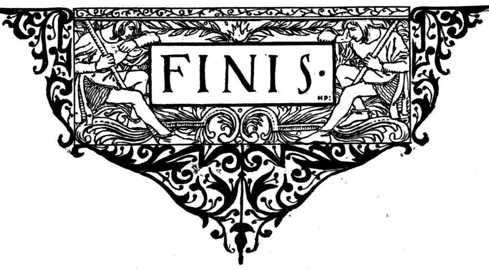